第3章 科普讲堂
3.1 混沌的冬日
3.1.1 序
1962年，美国海洋生物学家 Rachel Carson 出版了《寂静的春天》，这本书展示了农药污染下没有虫鸣的春天。在其影响下公众开始关注环境污染问题并开启了环境科学研究的序幕。然而，国内公众对于环境污染的关注也许并不用等到春天。近几年，每每国庆刚过，雾霾就会几次三番的席卷全国，呈现出混沌的冬日。

有人说发展的问题会在发展中解决，例如发达国家也经历过类似的阶段，但伴随产业转型与法规调控，污染问题都会自然而然地消亡；又有人说虽然城市会被雾霾笼罩，但从统计数据上看居民平均寿命其实比所谓田园风光的乡村更长；还有人说大气污染相比土壤、水还有固废污染都不算严重，只是可见度更高（也就是能见度低）……的确，雾霾这个现象背后有着错综复杂的社会经济影响，从不同的角度去看会发现不一样的东西。多一个角度看问题并不会让你过的更好，但至少更明白些。
下面我将给出一些非技术与法规调控的视角，希望对读者理解雾霾以及其他一些环境污染问题能有帮助。
3.1.2 研究增长的极限

上图是生物资讯数据库 Pubmed 上用颗粒物（particulate matter）作为关键词得到的论文数量，一百年来可以说是持续增长，特别是21世纪以来增长尤为迅猛。但需要注意的是到2015年达到了峰值（3429），16年已经明显下降（3134），今年还有两个月（2348），但不出意外也不会超过16年。至于为什么会有少量18年文献（26），这是学术界硬通货论文的通货膨胀，透支未来可以说是现代社会最伟大也最危险的发明，学术界亦然。也就是说，对于颗粒物的研究兴趣实际已经在降低了。
这个现象可能有点反直觉，因为近几年大气环境污染的公众关注度非常高，经费投放也很可观，但学术界却降低了学术交流频次。无独有偶，使用传统研究热点例如汞、铬、二恶英、基因组、纳米颗粒去进行检索，都会发现研究在2014-2015年间出现了峰值。但同时如果去看一些新兴研究例如3D打印，颗粒物中的细颗粒物（fine particulate matter），则增长还是非常迅速的（下图是以细颗粒物为关键词的文献发表状况）。
如果把学术界所有人的研究精力看成是总量稳定的，那么论文数可以看成精力的指标，对于包括大气颗粒物在内的很多环境研究课题而言，学术界正在把蛋糕切给更新的技术与概念。同样是进行雾霾研究，如果你从事微米尺度研究，而学术界却更加认可纳米尺度的研究，那么你的文章就很难发表，然后就是经费紧张，如此循环；进而使得新概念也不断变成老概念。
就颗粒物研究而言，目前学术圈总体关注度已经在下降，但分支中却有上升的。那么可想而知，学科内存在激烈竞争，并不是所有的颗粒物研究方向都是热点。而且还可以预期的是少数研究方向的异军突起会吸收更多学科内的研究资源，很多优秀的研究人员可能一开始选错了研究方向，最终的结局就是转行。研究的增长极限是客观存在的，所以如果你在这个年代打算去找专家咨询，最好去问上升期的新人，因为很多概念从出现到流行不到三五年，有经验的专家反而可能因为有学科内竞争关系而给出带有其自己都意识不到的感情色彩的论断。
3.1.3 有原罪的雾霾
如果某天PM2.5爆表，然后你又恰好感觉到嗓子不舒服，那么很自然你会认为这是雾霾的锅。这符合情理，但不一定符合事实，雾霾跟健康是有联系的，但跟健康有联系的可不仅仅是雾霾。即使仅仅考虑大气污染，颗粒物也只是能够产生爆表AQI的一个因素，其余的例如工业主导的硫酸型烟雾或汽车尾气主导的光化学烟雾都会影响健康，都能让嗓子不舒服，此时你会把原因归到哪里？
进一步讲，环境因素也只是影响健康的一个方面，遗传也起作用。假如你在雾霾天听到一个有气管炎家族病史的患者在咳嗽，你会认为是环境影响还是遗传作用？而根据最近Science的一份研究，即便你排除掉环境因素与遗传因素，仅仅是新陈代谢过程中DNA的复制次数就可解释癌症的发病率的66%，而这个过程根本就无法用先天后天因素来解释，就是个生长问题。
在中国，雾霾是有原罪的，它实际承载了社会转型期人们的一部分焦虑。如果其对健康的总影响是十，那么其中真实作用可能也就二三，替遗传和其他污染物背了三四的锅，还有三四则可以说是心因性的。今年柳叶刀上一篇文献就提到，中国PM1跟PM2.5大概贡献了医院急诊的4.47%与5.05%。这种研究有两个问题，第一，即使排除了意外导致的急诊（例如车祸），就诊行为本身就会受天气影响；此外就是 type M 型错误（效应数量级错误），也就是说这个效应是真实的，但是影响不一定大。
这其实是目前环境研究的一个通病，找一组病人和一组正常人（有的连这个也省了）采集样本，然后一把测定几百上千种污染物（这个现在技术上是没问题的），然后算相关系数，这种情况随机你都可以发现几个的，而这样做出的发现有个通病，那就是效应通常不大，很难重现。一个小而真实的效应或许有学术价值，但舆论一放大就会产生公众心理焦虑，而心理状态又会影响生理状态，这类影响可能并不比真实影响小。
雾霾是有原罪的，但被过度聚焦了，由此产生的焦虑与恐慌本身也会产生健康影响。如果公众可以更好理解科学研究现状与其中的问题，这并不能客观降低空气污染的健康影响，但在实际意义上却可能减轻雾霾的心因性副作用。
3.1.4 万金油的幻象
不知道从什么时候开始，万金油的心态重新出现了。以前如果我告诉你有一种方法可以让你永远远离雾霾危险，你肯定说我瞎扯。好，现在我换一种说法，在人工智能+区块链+可穿戴设备+大数据的实时监控下，我可以给你一副智能眼镜，上面会实时反应你现在的风险指数，如果指数超过80%，那么你就应该进入室内。逻辑上来说，如果你按照超过指标就躲到室内，那么这个风险永远不会变成100%，也就是说，这跟我刚才说的永远远离雾霾危险实质等同，但是这样的产品你多半不会觉得是瞎扯，甚至会愿意付高价购买，这又是为什么？
万金油思维从来都没远离过我们，只是从熟悉的名词变成了看似专业的术语。人们有一种看起来很理性但又很荒谬的行为：乐观而盲目地相信着未知的科技。雾霾来了，那就买个最好的空气净化器；外面看不见了，那就来个3M口罩；嗓子不舒服了，那就去搞点清肺的保健品。其实很多人都知道这些科技可能还不成熟，但只要花钱了就有种事情完结可以甩锅的想法。真实的情况往往是越是大家关注的事物，就越有人去贩卖这种包装过的万金油，你买到的更多只是一个确定性的心态。

在这个分工细致的现代社会里，绝大多数的服务业出售的都是经过专业化包装的确定性，用来抵消分工后一颗颗螺丝钉无法感知全局的焦虑。雾霾就是个全局问题，涉及很多不同专业的知识，当个体被复杂性搞晕时，最简单的方法就是掏出一把钞票买个心安理得。即使问题不能在当前根本解决，但生活总要继续，或许这就是万金油思维在进化上的意义。在雾霾这种大IP下，科学家、政府、骗子、掮客、投机商你方唱罢我登场，过分认真你就输了。
3.1.5 混沌的冬日
回溯千年，宋代诗人陆游在《秋霁》中提到:“驱除云雾极知难”，除了难在技术与法规，雾霾也是直指人心的。
看看窗外，凛冬将至

作者：yufree 编辑：栟
3.2 北京的空气变好了，但是……
早在2009年，美国驻华大使馆便自设空气监测站，并对外发布PM2.5数据。而直到2011年以后，随着微博、微信等自媒体的蓬勃发展，一些微博大V、微信公众号开始关注并转发美国驻华大使馆的空气监测数据。这引发了公众强烈热议，什么是PM2.5也成为一时关注焦点，环保等相关政府管理部门也不得不对此有所回应。2013年，国务院发布《大气污染防治行动计划》（就是所谓的“大气十条”），提出十条具体措施，明确经过五年努力，全国空气质量总体改善。而北京随后制定了《2013-2017年清洁空气行动计划》，明确了到2017年底PM2.5年均浓度控制在60微克/立方米左右的“京60”目标。
——写在最初
今年，是“大气十条”的收官之年，北京市空气质量是否明显好转？“京60”的目标是否已经实现？带着这些问题，我们采访了北京某环境监测部门的工程师及中科院某所大气环境研究人员，并对北京市市民进行了街访。
3.2.1 北京的空气质量到底变好了没有？
北京某环境监测部门工程师(以下简称“监测部门”)：从总体上来看，北京市空气质量呈现逐年转好的态势。以PM2.5为例，自2013年开展监测以来，2013-2016年PM2.5年平均浓度分别为89.5、85.9、80.6和73.0微克/立方米，下降的趋势非常明显。
根据北京市环保局发布的监测数据显示，2017年1-10月份，北京市PM2.5累计浓度为64微克/立方米，同比下降8.6%;空气质量达标，也就是我们所说的“1级优”或“2级良”天数172天，同比增加11天。这些数据均体现了北京市空气质量正逐年好转的特征。
下图是2013年1月-2017年10月北京市PM2.5日平均浓度的热度图（单位：微克/立方米），我们可以看出，这几年，PM2.5高浓度天数确实在减少，低浓度天数在增加。
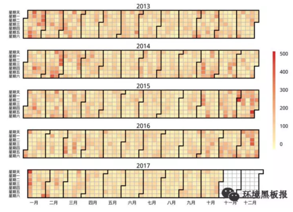
中科院某所大气环境研究人员(以下简称“科研所”)：空气质量变好还是变坏，污染物的浓度水平是一方面，污染物的成分变化更需要我们的关注。
举例来说，在1998年，北京主要遭受严重的燃煤和机动车排放混合型污染。自1998至2013年的15年期间，我们国家主要在燃煤电厂的脱硫脱硝技术方面做了很大的改进，使酸雨问题得到了控制。

而且，这15年期间，北京的CO、SO2、NO2和PM10的年均浓度均有显著下降，下降比例分别为58%，78%，24%和42%，尤其是CO和SO2基本稳定在国家空气质量标准值内。
但是，为什么最近几年，雾霾的问题反而更严重了呢？高效的除尘工艺只对粒径大颗粒物具有良好的去除效果，对于数量浓度较高的细小颗粒物去除率还有待提升。尤其在高湿环境下，大气中的多种污染组分如NOx、O3和光照条件促进SO2和VOC等的均相和非均相反应，促进新粒子的生成及细粒子的老化，形成成分复杂的较高浓度的细颗粒物（PM2.5）飘散在空气中，可由呼吸道直接吸入肺部，增大对人体的危害程度。同时，这些细小的颗粒物对阳光的吸收散射增强，降低大气能见度。
这几年随着环保力度加大，尤其是“大气十条”的落实，京津冀、长三角、珠三角PM2.5的浓度比2013年同期分别下降了38.2%、31.7%、25.6%，下降幅度均大幅高于考核标准。“京60”目标也有望实现。
近几年，VOC的排放呈显著增长趋势，或许会成为未来大气污染治理的又一难点。
小编言：随着我们环保治理力度的不断加大，北京空气中PM2.5确实在不断减少，蓝天的数量在不断增加，我们政府下了大决心，打了场胜仗，但是空气质量是否真的变好了，可能还有待研究。
3.2.2 目前，对于PM2.5浓度评价的标准使用的都是均值，如2017年，北京年均值达到60微克每/立方米左右，这样设置是否合理？
监测部门：目前的标准，使用的是均值，每日空气质量评价参考的是日均值，年度目标的完成情况参考年均值。各行各业很多和实际生产生活相关的标准都不需要特别精细化，虽然说设立置信区间能够更精细化，但是在当前的实践中可能比较有难度。标准就是个标尺作用，要满足大部分需要，在满足日常需求上，我认为用均值就够了。不过科学的标准更应该是根据人体健康效应来设置。
科研所：我不认为均值是一个很好的统计量，打个比方，如果只用一个标准值去衡量，那就相当于默认均值背后的分布或者污染特征是一样的，但实际数据的分布并不一样。如果能够精细化一些，可能会更加准确，说服力也更强一些。当然，这也是当前科研出现危机的一个例子，现实的复杂并不适合用简单统计量来描述。
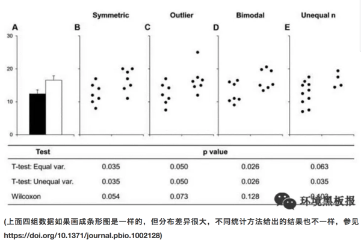
现在环境监测能力越来越强，获得的数据越来越丰富，加上越来越先进的数据处理手段，有实现精细化展示的可能性。标准的制定最好通过置信区间来定义，例如考核指标改为90%的分时浓度区间，也可以考虑工作日与双休日制定标准。

小编言：均值作为标准，应用和管理起来或许会很方便，但是会隐含一些我们看不到的分布特征，而这些特征对于精细化管理大有裨益。
3.2.3 按照《北京城市总体规划》（2016-2035年）要求，到2020年PM2.5浓度下降到56微克/立方米左右，对此，您持何种态度，判断依据？
监测部门：我对此还是持乐观态度的，主要原因为：(1)目前的高压态势环保治理已经成为常态，而不是部分时期采取的临时措施，污染源减排力度将会持续加大。(2)国家正积极加大能源结构调整，目前清洁能源的使用率和使用范围越来越大。(3)民众的环保意识越来越强，自身参与环保的行动也越来越多。在政府和民众的不懈努力下，北京市PM2.5浓度会越来越低。
科研所：对于这个观点，我持乐观态度。首先，政府、民众都很关心，科研人员也在污染源解析、气象模式预报、大气污染追因等方面做了很多的研究工作。其次，治理污染需要一个过程，在2015年以前，重点在酸雨的调控，近几年，重点在PM2.5的调控，未来还有VOC和O3问题也需要解决。根据目前的数据和政府的决心来看，我是持乐观态度的。
小编言：对于未来，我们多是持乐观态度，一方面我们对现在的政府充满了信心，“绿水青山就是金山银山”理论正在引领新实践，另一方面我们自身也深感美丽生活环境的重要性，环保意识不断增强。
听了政府监测部门和科研机构人员的回答，我们已经感受到了政府和研究机构在改善北京空气质量方面所做的努力。那么作为北京市居住的老百姓，作为空气质量改善的最直接受益人，他们的感受是怎么样的呢?
3.2.4 您好，您觉得北京的空气变好了吗？
蓝天：感觉今年蓝天确实比去年多了，是不是跟今年风多有关系啊。不过也听说最近环保搞的力度挺大，又是督察又是巡查的，空气污染严重还问责，今年还轰轰烈烈的搞了煤改气，听说周边农村里煤不让烧，气供不上，挨冻了都，好在听说环保部紧急发文，让一些没改好的地方接着烧煤。今年天儿好可能这些治理法子还是起了作用吧。
白云：感觉今年重雾霾好像是好了一点，以前雾霾严重的时候，窗户外面都几乎看不见。其实我对雾霾真是没怎么关注，感觉对自己影响不大，主要是考虑到孩子，希望每天都可以看到蓝天，这几年的雾霾让人有些麻木了吧，到哪里看到雾霾都不觉得吃惊了，反而连续出现蓝天倒是觉得不可思议。
青山：这个我还真关注了，毕竟跟咱北京人儿息息相关么。北京现在空气肯定是在慢慢变好，但是大家感觉不强烈。感觉政府宣传的不好，一方面是老百姓不信，另一方面政府没有转变思维，还是封堵，而不是疏通，预警措施也不够。
3.2.5 按照目前北京市环保局网站公布数据，北京市今年很有可能达到年均值60微克每立方米左右，北京市空气质量逐年改善，您对此怎么看？
绿水：其实吧，我不清楚60微克是啥概念，天天听人说，也没有人科普过，如果说就是雾霾好一点，今年感觉是比去年强点，但要说强多少，也没有吧，前两天不还雾霾来着。
阳光：达标能怎样，数据可以求平均值的，总共有个30天极其严重，而其他天数全是好的，一平均不就是好了，但是老百姓的感官还是不好的。
鲜花：恩，现在政府抓环境抓的紧，我们那片好几个小工地都关了。政府立了指标，老百姓就好监督嘛。而且现在市长是搞环境出来的，又是从环保部过来的，我觉得在改善北京空气方面，还是能有所作为的。
小编言：看来，民众的感受也是因人而异啊，不过总的来说，政府的努力还是得到了认可，民众提出质疑的同时也对政府对科研部门寄予了厚望。
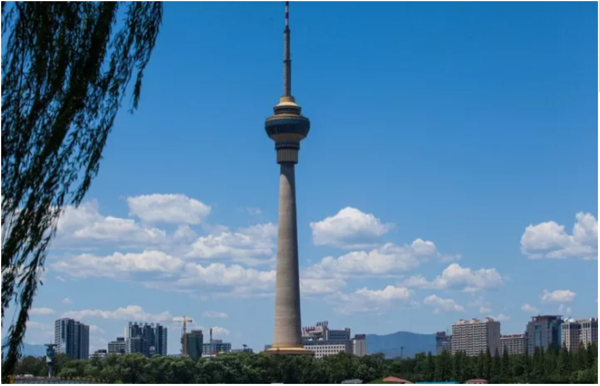
经过几年的努力，北京的空气改善明显，但是否有新形式的污染物出现危害公众健康，是否在目前认为的质量改善背后隐藏着其他的隐患，作为政府工作人员还是科研工作者亦或是你我，都仍需负重前行，不忘初心。
作者： 次要男主角 校稿：周宁，王小咖 图片：yufree 编辑：竹而乐
3.3 等风来
2000年左右，北京人讨厌风，因为一到大风季节，黄沙滚滚，遮天蔽日。可是近些年来，人们又盼着风，期望风来了，把自己从雾霾中解救出来，一时间“等风来”成了所有人的心声。雾霾和风几乎每年都会在北京的地界干上几场大仗，有时力量悬殊，战争迅速结束；有时势均力敌，展开拉锯战。下面我们详细解析一下双方斗争的形势。
3.3.1 与雾霾的战争
首先我们将北京全市PM2.5（细颗粒物）日平均浓度高于200微克/立方米、持续时间超过2小时的污染状况定义为一次重污染事件，2013年8月到2014年8月期间，我们共观察到六次重污染事件，分别为2013年10月28日（265.59微克/立方米）、2013年12月8日（202.63微克/立方米）、2014年1月23日（233.71微克/立方米）、2014年2月15日（437.15微克/立方米）、2014年2月26日（337.39微克/立方米）和2014年3月27日（234.32微克/立方米）。我们基于GIS软件，通过克里金差值方法对这六次重污染过程形成和消散过程进行了模拟。
3.3.2 雾霾的胜利
北京PM2.5重污染事件主要受外源传输影响。从重污染形成的过程看，北京这六次重污染过程中，细颗粒物从北京东南部或者南部，逐渐向城中心和西北部缓慢扩散，最终全城形成重污染（图1）。

在重污染形成期间北京平均风速低于1米/秒，主导风向为南风和东南风（图2），说明北京的PM2.5重污染的形成受外源传输影响较大。主要的污染物来自北京东南部和南部的廊坊、天津和保定等省市。重污染的形成时间一般为3-7天。

3.3.3 大风的胜利
北京PM2.5重污染的消散主要借助风。北京这六次重污染消散过程中，受风的影响，细颗粒物从北京西北部开始，逐渐向城中心和东南部推移，最终实现全城PM2.5消散（图3）。在此期间北京平均风速为2.5米/秒，而主导风向为西北风和北风为主，只有一次为南风。从模拟结果看，北京的细颗粒物被西北风一分为二，之后在向东北和西南逐渐扩散，直至完全消散。说明北京的PM2.5重污染的消散主要依赖于西北风的影响，而且平均风力为2.5米/秒（图4）。重污染的消散过程比较迅速，整个消散过程时间一般在6-11个小时，其中消散最快的一次，出现在2014年2月26日，全市平均PM2.5浓度从431微克/立方米降到21微克/立方米，仅用了6个小时，期间平均风速为3.2 米/秒，主导风向为西北风。其中最慢的一次（2014年2月17日）持续了18个小时。主导风向为东南风，风力2.4米/秒。可见，北京PM2.5的消散过程与风向和风力有密切关系。

总体看来，风速1米/秒是一个坎，风速小于1米/秒，则容易形成雾霾累积；当风速大于1米/秒，重污染容易扩散，尤其是西北风。
3.3.4 势均力敌
2018年1月13-17日，京津冀及周边地区经历了一次大范围重污染过程，污染范围包括河北省、山西省、山东省和河南省等城市全部或者部分地区。石家庄市是受重污染影响较大的城市之一，截止到1月21日0时，本次中污染石家庄市出现了164个小时的重度污染和90个小时严重污染（数据来源于网络，未经审核）。
石家庄市从13日凌晨开始空气质量逐步转差，污染物浓度波动上升（图5）。13日5时达到重度污染， 14日6时，污染物逐渐累积，11时达到严重污染。16日14时至17日7时空气质量出现短时改善，部分时段降至中度污染以下水平。此后空气质量继续恶化，重污染持续，但污染程度轻于第一次累积过程。1月18日15时，再次得到短时缓解，之后污染物浓度继续升高，全市PM2.5小时平均值最高值出现在19日12时，达到317微克/立方米。之后迅速下降。1月19日16时，下降到最低值，为117微克/立方米。之后污染物继续累积，1月21日空气质量好转。截止到目前，重污染源已经持续393个小时，其中，有164个小时的重度污染和90个小时严重污染（数据来源于网络，未经审核）。
在此过程中，风速与空气污染指数呈现明显的负相关关系（图5）。风与霾此消彼长，在石家庄市展开拉锯战，持续时间已经超过一周。中间几次过程，主要风速大于1米/秒，空气污染就会得到改善。一旦面临静风时刻，污染物开始逐渐累积。
3.3.5 雾霾攻坚—源头把控
在污染治理上，我们要做的还有很多，默默的等风来，不是真正的解决问题的方法。根据贺克斌院士的观点，城市治霾的根本在于管住污染源。2017年8月18日《京津冀及周边地区2017-2018年秋冬季大气污染综合治理攻坚行动方案》（环大气〔2017〕110号）实施以来，在京津冀及周边地区2+26城市，坚持问题导向，把稳固“散乱污”企业及集群综合整治成果和高架源稳定达标排放作为坚守阵地，把压煤减排、提标改造、错峰生产作为主攻方向，把重污染天气妥善应对作为重要突破口，加强联防联控，严格执法监管，强化督察问责，全面实施攻坚行动，动员全民共同应对重污染天气。“攻坚行动”方案规定主要完成的11项任务中有8项与污染源管控有关。截止到2017年12月PM2.5浓度削减幅度最大的前六位城市是石家庄、北京、廊坊、保定、鹤壁和安阳市，与去年同期相比，PM2.5浓度削减幅度均在40%以上，可见污染源管控才是真正解决雾霾的根本手段。
等风来不如去追风，幸福都是奋斗出来的，总有一天我们能切实做到污染源有效管控，从源头上减少排放，雾霾问题才能从根本上得到解决，相信我们生活的环境会越来越好。
作者：大石 校稿：看透，胜利屯屯长 编辑：丫头晚安
3.4 纳米非米
随着“水十条”、“气十条”和“土十条”的出台，我国已全面启动了“向污染宣战”的环境大战。那么纳米材料如何在环保领域掀起新潮呢？本文以碳纳米材料为一个视角，从选料-制备-应用的角度浅谈一下纳米材料在环保领域如何小试牛刀。
3.4.1 碳纳米材料
相信在很多读者的印象中，“纳米（Nanometer）”一词总是披着神秘的面纱，影影绰绰，忽远忽近。那么纳米到底是什么？实际上，它与毫米、厘米和分米一样，也就是个长度单位而已，十亿分之一米，即一纳米。
纳米尺度的物质在性质上，跟宏观物体表现出巨大的差异。比如纳米级的金子不再是金色而会失去光泽呈现黑色，纳米级的导电体会变得绝缘，坚硬的金属在纳米级会变得柔软。实际上，无论是人工纳米材料还是天然纳米材料，我们经常与它们亲密接触。大家几乎天天使用的数码电子产品的中央处理器就是用纳米材料制备；iphone的疏油涂层、国家大剧院的穹顶都与纳米材料有关；军事里的隐形战机也是涂了一层吸波纳米材料；甚至大气里的雾霾也包含了各种尺寸的纳米颗粒。可以说纳米材料已经与我们的生活息息相关了。
碳纳米材料的重要性和应用潜力已在最近20年的最高科学奖项中得到承认，包括1996年诺贝尔化学奖（富勒烯）、2008年卡弗里奖（碳纳米管）和2010年诺贝尔物理学奖（石墨烯）。由于其独特的理化性质，碳纳米材料在环境治理领域的应用研究一直是热点之一。然而由于目前的碳纳米材料制备方法成本高、产率低、条件苛刻、生产过程会伴有有毒副产物，极大地限制了其在环境领域的实际应用。因此，迫切需要开发高效、绿色、低成本的材料制备技术。在此背景下，该领域里近年来兴起的“以废治废”新概念逐渐引起了注意。意即将人们通常视作废弃物的材料（如富碳生物质）加工处理成碳材料，再投入到环保相关领域里使用。

3.4.2 哪些废弃物可以加工成纳米碳材料？
一般来讲，可以加工成纳米碳材料的废弃物，可以按其环境价值分为两类。一是低值类废弃物。如秸秆、稻草、稻壳等植物类废弃物；动物粪便、剩余污泥等有机质废弃物；以及甘蔗渣、甜菜渣等工业废弃物；二是负值类废弃物，如塑料袋、塑料瓶、海绵、轮胎等。
这两类的大多数废弃物都未得到合理利用，以此类废弃物作为原料制备碳纳米材料，一方面可以降低大规模生产时的成本，另一方面也可解决传统处置方式可能引起的环境污染问题。例如我国农村地区的秸秆（环境黑板报后续会有关于农村秸秆的专题文章）和农膜问题，大量焚烧会造成严重的空气污染和资源浪费。

3.4.3 如何将废弃物加工成纳米碳材料？
一般有水热碳化法和直接碳化法。
水热碳化法是指在密闭环境中，以水溶液为介质，使原料在高温（100-300°C）高压下经过一系列复杂反应生成碳材料的过程（实际上就是将原料洗好、称好，放铁罐子里扔烘箱里反应半天左右就行）。用水热碳化法制备碳材料，因其操作简单、无污染、对仪器要求低、转化率高等优点被广泛应用。此外，水热法合成的碳材料表面通常会含有丰富的官能团，特别有利于其应用在工业废水的处理中。目前，包括木屑、树叶、稻壳、松针、塑料袋、废报纸等废弃物都被成功地通过水热法碳化成碳材料，还有研究通过此法成功地将草变成了荧光碳量子点。
直接碳化法是指将原料置于无氧条件（惰性气体）下，高温（>600°C）裂解成碳材料的过程。（实际上也很简单，就是将原料放到管式炉中通氮气或者氩气加热一段时间就可以）在高温条件下，原料中的挥发性有机物会逐渐被分解直至留下碳骨架。通常，直接碳化法还需加入一些化学活化剂或者氧化性气体来活化碳材料，以使其表面孔隙度和比表面积增强。碳化温度、升温速率、碳化时间等因素都会影响碳材料最终的形貌和性质。用此法合成的碳材料，表面会具有较强的疏水性，所以对有机污染物的吸附能力很强。
3.4.4 纳米碳材料在环保领域有哪些用处？
- 土壤修复
以废弃生物质制得的碳材料具有发达的孔隙结构，当被添加到土壤中时，可以明显改善土壤结构，降低土壤的体积质量1。另外，生物质以生物质碳材料的形式贮存在土壤中，Ｃ元素被固定，减少了向大气的排放；另一方面，生物质碳材料也可以为土壤提供Ｎ等营养元素，提升土壤肥力2。上海交大曹心德教授认为生物质碳材料还可以用于土壤污染物的稳定化修复，他将具有独特吸附性能的碳材料形象比喻为“吸盘”，对土壤中重金属和有机污染物进行吸附“封锁”，从而阻碍植物对污染物的吸收。Puga A. P.等人将甘蔗秸秆制成碳材料用于土壤中重金属钝化研究，发现其可将Cd、Pb 和 Zn 的有效态分别降低 56%、50% 和 54%，并抑制它们向地上部的迁移3。Khan. S.等人使用盆栽试验研究证实， 用污泥制得的碳材料能够减少水稻对As、Co、Cr、Cu、Ni、Pb的吸收4。当然，不同的废弃物原材料、碳化温度、碳化方法制得的碳材料物理化学性质不同，其土壤修复的效果也有差异。
- 污水处理
废水中常见的污染物有重金属离子、染料及其他有机污染物。吸附法处理废水由于工艺简单、成本较低、可利用吸附剂来源广泛等优势倍受青睐。废弃物加工制得的碳材料比表面积大、孔隙度高、表面基团丰富，对吸附废水中的污染物十分有利。研究表明，以废弃物为原料制得的碳材料不仅可以通过表面作用（静电吸引、疏水作用、π-π作用等）对重金属离子和有机物分子进行吸附（adsorption），还能凭借较高的孔隙度对油类污染物进行吸收（absorption）。例如新加坡南阳理工大学张华教授课题组成功将废报纸制得碳气溶胶材料用于油类物质和有机溶剂如氯仿等的去除，取得了较好的处理效果5，这为解决海洋原油泄露污染提供了一个潜在的解决思路。印度理工学院鲁尔基分校Vinod K.教授将废轮胎制得的碳材料作为吸附剂处理水中重金属离子，发现其对Pb2+、Ni2+有非常好的吸附能力6。陕西师范大学张志琪教授课题组成功将香蕉皮碳化为多空碳材料，发现其对水中典型染料分子亚甲基蓝有较好的吸附去除能力7。
- 能源应用
此种碳材料由于较高的石墨化程度，其电子传递能力较强。又由于生物质中还有大量的N，P，S等杂原子，使得由其制备的碳材料导电性进一步增强。因此此种材料在电化学上也具有广阔的应用前景。例如碳材料因为比表面积大、稳定性好、导电性好、价格便宜、来源丰富而成为超级电容器电极材料的首选。我们日常生活中的新能源汽车、数码相机，甚至楼道应急灯都有超级电容器的身影。例如大连理工大学邱介山教授课题组将虾皮制备成氮掺杂碳材料用作超级电容器，其在电流密度为50 mA/g时，比电容可达357 F/g8。利用西瓜皮、麦秸、绿茶、柚子皮、稻壳等制成的碳材料也可作为性能优异的负极材料用于锂离子电池。例如新加坡南洋理工大学于霆教授将竹筷碳化成碳纤维用于锂离子电池，其首次放电和充电质量比容量值分别为500mAh/g和283 mAh/g，且循环稳定性较好，有望替代传统石墨电极在锂电池中的作用9。

3.4.5 结语
以废弃物为原料制备的碳材料已被广泛研究用于土壤修复、污水处理和电化学领域，展现出了广阔的潜在应用前景。废弃物来源广泛、价格低廉的性质也使得此概念为大规模商业生产提供可能。然而目前对废弃物碳材料的研究才刚刚起步，处于发展阶段，很多碳材料仅限于实验室制备而没有进行大规模的工业化生产，距离大规模实际应用还为时尚早。
此外，在大规模应用之前，其对环境可能造成的潜在风险也有待进一步研究。这也正是纳米科技目前的发展缩影。正如中国科学院院长白春礼所说：“纳米科技发展方兴未艾，基础科学研究领域中新原理不断建立、新功能材料的涌现与可控制备技术的发展、纳米生物医药的应用探索都体现出纳米科技对人类知识体系的极大拓展以及对生活方式的潜在推动作用。尽管纳米材料显示了产业化以及临床应用的巨大前景，但多数材料目前仍处于实验室研究阶段，如何实现这些材料的功能化、推动商业化应用、相关的生态影响和生物效应是纳米科技发展面临的关键问题”。中国科学院生态环境研究中心江桂斌院士曾将基础研究形象比作翻书：“当书本一页一页翻至最后时，就是量变到质变的时候”。这也同样适用于纳米领域，或许质变之时我们就能用上充电几秒即可充满的电子产品，纳米机器人实现药物精准输送、有的放矢。
文献引用
作者：眼神防守 校稿：柴胡半夏苏，yufree 编辑：栟
3.5 你喝的可能是“有毒”的自来水？！
3.5.1 水发生了什么？——水污染
地球是个名副其实的“水球”，水资源总储量约为1.36×109km3，但除去海洋等咸水资源外，只有2.5%为淡水。淡水又主要以冰川和深层地下水的形式存在，储存在河流湖泊中能被人类所利用的淡水仅占全世界总储水量的0.3%， 然而，这极为稀有的淡水，却面临着另外一个不可忽视的严峻问题——水污染。水污染问题使得人类“获得安全可靠的饮用水”这一基本诉求难上加难。

联合国组织秘书长在2002年世界水日发布的新闻稿估计， 全世界有11亿人无法获得安全饮用水。中国的水污染问题尤其严重，如图所示，中国绝大部分地区的饮用水仅满足最低标准，在中南部有些地区，饮用水水质更加糟糕。

3.5.2 引起水污染的罪魁祸首是谁？——污染物
近些年来，全国各地水污染事件频发，如2012年12月，位于山西省长治市境内的煤化工厂发生苯胺泄漏入河事件，导致河北省邯郸市发生停水和居民抢购瓶装水，同时由于泄漏苯胺已随河水流出省外，河流下游的河南省安阳市境内红旗渠等部分水体亦检出超标的苯胺、挥发酚等污染物。
综合所有水污染事件可得出，引起水污染的污染物有很多，通常可分为三大类，即物理性、化学性和生物性污染物。
物理性污染物包括悬浮物、热污染物和放射性污染物。其中放射性污染物危害最大, 但一般存在于局部地区。化学性污染物包括有机和无机化合物， 该类化合物近些年来在环境水体中频繁被检出。生物性污染物包括细菌、病毒和寄生虫。随着痕量分析技术的发展，至今从源水中检出的化学性污染物已达数千种以上。在所有的化学性污染物中，微量有机污染物逐渐引起人们的广泛关注，并已成为世界几乎所有地区水污染的首要污染物。
微量污染物是指那些广泛使用但通常在很低或者极低浓度水平就能影响自然环境生物化学过程的有机污染物，包括人工化学合成品，比如活性药物成分、食品添加剂、化妆品成分和洗涤剂成分，以及天然存在的一些物质如激素、生物毒素等。近年来，一些新型微量污染物，例如药物与个人护理品（PPCPs）、内分泌干扰物（EDCs）、全氟类化合物（PFCs）等的环境污染及潜在影响问题已成为各国学者和公众关注的焦点。很多微量污染物具有较强的环境持久性、生物活性、生物累积性和难降解性，如果长期暴露于环境中，对生态系统和人类健康将带来难以预测的潜在风险。我国是各类工业品、药品的生产和消耗大国，工业和人口密集，能源和资源利用率仍然较低，高强度的工业化学品生产、使用和废弃会产生严重的环境效应，因此微量污染物的环境残留问题更是不容忽视。

3.5.3 污水处理厂可以使水变干净么？——未必！
为了去除环境水体中的微量污染物，人们寄希望于现有的污水处理工艺。然而，当被污染的水经过污水处理厂处理之后，真的可以变干净么？答案却是未必！
- 微量污染物的去除很难达到100%
近年来，欧盟和一些发达国家开始高度关注水环境中的微量污染物问题，研究发现城市污水中化学物质普遍存在，有些是常规污水处理工艺难以去除的，因此污水排放是河流水体中化学物质的重要来源。
城镇污水处理厂的工艺选择主要基于排放标准中COD、BOD5、NH3-N、TN、TP等常规污染物指标的稳定达标。另外值得注意的一点是，污水中的许多痕量污染物具有一定的毒性，对活性污泥中的微生物易产生一定的抵抗和抑制作用，因此，目前常用的污水处理工艺如活性污泥等对痕量污染物的去除并不能达到100%。同时，在污水处理工艺流程中，部分微量污染物通过活性污泥吸附或者生物降解、水解等得到去除，但许多亲水性物质不能吸附到活性污泥上，导致出水仍然残留相对较高的浓度，释放到接纳水体中，引起水生生物的慢性接触。需要关注的是，某些微量污染物具有中等或较强的疏水性，易于被活性污泥絮凝吸附；但由于仅仅是相的转移而不是降解，这部分被吸附的微量污染物往往随着污泥的处理处置过程进入地表水体或土壤环境中，直接或间接造成潜在的环境与健康风险。城镇污水处理厂出水及污泥是环境中不可忽视的痕量有机污染物的源。
- 残存的微量污染物可能在处理过程中发生二次反应生成更毒的物质
在当前的污水处理厂中，化学降解方法包括光催化氧化，臭氧化和氯化被认为是有效处理微量有机污染物的几种工艺。然而，虽然微量污染物可以在一定程度上被去除，但由于有毒转化产物的生成，使得其环境健康风险却未必消失。有各种报道称，微量污染物在化学降解过程中可能转化成其他的副产物，使得污水处理厂的出水毒性反而较处理之前增加， 这些转化产物最终进入地表水，甚至到达饮用水，对水生环境及人体健康造成更高的生态及健康风险。有研究表明，这些有毒的转化产物可能破坏内分泌干扰系统，干扰人类和动物的激素系统功能。此外，有些有毒转化污染物还可能致癌，致突变和引起生殖系统的病变。例如，在饮用水氯化处理过程中， 有大量的消毒副产物如三卤甲烷，卤乙酸及亚氯酸盐等生成，这些消毒副产物已被证实在较低的剂量下即可以诱发肝癌和肾癌，并可降低精子的自动力，影响生殖系统的发育。
换句话说，人们原本寄希望于去除有毒的微量污染物从而得到干净安全的饮用水，这一目的不仅难以达到，相反，被污染的水在经过污水处理厂处理后可能生成更加有毒的转化产物，使得其环境和健康风险可能更高！更为糟糕的是，民众对于这一现象知之甚少，以为自己饮用的是一杯经过处理之后的干净安全的饮用水，实则却是一杯含有有毒化学物质的“不健康水”！

3.5.4 小结
中国约50%的水源受到微量有机化合物及重金属离子等物质的污染，令人堪忧的是，目前全国县以上4000多家自来水厂中，95%以上仍然使用传统水处理工艺，这些工艺在处理有机化合物及重金属离子时，处理效果并不理想，同时，即使这些传统处理工艺能够在一定程度上去除该类污染物，更加有毒的转化产物也可能会生成使得自来水面临更高的健康风险，而普通民众对于这一事实却无处知晓。
水污染问题的确是个相当棘手的大问题，利益关系错综复杂，要完全改善也并非一朝一夕，是一个缓慢长远的过程! 笔者认为目前的水污染治理还存在诸多问题，首先，水质检测不够专业认真。几乎所有的饮用水专家和学者都认为中国的水质存在严重的安全隐患，但是在众多自来水厂的报告中，却几乎没有一家自来水厂自检水质不合格。这一看似矛盾的现象说明很多自来水厂在水质检测上并不认真，很多时候仅是马马虎虎测一些无关痛痒的参数告知民众自来水是安全的，但是背后真正的问题并没有被揭示出来。其次，污染控制不严，执法力度不够。自来水水质优，首先应得益于严格的水源控制。为保障水源安全，应建立水源保护区，在保护地带内，禁止一切有污染物质的进入，违者应被加以重罚。但我国目前的情况却是，许多工厂非法排污造成水源污染，但是当民众给所属环保部门报告时，监管部门大多并未作出积极的反应，或者即使作出反应，也仅是隔靴搔痒，并未真正杜绝该类地下排污问题的发生。
2015年“水十条”落地，预示着政府将握紧拳头向水污染宣战，笔者真心希望政府在以上问题上加大监管力度，对故意排污造成水污染的当事者予以重罚，同时对环保部门及水质检测部门加以规范，以期对水质状况获得最真实的第一手数据，为日后的水污染治理提供重要的观测基础。
作为与水息息相关的我们每一个人，除了等待政府可以更快更好的解决水污染问题，在日常用水中时要及时观察生活用水的水质变化，看其是否出现异常颜色或浑浊，有无异物及异味等。饮水前先放水，让水流一会儿，将管道中的“死水”流出再饮用。另外如有条件，建议增加具备反渗透膜过滤的净水器。
作者：李立平（博士，毕业于香港科技大学，从事水处理领域近7年，在相关研究领域发表学术论文数篇） 校稿：yufree，大石 编辑：丫头晚安
3.6 一滴水的故事
曾几何时，一滴水随着千万个同伴出现在这个星球。他们开始塑造这个星球，改变着地貌，孕育着生命。人类从出现的那一刻起，就开始了与水相爱相杀的历史。从两河流域的空中花园到尼罗河流域的金字塔，从马拉松的烽火到牧野之战的硝烟，水，孕育了地球最初的文明。同时，人类早先的传说，从诺亚方舟到大禹治水，又无处不在昭示着人类对水的敬畏。
水与人类的相爱相杀一直在进行着。有一滴水躲在茶壶里变成了蒸汽，告诉一位叫瓦特的人这样的力量可以推动机器运转，于是推动了轰轰烈烈的工业革命；有一滴水和同伴们一起构成了江、河、湖、海，让人类可以物流南北、货往东西，文明的火种得以靠水传播。
人类使用着水，也污染着水；净水养育着人类的同时，污水却时刻威胁着人类，这样的相爱想杀更是直接催生了我们的专业——环境科学与工程。此刻我们对水充满敬畏，毕竟水撑起了整个产业链上的勤劳的人们。水进入大气在不利的气象条件和污染物参与的情况下，形成雾霾，这一点我们在《混沌的冬日》里已经写过；水进入城市，若无法正常下渗、排除，则形成内涝，这直接催生了海绵城市的建设思路，这一点我们在《城市之殇》中已经展现；即使不听话的、因污染而变坏的水，工程师们不死心，坚信每一滴水都是清纯的，于是我们人类建立了污水处理厂，通过活性污泥法和生物膜法等工艺，使受污染的水改头换面，还清还纯，而这在《污师私房菜》中，我们也有所提及。
地球的水储量是巨大的，然而淡水资源却是如此的稀缺，环境工程师们在累死累活守护净水的同时，一个“开源”的灵感开启了水资源的另一段神奇之旅：
3.6.1 海水淡化
海水淡化方法主要分为热法和膜法。
热法：海水的盐度很高，直接饮用只会越喝越齁，但早在公元前1400年，海边的居民便学会了在锅内把海水加热到沸腾，使海水蒸发变成水蒸汽，盐分留在锅底成为垢，并使水蒸汽遇冷成为可饮用的蒸馏水。这也是今天常用的蒸馏法海水淡化的原型。而现代常用的热法海水淡化主要有多级闪蒸和低温多效两种。

膜法：1950年美国佛里达大学瑞德（C.E.Reid）教授在无意间发现了一个奇怪的现象。他观察到海鸥在海上飞行时从海面啜起一大口海水，隔了几秒后，吐出一小口海水，这个现象引起了他的思考。后来经研究发现，海鸥体内有一层薄膜，该薄膜非常精密，海水被海鸥吸入体内后，经过压力作用使水分子穿透薄膜转化为淡水，而含有杂质及高浓缩盐分的海水则吐出嘴外。于是，受此启发，瑞德教授提出了反渗透的基本理论。反渗透膜如同一只特殊的过滤筛子，在压力下过滤掉了水，而留下了盐（看到这里我觉得瑞德教授至少不是一个喜欢吃野味的人）。运用这一原理，我们就可以利用反渗透膜从盐水中获取淡水了。
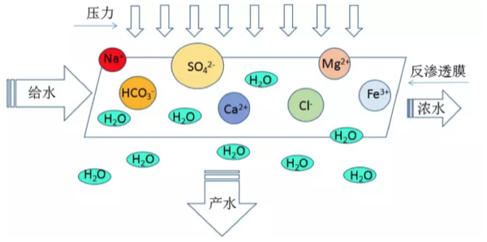
我国人口占世界22%，淡水占有量却仅为8%，世界排序名列109位，是世界上12个严重贫水的国家之一。而海洋中蕴藏着丰富的淡水，其总量约占海水的97%，相当于13.3亿立方公里之多，是一个巨大而又稳定的淡水储库。海水淡化作为水资源的开源增量技术，具有稳定供水、应急供水和战略性供水的特点，是解决沿海水资源短缺问题的重要途径。笔者收集了我国沿海地区人均水资源情况，发现沿海地区由于经济发展水平和人口密度较高，缺水情况反而高于全国平均水平，形成了靠水没水的情况。海水淡化成为了一些沿海地区解决缺水问题的关键手段之一。

我国海水淡化的历史始于上世纪五十年代。至2015年，全国总产能已经超过百万吨，约为全球海水淡化总产能的2%左右。随着经济的发展，我国在国际海水淡化市场的比重逐渐增加。如下图所示，我国在这一年的产能增长约为中东地区的一半左右。中东地区存在一些自然条件上的限制，促使他们更加积极地开发海水淡化技术，因此中东地区历来是海水淡化最重要的市场，所以我们国家海水淡化产能比不过这些土豪真的不丢人。

目前我国已建的海水淡化产能主要集中在辽宁、天津、河北、山东等北方省市，这四省市产能占我国海水淡化总产能的81.9%（2014年数据，见下表）；与此对应的是不同省份对于海水淡化的关注度，下图是来自海水淡化的网络搜索指数，排行前五分别是北京、广州、浙江、江苏、山东,从中不难看出，海水淡化的关注度和接受水平也与地区的经济发展状况息息相关。

2016年12月，国家发改委和国家海洋局联合印发的《全国海水利用“十三五”规划》指出，到“十三五”末，全国海水淡化总规模拟达到220 万吨/天以上，其中沿海城市新增海水淡化规模105 万吨/天以上，海岛地区新增海水淡化规模14 万吨/天以上。而海水直接利用规模拟达到1400 亿吨/年以上，海水循环冷却规模达到200 万吨/小时以上。新增苦咸水淡化规模达到100 万吨/日以上。海水淡化装备自主创新率达到80%及以上，自主技术国内市场占有率达到70%以上，国际市场占有率提升10%。相信未来海水淡化会有更快的发展。海水淡化项目在某种程度上是一种基础建设项目，与各级政府的施政方向密不可分，所以虽然国家出台了一系列的规划政策，具体落地还是需要很长一段路。
3.6.2 后记
2010年，我们像一个一个水滴汇入了中科院这个汪洋大海，拥有了这片汪洋大海里的化学物质。随着时间的推移，我们又流到了其他地方，在各自的岗位上吸收了新的化学物质。不同物质间的反应总能产生新的物质，所以我们决定讲我们的源，讲述我们每一滴水的故事。
作者：yy 校稿：胜利屯支书，看透 编辑：栟
3.7 小秸秆，大问题
2017年11月，演员孙艺洲拍戏途径哈尔滨，被郊县烧秸秆的烟熏味儿呛到流泪，随后在微博上抱怨：为什么一个白天空气质量优良的城市到了夜晚就空气爆表?为什么?怎么办?这个问题并不算新，但当它被一个拥有一千多万粉丝的耿直boy问出来的时候，还是结结实实触到了很多人的痛处。
在哈尔滨，把孙艺洲呛到流泪的是秸秆焚烧产生的颗粒物。每年秋收以后，庄稼被打捆、加工、再被送到每个人的餐桌上，算是完成了自己的历史使命;但秸秆这种副产品却被留了下来。
在田间地头，常常可见成垛的玉米或者小麦秸秆，勤快点儿的农户，将其垛得整整齐齐，也算是道风景;懒一些的，堆放得毫无章法，影响观瞻。
其实这个时候农民是真的忙。每年10-11月，是我国 “秋收秋种”期，各级农业部门一级战备、高度紧张，密切关注天气变化和降雨量，一轮又一轮的“紧急通知”，为的是指导农民收得时机合适，种得不早不晚。因为只有这样才能保证丰产丰收。
我们大东北黑土地在这个时候是收玉米种小麦，秋收整地追求“深、净、细、实”，小麦播种要在适宜播种期抢播早播。收下来的玉米秸秆无处可放，尽管我国80年代起就出台各种秸秆禁烧的相关规定，禁烧态势越压越重，但比起秸秆处理的经济压力和劳动力需求，很多农民不由自主就选择用“一把火”解决问题。
不烧不行啊，秸秆太多了。1991年我国秸秆产量为6亿多吨，经过了粮食总产量的“十三连丰”，到2015年，秸秆产量为10亿多吨。多出的秸秆总量为4亿多吨!什么概念呢?如果把这4亿多吨秸秆以100根为一扎首尾相连，能绕地球赤道转325000圈……

不烧不行啊，农民家里实在没人。壮劳力都出去打工了，只剩下老人和孩子，尽管乡里承诺可以集中处理，那也需要把秸秆运输到集中处理点，老人孩子不会开车，没有工具，再好的政策也解不了眼前的急。
但烧秸秆的确是后患无穷。农作物光合作用的产物有一半以上保留在秸秆里，它富含氮、磷、钾、镁和有机质，秸秆大量集中燃烧的过程也是一种剧烈释放能量和物质的过程，周围环境根本无法在短期内消纳这么多的释放物，大气污染因此产生。
跟燃煤锅炉引起的污染不同，秸秆焚烧的主要产物是颗粒物、一氧化碳、二氧化碳等，对城市和乡村的低空空气影响更为直接。然而在大气污染研究领域，秸秆燃烧对雾霾的贡献一直颇有争议。
撇开具体贡献率不谈，稍加研究便可发现：在10月和11月的秋收期，从华北到东北(每年秸秆主要燃烧区)，雾霾符合低硫份、高悬浮颗粒物、连片集中爆发的特点。
换句话说，叠加了大规模的秸秆焚烧，使得轻中度采暖季雾霾立刻升级为大范围重度雾霾。环保部10月期间的卫星遥感巡查监测数据分析表明，在16个省(区)共监测到疑似火点1583个，比2014年同期增长74.5%，也的确证实了秸秆燃烧对雾霾的推波助澜“功效”。
所以，怎么办才好?秸秆问题和我国的大多数农业问题一样，工程浩大、解决起来困难重重。
目前秸秆的综合利用工作虽在稳步推进，但仍存在很大问题：一是秸秆还田成本高，运营公司与农户缺乏主动性;二是农民缺乏必要的技术支持，导致秸秆无法真正实现废物利用。
就东北地区来说，冬季气温偏低，秸秆还田要想充分被土壤消纳，必须使用进口农机深度翻耕，进一步增加了还田成本和土壤压力。说白了，东北地区黑土地耕作土层只有20厘米，想翻耕30厘米好让还田秸秆快速腐烂，需要钱，需要时间，需要人力，需要对新茬农作物减产的心理预期。
与这些困难形成对比的是，政府部门越来越强硬的禁烧手段。自1997年起，我国开始重视秸秆禁烧和综合利用工作，到2008年明确农作物秸秆综合利用分工、确定综合利用比例，再到2014年重拳出击京津冀及周边地区，提出部分地区全部实现秸秆综合利用的目标，禁烧力度越来越大。
进入2015年以后，我国出台了“史上最严”大气污染防治法，明确了县级人民政府应该补贴支持秸秆收储运和综合利用服务，并规定：露天焚烧秸秆的，可以处五百元以上二千元以下的罚款。

为了彻底杜绝火点，在大气污染防治法的框架下，有些省份开出了自己的处罚清单。河南省在增加督查和暗访的基础上，以环保部公布的秸秆焚烧卫星监测火点数为依据，以县(市、区)为单位，出现一个火点，省财政扣拨县(市、区)财政资金50万元，力度之大空前绝后。
秸秆问题逐渐进入人们的视线并得到如此重视，除了它与雾霾之间千丝万缕的联系之外，还因为它的确是农业和环保领域牵一发而动全身的节点。
一根秸秆，一头连着三农，一个敏感脆弱又是万事之本的领域，一头连着环保，一个同样是成长痛点难点的行业。不能烧，但也不能接受粮食减产!粮食减产，根基没了，中国人民要挨饿;烧秸秆，污染加剧，人民叫苦连天。相信很多民生问题都是如此。
好在中国人民是世界上最勤快的人民。纵观其他国家，在面对这个问题的时候农民往往是两手一摊，对执法人员说“我没办法呀!”……毫无悔改之意。
美国作为一个重要的粮食输出国，直到2011年在中部和东南部仍有大量火点发现，可比我国东北严重多了，有NASA图为证。印度人民更是开挂，烧着秸秆接受记者采访，大大方方毫不避讳。
秸秆的五料化利用技术(肥料化、饲料化、基料化、燃料化、原料化)并不高深，而秸秆问题的处理方式千差万别，对应效果天壤之别。

解决秸秆问题，一个靠重视，一个靠财政。回看我国，重视程度和经济投入力度都需更进一步。
2007年，美国政府投资1.25亿美元建设了3个生物能源中心，专门进行纤维素生物能源研究。同年，美国农业部出资1400万美元、能源部出资400万美元，共同设立基金研发生物燃料、生物能源及相关产品的研究与开发。
据统计，2008-2012年，美国政府对生物质研发法中涉及的项目共计投资了1.18亿美元。除了对研发环节和支持外，美国对可再生能源发展规定了技术开发抵税和生产抵税的措施，生物质发电和秸秆纤维素乙醇项目都享受响应的税收补贴或者减免。
对比我国，2016年，农财两部门整合资金10亿元，选择秸秆焚烧问题较为突出的10个省份开展秸秆综合利用试点，取得了初步成效。果然真金见实效。
现在秸秆综合利用的主要方法是还田(直接和间接)，直燃、气化、制沼，制醇和用作饲料、栽培基料等。
还田的方式简单、粗暴、直接、见效快，被各地采用最多，但由于地域差异明显，也存在一些弊端和后患。
直燃、气化、制沼和制醇等方式都需要大量的经费投入，各省由于财政状况难以统一，无法按照某个标准整体推进;另一方面，秸秆禁烧和综合利用与农户素质密切相关，在加大财政投入的同时，提高农民认识，增强回收利用秸秆的积极性也是较为有效的措施。
而在环境黑板报更新的《纳米非米》中，提出了以秸秆等有机废物为原料制备生物碳材料“以废制废”的观点，也是秸秆处理另一条可选择的路径。


3.7.1 结语
据悉，今年11月份哈尔滨火点问题爆出以后，相关责任人已于近日被环保部约谈，东北秸秆问题治理的机遇和挑战也随之而来。秸秆燃烧这种事，连遥感卫星都看得到，还怕执法部门不知道吗?小秸秆、大问题!希望所有的环保责任人能够直面问题，应对挑战。在关注大动向时，不忘记身边还有这样的“小事情”也同样需要我们的努力!
作者：胜利屯支书 校稿：广播站王站长、柴胡半夏苏 编辑：竹而乐
3.8 VOC减排——大气治理的新挑战
3.8.1 前言
“今天空气质量怎么样？适不适合户外活动？”关注空气质量已经成了人们日常生活的一部分。由于人口增长和工业及经济的快速发展，人类在生活和生产中向大气中排放的污染物量也日渐增多，主要包括二氧化硫、氮氧化物、烟粉尘等颗粒物、挥发性有机化合物（Volatile organic compounds，VOCs）等等，而由此引发的大气污染问题也层出不穷：除了被热议的灰霾，酸雨、温室效应、光化学烟雾、臭氧层破坏、有毒物质扩散等也不容小觑。随着《大气污染防治行动计划》的实施，我国对二氧化硫、氮氧化物、烟粉尘排放控制取得明显进展，但VOCs防治工作相对滞后。目前，VOCs减排已经成为大气污染防治的重点。VOCs是什么？对于局外人来说，可能非常陌生，但在大气治理的圈子内，它已经火的不要不要了。那么，挥发性有机物到底是何方神物，会引起如此大的关注？
3.8.2 VOCs是何物
3.8.2.1 VOCs的定义
学术界对于VOCs的定义是指沸点在50~260℃，室温下饱和蒸汽压超过133.32Pa的易挥发性有机化合物。简单点说，挥发性有机物首先是有机物，然后这种有机物容易由液态转为气态物质进入环境空气中。举个例子，装修完之后，很多朋友会关心甲醛的问题。甲醛是胶粘剂的主要成分，板材中残留的和未参与反应的甲醛会逐渐向周围环境释放，甲醛就是生活中最常见的VOC。除了甲醛，生活中接触到的油漆、汽油等都含有VOCs。
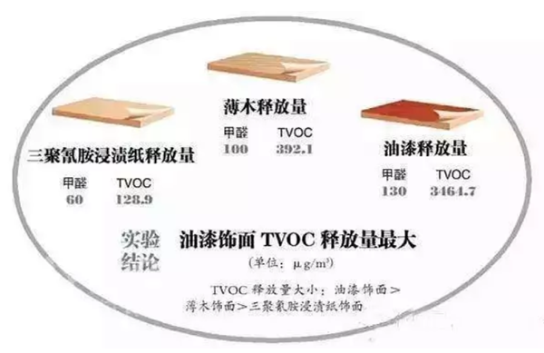
VOCs之所以被关注、被研究、被减排，就不得不说说它的危害。VOCs不仅危害环境，而且危害身体。一方面，VOCs是大气环境中光化学反应的前体，在阳光照射等特定条件下，会与环境空气中的化学物质，发生一系列光化学反应，生成臭氧，而形成光化学烟雾。同时，VOCs也是灰霾重要的前体物质，通过对细颗粒物（PM2.5）源解析，大气中VOCs在PM2.5中的比重占20~30%，还有部分PM2.5由VOCs转化而来。

另一方面，大多数的挥发性有机物均有病理毒性，都对人体各器官组织有较大的危害作用。以甲醛为例，其在室内达到一定浓度，可引起眼红、眼痒、咽喉不适或疼痛等症状。
VOCs排放源主要包括自然源和人为源。自然源主要为植被排放、森林火灾、野生动物排放和湿地厌氧过程等，属自然界的正常规律，源和汇处于平衡状态。而人为源大致可分为工业源、生活源、农业源和移动源。有调查报道，我国VOCs的工业源和交通源为主要的人为源，分别占43%和28%。
其中工业源排放企业涉及的行业有电子信息、纺织印染、石油化工、家具、木材加工、塑料橡胶制品加工、包装印刷、制药等，这些行业也正是目前我国主流工业。正因为人类活动，越来越多的VOCs进入大气中，在环境空气中的累积，打破了自然界VOCs源和汇的平衡。
1940年至1960年间，美国洛杉矶多次发生光化学烟雾事件。在1952年12月的一次光化学烟雾事件中，洛杉矶市65岁以上的老人死亡400多人。1955年9月，由于大气污染和高温，短短两天之内，65岁以上的老人又死亡400余人，许多人出现眼睛痛、头痛、呼吸困难等症状甚至死亡。事件的主要原因是汽车尾气排放了大量的碳氢化合物，在阳光照射下，发生光化学反应，产生有毒气体。这是人类首次认识到VOCs的严重危害，因此，洛杉矶对VOCs的关注走在了世界的前列。1963年，美国以《清洁空气法》的规定为基本依据，要求卫生教育福利部处理空气污染问题，明确机动车对空气污染的影响，并通过环境保护署制定和颁布限值VOCs污染排放的一系列标准，指导全国执行VOCs排放限值。1970年7月，日本东京出现了光化学烟雾现象，几所大学连续出现学生眼睛疼痛、呕吐等现象。因此，日本在VOCs污染排放方面的关注也比较早。

3.8.3 VOCs的减排之路
3.8.3.1 国家层面
我国尚未出现过VOCs污染事件，因此对其关注较晚，2000年，《中华人民共和国大气污染防治法》中仅有诸如有机烃类尾气、恶臭气体、有毒有害气体、油烟等类似概念。
随着灰霾问题的深入研究和环境空气中臭氧浓度升高问题，VOCs逐渐被重视。为改善大气环境质量，促进VOCs削减，我国出台了一系列的政策。2013年，国务院出台《大气污染防治行动计划》，明确要对石化、有机化工、表面涂装、包装印刷等行业实施VOCs综合整治，全国范围内的VOCs减排正式启动。同年，环境保护部编制了《挥发性有机物（VOCs）污染防治技术政策》，为VOCs减排提供了技术规范支持。2015年8月29日第十二届全国人大常委会第十六次会议通过了《中华人民共和国大气污染防治法》，自2000年修订以来，首次增加对VOCs控制要求，从此VOCs减排有了法律依据。这些政策的颁布，从计划到技术、再到立法，逐渐指明我国VOCs减排方向。
在部门规章方面，国家发改委、环保部、财政部、工信部、质检总局、能源局等部委相继出台了有针对性的VOCs污染防治相关文件。各部门相互配合，共同打好VOCs减排攻坚战。
在技术标准方面，我国《大气污染物综合排放标准》（GB162972-1996）对14类VOCs规定了最高允许排放浓度、最高允许排放速率和无组织排放限值，其中包括甲醛、苯、甲苯、二甲苯等挥发性有机物。针对不同的有机污染物排放源以及污染源和环境空气中VOCs的监测技术，截止到2017年，环保部总共制订了15个涉及VOCs的排放标准和20个监测技术方法。从标准实施年限来看，2010年以前，只有3个排放标准和8个监测技术方法，其他都是近几年开始实施。技术标准的制定，为VOCs减排提供了监测和排放依据。
3.8.3.2 地方层面
为积极推动VOCs减排，各地结合地方实际，出台了一系列相关的政策法规和标准方法。表 1列举了北京和江苏省的VOCs污染防治政策。由表 1可见，我国地方从2010年前后，开始加强对VOCs进行管控。近一两年，VOCs污染防治成为各地大气防治的重点工作，各地不断完善VOCs减排政策措施。

在技术标准方面，国内出台VOCs排放标准的省市并不多，以北京、江苏、浙江和广东为例，各地根据当地的产业特点，制定了相关VOCs排放标准。近两三年，北京连续制定了12项地方排放标准，涉及的行业有印刷、家具制造、炼油和石油化工、汽车、工业涂装和建筑涂料等；江苏重点针对化学工业和表面涂装行业，制定了相关地方排放标准；浙江以化学合成制药、制鞋、化学涂装、纺织染整行业为重点行业；广东以集装箱制造和电子行业为重点行业。
3.8.4 VOCs减排技术和挑战
对VOCs减排的主要技术思路是源头控制和末端治理。简单的说，源头控制就是从原料开始，减少VOCs的产生。末端治理，顾名思义，将产生的VOCs进行最终的销毁。有两类基本技术，一类是回收技术，对排放的VOCs进行提纯处理，再资源化循环利用。主要包括吸收、吸附、冷凝和膜分离方法等技术。另一类是销毁技术，将排放的VOCs分解化合转化为其他无毒无害的物质。主要包括活性炭吸附、低温等离子、热力燃烧、催化燃烧等技术。
涉及VOCs排放的行业众多，污染物种类繁多，废气成分复杂，因此，在对VOCs减排时，要考虑技术上有效、经济上可行，往往这两者很难平衡，这也是VOCs减排面临的最大的挑战。
3.8.5 小结
因此，虽然我国对VOCs的管控起步较晚，为改善环境空气质量，近年来，我国已将VOCs减排作为一项重点工作，出台了相应的法律、法规、政策、技术规范等，并迅速形成一套体系，为VOCs污染防控指明了方向，提供了支撑和保障。
“大家非常关心中国会不会发生光化学烟雾事件，中国政府也高度关注。我们组织过专家分析，世界历史上发达国家发生的光化学烟雾一般臭氧浓度都达到了600以上，个别城市2000以上。中国的臭氧浓度远低于此，所以中国现在和将来不会、也极少可能会发生光化学烟雾事件。”引用环保部大气环境管理司司长刘炳江的一段话，作为总结，相信我国VOCs减排之路，对环境改善有重要的意义。
作者：远方老友 校稿：广播站王站长、柴胡半夏苏 编辑：栟
3.9 生态•五行•人伦


往事有时令人不忍直视。想当初，环境保护也曾贵为与计划生育相互比肩的两项基本国策之一。然而，一直以来，世人只知后者威加海内，却与前者对面不识。三十年河东，三十年河西。现如今，环境保护俨然已成尚方宝剑，坐拥一票否决权，何止扬眉吐气，大快人心。人们对生态环境保护的关注前所未有。本文也顺着风向，用陈词旧调来赶一次时髦。
一般来说，人们生活的环境通常分为自然环境和社会环境。自然是天与地，天与地之间的万物按照“道”的规律循环不息的现象和状态，包括人类和其他生命世界、物质世界的一切活动。生态是指生物在一定的自然环境下生存和发展的状态。我们人类研究生态，也就是要研究怎样保护和利用自然环境以服务人类的发展，也就是要弄清楚自然是怎样在影响着人类的活动。
研究生态的原理和方法很多，无论东方和西方，还是古代和当代，都有自成体系的表达。本文主要介绍一下在中国古代的五行理论中环境是怎样影响人的。
150年前，马克思提出：“运动着的物质世界是普遍联系和永恒发展的”；3000年前，五行系统理论把这些运动、联系和发展以取象的方法做出了精致的总结。
在五行理论中，根据运动和显现的方式将事物分为木火土金水五类。五行包括气（炁）和象，属于同类五行的事物相互感应。所谓的“天人合一”、“天人相感”，在这个角度讲就是天、地、人、万物之间是一体的，是一直在相互感应的。
为了问题聚焦，我们在这里不具体讨论感应的媒介是电波、磁场，还是量子纠缠，只强调说当某一类五行出现问题的时候，属于这一类五行的所有事物都会受影响。也就是说天地间某一类五行的气（炁）出现问题了，那么赖以这一类五行的气（炁）所支撑的象必然也就要出现问题。我们也不在这里科普具体的五行系统理论，只是应用五行的理论来探讨生态与人伦的问题。这里的人伦包括人的社会伦理和家庭伦理。

限于篇幅，此次只简单讲一个离我们最亲近的五行：大地母亲——土五行。
当前，土壤中重金属超标、农田里化肥农药高残留等问题，导致土地受到了普遍破坏。因为破坏的规模和程度足够大，引起了“土”五行气（炁）和象的破坏。
土对应信。所以，当前社会诚信普遍缺失。具体表现为：人们说过的话容易变卦，谈好的事兑现不了（谈十个事情甚至成不了一个），签过的协议无法履行，约定的日期时间不能遵守，制售贩假货泛滥。这里的真实情况不一定是人们主动的不讲诚信，有很大部分是环境在对事件本身产生影响。
土对应怨、脾胃、祖辈、口、安全感。土德受损，人们遇到问题容易怨天尤人，脾胃功能不好，与祖辈少有连接和沟通（包括祭祖），容易打妄语（恶口、两舌、绮语、诳语），贪吃、什么都吃而且吃不到什么好东西。人们普遍缺乏安全感。
土地肥沃、平坦、无污染的地区，人们则是讲信用、不怨人（心胸开阔）、与祖辈亲近（老人容易有儿孙绕膝的天伦之乐）、饮食有节制、不妄语、脾胃好，有安全感。
当土地出了问题，其生长出来的食物自然就要受影响，导致人吃了之后也就有问题。土地贫瘠，土壤中某些元素过剩、毒素残留，会导致食物营养成分不全或者有毒素，人吃了之后自然就会在心理和行为上有相应的表现。吃水培（无土栽培）食物也是如此。长期如此，整个社会也就出现变化。
土地缺失或者供应不足，土地状态被破坏，都会对当地的人和社会状态产生相应影响。
另一方面，一方水土养一方人。医院里的营养师都知道，北方人需要补充维生素的话要吃苹果，而吃香蕉的效果就不如苹果理想。但陕西的苹果的营养对陕西人最适用，本地人最适应本地的农作物。转基因的农作物结出的果实因为无法再当作种子进行发芽生根，所以人吃了会影响生育。
脾属土，主肌肉。人是父精母血交媾而成，从父亲那得了骨，从母亲那得了肉。断奶之后，我们靠土地长出的食物来长肌肉。断奶前应该食母乳。现在人们都是给孩子喂牛奶。而牛奶适合牛的胃，适合牛的营养需求。当前婴儿普遍吃母乳不足，容易导致肌肉和脾胃系统出现问题，长大与母亲不太亲近，也会影响孩子土五行的运转和土德的圆满。
土五行就是这样影响着人与自我的和谐、与家庭的和谐、与社会的和谐。有一个好的生态系统，首先是有好的土地，因为土地不仅是五行之一，还担当着万物的生化、收纳和承载。

作者：含章 编辑：栟
3.10 油田环保之痛——含油污泥
3.10.1 序：油田环保的痛处
石油作为一种重要的资源，在国民经济发展中具有支柱性地位，不仅支持着工业农业生产，也与每个人的生活息息相关。2011年至2015年间，我国每年的石油开采量持续高于2亿吨。

石油资源开发与使用过程中造成的污染是令全世界头痛的一大难题。举世震惊的墨西哥湾漏油事件，造成了严重的生态灾难，令难以计数的生物遭遇灭顶之灾，沿岸生态遭遇了极大破坏，也使得石油生产过程中的环保问题引起了大众的关注。事实上，在石油业的生产过程中，除了事故导致原油泄露造成的直接环境污染外，在石油开采和加工过程中产生的含油污泥也是一个重要的污染源，且会对周边生态环境造成持续性的危害。

3.10.2 含油污泥的来源
含油污泥，简称油泥，是在石油开采、运输、炼制及含油污水处理过程中产生的含油固体废物，是由石油烃类、胶质、沥青质、泥砂、无机絮体、有机絮体以及水和其它有机物、无机物牢固粘结在一起的乳化体系。
含油污泥主要产生在油田和炼油厂，分为3 种类型，即落地油泥、集输油泥和炼厂油泥。落地油泥是在油田开发特别是油井采油生产和井下作业施工过程中，部分原油放喷或被油管、抽油杆、泵及其他井下工具携带至地面，进而渗入地面土壤形成的油泥；集输油泥是储油罐在自然沉降中产生一些油泥，也称之为称为罐底泥；炼厂油泥主要细分有三种，分别为隔油池底泥、溶气浮选浮渣和剩余活性污泥等，其中以浮选浮渣量为最大，占三泥总量的80%。

目前，我国每年产生近百万吨的含油污泥，若加上石油化工产生的“三泥”（生化污泥、池底污泥及浮渣），油泥的总量还要大得多，而且炼厂的规模越大，含油污泥的排放量越大。
3.10.3 含油污泥的成分与特性
含油污泥成分非常复杂，含有大量的老化原油，固体悬浮物，以及细菌质等固体废物，其中原油是主要的成分。油泥中含有数百种有毒有害化合物，其中的某些化合物(多环芳烃等)具有“三致”效应；另外含油污泥中往往含有苯系物、酚类等物质。美国环保署(EPA)将其列为优先污染物，并且对其排放有严格的限制，我国也将油泥列入《国家危险废物名录》。
含油污泥的特性：一般含油污泥的含油率约10%-50%，含水率约40%-90%。黏度高，难以沉降，脱水效果差，污泥固相颗粒细小，油、水密度差小，这些都是含油污泥黏度大、难以除油脱水的主要原因。
3.10.4 含油污泥的危害
含油污泥因其体积庞大，并含有大量的有毒物质，直接进行排放会占用大面积的土地，同时伴有非常难闻的气味，对附近的土壤、植物、水体、空气造成严重的污染，最终对人体产生极大的危害。
- 影响土壤的性质
当含油污泥中的石油烃类等物质渗入土壤后，会在土壤颗粒表面黏着，直接影响土壤的通透性，从而造成土壤导水通路的阻塞，进而造成土壤渗水量的下降，透水性的降低，最终使土壤的性质发生改变，直接威胁到土壤中的微生物生存。

- 危害植物生长发育
植物的组织内部能够被含油污泥中的低分子烃类物质渗透，从而破坏植物的正常生理机制；而含油污泥中的高分子烃类会很容易在植株表面形成一层粘性膜，将直接阻塞植株的气孔，植株的水吸收作用以及呼吸和光合作用都会受到严重的影响，最终会造成植物根系的腐烂，植被的破坏将会引起生态系统中食物链的破裂，会导致生态系统中最初级生产者失去制造有机物和氧气的能力。

- 污染水体
含油污泥中的石油类污染物浸入地下水后，直接对饮用水资源和地下水资源造成影响，危及人类生命安全。另外，含油污泥处置不当，可能会使石油类污染物在水体中聚集，如码头、港口、河道沿岸等，破坏水体环境。

- 危害空气质量
含油污泥中的低沸点有机污染物极易挥发至空气中，有机硫化物、苯类、酚类等有害物质具有致癌、致畸、致突变的作用，随着呼吸进入人体，直接对人体的肺、胃、呼吸系统、神经中枢系统产生严重的危害。

3.10.5 相关控制标准
在国家层面，目前与含油污泥相关的控制标准有《危险废物填埋污染控制标准》（GB18598—2001）、《危险废物焚烧污染控制标准》（GB18484—2001）、《农用污泥中污染物控制标准》（GB4284—84）。在《危险废物填埋污染控制标准》和《危险废物焚烧污染控制标准》标准中，将含油污泥归类为危险固体废物，但并没有对含油污泥的油含量提出量化指标。在《农用污泥中污染物控制标准》中，对污泥中的矿物油含量做了明确规定，要求土壤中矿物油最高允许含量不得超过3000 mg/kg（≤0.3％）。地方层面主要有以下三省份制定了相关标准：2010年12月，黑龙江省发布了《油田含油污泥综合利用污染控制标准》，明确规定了含油污泥用于农用、铺设油田井场和通井路的污染物控制标准；2016年7月，陕西发布《含油污泥处置利用控制限值》，规范含油污泥回收利用处置；2017年6月，新疆维吾尔自治区发布《油气田含油污泥综合利用污染控制要求》。

3.10.6 含油污泥的处理处置
如果含油污泥得不到妥善处理，将造成资源的巨大浪费，同时也会对环境造成不可挽救的破坏。因此，采用合适的处理方法对含油污泥进行资源化与无害化处理，不仅可以减少环境污染，而且还能达到资源再利用的目的。当前的油泥处理技术主要包括热解法、调质离心分离、固化处理、焚烧、焦化、填埋、溶剂萃取、热碱水洗、电化学技术、生物处理 (包括地耕法、堆肥法、污泥微生物反应器法)等。
由于含油污泥来源广泛、成分复杂，同时处理技术种类繁多，且都存在各自的应用弊端和适用范围(不同技术的特点比较如下表)，目前尚无任何一种技术可以作为处理所有类型含油污泥的理想方法。通常要根据油泥的来源及特性，有针对性地选择一种或者多种组合技术实现油泥的治理。

3.10.7 处理存在的难点和技术展望
随着新环保法的通过，各地对油田环保的要求越来越高，含油污泥的随意排放将不再可能，各地隐藏的污染也被逐渐揭开。这对污泥处理行业来说，无疑发展前景利好。尽管油泥处置发展前景好，市场也很大，但是目前含油污泥处置也存在一些难点，同时对其发展前景进行梳理如下：
含油污泥中最难处理的是重质油油泥，其黏度大，沥青质及胶质含量高，回收难，在现有的工艺设备处理过程中成本较高，设备折旧快，因此降黏预处理是此类油泥处置的重要环节；
热解方法由于是在厌氧环境条件下热源对含油污泥间接加热，能够通过油气组分的挥发分离实现油泥中石油组分的回收，同时降低残渣中的含油率，是一种油泥无害化与资源化的综合处理工艺。因此，该技术是近三年来油泥处置行业极为推崇的热点实用工艺，尤其在能源价格低、油泥组分中砂质组分含量的西北地区的油泥，更适合推广该技术；
热解方法尽管处理含油污泥非常实用有效，但是与调质离心等减量化工艺相比，仍存在耗能高、处理规模小等问题，因此，在以后的研究过程中亟待开发提高热解处理效果与规模的带有新型热源的新一代热解设备；
微生物及植物修复方法尽管修复周期长，却非常适合低浓度石油污染的场地及油泥处理，是物理与化学方法后续深度处理含油污泥的重要补充措施。为了使植物修复最终成为解决实际环境问题的有效手段，如何将石油污染的植物修复从盆栽实验的研究成功转向田间试验及实际的工程尚需进一步的深入研究；
目前含油污泥高级氧化技术在东北及西北地区油田的油泥处理工程中得到有效的实际应用，但该方法存在药剂成本高、处理的油泥残留化学药剂等问题，因此开发环境友好、氧化能力突出的绿色修复药剂就显得尤为重要；
目前油泥处理的验收标准往往是以含油率为重要指标，但是缺乏具体的石油烃组分的定性定量分析，鉴于不同组分的生物有效性及环境风险有很大差异，因此在以后的研究中有必要深度细化处理后含油污泥的石油组分含量，进一步明确验收标准。
作者：OILs 校稿：周宁、爱杯子的王小咖 编辑：栟
3.11 斯德哥尔摩公约和它“锁”住的POPs
3.11.1 管控持久性有机污染物的斯德哥尔摩公约
随着国家层面对环保的重视，公众也越来越多的开始关注环境污染问题。大家可能时常听到一个词——POPs，一个读起来略带喜感的单词缩写，但它指代的物质却十分“恐怖”。POPs是持久性有机污染物(Persistent Organic Pollutants)的简称，是指那些具有生物蓄积性、能够通过各种环境介质长距离迁移并长期存在于环境中，对人类健康和生态环境造成严重危害的天然或人工合成的有机化合物，其污染的复杂性远超过常规污染物。一些POPs具有三致效应(致畸、致癌、致突变)，它们的危害往往具有隐蔽性和突发性的特点，一旦发生重大污染事件，将产生灾难性后果并持续危害几代人。例如1968年3月发生在日本的米糠油事件，由于管理不善，致使生产米糠油时混入多氯联苯，产品被人食用后导致中毒，患病者超过5000人，30余人死亡，实际受害者约13000人。症状主要表现为咳嗽不止，肝功能下降，全身肌肉疼痛，重者发生急性肝坏死、肝昏迷等，及至死亡。副产品之一的黑油作为饲料喂养家禽后造成数十万只家禽死亡。这是一起典型的POPs中毒事件，当时震惊了全世界。
为此，2001年联合国环境规划署通过了旨在控制POPs的《斯德哥尔摩公约》(下文简称公约)，作为保护生态环境和人类健康免受有机污染物危害的全球行动。目前，已有包括我国在内的179个国家和地区加入了公约，从缔约国数量上可以看出公约的国际影响力，同时也能看出各个国家对于POPs污染的重视。其中公约规定的12种POPs，即氯丹、艾氏剂、狄氏剂、异狄氏剂和七氯、滴滴涕、六氯苯、多氯联苯、毒杀芬、灭蚁灵、多氯二苯并呋喃、多氯二苯并-对-二恶英等，被称为“肮脏的一打(dirty dozen)”，受到缔约国的严格控制与削减。在国际公约的推动下，国际上有关POPs的相关研究也逐步深入，已成为环境科学研究中最受关注的热点领域之一(见图1)。

随着人类经济活动的快速发展，许多新型POPs，如氯化石蜡、全氟化合物、溴代阻燃剂等也不断在各种环境介质中被发现，逐渐成为关注的焦点。这些物质绝大多数是正在大量生产和使用的化工产品，目前尚未对其生产排放进行有效管控，而且相关的人体健康风险、生态风险和毒理学数据还较为缺乏，难以准确评估其生态和健康效应。

公约如何将某种POPs列入管控对象呢？公约规定了任一缔约国均可向秘书处提交旨在将某一化学品(拟增列POPs)列入公约附件的提案。而公约秘书处将提案转交给持久性有机污染物审查委员会(POPRC)后，将依次审查其是否符合公约附件D(化学品的持久性、生物富集性、长距离迁移能力及不利影响)，附件E(评价该化学品是否会因其远距离迁移而对人体健康和/或环境产生重大不利影响)和附件F(涉及社会经济考虑因素的信息)对POPs的要求，如果全部符合，POPRC会根据风险管理评价的结果提议是否由缔约国大会审议该化学品以便将其列入附件并规定相应的管控措施(流程见图3)。
2009年5月，在瑞士日内瓦举行的缔约方大会第四届会议决定将全氟辛烷磺酸及其盐类、全氟辛基磺酰氟、四溴联苯醚、五溴联苯醚、六溴联苯醚、七溴联苯醚、十氯酮、六溴联苯、林丹、五氯苯、α-六六六、β-六六六等新增化学物质列入公约附件的受控范围。2011至2015年间的缔约方第五次会议、第六次会议以及第七次会议又分别决定将硫丹及硫丹硫酸盐、六溴环十二烷、多氯萘、六氯丁二烯和五氯苯酚等物质增列到公约POPs名单。2017年5月第八次会议将十溴联苯醚、短链氯化石蜡以及六氯丁二烯正式增列为公约POPs候选名单。目前正在进行审查的物质包括三氯杀螨醇、全氟辛酸及其相关物质。

3.11.2 POPs的持久性
“环境持久性”是POPs最主要的特点之一，是界定一种物质是否为POPs以及筛选新型POPs的重要判据，也是评价有机污染物对环境和人类潜在危害的基础以及开展化学品风险评估的关键依据。公约附录D关于持久性的评价标准为：对于通过空气大量迁移的化学品，其在空气中的半衰期应大于两天、或者该化学品在水中的半衰期大于两个月、或在土壤/沉积物中的半衰期大于六个月；或该化学品具有其他足够持久性、因而足以有理由考虑将之列入本公约适用范围的证据。
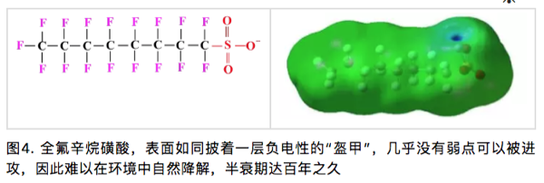
3.11.3 POPs的生物富集性/放大性
生物富集和放大性是指化学物质可被生物组织吸收，并在生物体内持续累积，而且这些物质的浓度会沿着食物链/网传递（图5），随着营养级升高呈现放大趋势，在高等生物体内出现高浓度，影响高等生物的健康。公约对POPs的生物富集性/放大性的规定为：(1)表明该化学品在水生物种中的生物浓缩系数或生物富集系数大于5000，或如无生物浓缩系数和生物富集系数的数据，但有logKow大于5的证据；(2)表明该化学品有令人关注的其他原因的证据，例如在其他生物中的生物富集系数较高，或具有高度的毒性或生态毒性；(3)生物监测数据显示，该化学品所具有的生物富集潜力足以有理由考虑将其列入本公约的适用范围。
3.11.4 POPs的长距离迁移能力
POPs具有长距离迁移特性，以大气和水体为载体，通过“高山冷捕集效应”和“全球蒸馏效应”到达高海拔的偏远高山地区和高纬度的极地地区，从而导致全球范围的污染。公约对远距离环境迁移的评判标准如下：
(1)在远离其排放源的地点测得的该化学品的浓度可能会引起关注；
- 监测数据显示，该化学品具有向环境受体转移的潜力，且可能已通过空气、水或迁徙物种进行了远距离环境迁移；
(3)环境转归特性和/或模型结果显示，该化学品具有通过空气、水或迁徙物种进行远距离环境迁移的潜力，以及转移到远离物质排放源地点的某一环境受体的潜力。
3.11.5 中国的实施计划
我国政府于2001年5月23日签署了《关于持久性有机污染物的斯德哥尔摩公约》，2004年6月25日第十届全国人大常委会第十次会议做出了批准《斯德哥尔摩公约》的决定。公约于2004年11月11日对中国正式生效。依据公约第7条要求，中国政府编制并向缔约方大会递交了履行公约的《国家实施计划》。
我国作为经济快速发展的国家，面临着极为复杂和严峻的环境问题。鉴于新型POPs的巨大累积产量，我国新型POPs引起的环境污染和健康风险问题比其它国家更为严重。目前，通过科研人才培养、建立相应的专业实验室以及设立相关的科研项目，已经大大提高了对于POPs特别是新型POPs的检测水平和防控能力。然而，作为化学品生产和使用大国，我们仍面临巨大挑战，对于新型POPs在环境行为、生态毒理、环境风险以及化学品管理等方面依旧缺乏研究基础和成熟经验，在履行《斯德哥尔摩公约》和保护生态环境上依然任重道远。
斯德哥尔摩公约的网址：
http://www.un.org/chinese/documents/decl-con/popsp/index.htm
参考文献：
1 COP. Listing of short-chain chlorinated paraffins in Annex A to the Convention (UNEP/POPS/COP.8/11). 2017.
2 Feng Y, Tian J, Xie H Q, et al. Effects of Acute Low-Dose Exposure to the Chlorinated Flame Retardant Dechlorane 602 and Th1 and Th2 Immune Responses in Adult Male Mice. Environ. Health. Persp, 2016. 124. 1406-1413.
3 Giesy J P, Kannan K. Global distribution of perfluorooctane sulfonate in wildlife. Environ. Sci. Technol. 2001. 35. 1339-1342.
4 Liu L Y, He K, Hites R A, Salamova A. Hair and Nails as Noninvasive Biomarkers of Human Exposure to Brominated and Organophosphate Flame Retardants. Environ. Sci. Technol. 2016. 50. 3065-3073.
5 Pedersen K E, Letcher R J, Sonne C, Dietz R, Styrishave B. Per- and polyfluoroalkyl substances (PFASs) - New endocrine disruptors in polar bears (Ursus maritimus)? Environ Int. 2016. 96. 180-189.
6 Vives I, Grimalt J O, Lacorte S, Guillamón M, Barceló D. 2004. Polybromodiphenyl ether flame retardants in fish from lakes in European high mountains and Greenland. Environ. Sci. Technol. 2004. 38. 2338-2344.
7 王亚韡, 蔡亚岐, 江桂斌. 斯德哥尔摩公约新增持久性有机污染物的一些研究进展. 中国科学. 2010. 40. 99-123.
8 张焘, 仇雁翎, 朱志良, 赵建夫. 有机污染物的持久性评价方法研究进展. 化学通报. 2012. 75. 420-424.
作者简介：田浩廷，山东人，博士毕业于南京大学环境学院，2016年入职临沂大学，青椒一枚，目前于中科院生态环境研究中心从事在职博士后研究，研究方向为持久性有毒有机污染物的环境界面过程、污染物界面催化降解。
校稿：yufree,大石
编辑：丫头晚安
3.12 日常生活中的化学品——新型有机污染物简介
3.12.1 前言
通常来说，人们对于能直接感官感受到的环境污染的危害认识较为清楚，比如灰暗的天空、黑臭的河水、以及遍地的塑料垃圾。但是你有没有想过，其实在一些表面看来极其干净的环境中也会存在高浓度的有毒有害污染物，而这些污染物对人体健康的损害可能并不比直接可感官感觉到的环境污染小。以北美五大湖为例，它风景优美，湖水清澈。可就是这样美丽的外表下却有着一颗“肮脏的心”。表面上，五大湖的湖水比国内多数湖泊、河流看上去要干净，但其中的某些持久性有机污染物 (persistent organic pollutants, POPs) 的浓度远高于国内湖泊。这也是外国人不吃淡水鱼的原因之一，因为淡水鱼体内的POPs浓度确实高于海水鱼。
POPs是指能持久存在于环境中，具有长距离迁移能力，通过食物链（网）累计，并且对生物和人体具有毒性效应的一类有机化学品。目前POPs的生产和使用已经受到《斯德哥尔摩公约》的严格限制，但在可以预见的将来，所有被列入《斯德哥尔摩公约》的POPs均会退出化学品市场。随着POPs的退出，其他新型有机污染物的研究成为目前环境化学领域的研究热点。这些新型有机污染物常常以化学品，也即是人工合成添加剂的形式出现，影响人体健康。化学品对人体造成损害有两个必要条件，其一是化学品具有毒性效应，其二是人体和化学品有接触途径。在我们日常生活中能够接触到的化学品品种众多，包括紫外线吸收剂、抗氧化剂、阻燃剂、塑化剂、光引发剂等，本文将重点介绍合成酚类抗氧化剂、双酚类物质、光固化材料等三类。这些化学品是一类富含争议的物质，它们在保障人们现代生活品质的同时，也给我们造成了一定的困扰。

3.12.2 实例
1 合成酚类抗氧化剂，天使还是魔鬼？
为阻止或延缓橡胶、塑料、纤维等人工合成有机高分子材料在使用过程中的氧化降解，抗氧化剂被广泛应用。由于天然抗氧化剂的稳定性较差，目前广泛使用的是人工抗氧化剂。目前我国市场上最常使用的抗氧化剂为BHT。BHT化学名称为2,6-二叔丁基-4-甲基苯酚，它是由对甲酚、异丁醇为原料，以浓硫酸作为催化剂，氧化铝为脱水剂，反应生成的产物。根据世界经济合作与发展组织 (OECD) 的统计BHT的使用主要分布在以下领域：橡胶(27%)，塑料(27%)，矿物油/燃料(17%)，食品/药品/化妆品(12%)，动物饲料/宠物食品(11%)，打印油墨(6%)。目前，BHT的污染已经非常普遍，且存在于多种环境介质中，例如河水、底泥、污泥、室内灰尘等。
在食品应用方面，最近发表在Nature Communications上的文章揭示了一个有趣的现象，给吃货们找到了一个自我安慰的理由。研究者发现，添加到食物中的BHT会干扰人体消化系统与大脑间的信号传递，从而导致人脑产生更强的饥饿感，想吃更多的食物，进而导致肥胖。好想说“真的不是我馋，是BHT让我很饿”。
没有直接研究表明BHT具有毒性，甚至有研究认为BHT可以清除人体内的氧化自由基，因此具有抗癌的功效。然而，BHT可以在生物体内和环境介质中被转化为多种产物。目前的毒理学研究表明其部分转化产物的毒性显著高于BHT。例如，BHT-Q在浓度为10-6mol/L时即可通过生成H2O2进而破坏人体的DNA，从而表现出较强的基因毒性。更值得注意的是，我们的研究显示BHT可以在污水处理厂（厌氧-缺氧-好氧的活性污泥处理系统）中转化为相应的毒性产物（BHT-CHO，BHT-Q，BHT-quinol）。经过污水处理厂处理的污水，BHT的浓度会显著下降，但相关转化产物的浓度会显著上升，增加了污水处理厂出水回用的潜在危害。

2 双酚类污染物，无处不在
双酚A (BPA) 是一种人工合成的化学品，作为增塑剂、抗氧剂、热稳定剂等添加剂广泛应用于塑料、纸币、热敏纸等日常生活用品中。此外，BPA也是一种重要的有机化工原料，主要用于生产聚碳酸酯和环氧树酯等聚合材料，BPA在2011年的全球产量超过550万吨。BPA的主要毒性表现为内分泌干扰效应，尤其是对婴幼儿内分泌系统的危害，能导致内分泌失调，威胁胎儿和儿童的健康。为了对塑胶进行分类，美国塑胶工业协会 (Society of the Plastics Industry) 自1988年起，对塑胶进行编码分类，塑胶分类标志的符号包含了顺时针转的箭头，形成一个完整的三角形，并将编码包围于其中，如图7所示。一般来讲，塑胶分类标志为1、2、4、和6的塑料不太可能在生产中与BPA接触，而有一些塑胶分类标志为3或7的塑料在生产中可能会接触到BPA。自2011年6月1日起，我国已禁止进口和销售含有BPA的婴幼儿奶瓶。

随着对BPA使用风险的关注和日趋严格的法规控制，市场上出现结构和性质与BPA相似的新型替代化合物，统称为双酚类化合物(Bisphenols, BPs), 它们在与人们日常生活密切相关的购物小票、纸币、食品包装材料中广泛使用。在日常生活中接触购物票、纸币等物质时，BPs可透过皮肤吸收进入人体。加拿大学者的研究发现手持购物小票5分钟，即可使这类物质透过皮肤吸收进入人体。因此，相关职业人群如收银员体内BPs的浓度显著高于普通人群。目前，关于BPs这类替代化合物对人体健康的影响尚处于研究当中,暂无足够的数据来判定其对人体健康的影响。基于BPs这类替代化合物与BPA结构的类似性，我们预测部分BPs可能具有与BPA类似的毒性效应。

3 光固化材料–绿色化学真的绿色吗？
光固化材料是指光引发剂在光照（一般为紫外光）作用下产生活性物质（自由基等），从而引发单体发生的聚合反应所生成的聚合材料。与传统的聚合反应相比，光敏聚合反应具有反应所需能量低、无挥发性有机污染物释放等优点。因此，光固化材料的生产过程被称为绿色化学。目前，光固化材料广泛应用于紫外打印、紫外涂料、以及光敏树脂3D打印等领域。

2005年，欧洲市场上的雀巢婴幼儿奶粉中发现高浓度的光引发剂污染，首次引起了科学家对光固化材料中光引发剂污染的重视。事后的研究发现奶粉中的光引发剂污染来源于包装材料中的光敏打印油墨。近年来的研究已经在食品包装材料和3D打印产品中检测到20多种光引发剂。由于光固化材料在室内环境中有大量应用，北京市室内灰尘中也检测到了高浓度的光引发剂。这类物质的毒性主要表现为内分泌干扰效应。加州大学的研究发现，使用光敏树脂3D打印器皿培养斑马鱼鱼卵，可以观察到明显的斑马鱼发育毒性。由此可见，“绿色化学”并不绝对的绿色。目前，世界各国并无关于光引发剂使用的限制。欧洲及日本的打印协会建议停止在食品包装材料的打印油墨中使用某些高毒性的光引发剂，但该建议尚未形成法律条文。
3.12.3 结语
传统的水污染及土壤污染等只会对生活于其区域的人群产生影响。即使近年来在我国北方影响范围比较大的雾霾，人们也可以通过迁移到更干净的区域进行规避。与传统的空气、水、土壤等污染不同，只要你选择现代生活，你就无法避免形形色色的合成添加剂。但我们也无需过度担心，因为污染物的毒性总是与剂量相关联。以“前言”中所述北美淡水鱼为例，尽管鱼体内含有较高浓度的污染物，但只要找到合理的摄入标准，就不会对人体健康产生损害。

同理，对于生活中形形色色的添加剂危害的预防，最重要的还是深化基础科学研究。由政府加大投入，相关领域科学家对添加剂的生物安全性进行评估，促进政府制定相应的法律法规。目前，我国有4.6万种化学品在生产和使用，每年还有几百种新增加的化学品进入市场，要全面评估所有化学品对人体的健康风险工作量巨大。可喜的是，近年来科学家开始重视基于计算机的定量结构-效应关系(QSPR)模型方法，QSPR可帮助我们初步筛选具有潜在危害的目标化学物质，对筛选出来的可能具有危害性的化学物质可进行进一步的实验评估。对毒性较大物质的使用进行限制或禁止，而对毒性较小且产品替代比较困难的物质可在相关标准下进行使用，从而最大限度地提升生活品质，降低化学品（添加剂）的使用风险。
作者：L润Z 校稿：看透，胜利屯屯长 编辑：李立平
3.13 人虎共存，举步维艰
最近，《东北虎豹国家公园总体规划》征求意见稿发布，标志着虎豹公园的范围、定位、功能分区、重点工程、体质机制等一系列重要问题基本敲定，这实属不易。其实，虎豹公园早在三年前就开始筹划建立了，而《总规》的定稿和发布却经历了漫长而复杂的过程。即使如此，对于东北虎豹种群的持久性保护而言，这也仅仅是万里长征的第一步。
3.13.1 背景介绍
虎豹国家公园的缘起归功于北京师范大学的葛建平教授及其团队，经过在吉林珲春的长期观测，该团队最终确定在我国境内长期活动的东北虎共27只，东北豹42只。2015年两会期间，总书记在参加吉林省代表团审议时得知此事并给与重视，随即，东北虎豹重点保护工程开始在国家层面上谋划实施。

2015年冬，我跟随规划项目组到东北虎豹在我国的集中分布区——吉林延吉考察，深入了珲春、汪清、天桥岭等地的天然林区，探访了东北虎豹的栖息地。但我们并不走运，几天下来，并未见虎豹踪影。仅看到林中野猪留下的些许蹄印，风折或腐朽掉的红松枝干，河岸边被雾凇装扮的玉树琼花，以及山丘上望不到边际的皑皑白雪。
我本想，有这样美妙的自然环境，再加上虎豹带来的旅游效益，当地居民应该衣食无忧，幸福感爆棚。没成想，这看似祥和的环境却并不太平。
与美国、加拿大等国家不同，我国人口数量太大，并且分布广泛，除了沙漠和高山区，真正的无人区很少。在虎豹国家公园内，就分布有90000多人口，这无疑造成了大量的人为干扰。然而，作为“森林之王”，东北虎的活动范围巨大，成年雄虎的家域面积可达600-800km2，成年雌东北虎家域面积也在300-500 km2(马建章和金崑，2003)。即使经过几次扩增，虎豹公园的面积已经扩大至1.49万km2，但对几十只东北虎和东北豹来说，其实并不富裕，更何况同时还居住着这么多的人!于是，人虎矛盾在所难免。
3.13.2 人虎矛盾，难以调和
一、虎豹对当地居民财产和人身安全的威胁
虎豹均属于大型捕食性动物，捕杀林中野猪、狍子等是它们的日常课业，当然，也包括居民畜养的牛羊!关于虎豹猎杀当地居民家畜的报道已经屡见不鲜。当地人介绍，有农户家的羊在一晚上就被老虎咬死十几只，据说是为了给幼崽传授捕食技术，可见母爱之伟大!
但是，这里有一笔经济账，那就是：谁为老虎的“晚餐”买单，价格几何?目前，对于虎豹造成的家畜死伤，一般由国家野生动物保护部门负责补贴。可以说，虎豹是公款吃喝，好不自在。但是，补贴总归是补贴，对当地农户来说，还是会有相当一部分损失的。
至于人身安全，更是不必多说，与虎豹做邻居，但凡智商正常的人一般都不会感觉十分保险。
二、人类活动对虎豹的直接伤害
在东北林区，几乎家家都会一门简单的手艺，那就是用钢丝来制作猎套。在山林中，用猎套捕杀野生动物十分奏效，当然，也包括东北虎。
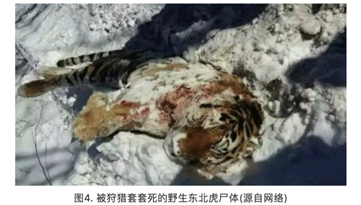
虽然，以当地林业局为主的野生动物保护部门不断开展山间清套行动。巡山清套行动也写进了《总规》中，但是，要从根本上遏制套猎行为，仅仅依靠清套行动是远远不够的，因为它已经成为林区人民的生活方式和文化。要彻底消除套猎现象，应该要做出多方面的努力，包括自然教育、法制建设甚至要从社会生活理念和方式上发生转变。
三、居民生产生活方式与虎豹保护的相互影响
如今的东北林区，“棒打狍子瓢舀鱼”的生活虽然有些夸张，但采松子、打野味还是稀松平常的。无论是采集还是狩猎，都会造成虎豹生存环境的破坏和自然猎物的减少。此外，公园内的家畜散养和土地开垦同样会对自然生态系统产生重要影响。据统计，虎豹公园内的散养黄牛达到60000多头，大量的黄牛与马鹿、梅花鹿等虎豹猎物竞争了食物和生存空间，同时也是人虎矛盾加剧的潜在风险，因为虎豹并不了解吃下这些黄牛其实是违法的。
《总规》中提出要禁养退牧还草，并清收开垦土地，然而，如何进行合理的禁养退牧和土地清收，并对当地以此为生的农民做出合理补偿，又将十分复杂。
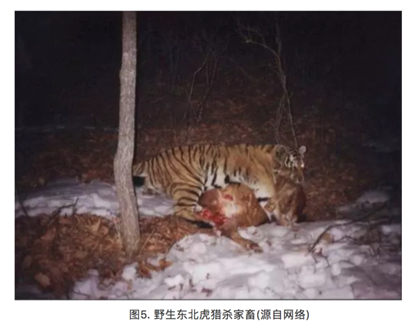
3.13.3 转变思路，人退虎进
就东北虎豹的有效保护和种群延续，《总规》提出了一系列的措施，包括虎豹种群保护、栖息地保护修复、扩散廊道疏通等等。然而，在活动范围、取食范围，甚至是整个生态位，人与虎、豹都存在太多的重叠和矛盾，其主导因素，完全在人。因此，若不能实现园区人口的明显下降，将很难实现对虎豹种群的持久性保护。
然而，要90000多人搬离家乡谈何容易!如此看来，在某种程度上，虎豹保护已经超出了物种保护的范畴，并成为了一个社会问题。东北经济正值转型期，虎豹国家公园的命运也将被绑定其中。我们更希望看到的是，国家公园能在区域水平上助力经济转型。在严格保护的同时，深入发掘虎豹的社会文化价值，形成一系列的生态旅游产品和自然教育品牌。比如，依托冰雪文化和虎豹文化，在公园外围打造“特色小镇”、“田园综合体”等等，以产业发展拉动公园内部居民迁出，同时形成经济效益，反哺公园建设。
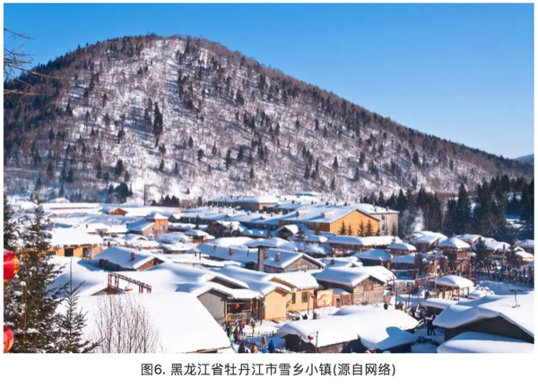
人虎矛盾固然不可调和，但只要人走了，虎豹自然就来了。然而，我们也不能就保护而谈保护，不惜一切代价把人赶走，而是要转变思路，使得国家公园体系建设更好的服务于当地社会经济发展。希望东北虎豹国家公园的建立，真正能像吉林省省委书记巴音朝鲁所说的：“东北虎、豹将成为吉林绿色转型的魂。”
参考文献：马建章，金崑. 2003. 虎研究. 上海: 上海科技教育出版社.
作者简介：张雷，中科院生态环境研究中心博士研究生，生态学专业。
作者：雨田 校稿：广播站王站长 编辑：竹而乐
3.14 可持续社区建设案例——北京当代MOMA公寓
可持续发展是一个比较容易引起人们困扰的概念，从1987年《我们共同的未来》出版以来，可持续发展的概念已经走过了三十年。目前全世界人们最公认的可持续发展的核心思想就是“既能满足当代人的需要，又不对后代人满足其需要的能力构成危害的发展”。
2015年6月5日，联合国发布了题为《Transforming our world by 2030: A new agenda for global action》的报告，这是联合国首脑会议对于2015年之后全球发展的整体规划和展望。可持续发展目标的设立源自于被全世界人民所认可的可持续发展理念，以消除贫困和不平等、保卫地球、创建包容经济增长空间为基础构架，由17个总目标和169个子目标共同组成了一整套覆盖社会、经济、环境三个关键维度的全世界发展目标。
其中，目标11为可持续城市与社区，以建设包容、安全、有抵御灾害能力的可持续城市和可持续的人类居住社区为核心目标。在可持续城市与社区的大目标之下，设计了7个子目标和一个整体目标从多个关键方面提出了在城市和社区尺度可持续发展的要求，如住房与交通的需求，城市建设力度的要求，城市对人类的负面环境影响如空气质量、城市废弃物等的要求，以及城市居民能够在社区中享有足够的绿色公共空间和社区服务的要求。
社区是一个非常有意思的概念，当我们以人类聚居的角度去看，社区可以看成是城市最基本的组成单元，也是连接城市和单体建筑的人类聚居栖地，不同于家庭的血缘聚集性，社区是用一个划定的区域把一群没有血缘关系形形色色的人类和一堆单体建筑圈定在了一个概念里，在社区里往往能找到一个城市的大部分商业和社会服务功能，也能看到城市生活的最完整的缩影。在大多数情况下，城市的政策和举措需要在社区层面得到落地和实施。
我们现在日常居住的居民小区、商业楼盘甚至早一些年的街道居民委员会管辖片区，都是最为常见的社区。随着城市社会经济的不断发展，社区可以涵盖的概念也越来越广泛，商业与居住型公寓并存的CBD区域、特色产业园区及周边物业、甚至是特色小镇，谁又能说这些都不是社区的代表？这些新型地产类型的兴起，也从另一个方面极大的丰富了社区的概念，也让可持续社区的建设与实践越来越具有现实的意义。可持续社区的理念强调现在和未来、生活和工作、安全性和包容性，生活品质和环境保护等统筹协调，规划合理、建设和运营良好，为社区居民提供平等的机遇和优质的服务。

当我们讨论如何去建设可持续社区的时候，一定会有一个问题始终萦绕在设计者、建设者、管理者和居住者的心头，那就是，什么样的社区是可持续的？
嗯，负责任地告诉你，这个问题，其实全世界的研究学者、政府和企业想了三十多年其实也没有非常的想明白。为什么呢？可持续发展本身就是一个没有最好只有更好的概念，基于可持续发展的概念延伸而来的一系列的理念和要求，都在不断地要求着更加优化的发展方式。节能的要更加节能、贫困消除的要不断富裕、性别平等的要更加平等，等等等等。所以，当我们考虑可持续社区的建设实践的时候，其实就不要太纠结于到底怎么样是可持续的了，换个角度想一想，什么样是不可持续的，然后尽力避免是不是一个更为简洁的思路呢。
因而，可持续社区的建设，很多时候是遵循着避免不可持续性的思路来进行实践的。在可持续社区建设实践中，有这么几个点是比较值得关注和注意的，同时也可以看成是一个社区建设“从摇篮到成长”的生命周期，从社区建设的空间布局开始，就要求以能够持续发展的思路和原则进行设计，建筑及室内环境建设、室外环境建设、基础设施建设是从社区的实际建设方面的可持续性要求，而当社区建成之后，居民生活方式引导和社区运营管理的可持续性就是社区成长成熟过程中的可持续性的体现。
在可持续社区的建设实践方面，大家还是走的比较靠前的，毕竟嘛，物质基础的建设总是比精神层面的提升要来的简单一些。目前国内可持续社区相关的指标主要来自于发改委、住建部和环保部，大部分指标规定了可持续社区当中的某一个或某几个部分，而并非是可持续社区的全部内容。社区的可持续性主要聚焦于社区生态环境的可持续性，对于社区的社会系统和经济发展的可持续性的要求相对较少。从可持续的理念出发，社会公平、经济繁荣、环境优美是可持续社区三个必不可少的关键点。联合国环境规划署与佳粹（中国）环境发展促进中心共同发布的《可持续城市与社区评价标准导则》，是参考了可持续发展目标11，并同时借鉴国际标准化组织在社区可持续发展指标体系以及国际最佳范例，提出的有参考价值的发展目标、关键绩效指标和国际化考量标准，《可持续城市与社区评价标准导则》导则关于可持续社区的评判包括六个方面：可持续建筑；包容的社区服务与设施；宜居的社区景观；经济生产力；安全；自豪、高知社区。

来看一个栗子吧。
3.14.1 北京当代MOMA高端综合公寓
北京当代MOMA高端综合公寓，不仅包括若干栋公寓住宅，还有影院、图书馆、酒店以及各种餐饮、娱乐中心，生活设施与休闲商业都非常完备的一个社区，为什么拿它来做一个可持续社区建设的例子呢，因为有人这么评价它的，“它构建了一个新的社区模式，将城市空间从平面、竖向的联系进一步发展为立体的城市空间，并大规模使用可再生的绿色能源，既节能又省地。它也探索了一种未来城市的生活新模式，将居住、工作、娱乐、休闲、交通结合在一起，通过空中连廊交错相连，必然加强邻里间的联系与交流。从建筑学上讲，我们依稀看到大师理念的传承与发扬，从社会角度讲，它为中国的21世纪居住树立了一个新的典范。”这是可持续社区的一次很有意思的探索实践。
在社区建设初始的设计中，以一副珍藏在俄罗斯圣彼得堡历史遗产博物馆内的镇馆画作为创意灵感（“野兽派”画家马蒂斯创作于1910年的画作《舞蹈》），同时加以北京“胡同”与“四合院”为改造元素，设计出空中连廊作为公共空间，以打造“城中之城”设计概念展开。通过连环的空中长廊将8栋公寓建筑连接在一起，加上一栋艺术酒店和一座多功能水上影院，构成一个立体的建筑空间。在建筑的外立面采用磨砂氧化铝板减轻高密度、大体量建筑的压迫感。整个社区的设计焦点是穿越空间的体验，将大楼之间的动作、时机和序列整合考虑，视点随着缓坡、转弯改变。而电梯的转换，更犹如电影里的切换镜头，从一个楼层到更高楼层的通道，平移过一些不同变化的周边景色。
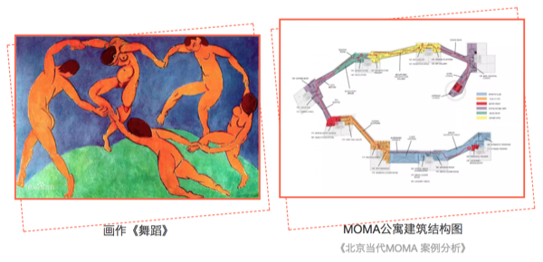
在社区的具体建设中，有非常多的可持续性理念的体现，这个社区以“永续建筑”的理念来践行了建筑本体的建设和施工，主要包括恒温恒湿、新风置换、地源热泵、中水处理系统等。这些体现建筑可持续性细节的系统设置，更多的是从居住者的切身感官出发，保证着每个人在房间里都能感受到一种舒适的环境，恒温恒湿和新风置换系统就是从体感上给居住者这样的舒适享受。同时，当代MOMA的这些系统设计还遵循着可持续性对于资源节约和因地制宜的要求。
恒温恒湿系统采用预埋管材的水循环系统，来保证室内温度常年保持在恒定的22-26℃，不仅不会破坏室内装修，甚至连风和噪音也感受不到。这样通过水循环系统来打造室内恒温恒湿的居住环境，不仅能让居住者感受到最极致的体验，更是一种非常节约能源和水资源的方式。
新风置换系统是将经过了过滤、除尘、灭菌、控制温度和适度的新鲜空气从房间底部的送风口送入房间，经过室内循环之后从房间顶部的排气孔排除，利用空气上升的自然原理，不仅杜绝了空气之间的交叉污染，也是以非常节能环保的方式保证了即使在北京大雾霾天的情况下也能实行对室内空气质量的要求。
地热源泵采用的复合式能源系统，是通过地下100米以下的垂直换热器以矩阵的格局分布在地下车库的地板下，与土壤进行热交换后再向上传递供热或者供冷，将对周围环境的影响降低到了最少，并且充分地利用了地下温度，几乎接近于可再生能源。
中水处理系统采用膜生物处理的技术，将社区内每天产生的大部分厨房以及洗浴废水作为中水水源，处理之后全部回用于社区商业、影院、图书馆以及部分楼座的冲厕用水，剩余的用于绿地灌溉、道路浇洒以及景观补充水等。

在社区尺度的可持续性建设中，有非常非常庞杂的关键节点和细节可以体现，从能源节约、资源利用、废弃物处置等诸多实际的物质节约的诉求，到社会公平、社区和谐、环境友好等精神层面的追求，无一不体现着可持续发展目标。限于篇幅，我们就重点了解了一个可持续社区在设计和建设方面的可持续性的体现。我们能看到，可持续社区的建设其实是渗透在社区生活方方面面的一个持续性改善过程，从国家和城市的规划布局，到社区建设的具体实践，再到社区居民身体力行的改善，每一个角色都对可持续社区这个目标的实现贡献着自己的力量。这其中，诸多标准帮助规范着社区建设的实践行为，价值导向指点着社区居民的日常生活，而城市上层的整体规划是引导可持续社区建设实践的方向标。
作者：爱杯子的王小咖 校稿：yufree，大石 编辑：兔 配图：爱杯子的王小咖，栟
3.15 环境保护，保护优先
3.15.1 缘起
2015年初春两会期间，时任环境保护部部长陈吉宁在说明环境保护与经济增长之间关系时用了环境库兹涅茨曲线概念，当时其表示我国环境污染强度已超过历史上最高的国家，成为名副其实的“第一”，我国面临前所未有的经济发展和环境保护的矛盾。
环境库兹涅茨曲线成为环境领域热点问题，2年时间过去了，在刚刚召开的两会中审议通过了国务院机构改革方案，组建了生态环境部，生态文明和环境保护被提到前所未有的高度，我国环境保护现在处于环境库兹涅茨曲线的哪里？环境保护该如何发展？
回答这些问题，需要我们抬起头来，看看前方的路，决定如何走，再撸起袖子加油干。笔者才疏学浅，尝试回答这些问题，见解如有不对，敬请谅解。
3.15.2 什么是环境库兹涅茨曲线？
环境库兹涅茨曲线概念引申于库兹涅茨曲线(Kuznets Curve)。
百度百科告诉我，库兹涅茨曲线是美国经济学家库兹涅茨于上世纪90年代提出的理论，库兹涅茨用实证数据表明收入不均现象随着经济增长先升后降，呈现倒U型曲线关系。
随后该概念被引入环境领域，通过研究发达国家经济发展水平与环境污染直接的关系发现，当一个国家经济发展水平较低的时候，环境污染的程度较轻，但是随着人均收入的增加，环境污染由低趋高，环境恶化程度随经济的增长而加剧。
当经济发展达到一定水平后，也就是说，到达某个临界点或称“拐点”以后，随着人均收入的进一步增加，环境污染又由高趋低，其环境污染的程度逐渐减缓，环境质量逐渐得到改善。
这种现象被称为环境库兹涅茨曲线（提示一下：环境库兹涅茨曲线是倒U型曲线，这是只是大致意义上的，并不是说要严格呈倒U型）。

3.15.3 环境库兹涅茨曲线拐点区间已现
改革开放以来，我们经济水平持续走高，而无可避免地，中国很多地方出现了局域性环境污染，近年来甚至一度爆发全国范围内的严重环境污染，如笼罩在京津冀地区的大气雾霾。
改革开放接近40年，中国环境治理主要以末端治理为主，也取得了一定成果。虽然我国整体环境质量仍未见好转，生态环境保护短板问题突出，但是统计数据显示环境污染物排放整体上已来到拐点区间，其中部分传统污染物已经越过了环境库兹涅茨曲线拐点，非传统污染物排放也趋近拐点区间。
笔者作为应对气候变化工作从事者，对应对气候变化领域数据较为熟悉，这里以应对气候变化工作最具有代表性的表征指标碳排放量来举例说明。
我国碳排放量与人均GDP的关系可以很好地解释环境库兹涅茨曲线。
1980年前后，我国人均GDP仅有300美元左右，随着我国经济迅速增长，碳排放量也水涨船高，我国人均GDP达到1000美元、3000美元，碳排放量分别达到了27亿吨、66亿吨。
当人均GDP超过5000美元，我国政府逐渐重视生态文明，强调经济转型升级，试图用更小的能源消费、环境代价获取更多的经济增长。
这段时间我国的单位GDP碳强度大幅度下降，到2016年前后，我国人均GDP超过7000美元，碳排放量缓增至90亿吨左右。
人均7000美元已来到环境库兹涅茨曲线拐点窗口期，碳排放量的增长也十分疲软，甚至有专家判断我国碳排放量已经达到峰值。
而笔者的判断是，不管碳排放是否已经达峰，碳排放应该是到了环境库兹涅茨曲线的拐点区间。

3.15.4 在此拐点，我们要如何走？-保护优先
中国政府在十九大报告中提出到2035年基本实现社会主义现代化，到那时，生态环境根本好转。
如何在未来不到20年内实现该目标呢？办法总比问题多，有些办法更有效果。
发达国家和我国的经济实践证明仅仅依靠技术不能够完全解决环境问题，环境改善更为重要的是要依靠正确的发展方针和政策（这句话不是我说的，是原全国人大环资委主任委员曲格平在接受某家媒体采访时说的，以此作为文献引用吧）。
因此，在环境库兹涅茨曲线拐点的重要窗口期，中国政府应树立“保护优先”的发展战略。
“保护优先”战略指环境保护和经济增长协调发展，把环境保护放在更加突出的位置，甚至在局部地区或某些时间段放在首要位置。
“保护优先”战略是习近平总书记的“绿水青山就是金山银山”科学论断的应有之义。
因为“保护优先”战略不是环境至上，而是对经济增长、社会发展提出了更高的要求。
“保护优先”战略要求正确处理环境与经济之间的关系，彻底改变以牺牲环境、破坏资源为代价的粗放型增长模式，不以牺牲环境为代价去换取一时的经济增长，而是通过转变发展方式、优化经济结构、转换增长动力赢得长期的高质量发展。
“保护优先”战略要求在加强末端治理工作的同时，更加注重源头预防工作和过程控制工作，现阶段政府要加大资金投入鼓励源头预防的技术发展，构建源头预防、过程控制和末端治理一体化的环境污染治理体系。
（保护优先思想参考了原环境科学院院长发表在紫光阁期刊上的文章）
作者：羽青空之蓝 校稿：周宁、爱杯子的王小咖 编辑：泽水之岸 原创图：羽青空之蓝
3.16 “砷”生不息
提起砷（As），可能大家最先想到的就是潘金莲毒死武大郎的砒霜。作为一种毒性较强的环境污染物，砷不仅存在于小说和宫廷剧中，还广泛地分布于岩石、土壤和天然水体中。近年来，关于大米中砷含量超标、婴儿米粉中检测出砷的报道层出不穷，更是将水稻和砷的纠葛推到了风口浪尖。

3.16.1 砷的来源与毒性
砷的来源甚至可能会早于你我的认知。历史上，关于砷的记载最早见于1世纪罗马博物学家普林尼的著作中，即雌黄（一种砷的硫化物）。在自然条件下，砷主要以硫化物、含氧砷酸化合物和金属砷化物等形式存在；并通过地壳运动、火山喷发等过程，从地壳中释放到地壳表层和大气中；随后，伴随岩石矿物的风化过程，被进一步释放到周围的土壤和水体中。工业革命以来，人类活动如矿物开采、工业活动、农业活动以及日常生活垃圾的排放等加速了砷在环境中的扩散，持续地将含砷化合物分散到土壤、水体和大气环境中1。

砷的毒性大小和其存在形式息息相关。砷主要有无机砷和有机砷两种存在形式。其中，有机砷（氧化态）的毒性可以忽略不计，而无机砷毒性强，其中三价砷毒性比五价砷大约60倍,人口服三氧化二砷中毒剂量为5-50mg,致死量为70-180mg。因此，与人体健康相关的各类砷含量的限值通常是指无机砷含量。例如，世界卫生组织制定的无机砷对人的安全上限为“每天每千克体重的砷摄入量不超过2微克”；我国要求每千克大米中无机砷含量不超过150微克2，《婴幼儿谷类辅助食物标准》（GB10769-2010）规定砷含量上限是每千克300微克3。
3.16.2 水稻与砷
为何水稻中砷含量会得到如此广泛的关注？首先是由于我国地处东南亚地区，水稻是我们赖以生存的主要粮食之一；其次，由于水稻田的水淹种植以及水稻本身的特性，让水稻具有高富集砷的“优势”，使得大米中无机砷含量远高于其他谷物类4。目前，科学家已从水稻中发现两种蛋白，水稻可通过它们将不同形态的无机砷吸收至体内。其中，五价砷由于和磷酸盐具有相似的物理化学性质，通过磷酸盐吸收通道进入水稻体内；三价砷则主要通过水通道蛋白吸收进入水稻体内。

提到水稻对砷的吸收，就不得不提“栖息”在水稻根际的高达数以亿计的砷代谢微生物。正是它们影响了水稻土中砷的迁移转化过程，促进或者抑制水稻对砷的吸收5。所谓水稻根际微区，即受水稻根系影响的土壤。在水稻生长旺盛时期，水稻根系不仅可分泌丰富的有机物，还具有较强的泌氧能力，从而促使根际微生物群落更加丰富和多样化。据报道，水稻根际土壤细菌的丰度比非根际土壤可高达一半以上（50.8%）。
3.16.3 砷代谢微生物
砷氧化微生物–水稻根际区“栖息”的各型各色的砷代谢微生物中，砷氧化微生物最为丰富。通常在自然条件下，无机的三价砷被化学氧化的过程是非常缓慢的。但当微生物存在时，由于微生物的三价砷氧化酶的催化作用，三价砷可以被迅速氧化为毒性较低的五价砷。这正是水稻根际砷氧化微生物的职责所在。当水稻根际的三价砷被氧化为五价砷后，不仅砷的毒性被降低，五价砷还易被存在于水稻根表的铁膜吸附，从而降低了砷的迁移性，减少了水稻对砷的吸收。
砷还原微生物–与砷氧化微生物作用“背道而驰”的即砷还原微生物。它们能够将五价砷还原为三价砷。在水稻土中，存在着两种类型的砷还原微生物。其一是可进行体外还原的五价砷呼吸还原微生物，其二是可进行体内还原的五价砷解毒还原微生物。然而不论过程如何，最终结局都是五价砷被还原为毒性较高的三价砷。非但如此，原本被水稻根表铁膜吸附的五价砷也因为还原过程被从矿物表面解吸，并释放到土壤中，增加了水稻吸收砷的风险。
砷甲基化微生物–近年来，除了砷氧化、还原微生物之外，在水稻根际土壤中声名大噪还有另一类微生物：砷甲基化微生物。与氧化、还原微生物仅局限于无机砷形态转化的功能不同，砷甲基化微生物可将无机形态的砷通过甲基化产生有机形态的砷。这部分有机砷（氧化态）毒性远低于无机砷，大大的降低了水稻土中砷的毒性。与此同时，在砷甲基化的过程中，还可产生多种挥发性的气态砷，可将水稻土中的砷挥发至大气中，降低水稻土中砷含量。研究表明，大气中的砷有62%来自于环境的自然挥发过程，其中生物挥发占了自然挥发过程的58%。

这么看来，除了人为因素造成的水稻土砷污染，这些微小的砷代谢生物对水稻土中砷的迁移转化，以及水稻对砷的吸收也贡献了并不微薄的力量。目前，研究者们正在进一步研究如何通过调控这些砷代谢微生物群落的结构，来实现降低水稻对砷吸收的目的，争取有朝一日，让大家可以安心的“民以食为天，食以米为主”。
后记：如何降低砷摄入风险Tips，科学家表示均衡饮食很重要，除了大米，也要多吃面食以及其他谷类作物。此外，据说煮米饭前，先将生米浸泡一晚，然后用过量的水将米煮熟后，弃水食米，可大大降低米中砷的含量。但是，此法会同时降低大米中其他水溶性营养元素含量，并且笔者认为米饭口感会大幅下降，食之如“烂泥”，对食物口感有要求者慎用。
参考文献：
1 Zhu Y-G, Yoshinaga M, Zhao F-J, Rosen BP. Earth abides arsenic biotransformations [J]. Annual Review of Earth and Planetary Sciences, 2014。
2《食品中污染物限量》（GB2762-2005）
3《婴幼儿谷类辅助食物》（GB10769-2010）
4 美国食品药品监督管理局（U.S.Food and Drug Administration, FDA）:Arsenic.
5 Zhang S-Y, Zhao F, Sun G, Su J, Yang X, Li H et al. Diversity and abundance of arsenic biotransformation genes in paddy soils from Southern China [J]. Environmental Science & Technology, 2015.
作者：鱼小张 校稿：广播站王站长、柴胡半夏苏 编辑：李立平
3.17 国家公园是什么园

国家公园，一个陌生而又熟悉的名字。陌生，是因为大家耳熟能详的公园中，好像没有哪一家叫“国家公园”；熟悉，则是因为身边好像又有很多“国家森林公园”、“国家湿地公园”、“国家地质公园”等等。
那什么是国家公园呢？想必很多人听说过美国的黄石公园，这是世界上的第一个国家公园，建于1872年。至今，全世界已有一百多个国家设立了多达1200处风情各异、规模不等的国家公园。国家公园的定义在世界各国有一定差别，但基本所指都是符合某些条件的自然与文化遗产地。例如，世界自然保护联盟（IUCN）认为国家公园指那些“被指定用来为当代或子孙后代保护一个或多个生态系统的生态完整性，排除与保护目标相抵触的开采或占有行为，提供在环境上和文化上相容的、精神的、科学的、教育的、娱乐的和旅游的机会”的陆地或海洋地区。国家公园的主要管理目标是保护生态系统和提供游憩机会。美国1970年颁布实施的《国家公园事业许可经营租约决议法案》规定：“国家公园体系是不管现在还是未来，由内政部长通过国家公园管理局管理的以建设公园、文物古迹、历史地、观光大道、游憩区等为目的的所有陆地和水域。”
3.17.1 我国为什么要建国家公园？
目前我国保护地管理中存在着严重的交叉重叠、多头管理等问题。这是什么意思呢？就是说在一块区域内，这块土地可能既是国家级风景名胜区，又是国家级自然保护区，还有可能是国家级各种公园（下图）。管理机构呢，风景名胜区一家、自然保护区一家、国家级各种公园又分别一家，除此之外，还有地方政府的林业局、国土局、水务局等部门进行管理。

基于当前重要自然生态系统保护区域的各种问题，我国党的十八届三中全会《中共中央关于全面深化改革若干重大问题的决定》（2013年11月）中，首次提出要“建立国家公园体制”，以保护国家重要自然生态系统的原真性和完整性，形成自然生态系统保护的新体制新模式，促进生态环境治理体系和治理能力现代化，保障国家生态安全，实现人与自然和谐共生。2015年，由国家发改委牵头，开始推进国家公园体制试点，提出建立“国家公园体制”，开始“国家公园体制试点”，而非简单的建立国家公园。开始国家公园体制试点，最重要的原因就在于，改革的是保护地的管理体制，而非划一块区域，挂一个牌子。截至目前，试点实施方案在国家发改委通过的国家公园体制试点共10个，分别是三江源、大熊猫、祁连山、东北虎豹、神农架、武夷山、钱江源、北京长城、南山、香格里拉普达措国家公园体制试点区。当前，国家公园体制建设已经成为生态文明体制建设的排头兵。

3.17.2 国家层面的国家公园体制试点建设进展
2013年11月，十八届三中全会首次从国家层面提出“建立国家公园体制”。2015年，是国家公园体制相关文件密集出台的年份。
1月，国家发改委联合13个部委印发《建立国家公园体制试点方案》，作为国家公园体制试点的总体指导文件，其中指出试点时间为2015-2017三年。
3月，国家发改委办公厅发布《试点实施方案大纲》，提出国家公园体制机制的几大方面，为试点区体制改革指明了具体的方向：管理体制包括管理单位体制、资源管理体制、资金机制；运行机制包括日常管理机制、社会发展机制、特许经营机制、社会参与机制。
4月和9月，关于生态文明体制改革的国家顶层设计重要文件（《关于加快推进生态文明建设的意见》和《生态文明体制改革总体方案》）中均提及“建立国家公园体制”，保护自然生态和自然文化遗产的原真性和完整性。
10月和2016年3月，《十三五规划建议》和《十三五规划纲要》中，明确要在十三五期间，“整合设立一批国家公园”。
2017年，很多国家公园体制建设相关人员认为会静待试点结束，总结经验，出台《建立国家公园体制总体方案》（以下简称《总体方案》）。结果出了祁连山事件（中办国办就甘肃祁连山国家级自然保护区生态环境问题发出通报，包括3名副省级干部在内的100多名相关人员受到处理），“国家公园在不到一个月的时间里两上中央深改组会议：6月26日，祁连山国家公园试点方案在中央深改组36次会议上通过；7月19日，作为未来国家公园工作顶层设计的《总体方案》在中央深改组第37次会议上获得通过”。9月26日，《总体方案》公布于众，中国国家公园体制的顶层设计被和盘托出； 10月18日，十九大报告中又两次提到国家公园并强化了《总体方案》中的说法：“国家公园体制试点积极推进……建立以国家公园为主体的自然保护地体系”。

说来有趣，《总体方案》中表述的是“理清各类自然保护地关系，构建以国家公园为代表的自然保护地体系”，而十九大报告中，说的则是“建立以国家公园为主体的自然保护地体系”，从“代表”到“主体”，普通人看来没有太大差别，但是在国家级的文件中出现，就不是那么简单了。“主体”如何体现，众说纷纭，可能意味着今后从管理模式角度看，自然保护地需向国家公园看齐；也可能意味着国家公园在面积和管理体制等方面都会引领自然保护地的建设。
机构改革为国家公园体制建设保驾护航。最初联合发布《建立国家公园体制试点方案》 13个部委包括：国家发改委、中央编办、财政部、国土资源部、环保部、住建部、水利部、农业部、国家林业局、国家旅游局、国家文物局、国家海洋局、国务院法制办公室。从这些部门联合发布，可以看出国家公园体制建设工作所涉及部门之众多、利益之复杂，由此可想相关工作推进的难度。可喜的是刚过去的两会期间，十三届全国人大一次会议审议通过的国务院机构改革方案中，为加大生态系统保护力度，统筹森林、草原、湿地监督管理，加快建立以国家公园为主体的自然保护地体系，保障国家生态安全，将国家林业局的职责，农业部的草原监督管理职责，以及国土资源部、住房和城乡建设部、水利部、农业部、国家海洋局等部门的自然保护区、风景名胜区、自然遗产、地质公园等管理职责整合，组建国家林业和草原局，由自然资源部管理。国家林业和草原局加挂国家公园管理局牌子，主要职责是：监督管理森林、草原、湿地、荒漠和陆生野生动植物资源开发利用和保护，组织生态保护和修复，开展造林绿化工作，管理国家公园等各类自然保护地等。在这统一管理的机构下，“以国家公园为主体的自然保护地体系”如何发展，让我们拭目以待！
参考文献
1彭琳, 赵智聪与杨锐, 中国自然保护地体制问题分析与应对. 中国园林, 2017(04): 第108-113页.
2苏杨，如何看《建立国家公园体制总体方案》（之一），2017，中国发展观察
作者：柴胡半夏苏 校稿：看透 编辑：栟
3.18 国家公园是不是旅游景区？
3.18.1 引言
国家公园体制试点在生态文明体制建设中具有先行先试的意义，其具有资源价值高、保护和发展的矛盾突出、体制配套改革较容易等特点，处理保护与旅游的关系是体制试点工作重点之一。中央已经颁布了《建立国家公园体制总体方案》（以下简称《总体方案》），明确了“国家公园实行最严格的保护”，多位领导也声称“国家公园不是搞大旅游”，但世界多个国家的经验说明国家公园与旅游的关系密切，我国以自然资源为主体资源的高级别旅游景区（5A级）中又有超过80%属于自然保护地（其中有相当数量的景区其资源价值能达到国家公园的要求）。在现实中，国家公园、旅游景区、旅游业、国家公园旅游等概念极易混淆，很多人甚至是相关从业者都不明就里。
这种情况下，需要探讨国家公园到底是否能发展旅游业和国家公园与旅游景区是什么关系？国家公园旅游是什么及其如何发展？关于这些问题，分两部分给各位看官解析。本篇为第一部分——国家公园不是旅游景区！
在中央主导国家公园体制试点前，我国的国家公园相关工作（除了台湾地区）均与发展旅游产业有关，而以自然资源为主体的5A级旅游景区也大多数是自然保护地。未来“以国家公园为主体的自然保护地体系”与旅游景区是什么关系？可从资源特点、本质特征等方面来辨析。
3.18.2 资源角度，国家公园与旅游景区类似
尽管许多人认为旅游景区与保护地完全是两个维度的概念，但从管理标准和实际情况来看，这二者“难舍难分”。
3.18.2.1 旅游景区定义
根据国标《旅游景区质量等级的划分与评定》（GB/T17775-2003），旅游景区是“以旅游及其相关活动为主要功能或主要功能之一的空间或地域，包括风景区、文博院馆、寺庙观堂、旅游度假区、自然保护区、主题公园、森林公园、地质公园、游乐园、动物园、植物园及工业、农业、经贸、科教、军事、体育、文化艺术等各类旅游景区”。
这个定义，把自然保护地的面积主体“包括”进去了。实践中，符合该定义的旅游景区达2万多个，其中列入该标准所确定的A级景区共有5000余家。在200多个5A级景区中，按核心资源属性划分，以重要自然资源为主体的遗产型占绝大多数（约八成）。
出现这种二者很难区分的局面，成因之一是“选材”标准接近，尤其是旅游景区在资源、环境方面的评价标准，在相当程度上与多种自然保护地的相关要求接近。
3.18.2.2 旅游景区评价标准示例
资源方面：在景观质量评分细则（共计100分；5A不低于90分）中包括两个部分：资源吸引力总分为65分，包括景区的观赏游憩价值、历史文化科学价值、珍稀或奇特程度、规模与丰度和完整性等五个方面的内容。要求景区观赏游憩价值很高、同时具有极高历史价值、文化价值、科学价值，或其中一类价值具有世界意义，有大量珍稀物种、或景观异常奇特，或有世界级资源实体，资源实体量巨大，或基本类型数量超过40种，或资源实体疏密度优良，资源实体完整无缺，保持原来形态与结构。
环境方面：也接近保护地的要求，如“空气质量达GB 3095-1996的一级标准……地面水环境质量达到GB 3838的规定……自然景观和文物古迹保护手段科学，措施先进，能有效预防自然和人为破坏，保持自然景观和文物古迹的真实性和完整性”。
日常工作方面：也有相近之处，如在服务质量与环境质量评分细则（共计1000分；5A不低于950分）中，资源与环境保护也占到了145分。
3.18.3 本质而言，国家公园与旅游景区相异
以自然资源为主体的顶级旅游景区在资源价值方面与国家公园有共性，但在管理体制、发展理念和目标、具体工作内容等方面都存在明显区别。
国家公园与旅游景区的管理体制差异巨大。国家公园体制承载的是全民公益事业，使命是“保护为主、全民公益性优先”；旅游景区（包括旅游度假区）则只能实行市场经济体制，使命是以旅游业态为主的区域整体开发。因此，虽然同样存在经营活动，但国家公园及其他自然保护地的经营要求必须采用特许经营方式，且会限定空间范围（小面积区域）和业务范围（仅为访客服务的餐饮、住宿、交通等非基本公共服务），不是求新求变、利润至上、完全市场化的经营活动；国家公园的经营主体也必须与管理机构剥离（即分开裁判员和运动员），管理者只能承担监管者和基本公共服务提供者的职能。哪怕同样讲到保护，差别也是明显的：旅游景区的保护，是对生产资源的保护；旅游景区的公益，是维持生产环境的周边社会稳定；生态保护和全民公益从来不是旅游景区的目标，其管理体制也从来不服务于这样的目标。
国家公园与旅游景区的发展要求和目标差异明显。尽管在资源价值评判上，旅游景区与国家公园有很多共同点，但在基础设施等可能影响保护的重要领域上，二者还是有巨大差异的。这样的差异，注定了旅游景区和国家公园的“道不同”。
3.18.3.1 差异示例
《旅游景区质量等级管理办法》的新标准中，将交通列为第一要素，尤其5A级旅游区对交通要求相当高：“交通设施完善，进出便捷。具有一级公路或高等级航道、航线直达；或具有旅游专线交通工具。”在《服务质量与环境质量评分细则》中，5A级旅游区需要拿到总分1000分中的900-950分，与直达机场的距离远近直接关系到交通方面的分值：30公里以内才可得满分10分。
而国家公园体制试点区中，交通往往是要改造的生态系统完整性和连通性的障碍，高等级公路更是生态完整性的大忌。这在东北虎豹、大熊猫等试点区尤甚。而且，旅游景区评级中的一些硬性规定忽略了自然环境因素和旅游活动独特性。比如，5A级景区要求“年接待海内外旅游者60万人次以上，其中海外旅游者5万人次以上。”按国家公园的要求，这种标准多半会导致游客容量超过环境承载力。
即便是发展旅游，在活动内容和所考虑的带动效应上，二者也有明显差别。就旅游景区的品牌而言，大多只是为观光旅游和相关房地产业服务，而非像法国国家公园那样的跨越一、二、三产的国家公园产品品牌增值体系 。对于旅游活动内容，如前所述，国家公园不提倡求新求变求舒适的硬件和软件服务，而旅游景区则专注于此。在国家公园与旅游景区具有共性的游客服务上，二者也大异其趣。例如，为游客的解说，在国家公园中是专业的环境教育，在旅游景区中则只是导游。专业的环境教育要求以自然科学和人文历史为维度，以国家公园这样的物证展示国家的资源价值和历史脉络，而导游，则只是让观光客有些惊叹、有些趣味，难免神神鬼鬼的臆造和插科打诨的段子。
3.18.4 总结
总结起来，国家公园与旅游景区定位不同，制度大异（见下表）。因为发展目标、管理体制机制和具体工作的差别，未来自然保护地和旅游景区应当明确各自的定位，并配套相应的制度保障。对于这两类都需要发展的特殊功能区而言，大家穿上各自的“制服”，在不同的体制下各显身手、各尽所长。
新中国的保护地历史，只有62年，但前期发展缓慢。保护地的大发展，基本与中国的经济大发展同步，但前期的大发展只是数量的大发展，是“早划多划、先划后建”式的发展，因此尽管有《自然保护区条例》、《风景名胜区条例》这样的“最严格保护”的法规，自然保护地并没有真正得到依法保护，地方政府“靠山吃山、靠水吃水”并把保护地开发为旅游景区的情况大有所在。直到近十年来，在国家向生态文明的转型发展中，各类自然保护地的实际管理才得到规范，与保护地相关的法律法规和规章制度才从纸面落到了地面，中央用各种文件和行动明确了在生态文明建设中对待自然保护地的初心。
大势所趋，当初“以经济建设为中心”和“一心一意谋发展”的地方政府必须忘掉自己对待自然保护地的初心，记住中央的初心，才能真正牢记使命。只要认识到位、支持到位，以旅游景区为定位的传统发展模式完全可能转变为以生态文明建设为宗旨的绿色发展模式。未来的旅游目的地将形成两个系列：一是低门票、公益性的国家公园和自然保护地，游客在其中主要以生态旅游的方式体验，在环境教育、自然体验中满足自己的诉求；二是高门票的企业投资景区，如主题公园、游乐园等，如迪斯尼乐园和长隆野生动物园等，游客在其中可获得感官刺激和奢华体验。选择去什么地方，取决于自身的追求，但自然保护地的主体功能是生态保护和全民公益性，不可能再有奢华宾馆别墅，不可能再有玻璃桥梁，不可能再有高速公路，却会通过各类组织提供各种教育和体验活动，让人在大自然中自然地体验美丽中国。
作者：苏红巧 苏杨 校稿：柴胡半夏苏 编辑：次要男主角
3.19 何为“最严格的保护”?——解读“国家公园实行最严格的保护”（之一）
3.19.1 “最严格”与“保护”
从中央层面来看，将“最严格”与生态环境的“保护”关联在一起，最早出现在2013年党的十八届三中全会的《中共中央关于全面深化改革若干重大问题的决定》中：“建设生态文明，必须建立系统完整的生态文明制度体系，实行最严格的源头保护制度、损害赔偿制度、责任追究制度，完善环境治理和生态修复制度，用制度保护生态环境。” 2017年5月，在中共中央政治局第四十一次集体学习上（主题是推动形成绿色发展方式和生活方式），习近平总书记强调：“必须把生态文明建设摆在全局工作的突出地位……推动绿色发展，建设生态文明，重在建章立制，用最严格的制度、最严密的法治保护生态环境”；同年9月，《建立国家公园体制总体方案》（中办发[2017]55号，以下简称《总体方案》）中也明确了“国家公园是我国自然保护地最重要类型之一，属于全国主体功能区规划中的禁止开发区域，纳入全国生态保护红线区域管控范围，实行最严格的保护”。
这个“最严格”，是否就是严格按照现有法规的“严防死守”？这里面的“保护”究竟指的是什么？“实行最严格的保护”的自然保护地区域（全国主体功能区规划中的禁止开发区域）是否就基本等同于禁区？国内外保护绩效显著的自然保护地是如何“操作”最严格的保护的？不解读这些概念、厘清这些问题，就无法真正落实中央要求的“最严格的保护”。
3.19.2 生态文明时代需要“最严格的保护”
自党的十八届三中全会提出“建立国家公园体制”以来，国家公园的地位经历了“自然保护地体系的代表”（《总体方案》）向“自然保护地体系的主体”（党的十九大报告）的转变，国家公园的保护要求从“实行更严格保护”（《生态文明体制改革总体方案》）变为了“实行最严格的保护”（《总体方案》），这些转变体现了中央“加快生态文明体制改革，建设美丽中国”的决心，表明未来自然保护地的管理体制都要向国家公园体制看齐，都需要“实行最严格的保护”。
从“更严格”的提法变到“最严格”，这其间发生了什么？导致这个转变的原因有很多，“祁连山事件”是重要的推动因素。大量的违规审批、未批先建、手续不全的采矿探矿和水电开发活动，使祁连山区域局部植被破坏、水土流失、地表塌陷，下游河段出现减水甚至断流现象，水生态系统受到严重破坏。在习近平总书记多次批示要求抓紧整改、中央有关部门督促的情况下，甘肃省相关部门仍然没有重视，未下大力度整改，导致中央督察组直接介入专项督查，最终包括3名省级、8名厅级和数十名处级干部在内的诸多官员被问责。自此之后，“最严格的保护”深入人心（尤其是政府部门相关的管理人员），环境保护方面的“党政同责、一岗双责、失职追责”真正落地。尽管如此，由于“以经济建设为中心”的传统发展观惯性强大，迄今仍有不少地方未形成“共抓大保护、不搞大开发”的合力。例如，2018年9月，就侵占破坏自然保护区问题，生态环境部约谈8省地方领导和3省林业厅领导，要求严格自然保护区管理，推进中央环保督察和“绿盾2017”整改落实，禁止以损害自然保护区为代价谋求一时一地的经济增长。据统计，2018年全国各地调查处理涉及自然保护区的问题线索多达14 000多个，追责包括6个厅级干部和150个处级干部在内的900人。
在如此的高压态势下，自然保护区破坏问题仍屡禁不止，这一方面说明，进入生态文明时代后，我们必须通过“最严格的保护”才能保住绿水青山，另一方面也说明，目前操作的“最严格的保护”标准和做法似有不合理之处，许多地方可能难以实施若干法规字面上的“最严格的保护”，即便实现这样的“最严格的保护”也有可能导致保护效果反而不理想。从学术角度，辨析“保护”和“最严格的保护”已成当务之急。
3.19.3 “最严格地”按照科学来“保护”
最严格的保护”提出了以国家公园为主体的自然保护地体系的管理要求，这是否意味着自然保护地范围内就不能发展、一草一木皆不能动了呢？回答这个问题，首先需要探讨“保护”的含义。从自然保护地起源地（美、英、法等欧美国家）的保护历史看，“保护”一词，对应的英文单词有protection和conservation，相对应的拥护者被称为protectionist和conservationist：前者强调的是“no use”，即严防死守、禁止一切利用的保护；后者则强调“legitimate use”“wise use”，即寓保于用，秉承保护第一的前提下，合理合法地进行资源利用，然后再反哺于保护。自然保护地建立早期（1872-1970年左右），protectionist居主导地位，当时认为保护与发展不可兼顾（incompatible with each other），完全对立。随着社会的发展、对自然认知水平的提高，人们发现保护与发展是可以相伴而生的（conservation and development are seen as two faces of the same coin），conservationist开始逐渐增多，逐渐居于主导地位，并一直持续至今。
自然保护地主流的保护理念从protection向conservation的转变，可以从世界上规模最大的环保组织世界自然保护联盟（International Union for Conservation of Nature，简称IUCN）的发展史管窥。
1948年，IUCN成立时，名称为IUPN（International Union for the Protection of Nature）。但是在具体的实践过程中，IUPN的自然生态学专家（多数是生物学专家）逐渐开始用系统的方法来考虑生态系统中各要素相互之间的关系：孤立的、“防卫式”的对单一物种或区域的protection在现实中既不科学也不可行，取而代之的是积极向上的、考虑有效保护和合理利用的conservation。该组织的发展目标也从单一的、严格的自然保护，转变为要兼顾自然保护和人类福祉。由此，在1956年，IUPN改名为IUCN。
1980年，为了促使政府部门、自然保护专家（conservationist）、原住民、社会发展实践者（如工商业、交易协会等）等不同利益相关者形成保护合力，探寻更为聚焦生物资源（living resources）管理的方法， IUCN发布《世界保护战略》（the World Conservation Strategy，简称WCS）。其3条准则是：①维护支撑人类生存和发展的关键生态过程和生命支撑系统（如营养物质循环、水质净化等）；②保护遗传多样性（自然界生物所蕴藏的基因物质），这是关键生态过程和生命支撑系统得以可持续的重要基础，例如遗传多样性保护可以为动植物的分类进化提供有益资料，为制定珍稀濒危物种保护方针和措施、动植物育种等奠定基础；③确保对物种和生态系统的可持续利用（尤其是鱼类和其他野生动物，森林和牧场），这些物种和生态系统对广大乡村社区和多数工业活动具有重要的支撑作用。从IUCN的发展历程和WCS可以看出，自然保护一方面需要集合各方力量，通过形成利益共同体，来形成保护的合力；另一方面，需要基于对自然生态系统结构、过程和功能规律的认识，采取科学的、动态的、适应性的保护措施，而非简单地严防死守。
3.19.4 对国家公园的保护
基于对“保护”的认识，可以明确《总体方案》中“最严格的保护”是指conservation，而不是protection。《总体方案》中的相关表述为：①“国家公园是指由国家批准设立……，实现自然资源科学保护和合理利用的特定陆地或海洋区域。建立国家公园体制……对于推进自然资源科学保护和合理利用，促进人与自然和谐共生……具有极其重要的意义”；②国家公园“属于全国主体功能区规划中的禁止开发区域”。《全国主体功能区规划》中强调，规划中的“’开发’特指大规模高强度的工业化城镇化开发，禁止/限制开发区域，并不是限制发展，而是为了更好地保护这类区域的农业生产力和生态产品生产力，实现科学发展”；③“建立社区共管机制，……，明确国家公园区域内居民的生产生活边界……周边社区……鼓励通过签订合作保护协议等方式，共同保护国家公园周边自然资源”。
从这些表述中可以看出，“最严格的保护”指的应该是最严格的conservation，是“最严格地按照科学来保护”，需要基于对自然生态系统结构和过程的认识，细化保护对象的保护需求，统筹考量以土地权属为代表的社会经济限制条件。对于未受过人类干扰的原始生态系统（荒野区域）、濒危的种群，根据其保护需求严格管理，对于不濒危的种群，则坚持合理利用，实现生态、社会、经济效益的最大化。
作者：苏红巧、苏杨 校稿：爱杯子的王小咖 编辑：天枫
3.20 国家公园如何统筹“最严格的保护”和“绿水青山就是金山银山”
“最严格的保护”和“绿水青山就是金山银山”都是习近平生态文明的重要支撑，没有这二者的统筹就没有生态文明的落地。从2017年中央环保督察开始，各地按照相关法规和生态保护红线等要求大幅加强了保护，但这种“最严格的保护”的成果与“绿水青山就是金山银山”基本脱钩，很多地方的保护甚至与发展形成了冲突。如何让这二者在现实中统筹？国家公园应该是需求迫切、条件较好的区域。
2017年5月，在中共中央政治局第四十一次集体学习上（主题是推动形成绿色发展方式和生活方式），习近平总书记强调：“必须把生态文明建设摆在全局工作的突出地位……推动绿色发展，建设生态文明，重在建章立制，用最严格的制度、最严密的法治保护生态环境”。同年9月，中办国办印发的《建立国家公园体制总体方案》（以下简称《总体方案》）明确，“国家公园是我国自然保护地最重要类型之一，属于全国主体功能区规划中的禁止开发区域，纳入全国生态保护红线区域管控范围，实行最严格的保护”。2019年6月，中办国办印发的《关于建立以国家公园为主体的自然保护地体系的指导意见》（以下简称《指导意见》）提出的五项基本原则中包括了以下两项：“坚持严格保护，世代传承”和“坚持生态为民，科学利用”（践行绿水青山就是金山银山理念，探索自然保护和资源利用新模式）。换言之，国家公园是“最严格的保护”最优先的执行区域，同时也要求践行“绿水青山就是金山银山”。在国家公园这一空间区域，如何统筹“最严格的保护”和“绿水青山就是金山银山”？这个“最严格”，是否就是严格按照现有法规进行“严防死守”?“实行最严格的保护”的国家公园是否就基本等同于禁区？
《自然保护区条例》规定自然保护区的核心区“禁止任何单位和个人进入”；还有无差别的10项禁止：“禁止在自然保护区内进行砍伐、放牧、狩猎、捕捞、采药、开垦、烧荒、开矿、采石、挖沙等活动”。这些“一刀切”的规定既不合理也难以操作，忽视了诸多野生动植物需要根据其保护需求人为调整栖息地，以及某些保护对象已经与原住民适当的生产生活形成了近似“共生”的关系。从习近平总书记的重要讲话和中央层面出台的国家公园相关文件中可以看出，生态文明时代需要的“最严格的保护”，应该是最严格地按照科学来保护。
党的十八届三中全会提出“建立国家公园体制”。《总体方案》明确“构建以国家公园为代表的自然保护地体系”，党的十九大报告中进一步提出要“建立以国家公园为主体的自然保护地体系”；《生态文明体制改革总体方案》指出“国家公园实行更严格保护”，而《总体方案》则转变为国家公园“实行最严格的保护”。从“代表”到“主体”，从“更严格”到“最严格”，体现了中央“加快生态文明体制改革，建设美丽中国”的决心。
导致这些转变的原因有很多，“祁连山自然保护区事件”是重要的推动因素。祁连山国家级自然保护区范围内诸多违法违规开矿、水电设施违建，导致局部植被破坏、地表塌陷等问题，水生态系统受到严重破坏；周边企业偷排偷放，造成严重的大气污染和水环境污染问题。对此，习近平总书记批示多次要求尽快整改，中央有关部门也多次督促，甘肃省相关部门做了一些工作但情况却没有明确改善，触发“规格最高”、“史上最严”的环保问责风暴——由党中央、国务院有关部门组成中央督察组开展专项督查，并由中办国办行文就督查结果发出通报，对包括分管副省长在内的3名副省级官员以及相关职能部门负责人被问责，体现中央对重大环保责任事故的零容忍。自此之后，“最严格的保护”深入人心，生态环境保护“党政同责、一岗双责、失职追责”真正落地。
尽管如此，由于持续几十年“以经济建设为中心”的发展观惯性强大，部分地方政府对新发展理念践行仍然不够到位，未形成“共抓大保护、不搞大开发”的合力。例如，在“绿盾2017”“绿盾2018”专项行动中发现，“自然保护区违法违规问题尚未得到根本解决，部分地方仍然存在政治站位不高、保护为发展让路、部门履职不到位、敷衍整改和假装整改等问题”。如此的高压态势下，自然保护区破坏问题仍屡禁不止。这说明：一方面进入生态文明时代，只有实施“最严格的保护”才能保住绿水青山，另一方面，当前“最严格的保护”的标准和做法似有不合理之处，若干法规字面上的“最严格的保护”在许多地方可能难以实施，而这样的“最严格的保护”也有可能导致保护效果反而不理想 。同时，“绿水青山”向“金山银山”的转化仍然存在诸多难点，地方上统筹“最严格的保护”和“绿水青山就是金山银山”缺乏有效路径。因此，实现保护与发展关系的根本转变，首先需要科学辨析“保护”和“最严格的保护”，并探寻国家公园区域统筹保护与发展的合理方式。
“最严格的保护”提出了国家公园的管理要求，这是否意味着在其范围内就完全不能发展、一草一木皆不能动了呢？回答这一问题，首先需要探讨“保护”的含义。“保护”一词，对应的英文单词有protection和conservation，前者强调的是“no use”，即严防死守、禁止一切利用的保护；后者则强调“legitimate use”“wise use”，即寓保于用，遵循保护第一的前提下，适度开展资源利用活动，并反哺于保护。自然保护地建立之初，“保护”倾向于protection，当时的理念认为保护与发展是对立的，不可兼顾（incompatible with each other）。随着对自然生态系统认知水平的提高，保护与发展的关系逐渐转变为可以相伴而生（conservation and development are seen as two faces of the same coin），“保护”也就转变为conservation。
世界自然保护联盟（International Union for Conservation of Nature，IUCN）的发展史也生动地体现了这一转变。IUCN建立之初（1948年），名为IUPN，其中“P”就是protection。经过几年的发展，其发展目标由“单一的、严格的保护”转向“自然保护与人类福祉兼顾”。到1956年，IUPN改名为IUCN，并逐步获得其发源地欧洲以外国际社会的更多认同和响应。1980年，为了促使不同利益相关方 形成保护合力，关于保护利用，尤其是野生生物资源的保护与利用，IUCN发布《世界保护战略》（the World Conservation Strategy，简称WCS）。其3条准则是：①维护关键生态过程和生命支撑系统（如营养物质循环、水质净化等）；②保护遗传多样性（自然界生物所蕴藏的基因物质）；③确保对物种和生态系统的可持续利用（尤其是鱼类和其他野生动物，森林和牧场），这对广大乡村地区和多数工业活动都具有重要的支撑作用。从IUCN发展史和WCS准则可以看出，自然生态系统保护绝非简单地严防死守，而应该在科学保护前提下，通过合理适度的利用，使利益相关方配合致力于先保护再转化保护成果，形成利益共同体，从而共抓大保护。
相应的，《总体方案》中“最严格的保护”，指的也应该是最严格的conservation，是“最严格地按照科学来保护”，需要基于对自然生态系统结构、过程和功能的科学认知，细化各类保护对象的保护需求，统筹考量社会经济条件的限制（尤其是土地权属的复杂性），创新“两山转化”机制，实现生态、社会、经济效益的最大化。
《总体方案》明确，国家公园要坚持“生态保护第一”和“全民公益性”。在这样的约束下，一方面，国家公园区域具有实现“绿水青山就是金山银山”的迫切需求。作为自然保护地体系的主体，国家公园需要“实行最严格的保护”。国家公园范围内部还有大量社区和人口，具有发展的压力。如现有的10个国家公园体制试点区都是在原来的国家级自然保护区基础上建立的。目前我国474个国家级自然保护区内，城市建成区有29个、建制乡镇建成区531个、行政村5779个。另一方面，与其他区域相比，国家公园及其周边区域具备实现“绿水青山就是金山银山”的最好条件：国家公园资源条件好，是我国自然生态系统中最重要、自然景观最独特、自然遗产最精华、生物多样性最富集的部分；同时，这一区受到中央重视、面临的传统发展压力比较小、地方政府也舍得不计一时一地的经济收入，更易于构建完整的生态文明制度。
国家公园以保护具有国家代表性的大面积自然生态系统为主要目的。“大面积”可以更好地保护自然生态系统的原真性和完整性，但是在我国这样人口密度很高且土地制度相对复杂的国家，这也意味着国家公园不可能建在无人区，而是存在大量的原住民和集体土地。国家公园建设必须创新机制，才能妥善处理“最严格的保护”（保护绿水青山）与当地社区发展（转化为金山银山）之间的关系。
国家公园体制试点区能否在保护地中率先同步“最严格的保护”和“两山的转化”？若延续过去的管理思路，则困难是显著的：“一刀切”的保护措施既不合理也难以操作，存在如大规模的生态移民和集体土地收购成本过高等问题。基于细化保护需求的保护地役权制度和国家公园产品品牌增值体系为核心的机制创新，则提供了一种可以统筹“最严格的保护”与“绿水青山就是金山银山”的思路。
构建基于细化保护需求的保护地役权制度，精准协调保护和发展的矛盾。最严格的保护是“最严格地按照科学来保护”，“最严格地按照科学来保护”需要注重长期的科研基础监测、根据保护对象的保护需求采取积极主动的适应性管理办法、科学保护的前提下提倡合理适度的利用。《总体方案》中：“集体土地在充分征求其所有权人、承包权人意见基础上，优先通过租赁、置换等方式规范流转，由国家公园管理机构统一管理……集体土地可通过合作协议等方式实现统一有效管理。探索协议保护等多元化保护模式”。“最严格地按照科学来保护”可以通过协议保护的方式，通过基于适应性管理方法的保护地役权制度来实现，即通过签订保护地役权协议，实现国家公园管理机构统一管理下的精准保护。其技术路线通常是：明确主要保护对象，细化其在各细分空间上的保护需求，确定保护需求和原住民的生产、生活行为之间的关系，形成管理原住民行为的正负清单并配套不同的激励方式（如以特许经营的方式赋予国家公园品牌的使用权，《总体方案》也提出“鼓励当地居民或其举办的企业参与国家公园内特许经营项目”）。
构建国家公园产品品牌增值体系，实现“两山的转化”，让国家公园内及周边社区居民受益于保护并成为保护的重要力量。《指导意见》提出要“探索全民共享机制”，在保护的前提下，在自然保护地控制区内划定适当区域开展生态教育、自然体验、生态旅游等活动，构建高品质、多样化的生态产品体系。国家公园品牌增值体系的构建，是国家公园及其周边区域生态产品价值机制的重要方面，可以实现资源环境的优势转化为产品品质的优势，并通过品牌平台固化推广体现为价格优势和销量优势，最终在环境友好和社区参与的情况下实现单位产品的价值明显提升，意即实现绿水青山向金山银山的转化。这一体系主要包括产品和产业发展指导体系、产品质量标准体系、产品认证体系、品牌管理和推广体系等，其空间基础则是国家公园特色小镇。《总体方案》指出，要“引导当地政府在国家公园周边合理规划建设特色小镇”。经过筛选的一二三产业的产品按照品牌体系的要求进行加工生产，在特色小镇的旅游产业中进行综合，即通过旅游将三产整合，达到旅游业态丰富、区域发展带动作用强、经济效益好的效果，实现绿水青山向金山银山的转化。
国家公园区域构建基于细化保护需求的保护地役权制度和国家公园产品品牌增值体系，需要坚持空间统筹（统筹国家公园范围内的不同功能分区）、内外统筹（统筹国家公园范围内区域和周边区域）、主体统筹（统筹国家公园管理机构、地方政府、原住民社区、社会组织等不同主体）。
统筹国家公园范围内的不同功能分区。《总体方案》明确，国家公园要“按照自然资源特征和管理目标，合理划定功能分区，实行差别化保护管理”。基于细化保护需求的保护地役权制度，“细化保护需求”也就是明确“自然资源特征和管理目标”；不同的功能分区的差别化保护管理，则体现在保护地役权合同中的正负行为清单中，也体现在国家公园产品品牌增值体系的认证要求中。
统筹国家公园范围内及周边区域。囿于我国行政区常依靠分水岭等自然界限划分的传统、保护对象尤其是动物完整的活动范围较难确定或者过大等限制条件，国家公园范围的划定，往往还无法包含完整的生态系统 。要有效保护国家公园内的自然生态系统，统筹保护与发展，还需要统筹国家公园范围内和其周边区域：通过保护地役权制度实现跨界一致性管理；以国家公园范围内的社区聚居地和其周边的特色小镇 ，作为国家公园产品品牌增值体系的空间基础。
统筹国家公园管理机构、地方政府、原住民社区、社会组织等不同主体。保护地役权制度和国家公园产品品牌增值体系的建立，都需要调动各方力量的积极性、主动性、创造性，推动各方同心同向行动。保护地役权制度的建立，需要由国家公园管理机构主导、地方政府动员当地原住民配合、社会组织提供资金或者技术支持；国家公园产品品牌增值体系，涉及品牌准入、市场监管等多个环节，需要在国家公园管理机构主导的基础上，建立多方共治的治理结构，如借鉴法国国家公园的做法，建立管理机构、地方政府、社区、行业协会、公益组织等各利益相关方参与的董事会或理事会制度，形成有话语权和获利渠道的利益共同体，各尽所长，共抓大保护，共同将保护好的绿水青山可持续地转化为金山银山。
坚持空间、内外、主体三方面的统筹，通过机制创新，国家公园统筹“最严格的保护”和“绿水青山就是金山银山”，在自然生态系统最严格的按照科学保护的前提下，进行合理的利用（wise use），不但可以产生一定的经济效益，而且严格地按照科学要求进行资源利用的过程，也是进行资源保护宣传教育的一个重要途径，有利于使不同的利益相关方形成利益共同体，进而集合各方力量形成共抓大保护的合力，建立山水林田湖草人的生命共同体，实现生态、社会、经济效益的最大化。
作者：柴胡半夏苏 校稿：看透 编辑：天枫
3.21 “最严格的科学保护”的国内外实践经验
世界诸多国家的自然保护地管理实践，都是在不断深化对“保护”的科学理解并据此优化管理体制机制。我国保护地事业目前处于管理体制改革的关键期、国家公园体制建设的起步期。总结国内外保护地“最严格的科学保护”的实践经验，可以为我国自然保护地的保护管理提供借鉴。
保护地的管理机构，基本上都有科学研究部门和配备的科研专家；其管理规划的编制特别强调科学性。国家公园、鱼和野生动物保护区的一线管理机构中基本上都有资源保护管理、科学研究等科室，相应的配备生物学、生态学方面的专家；其总体管理计划属于中长期建设和发展规划，都是由管理处的科学技术人员进行编制，保证了管理计划的科学性和实用性，一般耗时长达3年甚至10年的时间。例如约塞米蒂国家公园科研人员多达20多人，开展生物多样性研究、大气质量检测等工作；克拉玛斯保护区群管理处有4个生物专家，保护区计划火烧、栖息地人工维护的方案都是由生物学专家研究决定。
具体的适应性管理方式，可从物种栖息地的适应性管理、计划火烧项目、资源科学合理利用等三方面详述。
野生动物保护区(refuge or sanctuary)的主要功能是为野生动物提供避难场所，管理机构会采取一切必要的人为措施维护野生动物的栖息地，对物种及其栖息地进行积极的适应性管理，以满足特定物种的保护需求或者维持其栖息地。这类保护区一般划分为开放区域和封闭区域：开放区域（Open Area）允许公众进入，开展游憩、观察、拍摄、研究、教育等活动；根据保护对象及其栖息地情况，在保护区中划出一定面积的封闭区域(Closed Area)，禁止公众入内，不过可以实施栖息地维护工程措施，比如火烧、筑堤、灌水等。值得注意的是，在野生动物为主要保护对象的保护区内，一般不会设置绝对的、一草一木不能动的封闭区域。例如克拉玛斯保护区的封闭区域约占总面积的40%，属于核心区（Central Area），常年对公众关闭，但是其封闭区域的范围则会根据水鸟栖息地的情况进行调整。
对野生动物保护区采取适应性管理措施的目的主要有创造/维护栖息地环境和提供食物两方面。这些措施，对不同的保护对象和保护区的实际条件，会有不同的做法。例如：①默赛德国家野生动物保护区通过调节湿地水位为水鸟创造越冬的栖息地环境，并保留旱地种植玉米等农作物，为越冬的候鸟提供食物。②萨克拉门托保护区为了给不同的鸟类提供栖息地，根据鸟类的生态学特性，为涉禽和游禽等建设了不同水深的池塘（通过1500个水闸控制水位）；通过种植水草、夏季实施计划火烧促进新草生长等为鸟类提供食物；在池塘中修建土丘和堤坝作为鸟类休息场所。③克拉玛斯下游保护区创新了移动湿地工程的办法，保护区中占比28%的农田，通过人为措施，实现农田和湿地以4年为周期的变更，这样可以在维护水鸟栖息地的同时，控制害虫和增加土壤肥力。④圣路易斯保护区的主要保护对象是加利福尼亚马鹿（Tule elk）。通过实施计划火烧，促进新草的生长，为加利福尼亚马鹿提供食物，并有效防止大的火灾发生。
部分国家公园和野生动物保护区中，会基于对生态系统长期的监测，根据其演替规律和保护需求，实施计划火烧项目(prescribed fire)。在1970年以前，美国所有的国家公园和保护区内都严禁火烧，当时普遍认为林火会破坏森林生态系统、破坏生物多样性。但经过长期的调查研究，科技人员发现计划火烧不仅能够防止毁灭性的火灾，而且对森林的更新、湿地草本植物的生长都有好处，并且能够为不同的野生动物创造多样的栖息地。目前，火管理项目（Fire Management Program）是保护区普遍实施的工程项目。但是，火管理项目实施前需制定详细的火管理计划。例如①约塞米蒂国家公园有83%的区域都会进行计划火烧，以降低可燃物的数量、促进林木更新。一般每10年火烧一次，每年用于火烧的经费150万元，有50个人员负责。②克拉玛斯盆地国家野生动物保护区群有工作人员45人，其中15人属于火管理科，主要负责计划火烧。一般每3-5年轮烧一次，实施斑块烧除，火烧地点和强度由保护区管理处的生物学家确定。在封闭的区域，也会根据鸟类栖息地和枯落物情况进行烧除。
加强保护是开发利用的基本前提，开发利用反过来又是加强保护的重要途径。美国自然保护地体系秉承这一理念，在各类自然保护地，通过科学合理利用自然资源，反哺于资源保护。事实上，资源科学合理使用的过程，也是进行生态环境保护宣传教育的绝佳途径。美国国家公园体系的宗旨是“尽可能完整无损的保存国家公园的自然文化资源与价值，以确保世代人民可以欣赏、为之教育、为之激励”，鱼和野生动物保护区管理体系的宗旨是“与社会各界一起保育、保护和促进鱼类、野生动物和植物及其栖息地持续的贡献和保障人民的福祉”，因此这些保护地在做好保护的基础上，还会进行自然资源的可持续利用，包括生态旅游、环境教育、狩猎、放牧、耕种等。①多数野生动物保护区会开辟狩猎区，但是所允许狩猎强度和频度会有严格的管理规定，狩猎项目的所得也会反哺用于资源保护。例如萨克拉门托保护区40%的区域为狩猎区，每周三天开放，每人每天最多打5只鸭子，或者最多发射25发子弹。洪堡海湾保护区只有1000公顷，但是仍然划出25%的区域作为狩猎区，以满足周边居民狩猎的需要。②物种栖息地会根据保护对象的行为习惯，进行动态的资源利用。例如洪堡海湾保护区主要是候鸟的栖息地，每年5月至11月候鸟迁走后可以放牧，12月至翌年的4月候鸟越冬期则禁止放牧。③环境教育也是自然保护地的重要职能之一。多数保护区，配备专职解说员，为游客提供环境教育和资源信息服务。有的保护区管理处还根据中小学生的教学安排，专门编制了丰富多彩的课外辅导教材。
香港米埔自然保护区（以下简称“米埔”）的人口、产业分布情况和土地权属关系等与我国大陆的自然保护地更为接近，其科学管理的经验更具有参考价值。米埔自然保护区位于香港新界元朗区，毗邻深圳，主要保护对象是候鸟及其栖息地，是米埔及内后海湾拉姆萨尔国际重要湿地的一部分。米埔由香港政府委托世界自然基金会（World Wide Fund for Nature, WWF）管理，其“最严格的科学保护”的管理经验主要有：①基于长期的湿地生态系统科学研究与监测，根据主要保护对象的需求确定管理的方式和强度；②构建生物多样性保护平台，吸纳各方利益相关者参与保护，让保护的成果惠及公众，同时又吸引公众参与保护。
基于系统科学的基础监测研究，进行积极主动的适应性管理，已成为自然保护地管理尤其是物种栖息地类自然保护地管理的重要方法。米埔自然保护区的监测内容分为常规监测和专题研究。常规监测包括鸟类监测（清晨鸟类统计、夜栖野鸭统计等）和生境演替监测。根据不同的需求，还设定了相应的专题研究，如芦苇丛管理、基围干塘、水牛放牧等专项研究。以水牛放牧研究为例，主要研究以水牛控制淡水塘植物的成效及对鸟类的影响，比较分析以人手和以水牛管理淡水塘植物的生态及经济效益。基于这些科学研究和监测基础，米埔开展了重要物种的栖息地适应性管理，主要包括为越冬的黑脸琵鹭、后海湾鸻鹬类、越冬的雁鸭类及其他重要物种提供适宜栖息地，维护和管理红树林、芦苇和淡水生境，维护传统基围的运作及景观。以黑脸琵鹭栖息地管理为例，主要的措施包括调控水位、清淤、杂草小树清除等。通过调控水位，适应黑脸琵鹭在此栖息：每年11月-次年3月，基围会保持低水位，以便提供浅水区域供黑脸琵鹭栖息；4月和10月，升高/降低水位，以配合黑脸琵鹭的离开/到来；5月-9月，升高水位，控制基围中杂草的蔓延。基围中的淤泥会随着每个月的换水而冲进基围并下沉到池底。为避免基围干涸，基围水道每隔10-15年都需要进行挖掘，以确保鱼虾有较深水的活动空间，挖出来的淤泥则会放在基堤上。黑脸琵鹭到达米埔的几周之前，基围岸堤上的草和小树会被割除。
经过多年的发展，米埔自然保护区形成一套严格而清晰的管理制度，政府机构、非政府组织、科研院校、社会公众等利益相关者，在米埔的保护工作中“各司其职”，形成共抓大保护的合力。政府机构多个部门在米埔履行其各自的职责，例如自然保护主管部门渔农自然护理署开展执法活动（如查处非法进入人员与未经批准的活动、登记核查发放进入米埔人员的许可证）和海湾的生态监测项目；环境保护署负责环境（水质）污染监测；规划署负责保护区内基础设施建设的审批相关事宜；地政署负责土地用途管制的审批。非政府组织WWF（香港）经政府授权，每年向政府支付1港币租金，获得在保护区内开展生物多样性保护、物种栖息地管理、环境宣传教育等工作的权利（特许保护权）。香港观鸟协会、香港鸟类环志协会等民间组织开展水鸟监测、滨鸟环志及足旗系放等活动，对米埔保护区的发展起到了重要的监督和支撑作用。米埔的自然保护管理工作由米埔管理发展委员会和米埔教育委员会进行监督，委员会成员由前述的各方利益相关者代表组成。委员会每个2-3个月审议一次工作进展和计划，监督保护区是否按照管理计划制定的目标、对策和时间表开展工作，协调保护区和周边社区的关系。
生物多样性保护之外，环境教育和湿地管理培训也是米埔自然保护区管理机构主要工作的重要组成部分，真正做到了保护成果惠及公众，并吸引公众参与保护工作。为了进行环境教育，米埔自然保护区在满足保护对象保护需求的前提下，建立了许多教育基础设施，包括访客中心及野外研习中心、观鸟小屋、基围博物馆、教育展板、自然小径、浮桥和木桥等。通过对社会公众尤其是青少年中小学生的环境教育，宣传生态环境保护的重要性，并引导公众支持和参与保护工作。香港政府教育处将环境教育纳入国民教育体系，在米埔保护区向WWF香港分会购买服务，由其为中小学生制定与学校教育中的生物、地理等教学大纲相匹配的教育计划，组织体验式教学活动（教育旅游）。通过湿地管理培训研讨班，输出保护管理的技术和理念，扩大保护区的知名度，更提升受训者对湿地价值的认知水平和管理技术，提供保护经验、技术和知识的平台。据估计，米埔保护区每年环境教育和管理培训项目的收入至少可以达到1000-2000万港元。
作者：柴胡半夏苏 校稿：看透 编辑：天枫
3.22 国内自然保护地“一刀切”保护的弊端及调整建议
《何为最严格的保护-解读国家公园实行最严格的保护》、《“最严格的科学保护”国内外实践经验》两篇文章（点击文章名称可直接阅读）分析了“最严格的保护”应该是最严格的科学保护，并介绍了国内外相关实践经验。本文在分析国内自然保护地“一刀切”保护弊端的基础上，借鉴相关经验，提出调整建议。 我国自然保护地的管理普遍存在“人、地约束”（即内部有大量原住民，土地权属很多属于集体所有）。严格遵循《自然保护区条例》（以下简称《条例》），就会形成目前对自然保护区“一刀切”地严防死守的管理方法。这与现代的自然保护地管理理念脱节，造成保护效果不理想、社会矛盾冲突严重等问题，亟待进行优化调整，相关法规也应从理念到条文进行根本性调整。
自然保护区是我国建立国家公园体制之前的自然保护地主体类型。由于对自然生态系统结构、过程和功能认知水平的限制等原因，我国1994年发布、2017年修订的《条例》堪称最严苛（而非最严格）。例如，“自然保护区内保存完好的天然状态的生态系统以及珍稀、濒危动植物的集中分布地，应当划为核心区，禁止任何单位和个人进入”；还有无差别的10项禁止：“禁止在自然保护区内进行砍伐、放牧、狩猎、捕捞、采药、开垦、烧荒、开矿、采石、挖沙等活动”。这些“一刀切”的规定既不合理也难以操作，忽视了诸多野生动植物需要根据其保护需求人为调整栖息地，以及某些保护对象已经与原住民适当的生产生活形成了近似“共生”的关系。
浙江百山祖国家级自然保护区的重要保护对象之一是我国特有的孑遗植物百山祖冷杉。洪水冲刷导致了两株百山祖冷杉被毁，保护区管理人员针对这一问题，在冷杉附近区域修建了导流堤；为了促进与亮叶水青冈同域竞争不利的百山祖冷杉的繁殖，管理人员采取了多种基于科学监测和研究的人工干预措施。例如，乔木层优势树种亮叶水青冈与百山祖冷杉竞争激烈，冷杉被挤在边缘，在林中的原3号树冷杉，胸径20cm，而树冠冠幅不到1m，后采取人工干预，扩大了林冠空间，但仍在1986年因冷杉树干在亮叶水青冈枝叉间，风吹树杈磨损了冷杉树干一圈树皮而枯死；现存最小的一株冷杉1963年已采过标本，由于亮叶水青冈林冠闭锁覆盖，30多年生仍还高不过2m。经过人工培土和减少庇萌，才开始恢复生机。目前，保护区管理机构对所有冷杉成树下面的枯落叶均进行清理，并布设了遮阴网，以促进冷杉发芽生长。管理机构的这些适应性管理，使得百山祖冷杉得到了很好的保护。但是由于这些保护行为都是在自然保护区的核心区进行的，按照《条例》来看，属于违法行为。
警惕“保护”性“破坏”。全国唯一以保护野生梅花鹿及其栖息地为主的江西桃红岭国家级自然保护区，建立保护区之前，桃红岭一带历史上常有山火，乔木不适合生长，植被类型主要是灌草丛，适宜梅花鹿栖息觅食。保护区成立之后，对森林资源管理采取较严格的封山育林措施，导致植被正向演替，保护区内的森林逐渐茂密。经过多年的“保护”，反而导致梅花鹿的栖息地缩小，活动空间被挤压，觅食困难，迫使其向保护区外围扩散，梅花鹿的生存受到威胁。桃红岭保护区，应当对梅花鹿的适宜栖息地开展科学监测和研究，借鉴美国计划火烧项目和其他的栖息地优化工程项目，对保护区进行基于梅花鹿及栖息地保护需求的适应性动态管理。而这些工作要“合法”，就需要对《条例》等相关法规进行修订。
保护与利用之间的平衡，需要中央顶层设计、地方政府和保护地管理机构的共同努力。但是，在祁连山事件之后，很多政府部门的官员和保护地的中央、地方管理人员，变成了“惊弓之鸟”，将“最严格的保护”理解为保护地就是禁区。现阶段的一些督查工作中，督查人员按照《条例》进行“最严格的保护”，一刀切地对自然保护区内的各项生产生活行为进行审查，而非根据实际情况灵活性地制定过渡阶段的管理办法。督查工作及后续的追责处理，对类似祁连山保护区的违法开矿、卡拉麦里山自然保护区的大规模工业开发等严重破坏生态环境的开发利用行为起到很好的警示作用，但是对所有的利用和人工干预行为都禁止，却忽略了自然资源的可利用性、保护地面临的严重的人地矛盾和人工干预措施的合理性，未考虑资源科学利用的合理性和可行性。在国家公园体制试点区建设的过程中，同样面临类似的问题。例如钱江源国家公园生态保育区的水湖山庄，本已积极对标国家公园的管理要求，进行公益性利用的改造，以期像米埔的相关设施一样，基于科研成果改造为一线多功能公益利用的基础设施平台，丰富人对自然的感知和体验方式。其对国家公园不可或缺的生态体验和现场环境教育的具有枢纽性的支持作用，但是在相关的督查工作中还是被叫停。这样“一刀切”的处理，给现实的保护地管理工作带来很多困扰，导致保护地管理的一线人员，不得不将保护地当作“禁区”来管理。生态环境部针对中央环境保护督查工作中出现的“一刀切”行为，已经开始纠偏，在大气污染综合治理中，也强调“基于污染排放绩效水平实行差别化管理，更加强调科学施策、精准调控”。但是，相关部门对自然保护地的督查、追责仍然有待完善。
总结美国和我国香港米埔“最严格地按照科学来保护”的经验，可以发现其共性特点：注重长期的科研基础监测，根据保护对象的需求采取积极主动的适应性管理办法，科学保护的前提下提倡合理适度的利用，将环境教育纳入国民教育体系，注重社会参与，使保护更科学、保护惠及全民的方式更多、参与保护的力量更大。自然资源科学保护的前提下，进行合理的利用（wise use），不但可以产生一定的经济效益，而且严格地按照科学要求进行资源利用的过程，也是进行资源保护宣传教育的一个重要途径，有利于使不同的利益相关方形成利益共同体，进而集合各方力量形成保护的合力。
国家公园体制建设应当看作是我国自然保护地的保护管理理念、方法、措施现代化转型的重要契机。党的十八届三中全会审议通过深化改革的决定时，习近平总书记强调：“生态文明体制改革一定要符合生态的系统性，即人与自然是一个生命共同体的理念。人的命脉在田，田的命脉在水，水的命脉在山，山的命脉在土，土的命脉在树”。“人与自然和谐共生”是习近平生态文明思想的六项基本原则之一，阐明“人类只有遵循自然规律才能有效防止在开发利用自然上走弯路”。其中，“遵循自然规律”需要基于对自然生态系统长期的科学研究和监测。
针对顶层设计《建立国家公园体制总体方案》提出“最严格的保护”，笔者认为应该借鉴国内外经验，基于科研监测调整保护措施，考虑生态系统与原住民生产生活、游客行为之间的关系，将“山水林田湖草人”作为一个生命共同体来统筹安排，根据以生态学研究和可接受的改变极限（Limits of Acceptable Change, 简称LAC）等理论为基础所形成的保护地各区域细化的保护需求，制定对原住民、游客、政府、经营企业管理的负面禁止清单和正面引导清单，既满足保护需求又通过配套的制度建设（如保护地役权、绿色品牌特许经营机制等）形成绿色发展方式，使保护的成果惠及全民（首先惠及保护地内及周边社区居民），从而形成“共抓大保护”的机制，这才是合理性与可行性兼顾的最严格的保护。要使得以国家公园为主体的自然保护地体系实现“最严格地按照科学来保护”，还需要借助制定《国家公园法》的机会，使这一理念和做法进入法律法规层面，并在自然保护地立法的框架下，全面修订包括《条例》在内的现有相关法规和技术标准，为自然保护地建设和管理提供更为全面的制度保障。
校稿：广播站王站长 编辑：次要男主角
3.23 蓝藻的功过是非
3.23.1 概述及分布
蓝藻，又名蓝绿藻，是最早被发现的真核生物之一，其存在可追溯至35亿年前的化石记录1。蓝藻活动产生大量氧气，改变了地球原始大气层组分，为地球好 氧生命的出现和进化提供了可能。蓝藻是浮游植物的重要组成部分及水生态系统的初级生产者。现在已知蓝藻约2000种，分布十分广泛，遍及世界范围内的海洋，河流和湖泊中。

大多数蓝藻处于水体近水面，并可通过自身细胞内的空气泡囊来调节浮力。白天，蓝藻利用光照强度和营养盐水平调节空气泡囊，从而在水体中上下移动；夜晚，它们则会浮到水面上。然而，当白天风速较小，湖水扰动不剧烈时，漂浮蓝藻就会浮到水面上，从而形成蓝藻水华。正是由于这个原因，在扰动较低的水体中蓝藻相对于其他的浮游植物具有明显的优势。氮和磷是蓝藻生长必须的营养盐，但不同的蓝藻属又表现出很大的差异：一些蓝藻（例如束丝藻属）能产生碱性磷酸酶对磷具有很强的竞争力；另外有一些固氮蓝藻（例如节球藻属）对氮表现出很强的竞争力。
蓝藻的过度繁殖现已成为全世界面临的最为严重的生态环境问题之一，许多富营养化湖泊、水库、鱼塘、河口均面临蓝藻过度繁殖的问题。我国从南部广东沿海到东北吉林的松花湖、再到西北新疆的博斯腾湖均有蓝藻水华发生2。不过，蓝藻水华爆发严重的地区主要为长江中下游地区和云南高原地区，其中以太湖、巢湖和滇池最为严重。
3.23.2 适应策略
蓝藻独特的生理生态特性，使其在与其他种群竞争过程中起到关键作用。这些特性使得蓝藻对光照、营养盐的需求和捕食者展现出灵活的适应性，与其他浮游植物相比更具有竞争优势，使其能够快速生长并成为优势种。
- 浮力调节机制
蓝藻中一些藻属，如鱼腥藻、束丝藻、微囊藻、颤藻(部分)、拟柱胞藻和顶胞藻属等，具有伪空泡。伪空泡可以自行调节浮力，使得蓝藻能够垂直移动。当光照条件不足时，蓝藻可以向上移动，获取更好的光照条件。当营养盐不足时，蓝藻可以向下移动，在水-沉积物界面获取更多的营养盐。
- 胶质鞘
常见蓝藻中的鱼腥藻、束丝藻、隐杆藻和顶胞藻属的细胞均被多层胶质包被，这些胶质具有重要的生理生态功能，包括藻丝运动、调节细胞垂直分布、营养储存和加工、调节自身代谢、防御外界侵害(氧、金属毒性)、防御草食性牧食和防御被消化3。微囊藻的群体是被不定形的胶鞘包裹着多个细胞，最多可达数万个。群体的形成、增大和形态的持久维持是微囊藻获得种群优势进而形成水华并维持竞争优势的前提之一4。光照能促进微囊藻群体尺寸的增大，群体微囊藻可能由于漂浮异质性的存在而更适应不断变化的外界环境，从而成为持久维持的优势种群5。
- CO2浓缩机制
蓝藻对CO2亲和力较低，但是蓝藻具有CO2浓缩机制。这种机制可以使得蓝藻在低浓度的环境中高效吸收浓缩CO2， 在细胞内积聚比外界浓度高几百到几千倍的 CO2 6。这种浓缩机制弥补了蓝藻对CO2亲和力低的缺陷，进而促进了蓝藻的生长繁殖。
- 对光辐射适应机制
蓝藻对光辐射的适应机制包括两个方面：一方面是蓝藻对低光照环境的适应，蓝藻细胞内除了含有叶绿素和类胡萝卜素两个主要色素外，还含有其他色素如藻蓝素(C-phycocyanin)、藻红素(C-phycoerythrin)和别藻蓝素(Allophycocyanin)，这些色素可以在低光照环境辅助捕捉不同波长的光能，比其他浮游植物具有更高的生长速率7；另一方面是避免高强度光辐射的损害，蓝藻可以合成类胡萝卜素，所以对强光有较强的忍受性8，同时蓝藻细胞可以合成一种氨基酸，具有防御紫外线侵害的作用9。
- 次级代谢产物的毒性作用
蓝藻中的微囊藻属、鱼腥藻属、颤藻属和顶胞藻属等均能产生一种次级代谢产物藻毒素。藻毒素对浮游植物、水生植物和水生动物均会产生负面影响。高浓度藻毒素可以影响浮游植物种类的多样性，从而帮助蓝藻获得竞争优势，直至形成水华[10]。水生态环境中存在藻毒素会对水生植物产生一定的危害，降低了水生植物与蓝藻在营养盐方面的竞争。暴露藻毒素会降低膨胀浮萍[11]、浮萍和芜萍的生长速率。藻毒素还会对浮游动物[12, 13]产生亚致死作用，在一定程度上减少了浮游动物对蓝藻的牧食作用。

3.23.3 生态环境健康问题
- 过度繁殖
首先，蓝藻过度繁殖，会改变浮游植物的组成和结构，降低浮游植物的生物多样性。其次，蓝藻水华爆发时，水体表面被油漆状的蓝藻所覆盖，造成底层水体缺氧，使得鱼虾等水生动物大量死亡。此外，蓝藻的过度繁殖，会使得湖泊等水体中水生植物难以生存，这样会大大降低水体的自净能力。蓝藻水华发生时会产生恶臭，破坏河流湖泊的景观，甚至引发供水危机，例如2007年太湖蓝藻爆发引发无锡的供水危机。
- 营养价值低
作为初级生产者，蓝藻是浮游动物的食物来源之一。蓝藻营养价值低，缺乏浮游动物所必须的固醇和多元不饱和脂肪酸，所以会改变浮游动物的组成和结构[15]，通过食物链对整个水生态系统的结构和功能产生深远的影响。
- 蓝藻毒素
蓝藻的很多藻属可以产生肝毒素、神经毒素， 其中微囊藻毒素是其中毒性最强的一类肝毒素。藻毒素在发生蓝藻水华的水体较为普遍，而且藻毒素可以在鱼、虾、贝、螺等体内累积，通过饮用水和食物链的传递进入人体，对人体健康造成极大风险。世界卫生组织将1μg/L作为饮用水中藻毒素 (以藻毒素变体之一MC-LR为准) 的暂定指导值[16]， 我国国家标准委和卫生部颁布的新版《生活饮用水标准》中也将1 μg/L作为饮用水的限值。目前还没有水产品中藻毒素相关标准，根据世界卫生组织推荐的藻毒素每天最大摄入量 (TDI) 为0.04 μg kg-1d-1， 假设某人体重60 kg，每天摄入鱼肉300 g，若鱼肉 藻毒素 (MC-LR) 含量8 ng/g，则个体藻毒素摄入量已达TDI[17]。

3.23.4 治理措施
减少蓝藻水华发生的范围和频率，最为根本的措施就是削减营养盐的负荷，降低河湖的富营养化程度。近年来政府部门做了诸多努力来降低营养盐负荷，例如关闭周边排污企业，加大城市生活污水处理力度。云南滇池经过多年治理，由富营养的状态转变为中度富营养；太湖氮磷水平均有大幅度降低，在一定程度上降低了蓝藻水华发生程度。此外，机械除藻也是常采用的方法，太湖就利用机械抽取蓝藻，并将蓝藻转化为建筑材料进行二次利用。
参考文献
Falconer, I.R., Cyanobacterial toxins of drinking water supplies: Cylindrospermopsins and microcystins. 2005, Boca Raton, FL: CRC Press.
沈强, 胡菊香, and 赵先富. 我国蓝藻水华发生格局及监控预警现状. in 中国原水论坛专辑. 2010.
胡鸿钧, 水华蓝藻生物学. 2011: 科学出版社.
马健荣, et al., 湖泊蓝藻水华发生机理研究进展. 生态学报, 2013. 33(10): p. 3020-3030.
Xiao, Y., et al., Heterogeneity of buoyancy in response to light between two buoyant types of cyanobacterium Microcystis. Hydrobiologia, 2012. 679(1): p. 297-311.
Espie, G.S. and D.T. Canvin, Simultaneous Transport of CO₂ and HCO₃⁻ by the Cyanobacterium Synechococcus UTEX 625. Plant Physiology, 1988. 87(3): p. 551-554.
Chorus, I. and J. Bartram, Toxic Cyanobacteria in Water:A guide to their public health consequences,monitoring and management. 1999, London and New York: E & FN Spon.
Paerl, H.W., T. Jane, and P.T. Bl, Carotenoid Enhancement and its Role in Maintaining Blue-Green Algal (Microcystis aeruginosa) Surface Blooms. 1983. 847-857.
Balskus, E.P. and C.T. Walsh, The genetic and molecular basis for sunscreen biosynthesis in cyanobacteria. Science, 2010. 329(5999): p. 1653-6.
姜锦林, et al., 蓝藻水华衍生的微囊藻毒素污染及其对水生生物的生态毒理学研究. 化学进展, 2011(1): p. 246-253.
Saqrane, S., et al., Phytotoxic effects of cyanobacteria extract on the aquatic plant Lemna gibba: Microcystin accumulation, detoxication and oxidative stress induction. Aquatic Toxicology, 2007. 83(4): p. 284-294.
Ferr ao-Filho, A.S., P. Domingos, and S.M.F.O. Azevedo, Influences of a Microcystis aeruginosaK”utzing bloom on zooplankton populations in Jacarepagu’a Lagoon (Rio de Janeiro, Brazil). Limnologica-Ecology and Management of Inland Waters, 2002. 32(4): p. 295-308.
da Silva Ferr ao-Filho, A. and S.M.F.O. Azevedo, Effects of unicellular and colonial forms of toxic Microcystis aeruginosa from laboratory cultures and natural populations on tropical cladocerans. Aquatic Ecology, 2003. 37(1): p. 23-35.
O’Neil, J.M., et al., The rise of harmful cyanobacteria blooms: The potential roles of eutrophication and climate change. Harmful Algae, 2012. 14: p. 313-334.
Jia, J., et al., Spatial and temporal variations reveal the response of zooplankton to cyanobacteria. Harmful Algae, 2017. 64: p. 63-73.
WHO, Report of the working group on chemical substances in drinking water. 1997: Geneva p. .
Freitas de Magalhães, V., R. Moraes Soares, and S.M.F.O. Azevedo, Microcystin contamination in fish from the Jacarepaguá Lagoon (Rio de Janeiro, Brazil): ecological implication and human health risk. Toxicon, 2001. 39(7): p. 1077-1085.
作者简介：May，1988年05月，内蒙古人，目前就职于青海大学三江源生态与高原农牧业国家重点实验室，今后致力于研究气候变化下的三江源生态。
校稿：广播站王站长，柴胡半夏苏 编辑：Li Liping Lisa
3.24 雨还是酸的吗？
现如今，提到环保问题，似乎无人不知。十八大报告里，提出“五位一体”，首次将生态文明建设与经济、政治、文化、社会建设作为全面建成小康社会的重要内容。习大大说，青山绿水就是金山银山，老百姓脱口而出 “PM2.5”、“263”、“甲醛”等环保词汇。环保专业，也似乎成了最热门、最有前景的专业，垃圾焚烧、黑臭河道整治、挥发性有机物治理等项目如火如荼的开展，但是有的环保方向已经不再是焦点，如脱硫脱硝。
脱硫脱硝是脱去烟气中的二氧化硫和氮氧化物，这两种物质进入大气，会形成酸雨。正常情况，空气中的二氧化碳会不断溶解在水中，水的pH值大约为6~7，略呈现酸性。大气中存在二氧化硫、氮氧化合物等酸性气体，当雨、雪等在形成和降落过程中，吸收并溶解了这些酸性气体，那么降水的pH值就会明显减小，科学界把pH值5.6作为临界值，pH值低于5.6的酸性降水便被称为酸雨。
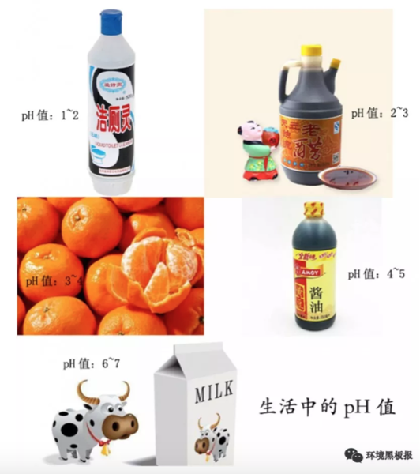
酸雨对于环境的危害包括森林退化，湖泊酸化，鱼类死亡，水生生物种群减少，农田土壤酸化、贫脊，有毒重金属污染增强，粮食、蔬菜、瓜果大面积减产，使建筑物和桥梁损坏，文物面目皆非。早在十几年前，当我刚刚进入环保门的时候，到处都在说酸雨问题，酸雨问题就是教科书里最典型的反面材料。经过多年的治理，现在我国酸雨问题又处于什么样的状态呢？
3.24.1 我国酸雨现状
我国酸雨污染主要分布在长江以南-云贵高原以东地区，主要包括浙江、上海、江西、福建的大部分地区，湖南中东部、重庆南部、江苏南部和广东中部。2015年，酸雨区面积约72.9万平方千米，占国土面积的7.6%，比2010年下降5.1个百分点；其中，较重酸雨区和重酸雨区面积占国土面积的比例分别为1.2%和0.1%。我国酸雨面积已大幅下降。

除了酸雨面积逐渐减小，降水中的成分也在发生变化。降水中主要的阴离子为硫酸根和硝酸根，硫酸根离子含量是硝酸根离子的2~4倍，酸雨类型总体仍为硫酸型。2010年以来，我国降水中的硫酸根占离子总当量浓度百分比基本呈现逐年下降的趋势，并且下降趋势较为明显。

酸雨属于二次污染物，大气中的二氧化硫和氮氧化物为其产生的主要前驱体。大气中二氧化硫和氮氧化物的来源分为自然源和人为源，自然源包括海洋雾沫、生物分解、火山爆发、森林火灾、闪电等，人为源是煤、石油和天然气等化石燃料燃烧。因此，控制酸雨问题，就要减少二氧化硫和氮氧化物人为排放量。近五年来，我国二氧化硫和氮氧化物的排放量逐渐降低。

3.24.2 我国为控制酸雨所采取的政策措施
早在1852年，英国化学家史密斯发现曼彻斯特地区的雨水中含有硫酸，20年后，他首次提出了“酸雨”一词。上世纪六十年代，欧洲设立了大气化学监测网，发现欧洲大陆存在大面积的酸雨。针对酸雨问题，我国从20世纪70年代末开始进行酸雨监测，1982年，我国建立全国酸雨监测网，80年代中期开展了典型区域酸雨攻关研究。
1988年，制定的《大气污染防治法》中规定：推行煤炭洗选加工，降低煤的硫份和灰份，限制高硫份、高灰份煤炭的开采；划定酸雨控制区或者二氧化硫污染控制区，在控制区内排放二氧化硫的火电厂和其他大中型企业建设配套脱硫装置；逐步对燃煤产生的氮氧化物采取控制的措施。随后分别在1995年、2000年和2015年，对《大气污染防治法》进行修订，每次修订，都对二氧化硫和氮氧化物减排都提出更高的要求。
2000年后，国务院和有关部门颁布了一系列规定，《中华人民共和国国民经济和社会发展第十个五年计划》、《火电厂烟气脱硫关键技术与设备国产化规划要点》、《燃煤二氧化硫排放污染防治技术政策》、《关于加快火电厂烟气脱硫产业化的若干意见》等，采取了一系列措施，如依法划定“禁煤区”、强制改用清洁能源、限期关停小火电机组、关闭非法和布局不合理的煤矿等。
近几年，国家密集出台了系列大气污染防治相关的政策类文件，大力推动大气污染防治工作，有力地促进二氧化硫和氮氧化物的减排工作。
2014年，《燃煤锅炉节能环保综合提升工程实施方案》继火电行业大幅提高排放标准后，首次针对非电行业燃煤工业锅炉的提标改造提出要求。
《煤电节能减排升级与改造行动计划（2014-2020年）》（简称“计划”）规定东部地区新建煤电机组大气污染物排放基本达到超低排放限值：二氧化硫和氮氧化物排放浓度分别不高于35mg/m3、50mg/m3（基准氧含量6%条件下）。
《中华人民共和国国民经济和社会发展第十三个五年规划纲要》（简称“纲要”）提出对二氧化硫和氮氧化物继续实施总量控制。“纲要”还提出燃煤锅炉脱硫脱硝改造、钢铁烧结机脱硫改造、水泥窑脱硝改造等重点工程。
截止2015年底，我国火电脱硫脱硝装机容量比例已分别达到总装机容量的99%和92%；钢铁烧结机脱硫设施安装率达到88%；新型干法水泥生产线脱硝设施安装产能也达到16亿吨。对于未来，火电超低排放改造、燃煤工业锅炉大气污染治理、非电重点行业脱硫脱硝及第三方专业化治理等方向将成为“十三五”二氧化硫和氮氧化物的减排工作的重要趋势。
纵观我国40年的酸雨治理历程，我国在控制酸雨问题上，取得了骄人的成绩，也积累了丰富的理论和实践经验，对当前开展的治理臭氧、黑臭河道等其他环保问题有重要的指导和借鉴意义。坚信在不久的将来，我们的生态环境一定会实现“天更蓝、山更绿、水更清”。
参考文献：
1中华人民共和国环境保护部，2000~2016中国环境状况公报[R]
2宋国君，周莉，中国酸雨控制政策分析[C]，2008年海峡两岸沿海区资源、环境与永续发展学术研讨会，台北，2008.
3尚光旭，司传海，刘媛，“十三五”除尘脱硫脱硝行业政策导向及发展趋势[J]，研究与探讨，2016:21-23.
42017年中国脱硫脱硝现状及发展趋势预测[DB/CD]，中国产业信息网，2017.
作者：远方老友 校稿：周宁，爱杯子的王小咖 编辑：智公子
3.25 跟天气预报相比，空气质量预报难多了
3.25.1 前言
近年来，秋冬季节重污染天气频发，如何有效地应对重污染天气成为环保部门的一项重要工作。建立在环境空气质量监测及预报的基础上的重污染应急预警和大气污染防控是应对重污染的主要手段，因此，环境空气质量预报工作正逐步成为环保部门的核心业务之一。
2013年国家颁布实施《大气污染防治行动计划》（也称“大气十条”），其中明确提出重点区域和重点省市需要建立重污染天气监测预警体系。目前中国环境监测总站以及各省市按照“大气十条”要求，陆续开展了空气质量预报工作，2014年，京津冀、长三角、珠三角区域已完成区域、省、市级重污染天气监测预警系统建设;其他省(区、市)、副省级市、省会城市也于2015年底前完成了监测预警系统建设，正逐步形成区域大气污染防治协作新格局。
目前，在国家、省、各市的空气质量预报信息发布平台上可以查询到24—72小时各城市的预报信息。环境空气质量预报为公众的生活和出行可提供合理的建议，正如天气预报预测明日有雨，大家出门会带雨具一样，当空气质量预报预测到重度污染时，大家可以尽量减少户外活动，或出行使用公共交通工具，为污染减排贡献力量。

3.25.2 环境空气质量预报的关键技术是什么？
环境空气质量预报是一项极其复杂的系统工程，目前对空气污染物浓度预报的方法有两种: 统计预报和数值预报。统计预报是指利用空气质量和气象参数等历史观测资料建立大气污染物浓度与气象条件或非气象条件间的相关性、趋势性、延续性等统计关系，建立拟合方程或统计模型，从而外推得到对未来空气质量的预报结果。数值预报依赖于源清单、大气动力过程和化学机制等，通过对气象、物理、化学、地理等多学科耦合研究，建立空气质量模型，对多种大气污染物在内的不同尺度下不同类型污染过程进行模拟预测研究。目前国内常用的数值模式有CMAQ、WRF-CHEM、CAMx、NAQPMS 等。统计预报属于经验模型而数值预报属于机理模型，两者可独立运行也可综合评判。
目前，各区域、省、市建设的环境空气质量监测预报预警系统不是单纯依赖一种预报方式或者模型产品，大部分是综合了统计预报和数值预报两种方式，而其中数值预报也是集成了多种数值模式。这是由于各个模式专业性较强，且预报结果各有不同，综合各个模式的预报产品可以有助于预报员做出更为准确的预报。
3.25.3 哪些因素会影响预报准确性？
环境空气是开放的大气环流系统，风云变幻，时刻进行着物质的交换和污染物质的输送，这就给环境空气质量预报的准确性增加了难度。环境空气质量预报主要依赖于模式产品，综合分析大量监测数据以及气象数据，应用多元线性回归、人工神经网络以及化学-动力耦合模式等方式得到预报结果。其中，影响预报结果准确性的关键因素有以下几方面。
- 历史及实时环境质量监测数据
预报是要建立在已发生事件的基础上，空气质量预报则是要以历史监测数据为基础。通过将大量历史监测数据导入到系统中，为空气质量预报提供了必要的大气化学环境初始浓度场数据，通过模式对历史数据进行运算分析，寻找污染物变化的规律；同时导入实时的环境质量监测数据，对预报产品进行实时的验证以及对预报结果进行调试修正。因此，所获取的环境质量监测数据量越多、种类越丰富越有利于提高预报结果的准确性。
- 污染源排放情况
源清单是环境空气质量预报工作开展的又一基础，关注各类污染源监测数据的变化，有利于掌握大气污染物浓度水平的动态变化特征和可能的污染来源与贡献，用以判断局地污染源排放和邻近区域污染物传输变化的前期影响和后续影响，可不断提高空气质量预报的准确度。
目前大部分模型使用的还是较早之前的清单产品，这在预测未来空气质量时会有一定的误差，为了增加预报的准确性，需要实时动态更新本地源清单，因此在预报系统中导入了污染源在线监测数据，对本地的污染源的排放情况及时空分布有比较全面和准确的了解。另外在关注主要工业源、生活源、交通源规模及其季度变化的基础上，还要在特定时间重点关注突发性特定污染源排放的后续影响，如春季频发的沙尘暴传输、秋季的秸秆燃烧传输以及节假日的烟花爆竹排放等。如上周起于西北的沙尘暴，影响了我国东北、华北等多个省市。

- 气象条件
气象条件对空气质量预报起到决定性的影响，对气象条件的判断准确与否，直接影响空气质量预报的准确度。我们经常说环保要“靠天吃饭”，这是有一定道理的，环境空气质量和气象存在着密切的关系，一切污染物的传输和消解都要依赖气象环境。好的气象条件利于污染物的扩散和输送，不利气象条件是重污染天气形成的外因，比如静稳、小风、高湿以及逆温等，会在排放基本相同的前提下加重空气污染，反过来大气污染积累到一定程度，颗粒物化学组分（如硫酸盐、黑碳和有机组分等）会对辐射有显著影响，在一定程度上导致大气扩散能力减弱，从而进一步加重污染。因此，为准确地预测重污染天气，环保部门应与气象部门密切合作，交换监测资料，对影响大气污染物扩散、传输、湿沉降和干沉降的大气条件进行较全面的预测分析。
- 预报员人工修正
预报员人工修订是预报工作的关键一环。多模式集成预报系统各个模式给出的预报结果往往是不一致甚至矛盾的，这种情况下就需要预报员通过分析未来几天数量众多的空气质量和气象图形及数据产品，比较不同的空气质量数值预报模式、国际主流气象机构和主要时次的气象产品，研判未来的气象条件，比如风场、温度、气压、湿度、降水、混合层高度等气象信息，充分了解当地污染源排放情况以及周边大气传输等要素，综合各种要素，并根据预报经验和大气污染规律，对预报产品进行缜密分析，最终人工订正未来几天内的空气质量等级和首要污染物。因此人工修订的工作对预报员的专业要求较高。
- 预报会商
预报会商一般是预报工作的最后一步，会商一般分为不同部门会商和区域会商，不同部门会商一般是环保部门和气象部门或者其它部门的会商，对未来几天的气象条件、污染源排放情况进行交换意见，最终得出一致的预报结果。当有重大活动举办或者区域性污染事件发生时，一般采取区域会商的方式，各地形成初步预报结果后，与区域和省级预报成员单位会商，最大可能避免预报影响范围遗漏，共同研判重污染带的扩展、传输和发展趋势，在现有条件下最大程度保障区域重污染过程预报的可靠性。

3.25.4 预测到重污染，环保部门怎么办？
环境空气质量预报的目的是应对重污染天气，当环保部门预测到有重污染发生时，及时发布预警和应急，采取有效的减排措施，把污染程度降到最低。大气十条明确提出环保部门要做好重污染天气过程的趋势分析，完善会商研判机制，逐步提高监测预警的准确度，及时发布监测预警信息，并制定完善的应急预案，落实责任主体，明确应急组织机构及其职责、预警预报及响应程序、应急处置及保障措施等内容，一旦发布预警，及时启动应急，并按不同污染等级确定企业限产停产、机动车和扬尘管控、中小学校停课以及可行的气象干预等应对措施，对工业源、移动源和扬尘源进行严加管控直至预警解除，对污染实施有效的防控。
在环保部《关于印发〈重污染天气预警分级标准和应急减排措施修订工作方案〉的通知》（环大气〔2017〕86号）中对于预警级别、应急响应、减排目标以及减排措施等做出了明确的规定，其中部分内容如下表所示。

重污染天气预警和应急是对重污染的严加防控，是防治雾霾污染的有效途径。环保部门准确预测空气污染的发生和变化趋势，便于政府部门及时启动大气污染应急减排措施，以最低经济成本实现最大的社会效益。环境监测数据真实有效，环境空气质量预报准确可靠，发布预警及时科学，应急措施落实到位，那么大气污染防治工作的开展也会越来越顺利。
近几年，环境空气质量预报工作在全国蓬勃开展，预报准确率在逐步提高。在总站的带领和组织下，对于秋冬季节京津冀区域重污染的过程预报准确率接近100%，区域重污染的程度预报准确率接近80%，为各级政府针对重污染过程提前采取预警应急和管控措施提供了关键信息和决策依据，也为APEC会议、G20峰会、青奥会、抗战70周年阅兵活动以及十九大会议等重大活动，以及春节、国庆等重要节假日提供了有效的空气质量保障服务，发挥了积极的作用。
参考资料
1.《大气污染防治行动计划》(国发〔2013〕37号).
2.《关于印发〈重污染天气预警分级标准和应急减排措 施修订工作方案〉的通知》(环大气〔2017〕86号).
柏仇勇，李健军,《环境监测预警在重污染天气应对中的作用与启示》, 环境保护, 2017(08): 45-48.
曲凯等, 《山东省环境空气质量动力统计预报系统》， 环境与可持续发展, 2017(01): 54-57.
王超, 《城市环境空气质量预报要点分析》， 黑龙江环境通报, 2017(04): 46-48.
作者：Amy 校稿：yufree，大石 编辑：李立平
3.26 作为入侵物种的人类
3.26.1 引言
如果让我列个书单，最偷懒的方法就是直接链接普利策文学奖的非虚构类获奖名单。一来这里面的作品可读性很高，也就是你不会有读维基百科或教科书的痛苦；二来就是主题都非常现实，毕竟是非虚构类，有利于从不同视角了解世界；第三个则是因为多数作品都很快会有中译本，毕竟啃外文原著需要些门槛。 其实这个书单里的很多作品例如关于逻辑的《GEB》、关于人类学的《枪炮、病菌与钢铁》、关于疾病的《众病之王》、关于历史的《拥抱战败》等都已经很出名了，但如果你不是那个领域的爱好者可能一辈子都不会去读，强迫自己读一个主题五花八门的书单有助于开拓眼界。这篇是关于《大灭绝时代》的，主题是关于第六次大灭绝。

3.26.2 灭绝
灭绝这个事吧，跟灭绝师太是没啥关系的，从历史长河看过去有5次大灭绝事件，最近的一次在地质学上创造了KT带并直接把恐龙给从地球上清理没了。关于灭绝一直有个说不清的问题是是否有周期性，支持者认为每2600万到3000万年会有一次，甚至有人构思出了一颗太阳的伴星涅墨西斯星，并通过计算认为冥王星轨道外的小行星赛德娜轨道就受其影响。
当然有支持者就有打脸者，NASA（美国国家航空航天局）不光是从观测数据上否定了这事，还认为从统计学上那个周期性也没啥意义。不过这也不是结局，熟悉天文测距就知道如果真有这么一颗伴星，别看离得近，还真就不好观测，另外也有地质化学的证据来说明周期性，这会是另一个很长很长的跨天文、地质、生物、化学、物理等学科知识的故事，我就不在这篇书评里跑题了。每次灭绝的不幸原因都不是单一的，而《大灭绝时代》旗帜鲜明地提出现在有第六次大灭绝，想必是有充足的理由来解释这个大字。
3.26.3 作为入侵物种的智人
现在一个普遍的共识是现代人类都源于16万年前线粒体夏娃跟14万年前Y染色体亚当，这个结论是从人类基因组中得出的，而且这个虚拟老祖宗在非洲。也就是说，现代智人的祖先都是从非洲过来的移民。当4万年前智人进入欧洲后，原住民尼安德特人就同步灭绝了，你说巧不巧，智人某些优势可能造成了这个结果，这个优势不是体力上的，因为尼安德特人比智人更强壮，更可能是智力上的。
另一个假说是我当年在历史书上看到的所谓多点起源，例如蓝田人、北京人等，从化石证据上看确实几十万年前是有人类就生活在世界各地的，但从基因角度看当我们的非洲祖先来到新土地上后显然进行了某种降维打击把原住民给灭绝了，当然现在也有证据说存在融合现象，我们身上也会有少部分尼安德特人的基因，不过不管怎么说我觉得我是活着看到了教科书上知识被分子遗传学大概率证伪了。然而，作为入侵物种的智人所真正引发的灭绝就像是原罪一样伴随着这个扩张。

3.26.4 巨兽
恐龙灭绝这个锅是不能怪到人类的，那个年代哺乳动物长得像小野猪，掀不起风浪。但我们这个年代巨兽是不是少了点呢？虽然没赶上恐龙，但我们的祖先跟猛犸象还有大地懒可是同一时期的，有意思的是，当我们祖先登上历史舞台后，他们也灭绝了。用更近些的历史来看，当人类来到一些纽芬兰岛屿后，我们成功吃光了一种长得像企鹅的大海雀。类似命运的还有渡渡鸟、恐鸟、苏门答腊犀跟大海牛，他们本来在各自的生境已经进化到了食物链的顶端，没有天敌，而且从演化上看越大越不用怕天敌。只是他们也许有生物背景但没有工程背景，没想到有个物种是不按套路出牌的，他们会用工具。然后，巨兽基本被吃光了。

生存策略在演化上有着自己的逻辑，当块头变大后繁殖速率会下降。同时，食物链顶端的生物数量也不会多，食物链富集能量的效率并不高，所以你很少能看到一个超过五层的食物链。最底端的是植物，最高端是巨兽，一只巨兽对应几平方公里的草原是很正常的，其繁殖速率也受限于这种层级能量供应，但一个小部落一年每个月捕获一只巨兽，一年就可以把方圆几十公里的巨兽灭绝掉。石器时代之前人类是搞不定规模化捕捉的，但农业革命一出现，就可以集团作战了，不过其实没等出现农业革命，巨兽就死的差不多了。我甚至怀疑农业革命的一个原因就是作为蛋白来源的巨兽的灭绝给逼出来的。巨兽灭绝生态系统就没了一级，其波动会改变物种多样性，不过农业出现直接把多样性给彻底消除了。如果我们可以灭绝所有的巨兽，那么我们就成了巨兽，蟑螂笑而不语。
3.26.5 二氧化碳
环境化学的一个核心考点就是水环境中的碳酸平衡来讨论碳元素的形态，但我学的时候确实没想过这个水环境往大了说就是海洋，更没想过的是当大气中二氧化碳浓度升高后，它们可不会老老实实留在大气里，直接溶解进海洋里变成碳酸氢根才是扩散路径。注意我说的是根，是负离子，对应的还有个氢离子，这玩意多了有个很简单的后果，水变酸。这个酸化跟酸雨那个完全不一样，那个酸度是二氧化硫，那玩意根本就不是空气主要成分，二氧化碳却是，溶解到水里引发的pH变化是很小的，但生态系统就是这么神奇，轻微的变动对很多物种而言就是灭绝。
从质量平衡上看，我们开采矿石燃料然后烧了，相当于把累计几亿年植物固定的碳元素用二氧化碳的形式又给释放出来了，每年海洋吸收的碳是25亿顿，什么概念呢？海洋表层水pH从8.2变成了8.1，这个变化广范试纸是测不到的，但如果我们按现在的排放能力排下去，这个世纪末会变成7.8。当然还是测不到，但要知道所谓高等生物的人类要想维持内环境pH稳定搞出了多少让生物化学家赖以生存的基金，海洋浮游生物可就没那么多设备了，直接溶解掉了。对，就是类似你把糖加到红茶里那样，溶解了。这里面最倒霉的就是所谓钙化者，也就是以碳酸钙为外骨骼的动植物，中学化学我们就知道，把酸加到碳酸钙里那反应很酸爽。钙化者要想得到碳酸根要从周围海洋中找，碱性环境里碳酸根是不缺的，酸化后情况就很不理想了，被多出来的氢离子变成碳酸氢根了。生命是个工程作品，原材料短缺什么后果，豆腐渣工程，但对于生化反应就是豆腐脑工程了。书中考察了一个海底火山，然后发现喷二氧化碳的那部分寸草不生，就是个死区。

也许有人说地质历史上肯定也发生过，确实发生过海水酸化，但地质历史的单位都是百万年计，也就是生物会有较长时间去进化出应对机制。现在的问题是人类正在用年计的方式释放千万年计固定的碳，这个速度生物进化是来不及的，来不及就灭绝，证毕。最常见的钙化者是珊瑚礁，早在失败的“生物圈二号”的实验中，研究人员就发现空气中二氧化碳的上升导致珊瑚礁被毁了，真实世界中，珊瑚礁要拼命生长钙化才能维持现状，如果原料不足，好比让驴拉磨又喂驴，结果就是珊瑚礁这种生物多样性丰富的生态系统可能会不断萎缩然后100年后消失掉。那个时候，我觉得如果人类还没作死应该会有人问《海底总动员》场景里的珊瑚是不是远古生物了（确实是，不过刚刚灭绝掉了）。
3.26.6 交通
非洲爪蟾是一种模式生物，我原来在中科院就有养的，用来指示环境内分泌干扰物。原因很简单，非洲爪蟾对激素敏感，如果给它注射孕期妇女尿液，几小时就会产卵。因为这个特性，它们被带到世界各地。同样命运的还有北美牛蛙，他们周游世界则是因为好吃，当然是人觉着好吃。但这两个物种身上都有一种真菌，这个本身对它们无害，但当来到新世界后，直接灭绝了南美的巴拿马金蛙。《枪炮、病菌与钢铁》中钻石教授说传染病把美洲原住民灭绝了，这是从人类学角度，从生物视角看，交通工具的出现能灭绝的绝不只有原住民，所有物种都遭殃。当然，很多发生与正在发生的事我们可能没意识到也不关心，甚至也会争论责任问题，但影响是很客观的，我不清楚人能否竟做好准备去应对这些未知影响。很多繁荣与灾难没有发声系统，知道自己不知道是个很重要的态度。

3.26.7 多样性
多样性目前是在锐减的，当然原因很多，但人类活动肯定是很重要的一部分。生态系统达到平衡态时会产生很多狭窄的生态位，这些位置很特殊，如果没有外来干扰异常稳定，但只要有干扰就会对系统产生一个大扰动。书里面列举了很多这样的例子，特别是高山生态系统很多植物是不长腿的，气候变化过快它们无法转移然后就灭绝，好比所有人的体温同时升高1摄氏度，体内生化反应肯定乱套，你什么时候见过天天低烧还能正常生活的，限制的不是意志，而是勒夏特列原理。现在发生在自然界的好比同时升高了10摄氏度，生化反应直接会停摆，也就是死亡。
不过肯定有人会问这个多样性究竟对人类有多大价值，毕竟生命科学的发展让我们只要保存了基因就有可能重现多样性。这个视角下那些多样性会发现新药什么的观点就很单薄了，当前技术确实可以直接设计药物，仿生很重要，但不再是唯一选择。还有些人是从景观或美学角度出发的，我只能说他们一定没真正考察过生态系统，高尔夫场平整美观的草坪跟草原是两个概念。不排除有人真的热爱自然，但更多的人所向往的田园牧歌是不适合人居的，或许你在城市里很舒服，但野外的美你只能作为过客体会，相融进去是需要勇气的。本书作者其实是有点向往田园牧歌的，他笔下的多样性充满美感，我不反对也不鼓励这种方法，衡量多样性也许我们要去了解下另一个流派：硬绿。
3.26.8 硬绿
《硬绿》这本书观点田园牧歌派环保主义者（软绿派）是很难接受的。硬绿派是不相信模型的，他们认为软绿派对化石燃料的不信任或技术的不信任毫无道理。硬绿派不相信回归节省与原始会解决当前的环境问题，他们主张农业里使用转基因、发展核能并反对有机农业，他们的绿色体现在高效高技术的利用当前资源而不是回归原始，他们不去提倡融入自然而是直接划定保护区然后禁止开发，提倡先富裕解决贫困问题再关注环保，人是高于自然的。在这套价值观下，多样性就无关紧要，灭绝也只是个生物现象，就算物种都消失人类也能借助技术活下去，绿色是个高级需求得完成生存需求后才能讨论。

环境其实一直就是个伦理问题，人人平等是政治诉求但众生平等就是个伦理诉求了。很多环保主义者保护环境是相信环境中的一切有机体都与自己的人生一样重要，他们会为这个信念去身体力行。我所在课题组就有个哥们说自己不吃工业化生产的肉类，结果就是营养不良然后老老实实按照医生要求天天吃肉。他很爱大自然，喜欢野营、漂流与开车追台风，但他其实是喜欢那个喜欢大自然的自己而不是大自然，说到底硬绿就是为他们提供的理论武器。我觉得众生平等的含义是所有生命都跟你的生命一样不重要，都是这个行星的一个瞬间，因为同一瞬间能相遇，自然要平等对待，灭绝的事重要但并不需要一个硬绿理论来找理由。如果是人类导致了灭绝，那么并不意外，从走出非洲那一刻智人就满手鲜血。灭绝其他物种不需要什么情感介入，承担多样性缺失的后果同样不需要什么情感介入，因为与被灭绝的生物一样，我们都不重要，我们都是在面对生存问题而想多坚持的物种。但是，对于灭绝这件事人类不能视而不见，用理论麻痹自己拒绝思考原因是有害的。或许多样性对于人类实质上没有意义，但这个结论现在说有点早，先不要着急盖棺定论。
3.26.9 谁是赢家
在灭绝这件事上似乎所有参与者都是输家，物种正在快速萎缩，我们似乎也失掉了未来。作为入侵物种的人类似乎也难逃被其他物种替代或一同灭绝的命运，但其实如果不考虑我们自己是人类，这个游戏最后还是有赢家的。农业革命中我们驯服了农作物，但其实是农作物驯服了我们，所有的组织生产模式都成了为农作物基因延续服务。现在这个大灭绝活动又是谁在驯服我们？
现有药物中有近70%来自细菌、真菌还有植物产生的活性组分，从这个视角看，人类其实充当了它们之间化学战争的载体，把原来发生在土壤底层、海沟、火山口的局部冲突搞成了全球尺度的世界大战，也是这类物种基因全球化的执行者。盘尼西林等抗生素曾经是需要重新萃取病人的尿来给重复使用的，后来产量上来了循环就断了，然后自然环境中积累的抗生素驯化出了更强抗性的细菌，所谓特效药大概都是拿未来换现在。看明白了吗？赢家是我们在复制的基因，当我们自以为复制或创造出了为我们服务的基因去执行某个任务，实质上是基因的某种排列组合被超量保存了。所谓文明，不过是基因延续的手段。
3.26.10 小结
这本书揭示了一个现状：物种正在用自己反应不过来的速度走向灭绝，主因是某些环境因子的变化率超过了物种自身进化适应的机制，这个过程入侵物种出身的人类功不可没，当这个灭绝开始启动，终点就不知道在哪里了。我觉得现阶段人类没有阻止这个过程的能力，也不用虚伪地悲哀，众生平等但都无一例外是基因的奴隶。关于这一点，可以速度去读《机器人叛乱》。
作者：yufree 校稿：广播站王站长 编辑：智公子
3.27 作为工业品的人类
3.27.1 人口多少是个顶
在《人口原理》这本书里，马尔萨斯对于人口增长有两个基本假设，一个是人类生存靠食物，另一个则是人类的情欲不可消除。而食物的增长是算术级数，但人口的增长是指数级数。因此，人口的增长早早晚晚都会被食物的增长限制住。应该说这是一个非常社会物理学的推论，在当时也确实很有说服力，因为实证数据确实展示出了当人口增长超过农产品增长时，就会出现饥荒来降低人口；反之当农产品过剩后，人口会迅速增长且发展出繁荣的文明。前者几乎贯穿了整个人类农业社会，后者则几乎贯穿了现代社会。也就是说，现代社会开启了某种机制，这种机制保证了农产品可以不断地满足需求。

要知道，世界人口在出现农业之前没有超过1500万，农业社会出现后到第一次工业革命中的1804年，世界人口才达到10亿。之后的两百多年里，这个数字变成了70亿。但并不是说1900年达到40亿，事实上这个时间是1974年，甚至达到30亿都是1959年的事。数字归数字，10亿人口需要的食物可都得从地里长出来，从1959到2018这60年里，地球上多了40亿人口，配合现代医学对平均寿命的延长，每年张嘴吃饭的人可以说是几何级数在涨了。传统农业的生产率肯定赶不上，甚至都赶不上为人类提供肉食的畜牧业所需的饲料供应，这中间的绿色革命默默承担了所有的问题。
绿色革命就发生在世界人口快达到30亿的时间点上，最著名的案例就是墨西哥，墨西哥在1910年结束独裁统治后打了近二十年的内战，到了1956年，因为接受了发达国家推广的杂交小麦，农业上终于实现了自给自足。时至1964年，墨西哥甚至开始出口农产品了。也就是说，绿色革命实际上是农业工业化进程的一部分，农业机械、农药、灌溉系统甚至新育种技术都从底层推动了产量的提高。绿色革命革的是农作物，但动力其实是技术、煤炭、石油与钢铁而不是辛勤劳作，本质是农业工业化，后果就是发展中国家普遍在这个时期迎来了人口高峰，毕竟是养得起的。中国也不例外，不过那年代政治运动也产生了很深远的影响，这个就不细讲了。
3.27.2 人类是工业衍生品
但环境研究是什么时候开启的呢？大概是上世纪70年代左右起，不论发达国家还是发展中国家都迅速出台了环境保护的法规，学术界也开始认真研究环境问题。这里面《寂静的春天》与《增长的极限》对舆论氛围的形成起了关键作用，有意思的是，这两本书里提到的很多案例都有绿色革命的影子。《寂静的春天》大量使用关于农药滥用的案例而罗马俱乐部的《增长的极限》则回归马尔萨斯，认为地球资源会最终限制经济增长而引发了关于可持续性的讨论。农药是绿色革命的燃料之一而绿色革命对化石燃料这一自然资源的需求自然也会被经济增长限制。换句话说，绿色革命在解决口粮问题的同时也开启了环境科学相关研究的讨论。
绿色革命与环境保护背后的讨论实质上是关于工业而不是农业的讨论，作为农业的直接消费者，人类可以说就是某种意义上的工业品。农药生产的本源就是石油煤炭化工业提供的原材料，化肥的生产则牵扯到工业固氮与大量元素矿石的开采，农业机械则需要强有力的制造业支撑，这些过程对环境造成的影响不次于消费工业品与服务业产生的影响。而且很多影响就是灰犀牛式的，从我们开启这种发展模式就注定要应对相应的问题。这里我们讨论两个方面：氮循环与磷循环。自然界里可以说从来都不缺氮元素，空气里比重最大的就是氮气。但对于生物体中所需的氮，氮气实在是活性太低，要想创造更多的生物，活性氮就不可或缺。放到农业里，农作物要想长起来，碳氢氧氮磷一个都不能缺，碳氢氧通过自然界里到处可见的空气与水就可以得到，氮却需要别的物种，那就是固氮菌。固氮菌固然是种天然方法，问题是效率比较低，要求比较高，然后化学家就闪亮登场了，最著名的就是哈柏法，反应及其简单，用氮气和氢气在铁催化剂高温高压下就可以得到氨气，这就是活性氮了。氮气直接空气里就有，而氢气则可以通过水煤气或甲烷与水反应制备，就是这么几个简单的化学发应使得工业固氮进行了100年后，产量就超过了自然固氮。同样的，我们现在体内蛋白质里氮元素有一半也是这个反应制造的，追根溯源，我们自己就是固氮工业制成品的衍生品。
3.27.3 化肥的威力
且不论工业固氮的能耗，在化肥的使用里，氮肥的效率差距比较大。碳酸氢铵属于比较容易吸收的，但问题也容易分解成氨气跑了，江湖人称“气儿肥”。相比之下，尿素含氮量更高，但问题不是铵态氮，吸收效率不高且比较贵。硝态氮倒是不会变成气跑了，但硝酸根决定了含氮量比较低。这个低效率其实也没什么，如果用精耕细作的方式打理田地，化肥就会合理施用。然而，农业在发展中国家一般拿不到补助，经济上不如工业来钱快，这样现在很多人务农其实很豪放，也就造成了氮肥的滥用。中国用全世界7%的耕地养活约世界五分之一的人口是大家都知道的，但问题我们用了全世界化肥产量的35%。虽说平均主义害死人，但质量平衡上看，多用出的那部分就都成了污染源。
前面说了，工业固氮产品是氨气，但化肥里一般是硝酸根或铵根，铵根可以变成气态跑了，硝酸根可是强酸根，土壤中碱性离子很多是弱碱性，强酸弱碱盐的过量存留必然让土壤酸化。其实我国土壤酸化问题是很严重的，跟发达国家的工业硫酸型酸化不同，我国的土壤酸化大部分是化肥滥用导致的。这个影响其实非常恶劣，因为不同于工业三废，这个污染源的化肥还属于花钱买来的，长远造成的经济影响比短期利益大很多。但是你又不能强制农民合理施肥，这提高了劳动力成本，属于发展中必然出现的问题，本质上需要更健康的财富分配体系，公平合理的分配有利于共同福祉的实现。
然而除土壤酸化外，过量的活性氮释放到水环境里还会导致水体富营养化。富营养化并不是人造的，实际上，富营养化是生物对地球改造工程的一部分，在地质运动过后会形成天然的静态水体，此时水体中营养元素比较少，生态系统单薄。伴随风化与冲刷，地壳中氮磷可能被释放，这样水体就会适宜浮游生物生长，然后在水中形成健全稳定的生态系统，一般来说，淡水湖缺磷而海洋缺氮，生态系统规模被营养元素所限制。不过假如这个水体只进不出，生物质就会沉积，时间长了水体就会沼泽化，如果水分进一步流失甚至可以形成新的陆地。很多小区里建的人工湖或水库，时间长了几乎都会富营养化，不过还有更快的方法，就是前面说的滥用化肥。
当农田施用的化肥不能被有效利用时，这些营养元素很容易随雨水冲刷进入自然水体。对自然水体而言相当于补足了营养短板，同前面所说的人口一样，马上指数扩增。白天指数扩增，相当于无机营养有机化，充足有机质又推动了水体细菌生长，到了晚上没了光合作用，大量浮游生物会消耗水中溶解氧。这样就促进厌氧菌的生长，而水中原有生物也会因缺氧死亡腐烂，整个水体会发臭，最终变成死水。富营养化一个直观体现就是水华，当水面布满一层藻类时，这潭水基本就没救了。这种化肥滥用并不是发展中国家的专利，实际上发达国家的水体富营养化状况也并不好。用质量平衡的观点去看，我们工业固氮生产的活性氮必然要最终矿化或惰性化才能维持生态系统平衡，不过固氮是个生意但矿化氮没有经济利益，因此这部分只能靠天吃饭，如果超过自然承载力，对地球而言当然不会有什么影响，但人类水资源的处理成本就会上升，毕竟地表水是人类很重要的淡水来源。
3.27.4 有机肥怎么样
那么所谓有机农业是不是个好的解决方案呢？比如我们不用化肥，只用农家肥。好，我来问你，农家肥哪里来？自产自销理论可行但现实肯定不够用，最直接的来源是养殖场的动物粪便。养殖场动物粪便的源头是饲料，但其实要命的不是饲料，而是养殖时为了防疫加的兽药或抗生素，这其实是抗生素滥用的重灾区。同时动物粪便大都重金属超标（也是超量补充这种偷懒养殖策略导致的），这样的农家肥用出去且不论超低的肥效，光是附赠的抗生素跟重金属就够受的。你可以去搜一下新闻与论文，有机食品的重金属超标情况是很常见的，也不缺乏抗生素对农作物的生态毒理学研究。反正我个人对有机食品一贯不感冒，价格死贵不说，食用风险还挺高，北美这边很多超市专卖有机食品，在我看来只是营销手段与中产阶级的刻奇，只是所谓优质生活的象征与自我感觉良好，甚至起作用的就是自我感觉这部分。
3.27.5 人和磷污染
氮是可以固定的，那么磷呢？磷主要来自于磷矿石。不过这个说法也不准，大洋洲的瑙鲁出口的磷酸盐其实就是鸟粪，这个国家在澳大利亚买了一栋楼，准备鸟粪挖完了就举国搬迁，不过后来又给抵押出去了，现在矿开的差不多了只能靠给澳大利亚修建监狱过活，而且海平面如果上升，这个国家还有灭国可能，可以说是个现代版的复活节岛。磷元素的地球化学循环因为速度太慢事实上是不完全的，当我们不断开采磷矿石时，事实上是把陆地上磷给搬到海底沉积物里去了，一时半会是搞不回来了，这事倒也是绿色革命搞出来的。磷矿也用来做化肥，同样存在严重浪费，不过化肥不是主要污染源，动物粪便才是磷污染的大头。这跟氮污染并不一致，氮污染里化肥的比重是很高的，仅次于生物污染。磷污染里的关键问题在于磷元素利用率，而这个利用率是可以通过转基因或补充植酸酶来调节的，只要让猪鸡等生物的磷利用率提高，那么也就相当于可以减少用量。
磷元素排放的一个大头还在于人，现代社会给人提供了更多的衣着选择，要知道这多出来的几十亿人除了天天要吃饭还得穿衣服。而且现在一个人几十件衣服都很正常，同样也就造成了洗衣服的需求，而洗衣服是需要洗衣粉帮忙的，好巧不巧三聚磷酸钠作为一种助剂被用到了洗衣粉里来络合水中钙镁离子，辅助表面活性剂去污。人们在用洗衣粉时其实也没比用化肥强多少，都是过量用的，后果就是全随着生活污水排到自然水体促进富营养化了。不过也可以用酶来替代表面活性剂来去污，但酶本质上多半是蛋白，需要温度合适，洗衣粉不靠谱但洗衣液更适合含酶洗涤剂，不过这又牵扯到人们的生活习惯了，北美这边大都喜欢用洗衣液与烘干机，而国内洗衣粉与晾衣绳更多些。

3.27.6 结语
总之，我们要感谢绿色革命，没有农业现代化我们多半还被马尔萨斯陷阱所限制而根本没机会出现在人间。但绿色革命也带来了巨大的生存需求，仅关注两种元素的使用，人类的影响力就已经超过自然本身了。而且更尴尬的问题在于使用元素可能并没有污染问题，污染更多出在使用者对工业品的滥用上，这就成了个复杂的经济-技术-社会问题了。这就是很多环境问题的缩影，简单的政策或技术或宣传对于问题解决都是不充分的，而环境问题的复杂性更多是人性复杂性的体现，总想既…又…是不靠谱的，更常见的是按下葫芦瓢起来，而这就需要鸡尾酒式的组合拳了。
作者：yufree 编辑：丫头晚安
3.28 丛枝菌根真菌：“微”小生物，大有“名堂”
大家都知道豆科植物如大豆能够与共生固氮细菌（俗称根瘤菌）形成共生关系。根瘤菌能够固定空气中游离的氮（\(N_2\)），并转变为植物可以吸收利用的含氮化合物（\(NH_4^+\)）供给植物生长发育所需，同时又能够从豆科植物中获取碳水化合物，以利于自身生长和繁殖。其实，自然界中还有另外一种更为广泛的、能够与植物共生的土壤真菌，那就是丛枝菌根真菌（AM 真菌）\(^1\)。
3.28.1 AM真菌是什么？
AM真菌是一种单系球囊菌门真菌，其可以和70-90%的陆地植物形成菌根共生体。也就是说，如果你随意在路边发现一朵野花，或一些野草，顺便挑些根上来，碱煮后用染色剂（如台盼蓝，墨水等）染色后在显微镜下就有可能看到这些奇特的生物 （图1）。AM真菌与植物形成共生关系后，真菌菌丝能够侵入到植物根系内部，游走在细胞间，一部分菌丝进入植物细胞内部，形成一种像“丛枝”（arbuscule）一样的结构，丛枝菌根便得名于此。可别小觑这个特殊的结构，AM真菌诸多功能都与其息息相关。“菌根”一词源于希腊语“mycorrhiza”，意思是真菌（“mycors”）和根系（“rhiza”）组合体\(^2\)。

3.28.2 AM真菌“前世今生”
AM真菌和植物的共生关系是亿万年自然演化而来。故事可以从4.6亿年前说起，那时我们人类还远未出现，恐龙也没有开始称霸，一些原始植物只能在水域生长，而这些菌根真菌即已经出现了，它们很可能对于植物入驻大陆具有重要的作用 \(^3\)。大概过程可能是这样的：很久很久以前，一些藻类、植物等都在汪洋大海中生存，他们大多数只能“望陆兴叹”，因为陆地上没有充足的游离态营养离子供他们“食用”。其中有一些不“安分守己”的家伙总是跃跃欲试，一次又一次凭借着物理的力量“随风顺雨”（潮汐）来到陆地上。那个时候陆地上光秃秃的，可谓“前不见古人，后不见来者”。就在某个时候，旁边的AM真菌发来信号，“嗨，老兄，咱们合作吧”（信号传递），“我可以帮你吸收陆地上难溶态的营养物质（比如磷），开拓适宜你生存的沃土，你只需要给我一部分你的光合作用产物（碳水化合物），如何？”原始植物觉得：“互惠互利，好！（受体应答）”于是，二者开始合作，他们形成了明确的分工：真菌发展地下空间，为双方寻找矿质营养资源；植物拓展地上，利用阳光转化成碳水化合物构筑自己强大的躯体并传递一部分碳水化合物给真菌同伴。就这样，几亿年过去了，恐龙来了又灭绝了，“小强”（蟑螂）来了，猴子诞生了，人类诞生了，沧海变桑田……。他们没有“海枯石烂”，而是世世代代生存延续了下来。时至今日，陆地上的植物“老兄”已经发展成为成千上万植物群落，AM真菌也发展出了好几百种。
起初人类并未意识到植物根系周围还有菌根真菌这种微小的生物。1885年，一位叫Frank A.B.的德国人才发现植物根系上侵染的菌根真菌\(^4\)， 并命名为“mycorrhiza”。 九年后，Frank 又发现菌根真菌能够促进植物吸收氮素营养\(^5\)。其实最初的研究更多关注的是外生菌根真菌，并没有认识到AM真菌。直到1957年，Mosse B第一个观察到了AM真菌, 并发现其能够改善植物对营养元素的吸收\(^6\)。此后六十年间，AM菌根研究被越来越多的人所关注。笔者2015年曾去美国北亚利桑那大学参加第八届菌根大会，期间大咖云集，研究涉及菌根的方方面面，而以AM真菌研究最多。好不热闹！
3.28.3 AM真菌有哪些功能？
那么，为什么AM真菌研究能够获得如此多的关注呢？这源于其多方面的功能作用。

3.28.4 AM真菌与植物营养吸收
AM真菌最广为人所知的功能是帮助植物获取矿质养分（如磷，氮等）。比如，AM真菌依赖其合成的磷酸酶（碱性磷酸酶或酸性磷酸酶）促进土壤中难溶解态磷溶解，从而利于植物吸收。与此同时，根外菌丝也能够直接从土壤中吸收磷并转运给植物搭档。一直以来，学界认为AM真菌与植物搭档之间的磷传递是以碳水化合物的交换为前提的。这些碳水化合物主要是各种糖类如葡萄糖、蔗糖、淀粉等。但在去年（2017年），中国学者的一项研究发现，在AM真菌与植物的共生过程中，除了糖类，脂肪酸也是植物传递给菌根真菌的主要碳源形式之一\(^7\)。这些磷和碳水化合物的“交换”就是通过“丛枝”这一结构进行的\(^8\)。前面提到的AM 真菌促进植物“登陆”，也得益于AM真菌能够给植物传递紧缺的磷营养。其实植物与AM真菌二者的交易并不是互相忍让，而是时时刻刻在“斗智斗勇”，“谁都不愿意吃亏”。有研究称，菌根真菌与植物的交易是依据具体情况而定的\(^8\)。当真菌能够给以植物更多的磷营养时，植物也愿意把更多的碳水化合物馈赠给真菌。反之，如果植物发现AM真菌不能够供给足够的磷，其也在“盘算着克扣粮食”，给真菌搭档更少的碳水化合物\(^8\)。如果土壤中有大量的可被植物利用的磷营养，植物根系不需要AM真菌就可以获得足够的磷，那么植物就会调整自身策略，对AM真菌的入侵及发展进行防御，这样AM真菌就不容易侵染根系了。甚至有时候，如果给以植物更多的磷，已经形成的丛枝结构就会被迅速分解\(^9\)。
除了吸收矿质养分以外， AM真菌还有哪些功能呢？可别小觑，AM真菌“能耐”大着呢。此真菌还能够促进植物吸收水分，调控植物干旱胁迫相关的生理过程，从而增强植物抗旱性。此外，菌根还可以增强植物耐盐性，抗病害，并能够帮助植物适应众多环境污染物的胁迫，如重金属、有机污染物等。另外，庞大的菌丝网络利于改善土壤结构，促进团聚体形成。因而AM真菌在农业生产，污染土壤复垦及生态恢复中具有极大的潜在应用价值。
3.28.5 AM真菌与植物重金属耐性
重金属污染是工业革命之后带来的问题，一百余年来一直困扰着人类，而今在发展中国家（如我们中国）愈发严重。一些科学家发现，在一些重金属污染的土地上往往存在着菌根真菌。也就是说重金属胁迫并没有“杀死”真菌，它们勇敢的活了下来。科学家们把这些真菌分离出来，并在温室里面给植物接种。惊奇的是，大家发现重金属污染下（Cd, Cr, As, Pb, Zn, Cu 等）接种AM真菌的植物明显比不接种植物长得好（图3）。
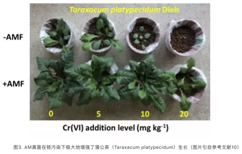
于是大家很感兴趣，这些真菌是如何作用的呢？笔者参与的一篇综述文章\(^{11}\)，详述了AM真菌对植物耐受重金属的作用机制。AM真菌通过间接作用和直接作用缓解植物重金属毒害。（1）间接作用：AM真菌通过扩大植物根系吸收范围，促进植物矿质养分的吸收（如磷和氮等的吸收），进而增加植物生物量，而植物生物量的增加往往稀释了重金属（表现为植物重金属浓度降低，称为“生长稀释”效应）；（2）直接作用：AM真菌直接影响重金属在土壤-植物系统中的迁移转化。AM根外菌丝直径仅有数微米，能形成发达的菌丝网络，进而吸附固持重金属。如笔者研究发现重金属铬主要聚集在丛枝菌根根外菌丝表面（图4）\(^{12}\)。此外，根内共生结构（根内菌丝、泡囊、丛枝等结构）也能够将重金属“区隔化”，阻止重金属进入植物细胞胞浆，减轻其对植物的生理毒害\(^{13}\)。此外，AM真菌还能够通过菌丝分泌物等影响根际微环境，进而影响重金属的化学形态和生物有效性。需要指出的是，作为一种富含脂肪族烯类和亚甲基的糖蛋白，AM真菌分泌物球囊霉素相关土壤蛋白（Glomalin-related soil protein, GRSP）\(^{14}\)对重金属具有较强的结能力(强化学络合作用)，因而对土壤重金属的生物有效性有重要影响。

3.28.6 AM真菌与土壤团聚体形成
土壤团聚体是土壤结构的重要组成部分，直径大约为0.053-10mm。其主要由矿物质/有机质及生物结合而成的一种有多孔结构的综合体。团聚体在稳定土壤碳库，促进根系发展，调节水分及养分可利用方面具有重要作用，是土壤结构功能评判的重要指标之一。AM真菌与植物形成共生关系后，能够在菌根周围形成庞大的菌丝网络，这些菌丝往往有4-5微米，能够进入到植物根系所不能到达的空隙中，与土壤矿物相互作用，深刻影响着土壤团聚体的形成。AM在植物群落/植物个体/菌丝等多个层面影响着团聚体的形成\(^{15}\)，其中菌丝的直接作用最为注目。例如，菌丝通过网捕作用将矿物及小团聚体聚集，通过影响微环境水分含量以影响团聚体的形成。菌丝分泌物（如球囊霉素相关土壤蛋白（Glomalin related soil protein, GRSP），多糖/铁载体及其他胞外聚合物疏水蛋白等等）能够作为胶粘剂与矿物或其他有机质作用，促使团聚体凝聚。其中一些主要分泌物如GRSP稳定性很强，可以存在甚至数十年，因而有利于维持团聚体的稳定。此外，菌丝及其生理活动能够通过食物链影响众多细菌群落甚至土壤动物的活动进而影响团聚体的形成和发展。
3.28.7 AM真菌与植物抗病性
AM真菌能够通过与病原菌竞争侵入位点或者宿主植物传递的营养物质来降低病原菌对植物根系的侵染。AM真菌同时能够增加根系分支，增强植物吸收营养能力，缓解因感染病菌造成的根系功能下降，增强植物营养吸收，调节根系分泌物合成，以及诱导植物病害预防体系，调控关键基因表达和激素合成来增强植物抵抗病害。此外，AM真菌能够通过影响根际微生物群落来抑制病原菌的发展\(^{16}\)。
3.28.8 AM真菌与植物耐盐及抗旱性
AM真菌通过促进植物吸收水分及矿质营养 （P, N, Mg 和 Ca等），减少盐离子（\(Na^+\)）累积，促进渗透调节物质（脯氨酸，甜菜碱， 多胺）以及碳水化合物及抗氧化物质的累积从而增强植物耐盐性。此外，AM 能够增强植物光合作用，调节气孔导度和激素水平（如脱落酸），调控水通道蛋白基因表达，维持细胞结构等，进一步增强植物耐盐性。\(^{17}\) AM真菌不仅能够促进植物吸收水分来缓解干旱胁迫，而且还能够通过促进营养吸收，调控脱落酸水平，调节植物抗旱生理生化过程从而增强植物抗旱性。\(^{18}\)
值得指出的是，AM真菌不仅在个体水平上促进宿主植物抗逆生长，而且在群落甚至生态系统水平上发挥作用。例如，研究发现地下AM真菌多样性会影响地上部植物群落多样性，进而影响生态系统结构和功能\(^{19}\)。
3.28.9 总结与展望
AM菌根研究发展到今天，共经历了一百三十多年，人们对菌根的鉴定由最原始的形态分析，到而今的高通量测序分析\(^{20}\)，由简单的元素及碳水化合物传递研究到而今的共生界面基因调控及信号转导研究，由单方面的营养吸收功能研究到如今的多功能多角度研究，由异位个体尺度的定性研究到而今的纳米尺度原位定量研究，由温室盆栽实验研究走向大田/区域/甚至全球尺度的研究。人们对菌根的认识，由模糊而逐渐清晰。就像对整个世界宇宙的认识（寻找“上帝粒子”与系外星球并存）一样，人们对菌根的认识也向微观和宏观两个方向发展。微观方面，调控菌根形成及功能的信号传导/基因调控/蛋白解析渐入佳境，而宏观上，全球区域尺度上菌根真菌多样性及其在连接地上地下生态系中的桥梁作用如火如荼。菌根虽小，但其研究涉及了各个学科/领域，如生物物理学/化学/遗传学/植物学/微生物学/地统计学/生态学等等，注定将继续在学科交融中蓬勃发展。而众多的基础研究注定会进一步揭开菌根不为人知的面纱，为其在生态修复和农业生产中发挥重要作用。
参考文献：
- Smith, S. E.; Read, D. J., Mycorrhizal symbiosis. Academic press: 2010.
2.Wu, S.; Zhang, X.; Chen, B.; Wu, Z.; Li, T.; Hu, Y.; et al. Chromium immobilization by extraradical mycelium of arbuscular mycorrhiza contributes to plant chromium tolerance. Environ Exp Bot, 2016, 122, 10-18.
Jermy, A., Symbiosis: Soil fungi helped ancient plants to make land. Nature Reviews Microbiology 2011, 9, (1), 6-6.
Frank, A. B., Uber die auf wurzelsymbiose beruhende ernahrung gewisser Baume durch unterirdische pilze (on the nutritional dependence of certain trees on root symbiosis with belowground fungi). Berichte der Deutschen Botanischen Gesellschaft 1885, 3, 128-145.
5.Frank, A. B., Forstwissenschaftliches Centralblatt Die bedeutung der mykorrhiza-pilze fur die gemeine Kiefer. Forstwissenschaftliches Centralblatt 1894, 16, 183-190.
Mosse, B., Growth and chemical composition of mycorrhizal and non-mycorrhizal apples. Nature 1957, 179, 923-924.
Jiang, Y.; Wang, W.; Xie, Q.; Liu, N.; Liu, L.; Wang, D.; Zhang, X.; Yang, C.; Chen, X.; Tang, D.; Wang, E., Plants transfer lipids to sustain colonization by mutualistic mycorrhizal and parasitic fungi. Science 2017, 356, (6343), 1172-1175.
Kiers, E. T.; Duhamel, M.; Beesetty, Y.; Mensah, J. A.; Franken, O.; Verbruggen, E.; Fellbaum, C. R.; Kowalchuk, G. A.; Hart, M. M.; Bago, A., Reciprocal rewards stabilize cooperation in the mycorrhizal symbiosis. Science 2011, 333, (6044), 880-882.
9.Parniske, M., Arbuscular mycorrhiza: the mother of plant root endosymbioses. Nature Reviews Microbiology 2008, 6, 763-775.
10.Wu, S. L.; Chen, B. D.; Sun, Y. Q.; Ren, B. H.; Zhang, X.; Wang, Y. S., Chromium resistance of dandelion (Taraxacum platypecidum Diels.) and bermudagrass (Cynodon dactylon [Linn.] Pers.) is enhanced by arbuscular mycorrhiza in Cr(VI)-contaminated soils. Environ Toxicol Chem 2014, 33, (9), 2105-13.
- 伍松林; 张莘; 陈保冬, 丛枝菌根对土壤-植物系统中重金属迁移转化的影响. 生态毒理学报, 2013, 8, (6), 847-856.
12.Wu, S.; Zhang, X.; Sun, Y.; Wu, Z.; Li, T.; Hu, Y.; Lv, J.; Li, G.; Zhang, Z.; Zhang, J.; Zheng, L.; Zhen, X.; Chen, B., Chromium immobilization by extra- and intraradical fungal structures of arbuscular mycorrhizal symbioses. J Hazard Mater 2016, 316, 34-42.
- Wu, S.; Vosátka, M.; Vogel-Mikus, K.; Kavčič, A.; Kelemen, M.; Šepec, L.; … & Michálková, Z.; Komarek M. Nano zero-valent iron mediated metal (loid) uptake and translocation by arbuscular mycorrhizal symbioses. Environ. Sci. Tech. 2018, DOI: 10.1021/acs.est.7b05516 (in press).
14.Rillig, M. C., Arbuscular mycorrhizae, glomalin, and soil aggregation. Canadian Journal of Soil Science 2004, 84, (4), 355-363.
15.Rillig, M. C.; Mummey, D. L., Mycorrhizas and soil structure. New Phytologist 2006, 171, (1), 41-53.
16.Schouteden, N.; De Waele, D.; Panis, B.; Vos, C. M., Arbuscular mycorrhizal fungi for the biocontrol of plant-parasitic nematodes: a review of the mechanisms involved. Front Microbiol 2015, 6.
17.Evelin, H.; Kapoor, R.; Giri, B., Arbuscular mycorrhizal fungi in alleviation of salt stress: a review. Ann. Bot. 2009, 104, (7), 1263-1280.
18.李涛; 杜娟; 郝志鹏; 张莘; 陈保冬, 丛枝菌根提高宿主植物抗旱性分子机制研究进展. 生态学报, 2012, 32, (22), 7169-7176.
- Van der Heijden, M.G., Klironomos, J.N., Ursic, M., Moutoglis, P., Streitwolf-Engel, R., Boller, T. et al. (1998) Mycorrhizal fungal diversity determines plant biodiversity, ecosystem variability and productivity. Nature 1998, 396, 69.
20.Opik, M.; Vanatoa, A.; Vanatoa, E.; Moora, M.; Davison, J.; Kalwij, J. M.; Reier, U.; Zobel, M., The online database MaarjAM reveals global and ecosystemic distribution patterns in arbuscular mycorrhizal fungi (Glomeromycota). New Phytol 2010, 188, (1), 223-41.
作者：松之映 校稿：广播站王站长，柴胡半夏苏 编辑：竹而乐
3.29 人人争用显著性，p值心事几人知
读论文结论时其实我们都在跟着作者的事实推理逻辑进行决策，而决策就会有对有错，这与事实或规律本身无关，只代表当下的认知水平。正是因为承认这一点，科研才不会纠结于错误，或者说科研就是在错误中前行的。
同样的数据是有可能得到完全不同结论的，这是个时间的函数，逼近而不是揭示真相。所以，在这个有决策的过程中错误是可以用概率来描述的，p值的流行很大程度上是因为它给了一个通用版的决策方法与阈值，但随之而来的就是两种可能性的错误，一种是假阳性，一种是假阴性。
所谓真假，必有对照，多数假设检验的空假设就是个对照基础，这个基础一般是一个分布或就是随机条件。大多数对这种判断诟病的根源也在这里，因为真实实验或观察中基线往往不服从分布或随机，为此统计学家提供了大量手段来平衡掉不随机的部分让随机成为基线，在此基础上进行的差异比对就是一个令人信服的相对正确结论。在结论的修饰语中，相对正确是理想化的，令人信服才是被发表出来的原因，多数人没搞懂这一点去解读文献其实是一种科黑。
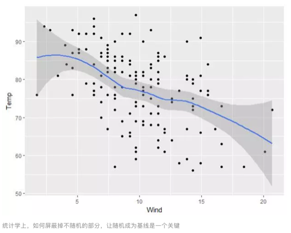
显然，平衡掉不随机的部分需要你事先知道这部分是什么，很遗憾，目前科研特别是基于观察的研究并不能事先知道。有时候科学研究就是想发现这些不知道自己不知道的东西，这种情况下基于p值或空假设的假设检验其实是不应该用的。
举例来说：你发现观测数据中A基因与甲疾病相关，但究竟是不是A基因引发甲疾病还是需要用控制变量来验证的，很有可能A基因与甲疾病同样被B基因调控，但你根本就没测B基因，所以研究本身就是不完整的。
那么通过组学技术知道的不知道的我一起去测不就完整了吗？也不是，当你测量数量增加时，假设检验的个数也增加了，此时你的p值阈值如果是0.05，那么10000个测量变量中会有500个即使随机测定都会出现差异的基因。去年有人建议把p值阈值设到0.005，但这根本不解决问题，只是把需要核实的数量减少了，虽然这也有一定意义。
10000个基因中有一个是真实的，你测定后按照0.05发现了501个，按照0.005发现了51个，也就是说需要验证的数量从501减少到了51个。但真实研究中，你会遇到0.05只发现了480个但0.005只发现了48个的情况，真实的差异由于效应量或造成的差异量不够大而被你的决策方法给漏掉了。也就是说，当你观察的问题效应不大时，p值有可能不管怎么调整都无法发现。这个锅不在p值，在于你要研究的效应效应太低而你用了不恰当的研究方法与假设来检验这个现象，通俗来讲，就是前期研究方法不当导致你无法发现问题，后续用什么样检验都无法找出真实原因。这类效应大小问题就是 type M 型错误，而只要你假设检验很多，这个问题就很难规避。
读博期间跟室友卧谈时我曾说过，现在只能相信强结论，也就是说无论你用哪种统计方法去进行检验，这个现象都是客观存在的，不会因为决策方法的变化而出现结论差异。不过这个提法现在看还是太理想了，因为强结论真的很强或显而易见，属于科研里低垂的果实，前人都摘的差不多了。如果一个现象足够强，p值一定会发现，贝叶斯方法也一定会发现，此时不存在效应大小问题。但更多的事实或规律是埋藏在当前认为的随机或噪音之中的，我们的分析水平也就刚刚好能把疑似信号与噪音进行区分，而这个区分是否靠谱则完全成了迷，统计学在这里帮不上忙，技术进步倒成了关键。我看到一些研究寄希望于数据挖掘技术解决学科内现象发现问题，这里我只能说对于显而易见但被忽视的现象是有帮助的，但对于高噪音数据，降低测量噪音对结论的帮助要远大于遴选能发现差异统计方法的努力。数据迷信会让你看到伪规律，而测量技术进步才会真的发现价值规律。我曾经也想把生活完全量化，但后来发现测量与传感方面的误差会让量化数据变成垃圾，大数据很美但也可能很虚。

另一个则是方向问题，p值经常是双边概率取中间那一部分，所以当你看到一个很小的p值时，你并不知道这个效应的方向是更大还是更小，此时你还是需要去看效应值。在这个情况下，如果报导p值不报道效应，那么就好比我告诉你明天要变天但又不告诉你变成什么一样毫无意义。在多数实验设计中，变化几乎是一定存在的，例如我敲掉了某个基因去验证功能，基因的变化与功能肯定有区别，大都来源于观察实验，更有意义的是影响大小，这个大小更多需要专业判断而不是简单的p值。如果理科学生学了半天最后就知道用p值来判断结论，那么这个学位不给也罢。这类搞不清楚效应方向的问题是 type S 型错误，验证性实验特别需要注意。
今天特意讲这个是因为我去年年底看了一篇论文，上面测量了很多种污染物的浓度，然后就对着很多健康指标进行了相关分析。这是一种多对多的结果遴选，在组学研究中也很常见，需要承认的是这是很多环境健康研究的惯用套路，然后只报道那些差异显著的结果。我将这篇论文转给了哥伦比亚大学的 Gelman 教授，询问他从数据分析角度有没有什么建议，他告诉我会在半年后在博客上公开回复这个问题（他档期真的很满）。然后这个月我看到了回复:
Gelman 教授认为1）显著性检验是不靠谱的；2）通过多层模型来减小M型错误影响（这是一种我认为很符合中庸之道的模型）；3）尽可能多的平衡掉已知效应。更重要的是， Gelman 教授指出这属于探索性分析而非验证性分析，对于结论不应该太过信赖。
这个回复是很中肯的，但一线研究人员能否理解并应用就不好说了。如果把对当今科研中的问题理解程度量化为“研商”，我想国内对于研商的培养是缺失非常严重的，从学生到老师职业功利性都远大于 对研究本身的理解，或者说我们缺少一个氛围。如果你去看 Gelman 教授的回复，你会发现博客下面的评论中引发了更多对科研成果报导、开放获取期刊等问题的讨论。而国内的科研博客评论里普遍理性讨论少，简单评价多，这个氛围的形成需要包括你我在内的一代甚至几代人的努力。
总结下：
除了假阳性与假阴性错误，科研结论中还存在效应大小错误与方向的掩盖。
p值对于后面两种错误的解决帮助不大，贝叶斯分层模型有助于问题部分解决。
强结论很美好，但同时依赖数据分析与测量技术，后者容易被忽略但更为关键。
研商是区别科学家与科研从业人员的重要指标，国内对此培养欠缺。
在线公开讨论问题对于问题的理解与解决是有帮助的，这是互联网时代的研究红利。
作者：yufree 校稿：广播站王站长 编辑：智公子，次要男主角
3.30 青蛙的科研之旅
大家好，我是一只热爱科研的青蛙。我的中文名是非洲爪蛙（曾用名非洲爪蟾），英文名South African clawed toad，拉丁名是Xenopus laevis。在受到科学家关注之前，我的祖辈主要生活在非洲撒哈拉沙漠以南地区，这也是我们名字的由来。我们在环境领域的出镜率不高，很多朋友不认识我，但是在发育生物学领域我可是无人不知的模式生物！在科技如此发达的今天，让我坐上时光机穿梭回到19-20世纪，带领大家回顾我的科研之旅。
3.30.1 从非洲沼泽地进入欧洲实验室
最初，我们生活在非洲撒哈拉以南的沼泽地、池塘或者河流中。时间定格到1802年，在一个浪漫的城市（法国巴黎）的自然历史博物馆中，一位文质彬彬的博物学家对着我们的标本观察了很长一段时间，他就是Daudin。他第一次向世人详细描述了非洲爪蛙的形态，为了纪念他，现在我们的名字后面常常缀有他的名字。匆匆一瞥之后，时光机把我带到十九世纪的大英帝国，我看到博物馆和动物园的研究人员正在对我们的身体结构和分类进行研究。这些研究，打开了我们进入科学殿堂的大门。二十世纪三十年代，英国的HogBen发现怀孕的哺乳动物尿液中的人绒毛膜促性腺激素能够促使雌性非洲爪蛙排卵，用于早期妊娠的诊断，于是将我们引进实验室饲养和繁殖，供医院使用。就这样，科研人员将我们从非洲沼泽地运送到欧洲实验室和医院，开启正式的科研旅程。

3.30.2 生物学领域的科研之旅
妊娠测试实验表明，通过注射激素可以随时诱导非洲爪蛙产卵，不受季节限制。这一发现为我们后来的科研之旅铺平了道路。我们的卵细胞非常大，在体外进行受精和胚胎发育，易于观察和操作，弥补了哺乳动物子宫内发育不宜观察的不足。从二十世纪五十年代开始，我们逐渐成为发育生物学研究的模式动物。1956年，荷兰发育生物学家Nieuwkoop和Faber合作发表了非洲爪蛙的发育图谱，规定了我们的“年龄”及每个年龄对应的形态特征，他们为推动我们在科研中的应用做出了重要贡献。发育生物学家利用我们的受精卵和胚胎开始了对脊椎动物发育机制的研究，如对胚胎发育组织者的研究，细胞核移植的研究，微重力环境下胚胎的发育，克隆动物等等。实际上关于动物早期发育的知识绝大部分来自我们的贡献。除了发育生物学，我们在细胞生物学领域也表现的游刃有余。科学家们利用卵母细胞外源表达特定蛋白，研究目的蛋白的生物学功能。除了构建卵母细胞表达系统，我们的卵母细胞也是研究细胞分裂和细胞周期调控的重要材料。随着分子生物学的发展，我们在生物学研究中的地位变得更加突出，1988年我们被美国国立健康研究院（NIH）评为基因功能研究的非哺乳动物最佳模型系统之一。为满足众多研究人员的需求，一些国家相应建起大的培育中心，像美国的Xenopus Express, Xenopus 1, NASCO；中国的生态环境研究中心正在建立培育中心。
3.30.3 生态毒理学领域的科研之旅
乘着时光机，我来到了二十世纪末，在一个年轻的科研领域启航。随着环境问题的日益突出和人类对其的重视，我们逐渐引起了生态毒理学研究者的兴趣，目前有越来越多的实验室将我们引入生态毒理学的研究。作为两栖动物的成员之一，我们一直被人类称为环境污染的“前哨动物”，这是因为我们对环境中的污染物非常敏感。在北美出现大量畸形青蛙的背景下，1997年美国NIH组织了一个专门讨论畸形蛙所暗示的环境问题的会议，讨论将我们引入生态毒理学领域中。在此之前，美国已经建立了一套以受精卵为受试材料的标准方法（FETAX），评价化学物质的早期发育毒性。

时光机带我来到Kloas教授的实验室，这是最早用非洲爪蛙研究内分泌干扰物的单位之一。我们的性染色体是雌性异型配子，自然条件下拥有ZW性染色体的受精卵发育成雌性，拥有ZZ性染色体的受精卵发育成雄性。然而，环境中的雌激素干扰基因雄性的性别决定和性腺分化，导致性腺异常，出现雌雄同体，甚至性别逆转为雌性。利用这一特点，我们曾用于检测环境中的多氯联苯（PCBs）、双酚A、任基酚等污染物的雌激素效应。美国Hayes教授也是较早用非洲爪蛙开展内分泌干扰研究的知名学者，他的团队发现阿特拉津的雌激素效应引起了热烈的讨论。我们在中国生态毒理学领域的应用，起步较晚，目前中国科学院生态环境研究中心的研究团队确定了雌性化发生的关键窗口期，并开展了深入探索雌性化分子机制的研究。
我们的变态发育直接由甲状腺激素（TH）调控。科研人员利用我们的变态发育可以反映出TH系统受到干扰的特点，筛查和评价环境中可疑的具有甲状腺激素干扰作用的污染物。美国科学家建议使用我们的尾吸收实验评价环境污染物的甲状腺干扰作用。美国的Yunbo Shi教授深入开展了肠重塑的发育生物学研究。生态环境研究中心的研究人员利用我们变态发育过程中的尾吸收、肠重塑、脑重塑的特征，建立了标准评价方法，系统评价了双酚A及其替代品的甲状腺干扰作用。

3.30.4 回到现代，展望未来
短短几分钟，和大家一起回顾了我们非洲爪蛙家族在两个多世纪的科研之旅：从非洲沼泽地到欧洲医院，再到世界各地的实验室；从简单的形态学描述到复杂的分子机制研究；从检测妊娠到检测环境中的内分泌干扰物。作为实验动物，我希望未来可以更多的被用于有益于环境健康和生态保护的科学研究中。
参考文献：
1秦占芬,徐晓白. 非洲爪蟾在生态毒理学研究中的应用:概述和实验动物质量控制[J]. 科学通报, 2006, 51(8):873-878.
2毛炳宇.非洲爪蟾:模式生物里的青蛙王子[J]. 生命世界, 2008(5):60-63.
作者简介：圆圆，环境科学博士，硕博连读毕业于中国科学院生态环境研究中心，现继续在本研究所做博士后。研究兴趣是环境内分泌干扰物对两栖动物的生殖和发育毒性及其分子机制。
3.31 投稿那些事儿
3.31.1 引言
做科研工作，总免不了需要发表文章，以呈现自己的结果，与同行共享，同时让更多的人了解最新的研究成果。其实科学发现和进步都是一直伴随着文章发表和著作出版。
文章， 尤其是SCI 文章，已成为全世界科学研究交流的重要组成部分。因此，SCI文章写作，投稿，发表等一系列过程成为科研工作必不可少的一部分。笔者从业若干年，也经历了一些文章的投稿，想分享一下投稿经历（要“班门弄斧”，勿喷！谢谢！）。实验数据得到后，整理数据，讨论，文章撰写等等在这里不做论述。在要投稿的时候一般考虑以下几个问题。
3.31.2 期刊选择
这是最重要的一环。首先必须选择合适的范围，否则容易浪费时间，走弯路。比如做污染物迁移转化，一般考虑环境口的期刊，比如ES&T，EP， Chemosphere， STE， ETC等，这些期刊一般关注化学过程多一些。如果研究是关于污染物与植物生理基因调节方面的，那么最好考虑偏植物生理方面的期刊，比如plant方面的， plant and soil， plant physiology， New phytologist 等。有些期刊范围会广一些，比如Chemosphere有时也会收录一些植物生理基因调控方面的研究报道。如果是水处理方面的，可以投EST，WR；环境健康方面，EST、EHP都是顶级期刊；如果是环境催化方面的，除了以上一些综合性期刊，偏化学或材料领域的综合性杂志也是可以投的，比如JACS， Angew，AM，再往下ACB，JMCA等等。其次，也要考虑自己做的东西的创新度和深度。有些时候，你投稿到一个期刊，然后很快会受到回信“I am afraid that a more specialized Journal is more appropriate for this article”，也许并不是真的不符合期刊范畴，而是编辑觉得深度或新意不够。
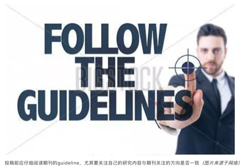
3.31.3 格式修改
选好期刊后，就是认认真真看几篇目标期刊上面类似方向的文章，了解写作风格，结构特征及格式细节。有时候，细节很重要，比如不同期刊参考文献格式不同，有些期刊不需要单独列出conclusion，有些期刊不需要写abstract等等。文章的字数很重要，尽量不要超限。有的期刊要求如果字数超限，而且无法缩减，需要详细说明原因。我之前的一篇文章把拉丁文写错了一个字母，弄得审稿人很恼火，明确在意见里提出来了好几次。那篇最后也是被拒了。Cover letter里面一定就是要写清楚文章的新意在哪里，为什么符合目标期刊的范畴，以及一些期刊明确指出需要提供的东西。比如ES&T要求作者投稿时要明确指出graphic abstract 中每个图片的作者，并同时把所有共同作者的名字，联系方式和单位信息一并写上；nature系统的期刊也要求说明图片原创作者。
3.31.4 投稿
投稿一般要花一些时间，有的时候需要半天时间，有的时候则需要好几天。不同的期刊系统都有自己的投稿网站，需要严格按照网站上说的进行，否则容易被撤回来。每个作者信息都需要认真检查，不能有差错。此外，一般期刊都需要提供审稿人，最好选择本领域的审稿人，如果选的太离谱，可能会引起编辑的注意和反感。然后就是一些细节，如实作答就是，这里不细说。
3.31.5 与编辑的交流
文章投出去后，然后就是等待了。相信投过稿的人，都有一种期许，希望能快出结果。这时候心态很重要。如果干等待，会影响工作进程。所以就未雨绸缪，何不利用这个等待时间继续自己的工作，酝酿下一个工作。投稿后，第一步往往是查重，格式筛查，字数检查等等，如果任何一项有问题，一般会很快收到消息，让修改。这个步骤，多数环境期刊应该比较快，一两个星期吧。但也有例外，比如我了解的Journal of Hazardous Material一般要等至少一个月才会出格式审查结果。这一过程通过后，文章会进入编辑手中，决定是否送审。文章到编辑手中后，如果超过半个月没有消息，那应该就是送审了。RSC的期刊一般一周之后没消息说明送审了，ACS的如果10天没消息也基本送审了。然后就是等待。现在很多期刊对审稿人的审稿时间都有时间限制，而且越来越短。比如，笔者曾经收到过Science of Total Environment的审稿邀请，要求15天内返回审稿意见。但有的就需要等待。据笔者的经验，貌似主流期刊的速度往往会快一些，因为审稿人重视。
一般情况下，如果三个月没出结果，是要催一催的，这都是情理之中，但措辞要注意态度，毕竟编辑和审稿人都是无偿做这项工作的，要尊重他们的付出。比如我之前投的一篇文章等了三个半月还没有消息，于是去信催稿：” Dear..， Sorry for disturbing you. I am not sure if it is the right time to contact you to inquire about the status of my submitted manuscript entitled “??” (ID:??)， although the status of “Submitted to Editorial Office” has been lasting for more than 3 months…I am just wondering if you could have a check on the progress of this manuscript?…”结果，没两天就来了结果，要求大修。
编辑收到所有审稿人意见后会根据意见来决定是“接收”，“修改后接收”，还是“拒稿”。一般比较好的期刊都会请3个及以上的审稿人，最少的也要两个审稿人。比如环境类的ES&T最少也是三个审稿人。如果三个审稿人意见都很正面，那么恭喜你，应该会有修改机会，如果其中有一个人意见比较负面，那么这个时候就看编辑的决断了。很多时候，如果编辑不了解你做的工作，就会选择拒稿。
以前投稿到一个期刊，收到三个审稿意见，第一个审稿人意见“Although， the rationale for the study is good， the particular experiments were reasonably well conducted， and there looks to be some new information generated by the study， the data were not appropriately analysed…”然后主要是统计分析不规范之类的；第二个审稿人意见“This is a good paper…. ”然后提了一堆小问题，第三个审稿人意见“This is an interesting， well written， manuscript…”然后也是一些小问题。编辑最后决定“Reviewers’ comments on your work have now been received. You will see that they are advising against publication of your work. Therefore I must reject it。我觉得这个判决有些重，因为这些问题都是可以修改的。这个编辑主要做植物细胞抗氧化系统的，并不涉及微生物-植物互作，也不关注污染问题。所以，笔者认为编辑自身对这个方向的认识决定了“拒搞”的结论。后来这篇稿子投到JHM，隔一个月回来字数超限，立即改完再次提交，然后进入审稿阶段。过了两个月，结果出来。“rejection”，“The reviewers indicate that the manuscript is not suitable for publication in terms of presentation， content， and description. As a result， I regret to inform you that your manuscript is declined for publication”只有一个审稿意见，感觉很草率的意见，只说四个重复太少，需要至少五个重复，然后说文章没有新意，再就是一些语句拼写问题。基于此，笔者认为这个审稿人并没有认真看论文。所以决定上诉。于是当天写完反驳信，回复审稿人意见，并向编辑提出要求更换审稿人的邀请，第二天发给编辑。编辑第三天就回复了，他把信件又转给了那个审稿人，审稿人这回又改口了“The authors did a good job of designing a well thought-out experiment… I may be mistaken but… it is not of great interest to other researchers，…My inclination is this topic is too niche and will have a “Low/No Impact” level of impact”据此，编辑认为“I am afraid that a more specialized Journal is more appropriate for this article”。很显然，这次审稿人和编辑都改口了，认为文章有新意，但没有影响力，所以不符合期刊要求……这个编辑主要关注化工污水处理过程，也会关注一些微生物，但主打是水污染处理，而我们做的工作是重金属污染与植物生理，领域不一样。编辑的看法再一次决定了文章的命运。之后，我们再仔细改了一遍论文，然后继续投稿到另一个期刊，这一次就很快，一个半月出结果“minor revision”，两个审稿人都对文章赞同，只提了一些小问题，修改后返回，第二天（周六）接收。这次的编辑是同领域方向的，关注土壤-植物系统重金属污染问题，编辑和审稿人都很认同这篇稿件，所以迅速接收。。
3.31.6 对结果的决定
上文已提出，结果一般会有三个，“接收”，“修改后再审”，“拒稿”。直接接收极其少见，笔者未曾见过。第二条“修改后再审”又分为好几种类型“Minor revision”“middle revision” “major revision”以及“reject and resubmission”。这四种类型都是给了修改机会的，只要认真修改，还是有机会接收。重点说一下第三种类型，当收到“reject”决定的时候，未免有些失落，但最重要的是看有没有可以提高的地方。有的审稿人会提出一些重要的意见，这对于后续发表非常重要。当然，如果就像我上问题出的那样，对审稿人的意见表示相当不满，那么就要提出来，反驳一下，争取一下机会。当然，一般希望渺茫，但并不代表没有。不管哪种情况，审稿人的意见或多或少都会对文章提高有所帮助，所以请抓住机会认真修改，然后迅速转移到下一个期刊。切记，不要在一棵树上盘旋太久。
3.31.7 后记
发表文章很重要，对于科研工作者来说，发表过程很曲折，但也是一个提升的过程。工作做细了，心态摆好了，文章写好了，投稿终归会有好结果。现今，在以SCI文章为导向的科研评价体系中，世界范围内论文数量与日俱增。发文章心态似乎也发生了变化，记得从前，人们都是做出了一定成果，比如屠呦呦发现了青蒿素，于是以“一种新型的倍半萜内酯—青蒿素”为题撰写论文并发表于《科学通报》（1977年第3期）。而今，貌似只要有结果就可以发，即使真正的成果并没有做出来。昨天看到一个院士写的一个文章，觉得句句戳中要害。文章题目为《以SCI为主导的论文挂帅扼杀了科技创造力》，发表在公众号“战略前沿技术”上面。作者指出“巨额投入带来了低产出，以SCI论英雄，论人才，论业绩，这类量化指标的局限性，欺骗性已开始暴露出来”。笔者认为SCI并不是无可是处，适当的SCI发表有利于科学的交流和传播，但过度强调SCI数量和影响因子，走极端化的评价道路势必会对科学的发展造成负面影响。
作者：松之映 校稿：yufree/公子小智/眼神防守 编辑：次要男主角
3.32 城市道路移动监测展望
3.32.1 前言
随着大气污染治理的日益深入，不仅社会成员对自身所在城市的大气环境越发关注，各部门对大气污染源的研究和监管也越来越细分。其中道路污染是引发城市空气质量问题的主要因素之一。城市道路的污染主要来自机动车尾气排放和道路扬尘。道路污染对大气污染的贡献已不容忽视，北京最新一轮PM2.5源解析结果表明，北京市当前本地大气PM2.5来源中，机动车等移动源占比最大，达到45%。

但是目前道路污染依旧存在许多悬而未决的问题。例如其他地区道路污染对环境影响尚缺乏有力的数据支撑；“机动车限行”的效果如何？对降低城市污染物浓度的贡献度具体有多大？另一方面，从道路抑尘的角度来看，为了保障秋大气污染防治工作，多地开展道路抑尘工作，如何将抑尘工作做到精准有效？能否有一个系统可以为工作人员提供准确的指令，例如应该在哪里采取抑尘工作？什么时间抑尘？抑尘频率和抑尘方式是什么？除此之外，随着物联网、大数据应用的不断完善，服务于交通的大数据越来越多，然而融合环境空气质量的交通大数据并不多。如何建立环境交通大数据，并且如何基于获得的数据开展道路排放的精细化管理？基于以上这些问题，“城市道路移动监测网络”的概念应运而生。
3.32.2 概念
移动监测，即利用社会化资源，在移动车辆上搭载空气质量传感设备，增加城市空气质量监测网络的密度。例如，将颗粒物传感器安装到了出租车上，数据通过无线传输方式，上传到云平台，在云平台上实现数据的展示与分析。或者以城市公交车为载体，将空气质量传感器安装到了公交车上，跟踪公交车路线上的城市空气质量变化，对城市的空气质量指标进行动态分析，指导城市空气的优化提升。美国德州大学奥斯汀分校(University of Texas at Austin；UT Austin)的研究人员在Google Street View街景车上配置传感器公司Aclima快速响应的空气质量传感器，期望透过每天到处移动的Google街景车收集高质量的空气污染监测数据。
3.32.3 优势
更新频率快：移动监测可以早到秒级数据监测。
监测范围广：车辆所到之处都可以检测到。
在线时间长：监测时间可以做到全天候，道路监测时间与车辆运营时间一致，车辆停止时，又可以作为固定点进行监测。
3.32.4 应用展望
通过移动监测，可以及时发现局部道路污染源并报警，同时还能绘制出整个城市的污染物分布图，为大气污染管控提供了科学高效的管理手段。
- 环境质量管理
移动监测可以整合道路影像监控及行车记录仪数据，看到整个城市的全貌，随时调取城市中任何一个地点的空气质量实况。充分利用社会资源，鼓励更多的车辆加入到城市移动监测的行列中，可以对任一附近车辆进行“派单”，前去污染事发地确认现场情况。这就是移动监测的优势所在，可以深入到城市的任务一个角落，现场考察和取证。可以实现街区道路空气质量排名、污染溯源分析、内源定位分析、区域热点分析等多项数据分析。
- 环境污染源管理
为了贯彻落实大气污染防治工作要求，各地方纷纷出台道路运输扬尘污染治理方案，采用多种措施进行监察和整治。但是扬尘管理的效果如何呢？移动监测能够以秒级的监测精度收集全市各条道路上的空气质量数据，从而绘制出不同时段、不同车辆的扬尘浓度曲线，对道路限行效果进行评估；同时能够通过监测数据分析出道路扬尘规律，指导抑尘工作；还能对道路段进行污染排名和考核，有效地将道路交通扬尘治理工作制度化、规范化、常态化。
- 交通精细化管理
有了城市移动空气监测网，从环境管理的维度上丰富了交通大数据，可以分析出道路拥堵状况和空气质量之间的关系，可以对限行效果进行评估，从而进行道路限行方案优化。为交通管理方案的计划与实施提供数据支持。

- 数据开放共享，建立大数据生态
城市移动空气监测网获得的交通环境大数据，不仅可以用于自己城市的空气质量分析，还可以将数据共享开放给需要的机构和个人。为科学研究和个人生活提供便利。
移动监测有在道路环境监测方面有很大的优势，不过目前是只是作为环境大气监测的补充，在数据分析和推广应用方面还需要一定的努力，笔者相信，通过技术的进步，以及数据应用方面的扩展，移动监测最终会在道路空气质量管控以及人体暴露量评估等方面发挥更为重要的作用。
作者：大石 校稿：次要男主角 编辑：栟
3.33 潜在身边的环境危害：噪声
北京小伙伴九月份的朋友圈很多被蓝天幸福感霸屏，直至今日，北京的空气质量仍在刷新连续优良记录。这可能会给大家一种感觉，北京的空气污染治好了！但由于三、四、五月份雾霾加沙尘的肆虐，并随着十月份后秸秆焚烧、秋末供暖的开始，今年空气质量的整体情况如何还尚未知！ 人们现在关心呼吸的空气（大气污染），喝的水（水污染），吃的食物（土壤污染），其实360度的环境可不止这些，比如灯光，人工白昼会伤害人的眼睛和皮肤，也会影响到其他物种的生活规律，比如电磁辐射，能够紊乱我们的中枢神经系统。
今天我们来说说另一大环境公害：噪声。
3.33.1 噪声的污染现状
噪声是指人们不需要的声音，或者说凡是妨碍到人们正常休息、学习和工作的声音，以及对人们要听的声音产生干扰的声音，都属于噪声。对声音的感受因人们年龄、职业、时间、所在地点及状态和心情的不同而有不同的主观判断，“小楼一夜听春雨，深巷明朝卖杏花”，“二十四桥明月夜，玉人何处教吹箫”，这些熟悉的声场景诗人觉得很美很有生活气息，但如果你楼下广播着“小店清仓甩卖，二十元一件”，你会觉得聒噪。

空气越来越好，水质逐渐改善，土壤开始修复，接下来民众会关心哪些呢，按照我们新时代的说法，人们群众开始追求美好生活，关乎民众日常生活质量的噪声污染问题应该会逐渐引起管理层关注。数据显示，噪声投诉历来比例较高，且一直是管理部门面临的一个问题，在2017年中国环境噪声污染防治报告中提到2016年全国环保投诉119万件，其中噪声投诉52.2万件，占比达43.9%。像海南等地，噪声投诉比例高达70%。
3.33.2 噪声管理存在问题
但是为什么管理部门一直不下决心整治呢，有人调侃说噪声跟空气不一样，是可以享受特权的一个环境要素，比如有钱人或者有权人住的环境比较优雅，没觉得吵，所以上层的关注度不够。哈哈，我觉得这是一方面，另一方面，噪声污染有其特征如即时性、分散性、反复性和不确定性，确实不好管，除了一些典型的噪声源如道路、地铁可以加声屏障进行隔声处理，其他尤其是社会生活噪声，突然很吵，但是管理部门过来，它停了，无法追溯责任了。

再者，噪声法律法规存在一些问题，其实噪声污染由来已久，在二三十年前与水污染、空气污染、固废污染并称四大环境公害，1997年时我国正式实施《中华人民共和国噪声污染防治法》，与《中华人民共和国大气污染防治法》不同的是，后者从1988年正式实施以来，分别在1995年、2000年和2015年进行过修订，而噪声法未进行过修订，目前法律约束在一些方面已经无法满足管理需求或者说民众要求，比如处罚标准不明确，噪声污染损害赔偿不便操作。
另外法中第六条规定的管理部门职能划分上，并不够全面且过于笼统，多头管理、错位和缺位的现象较为普遍，虽然规定环保部门对环境噪声污染实施统一监督管理，但根据其他的法律法规，规划、建设、工商、文化、城管、质检以及公安、交通、民航、铁路等部门也对环境噪声污染具有一定的监管职能。
发达国家在噪声污染治理方面先行先试，取得了不错的成效，最主要的经验就是加强立法并制定严格的标准体系，有比较明确的职责部门，且高昂的噪声罚款使污染主题充分落实主体责任，自行开展噪声监测并执行标准要求。另外政府依据噪声法律和标准进行城市的规划建设，环境影响评价执行到位，这在我国实现起来较为困难，一是政府规划滞后，像北京首都机场到目前尚未确定机场周围飞机噪声环境标志适用区域，二是一些污染企业惟利是图，违规乱建，如一些地产开发商明知有公路规划建设，仍在附近建设住宅楼。
3.33.3 遇到噪声污染如何自救（民众的力量）
跟大气、水环境一样，声环境管理也需要一定的时间和空间，作为民众，在环境管理上的事情我们无法干预，自救有没有途径呢。或者说我们受到了噪声污染该如何处理，拨打12369吗，做过噪声投诉的同学应该知道，在12369平台进行噪声投诉时，会有明显的分类提示，某些污染类别环保部门是不受理的，比如别人家空调室外机太响，吵着你了，你找环保是没用的，这应该找公安部门。
今天给大家整理一下，如果遇到噪声扰民想投诉找谁。
首先你如果不知道谁是最终来帮你处理的，找12369是可以的，虽然有的内容环保部门不受理，但是会提示你找那个部门，就噪声而言，环保部门是总负责，其他部门各司其职。
城管部门：
1、基建工地噪声（晚22：00-次日6：00）
2、临街门面、道路、公共场地使用发电机、音响等设备产生噪声
公安部门：
1、商业经营过程中使用高音广播喇叭或者采用其他发出高噪音的方法招揽顾客
2、学校和幼儿园使用高音喇叭；市区街道、广场、公园等公共场所组织娱乐、集会活动使用音响器材发出噪声污染（如广场舞）；家庭装修、家庭音响等室内噪声
3、燃放烟花鞭炮噪声
文化、工商部门：
居民小区内及其周围小歌厅、茶座、棋牌室等产生噪音的经营场所。
其他类型的噪声一般都是环保部门在管了。一般工业企业、建筑工地施工、KTV音响归环保管。这里面有个问题，就是KTV、商店等的噪声，按照规定，放在店外（或者向店外播放）招揽顾客的喇叭产生的噪声归公安部门管理，店内噪声由环保部门管理。所以12369也提示了，有些类型环保只管一部分。
是不是投诉了就解决了问题了呢，如果效率真有这么高就好了，如果未能够解决问题，在我国我们常见的一种公众参与的处理方式就是聚众上访，这种方式一般是不提倡的，而且不一定有成效。在国外，比如美国对公众参与采取了法律保护，社会公众是噪声控制法的执法主体之一，美国公众可在任何情况之下，就噪声控制的措施提出质疑并加以干涉。

3.33.4 后记
总之，在我国，噪声污染形势较为严峻，噪声管理存在很大的提升空间，据笔者了解，生态环境部已经有意对噪声进行加大管理了，其中对噪声法修订已经在人大立项，虽然可能最终出台至少在2020年，但是前期的一些基础工作需要着手准备了，就环境监测而言，需要对监测技术规范进行调整，对推行噪声自动监测进行要求等等。作为噪声监测业务人员，也想早日感觉到宁静美好生活，人说去了东京能明显感觉比北京低几个分贝，安静的环境人不容易聒噪，生活舒适，产出也高。
俗话说，静下心来干事情。
作者：次要男主角 校稿：周宁，爱杯子的王小咖 编辑：丫头晚安
3.34 暴露组学的黎明
最近参加了西奈山医学院举办的第二届暴露组学会议，暴露组学从名词提出到现在大概过了10年有余，若从论文数量来看，大约从去年开始进入高速发展阶段。应该说今天的暴露组学大致处于20年前基因组学的发展阶段，方法还未成熟，标准尚未确定，不过都快成形了。
3.34.1 暴露组学是什么？
美国这边最早提出暴露组学的是美国国立卫生研究院，加州伯克利、埃默里大学都是暴露组学起步比较早的地方，西奈山医学院 2017 年成立了美国第一家暴露组学研究所，借助美国医学院间的网络来推动暴露组学研究。从参会情况看也是很多其他高校附属医学院过来的同行，相信在接下来的10年研究经费与成果可能出现井喷，现在都是天使轮。
暴露组学研究什么呢？这里的基本问题跟基因组学差不多，是关于健康的。基因组学认为一个人健康与否更多依赖基因，而且伴随测序技术的进步，针对个人的测序已经是可负担的了。但暴露组学认为人的健康状态除了基因外还要考虑表观遗传、蛋白组、代谢组与日常暴露，甚至还要考虑诸如地理位置、社会经济地位、肠道微生物组等的作用。总体来看，健康是目标，预测变量却非常多，很明显不是一个单因素模型。

暴露组学属于面向问题的高度综合性学科，基础包括但不限于统计学、生命科学、数据科学、社会科学、环境科学、分析化学、毒理学、公共卫生、医学、遥感、传感、自动化、信息科学等诸多学科，我们目前并不知道哪个学科更重要，但很明显任何一个学科都可能成为回答终极问题的短板，而且就我个人观点而言，几乎每一个学科都有短板且学科间交流壁垒不是一般的高。
3.34.2 目的性分析难题1：峰真实性问题
这里从环境分析化学与数据科学这两个学科来说下目前的问题。首先，当前如果要评价暴露水平，首先你得知道有什么，也就是目的性分析。但很遗憾，就暴露组学而言，我们并无法事先知道样品里有什么，所以更多研究是借鉴代谢组学的方法利用高分辨质谱来对未知物进行信息采集。信息采集的终点是色谱质谱峰，然而高分辨质谱全扫描的结果往往混杂大量源内反应形成的加合物、碎片或物质本身的同位素峰，这导致虽然我们可以同时收集上万峰，但形成这些峰的化合物可能只有峰数的十分之一且这些峰会共相关，如果你想讨论物质间的相关性而使用了峰数据，那么估计会有偏差。同时，峰识别的算法也通常对全扫数据很不友好，你会看到大量不应该被当作峰的数据被选成了峰，积分效果也是一塌糊涂，这一点从分析化学角度是不可接受的。
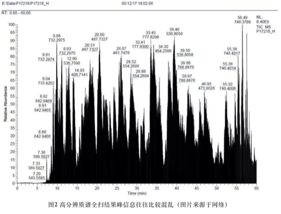
3.34.3 目的性分析难题2：峰解析问题
另一个问题是对未知峰的标注，现在流行的方法是先跑全扫筛出差异峰，然后把那些峰去打二级质谱，有的则直接对差异峰去标注。这里我们暂时不讨论气相色谱质谱联用的数据，因为一般硬电离模式下碎片的特异性还算好，甚至可以用来定性。然而，就液相色谱而言，如果我们不考虑APPI这种非主流电离源，一般来说液谱往往使用ESI或APCI源，这两种都算软电离技术，一级质谱几乎看不到太多有价值的定性信息，此时使用一级质谱定性是风险很高的，下游的通路分析会因此不靠谱。而且就算找到一级质谱的匹配，你也无法确认是否是同分异构体，而同分异构体的生物活性千差万别，更不用说当前主流数据库各搞各的，覆盖范围有局限性，唯一的标注也并不意味定性。二级质谱定性当前有很多软件可以做，但基本都是欠拟合状态，训练用的数据基本依赖可获取标准或社区用户共享，想做未知物十分困难。

这是当前主流物质数据库的覆盖情况，其实最大的三个物质库（PubChem/Chemspider/CAS）我没列，因为数据搞不到或搞得到但处理起来太费劲，最大的应该是CAS，有1.4亿种物质，当然我们能接触到的应该只是其中很小一部分。代谢组学里用的最多的应该是 HMDB ，不过暴露组学看来这都属于生物内源物质，外源有生物活性物质也有诸如 DrugBank 或 ChEBI 或 T3DB 的库，工业品也有 HPV 库等等，但这些还算是有信息可查的，有些物质最多能生成个 InChIKey ，别的啥资料也没有。目前能汇总整理这些信息的地方并不多，而且我在处理有些库的数据时发现他们的数据整理问题很大，格式不标准，如果不是专业人士光是数据提取就得懵圈。
3.34.4 目的性分析难题3：分析通量限制
另外，分析通量也是一个容易被忽略的问题。假如你的样品有100个，每个样品30分钟，加上质控样品后一个序列大概能到150，这就是3-4天的连续分析，色谱柱会老化，甚至质量轴都会漂，当然你可以不断去校准。但最后的结果就是即便不是分批测样，同一批内部都会存在明显的批次效应。我常看到文章里说都控制好了，实际这个过程其实很难控制，随机化序列在一定程度上可以缓解但很难消除分析通量带来的定量不准。
3.34.5 统计学分析难题1：模型的选择
即使分析上的问题都解决了，下面的问题就是统计分析了。用什么模型，为什么用这种模型眼下都没法进行检验，你也说不上哪个好哪个坏，其实都不怎么样。我看到过买几千个标品来检验的，但问题是你设计非目的检测是想测未知的，也就是标品根本不可能覆盖过来。而且统计模型的复杂性可高可低，一般来说，高了会过拟合而低了欠拟合，不是说不能一次性尝试几百种统计模型或机器学习模型，关键如何解释？线性模型与层级模型是两种最有解释力的模型，但预测性能谁用谁知道，直接上神经网络不是不行，就是不好解释。精巧的统计模型应对错综复杂的数据，难怪临床上喜欢多元线性回归。

3.34.6 统计学分析难题2：结构-性质关系
另一个相关问题是QSPR（Quantitative Structure-property Relationship），代谢物或暴露物有差异一般都要反推回结构，通常临床研究是有明确终点的，但环境研究可能没有分组或者说分组后并无法进行效应预测。这个角度看是可以用效应诱导分析来做的，但效应终点还是相对固定。此时可以借助QSPR来同时预测多个毒性终点，不过如何把荷质比转成结构，前面说了，一团乱麻。其实多个毒性终点也意味着不同的健康模型，那么问题来了，有没有基于多个健康模型的宏模型呢？回答这个问题只能依赖合作研究了，单一领域其实都没搞特别清楚。
3.34.7 结语
跟健康相关研究还有个问题就是无穷混杂因素，有的你知道例如年龄、性别、种族等，有的在建模时是忽略的，甚至根本意识不到可能是混杂因素。传统研究喜欢点对点做相关，组学研究是点对多做相关，健康研究的真相是多对多互相影响，控制实验当然是必要的，但如果数据是来自观测研究，那这问题就几乎无解，受研究共同体的视野限制。如果我们只关心那些强信号，可能忽略了那些弱信号，但这里的强弱是仪器决定的，不是生物学意义决定的。或许很多人的研究可以讲一个故事，但很难回答一个真实的问题。
前面说的问题只是现存问题的很小一部分，每一点的进展都可能对上下游研究产生颠覆式影响，对研究方法论的标准化、可重复化及与对基础研究进展的快速整合是必要的。或许十年后回看今天的暴露组学，很多人可能惊叹于为什么大量的资源被浪费在了毫无意义的研究上，不过这就是科研的现状，我们无法预知今天的愚蠢，但更重要的则是要意识到当前的问题。
处在新研究的黎明期即幸运也不幸，幸运的是大家起跑点都差不多，不幸的是只要你跑，摔跟头几乎是必然的。
作者：yufree 编辑：竹而乐
3.35 暴露研究的范式
我博士阶段侧重污染物环境过程研究，在博后阶段逐渐过渡到暴露组学，研究思路其实有了明显变化，形象点说就是从一对一到多对一，一对多然后到多对多，这里总结一下，反正以后也会忘。
一种污染物对应一种健康风险或毒性终点，这是环境化学与环境毒理学研究的基本问题。环境化学的起点之一就是重金属污染，《爱丽丝梦游仙境》中疯帽子的原型就是当年做皮帽所遭受的慢性汞中毒症状的工匠，在这里一种单一的污染物对应一种病症，但这种一一对应的污染物-毒性终点效应并不常见。例如一个点突变就能造成镰刀型细胞贫血，但更多的毒性终点或疾病并不是一个点突变就可以引发的。同理，对于环境毒理学研究而言，单一污染物引发独立疾病的情况也不常见，所以一对一研究在逻辑上虽然最清晰，但预测性很有限。一对一的研究范式目前还是主流，不论是构建毒理动物模型还是污染物迁移转化模型，这类研究很容易培养出某一污染物的专家，但这类专家视野会很有限。
一对一的环境化学研究范式基本就是针对某一污染物进行三间分布研究，也就是污染物的空间分布、时间分布与人群分布。如果深入一些会加入该污染物的结构类似物或代谢产物，但这类研究更多是调查性质的，结合物化性质研究其环境行为。如果有环境毒理学配合，就可以对污染物风险进行评估，例如QSPR预测、离体实验（例如肝微粒体模型、植物瘀伤组织、斑马鱼胚胎）、活体实验（例如小鼠与植物模型），主要研究剂量效应关系、组织分布及代谢还有毒理效应。但如果这个化合物没毒性那么强那么前期的环境化学调查就会非常尴尬，这倒是生态毒理学的一个来源，因为总能找到污染物影响。
单一污染物的毒性很容易做到死胡同，此时就要拓展污染物，从一种污染物扩展到一类或一组污染物，但健康终点还是一个，例如多溴联苯醚与多氯联苯还有双酚类污染物。此时就非常需要毒理学模型与环境调查的结果来缩小污染物清单，缩到那些确实有毒且环境介质中可以检测到的单体。在这里环境介质测到是相对容易的，但有没有毒就不容易说了。一方面毒性终点实在多的没法数，以人体为例，肝毒性、肾毒性、皮肤毒性等等靶器官可能不同，同样的靶器官里组织、细胞形态还有分子毒理都可能不一样；另一方面毒性还有个剂量与暴露途径问题，很多人喜欢用癌细胞来做污染物毒性，但很多污染物压根就过不了皮肤，没有暴露途径空谈毒性对实际问题的讨论没有太大意义。
多对一的研究伴随环境分析化学的发展而快速发展，现在同时测定多种污染物非常简单。然而，多对一的瓶颈在于多种污染物是否适合放在一个框架下讨论，因为理论上你随意找100种污染物去测毒性，总能找到一些有毒的，这不是说明他们真的有毒，而仅仅是随机性导致的。很遗憾，环境化学背景的研究人员对统计学的理解往往很肤浅，所以很多时候他们并不能正确解释实验数据，而是摘樱桃式报道那些有毒的单体，有的则简单套用QSPR预测结果来做并声明发现新兴污染物，采样地点也很讨巧地关注工厂附近或污水处理厂这类几乎一定会有检出率的地方。这样的研究可看作暴露研究但对风险的讨论往往比较有限，但配合后续的毒理研究则可以给出更多实际意义，不过坦白说没有流行性疾病研究支持的毒理学与环境调查如果遇到经费消减将会第一顺位被拿掉。
多对一的“一”通常需要一个很综合的毒理指标，例如致死率、ROS之类，多对一的高端技术就是在线效应引导分析，样品经过分离后切割，一部分用质谱进行定性定量，另一部分走96孔板做一些通用的毒性终点，这对仪器平台及自动化水平要求都很高。作坊式的小课题组通常采用离线技术，配合半制备色谱来分离富集疑似高毒污染物进行鉴定。效应引导分析一般都是环境浓度，所以省了很多后期实际意义的讨论，但也正是因为环境浓度，经常你什么结果都看不到。套用基因组学概念多对一就是基因芯片与表型关系研究，人体也就两万多基因，表型固定为一个，看哪个基因在搞事情。在暴露研究中可把基因替换为污染物，当然一种表型可以是某种疾病也可以是某种毒理学指标。我们经常看到某类疾病即可能是基因相关也可能是污染物相关，这里面就牵扯到先天还是后天问题了，我个人认为表型或风险是基因、环境与随机性共同作用的结果，比例不好说，三三分吧，我并不相信单一污染物会是某种表型或风险的银色子弹，逻辑性很强的东西一般现实中都不太好使。
一对多则是一对一在环境毒理学的延拓，此时毒性终点并不单一，而是用动植物活体模型或细胞模型仔细研究污染物的致毒机制。另一层意义上的一对多则是环境流行病学里生态学调查的研究领域，可以看某种污染物对人群中多种疾病的影响，这里面倒不能说多种毒性终点了，而是看你怎么对人群分类了，这类一对多对实验设计或调查问卷设计比较高，对统计模型要求也很高。一对多的经典案例是吸烟，除了肺癌，吸烟对喉癌、口腔癌、食道癌、膀胱癌、胰腺癌、肾癌及血癌的患病风险都有影响，所以现代流行病学里默认会把吸烟与否当成暴露研究的协变量，与之待遇类似的还有年龄、性别、BMI等。一对多在基因组学里有但不常见，不过一些经典通路的激活几乎是很多毒性终点的必经之路。
多对多是目前暴露研究的终极目标，复杂性极高，逻辑性很差，通常找不到单一理论来概括。多对多的第一个多是非目的分析，旨在找出样品中所有内源代谢物、标志物与外源污染物；第二个多则是暴露风险的多样性，这里也没有预设。这样的研究看起来就像是科学问题都不清楚就拿到了一大把数据做分析，很多传统分析的人很不喜欢这类研究，认为是瞎做。但传统分析的还原思路却可能事实上低估了复杂性。目前比较折衷的研究领域一个是代谢组学，关注内源代谢物在不同生命过程中的变化，实际上还是多对一。另一个研究领域就是暴露组学或环境非目的分析，关注外源污染物的健康风险，这一块接近多对多，因为健康风险可以有很多。
多对多研究也是个神坑，能把第一个多搞清楚就已经凤毛麟角了，第二个多则必然需要与医院或公共卫生部门合作才能有数据。研究者需要对样品从采样到前处理到仪器分析有很深刻地全流程理解，这只是个起点，拿到数据后的分析才是坑中之坑。就算你好不容易对未知物进行了鉴定，下一步与健康对接则需要对生物化学、流行病学及病理学有着透彻的了解，然后你还要有足够的统计学背景与编程背景来应对你遇到数据的特殊性。全流程都能做通的人几乎不存在，所以多对多的研究一般需要依赖样品库、仪器平台、合成制备平台、医院与数据库等多领域人的合作，强强联合。
在这个过程中，千万不要轻信商业软件，商业软件设计者为了商业化做了很多愚蠢的事，很多研究人员其实被软件给卡了研究思路而自己又写不了软件。同时，商业软件经常过于保守，NIST的谱库可以把一个物质在20种碰撞能下做二级，同时做三五种母离子，看起来很全面，但环境样品的基质效应会出现完全不同的母离子，此时谱库比对就成了垃圾。卖谱库的用标品来做没问题，但只要你处理过实际样品就会知道很多基质效应前处理根本就除不掉，同时很多中间产物根本就没有标品。如果你是个做科研的，就不要把复杂性甩包给软件，探索性研究尤其如此，用商用软件你很难发现新东西而仅仅是做验证。
另一个坑就是要对统计方法足够警惕。不要别人用什么自己就跟着学什么，统计方法都有其历史背景与应用场景。如果你感觉实际问题很复杂，建议多使用仿真模拟重采样的方式来探索数据内在结构，模型使用上不要一味深度学习这类看似高大上的东西，谁不知道就是几行代码的事，其实线性模型与层级模型理解透了可以自由构建统计量来精准描述你关心的问题。模型的可解释性要更多从专业知识出发而不是单纯讨论模型本身，这个活很艺术。要时刻警惕p值的滥用与随机数的使用，保证结果的可重现性。
最后要提的是多对多的科学问题，做科研不是为了炫技，不能创造不存在的问题。这个趋势在分析化学中很明显，有些技术所需的条件实际样品根本就不符合。而在风险这边则更有意思，20种污染物1个风险会出现1个假阳性，那20个风险会怎样呢？说不好听的，只要你数据属性够大，污染物够多，多对多研究你总能找到一些指标来指示差异，但这个结果真的可靠吗？有没有额外验证？应该说这是个很费脑子与体力的过程，可重复性尤其重要，不但你的数据支持，最好还要有开放数据集的支持。
总之，在我看来，一对一的研究时代已经要过去了，当前多对一与一对多正在快速发展，而多对多眼下能做的地方并不多且问题一大堆。不过，这样的方向才更有趣。
校稿：广播站王站长 编辑：天枫
3.36 垃圾渗滤液为什么会爆炸？

3.36.1 什么是垃圾渗滤液
垃圾在经过填埋处理后，因为降水等原因，垃圾中的某些物质会随着雨水淋溶渗出，进而成为垃圾渗滤液。垃圾渗滤液不仅会污染地表水，也会穿过土层影响到地下水水质。
3.36.2 垃圾渗滤液的污染特点
因为垃圾渗滤液大都跟降水有关，因此垃圾渗滤液最大的特征是水量不固定，就是雨水多的时候，垃圾渗滤液的量大，雨水少的时候，其量就小。同时因为城市垃圾中有很多生活垃圾，因此其渗滤液中有机物含量高。而垃圾中的含氮、含硫有机物在腐败的过程中会产生氨氮、硫化氢等物质，因此渗滤液中氨氮的含量很高，并伴随有腐败的臭味。同时，我们平时乱扔的电池、金属制品也会引起渗滤液中的重金属含量偏高。
因此垃圾渗滤液的处理其实就是针对这种高有机物、高氨氮、高重金属的不稳定进水的废水进行处理。
3.36.3 垃圾渗滤液的哪步处理会引起爆炸
一般来讲，污水的处理的大部分工艺其实都跟火灾挂不上钩。垃圾渗滤液的处理方法有很多，但引起爆炸的可能性就是厌氧氧化处理。
从厌氧氧化的原理可以看到，这个过程中是会产生氢气H2和甲烷CH4的。这两种是易燃气体，但需要注意的是，实验室规模的实验一般量都很小，能产生这些气体的量和在家里打开煤气并不是一个量级，而且这个过程一般会伴随着恶臭气体H2S，是很容易被人所警觉的。因此完全是因为沼气爆炸的可能性不大。
但是也可能，这个反应器做的相对巨大，能运转的量大，同时26日北京天寒地燥，操作人员禁闭实验室，关闭通风，同时反应的条件控制不当，也不排除爆炸的可能。
而根据科学网的消息，该实验室内存储有镁粉，如果情况属实，这就太可怕了。因为活泼金属不仅自己易燃，而且遇水反应，会生成更加容易燃烧的氢气。也就是说如果是活泼金属引起的火灾，用水灭火，只能是增加悲剧，15年天津港812事故就是如此。
关于镁粉的使用问题，科学网推断是进行氨氮处理，进而形成鸟粪石回收。但实际上这个论点未必成立，因为这个反应使用价格更加低廉更加稳定的镁盐就可以实现，完全没必要使用金属镁。当然也不排除实验室条件进行高成本的探索，但是存储了三桶……实验设计者、管理者难辞其咎。而这引发的问题不仅仅是安全问题防护，也应该思考什么是有意义的研究。
根据新闻报道，有学生听到了三声爆炸声，我们怀疑，渗滤液的处理可能只是一个引子，在通风不好，又有明火的情况下发生了一次小爆炸。进而扩溅到镁粉上，然后大家齐心协力用水灭火的时候，又泼到了燃烧的镁粉上……
3.36.4 实验室防护我们该怎么做
这里我们不去谈细节上如何一步一步去做，也不谈如何进行安全防火教育。这里想说的是，大家如果有良好的实验室习惯，比什么都重要。因为实验室的药品管理问题，不仅仅会引起大火等灾害，还可能出现药品流失，清华大学的铊中毒，复旦大学的投毒案，我们关心的不仅仅是我们自身的生命，还有我们室友的生命。
对于经常操作反应釜的同学，尤其是会涉及高温的仪器，比如烘箱、马沸炉、自制的一些反应器等，一定需要注意操作安全，送给大家一句话。
在反应釜运行温度高的时候，一定要有人守在反应釜跟前或者监测其基本数据变化！严格注意实验室安全，提高安全警惕，注意仪器操作，发现问题及时断电断热，发生火灾要思考一下该条件下能否用水灭火，勿再出现“釜毁人亡”悲剧！
作者：广播站王站长 校稿：看透/小祁/阿布呆 编辑：次要男主角
3.37 风口浪尖的新烟碱
在农药行里，大多数农药的名字都取得简单粗暴，比如有机氯、有机磷、氨基甲酯、拟除虫菊酯……基本就是“要你命三千”的既视感。因此，“新烟碱”在农药名称中，简直就是一股清流。鲁迅先生说中国人的想象力在某一层是跃进的，比如我一看到新烟碱，就想到神经亢奋；一想到神经亢奋，就想到摇头摆臀；一想到摇头摆臀，就想到夜店，一想到夜店，就想到纸醉金迷……这对一位科研搬砖工来说，无疑是有很大慰藉的——虽然和大多数科研人员开展研究的原因不同，但这确实是我最早接触新烟碱类农药的原因。
不做不知道，一做吓一跳。从2013年开始到2018年，Nature和Science上几乎每年都会有一篇关于新烟碱农药的报道；而从去年两个课题组就申报了四项关于新烟碱类的自然科学基金来看，新烟碱类在农药研究当中一时间风头无二。
3.37.1 新烟碱类杀虫剂为什么会大规模使用？
农药的环境毒性可以说让人谈虎色变。环境界无人不知的《寂静的春天》讲的就是农药带来的环境危害，而以DDT为代表的高毒农药甚至都漂洋过海富集到了南极企鹅兄弟身上。然而现代农业的高速发展依旧离不开农药的使用，因此人们一直致力于开发高效低毒的农药。新烟碱类恰恰是高效低毒农药的完美代表。
新烟碱类，顾名思义区别于烟碱，烟碱就是我们常说的尼古丁，是烟草中让人产生依赖并缓解压力和空虚的重要物质。烟碱类显然对人类高毒，不适合作为农药开发使用，因此新烟碱类应运而生。
新烟碱农药的药效基团“=NNO2”（或者=CNO2、=N-CN等）又被称为“神奇硝基”，它对昆虫烟碱型乙酰胆碱受体的亲和力远远高于其他物种，尤其是哺乳动物，这让新烟碱类农药在环境中表现出卓越的效力和安全性。目前新烟碱类农药已经成为世界上增长最快的杀虫剂，占据了世界1/5的杀虫剂市场。
3.37.2 新烟碱类为什么只对昆虫起作用？
烟碱类和新烟碱类农药都是神经兴奋类物质。它们都作用于烟碱型乙酰胆碱受体（nAChR），它们与nAChR结合后，就会让受体构象发生变化，进而引起细胞对Na+、K+和Ca2+的通透性迅速增加,引起自主神经节的节后神经元兴奋。往简单了说，它们的杀虫机理就是让昆虫嗑药磕多了，过度兴奋爽死了。
一般认为，烟碱、新烟碱和受体的结合是一种多位点的氢键作用。烟碱容易和哺乳动物的nAChR结合，而新烟碱容易和昆虫的nAChR结合。把这个过程简化来说，这种差异性表现在两个方面。一方面烟碱具有能被质子化的N原子（带正电），而新烟碱是带负电的硝基或腈基结构以及胍或脒结构的共轭体系（如下图），两者在末端的电荷属性不同。另一方面，这种选择性与昆虫和哺乳动物nAChR结构的差别也有很大关系。例如nAChR的β1 亚基Loop D 区的 R81 残基对调节新烟碱类化合物与 nAChRs 的结合尤为重要。而大多数脊椎动物的R81位残基是苏氨酸，大多数昆虫的R81位残基是精氨酸，这让脊椎动物和昆虫nAChR在结合位点上的电荷属性也不同。与动物世界不同，电荷世界遵循严格的同性相斥和异性相吸，因此烟碱和新烟碱就对哺乳动物和昆虫表现出了两种截然不同的选择性。
3.37.3 风口浪尖的新烟碱？
新烟碱目前之所以处于风口浪尖，是因为它对非靶标生物（主要是蜜蜂）的影响。靶标就是目标，靶标生物就是新烟碱农药施用的过程中想要针对杀灭的害虫；非靶标就恰恰相反，不是施用农药想杀灭的物种。简单来说，我用农药是为了杀死害虫，结果把蜜蜂也杀死了。因为蜜蜂在植物的花粉传播中具有重要的生态意义，蜜蜂种群的衰退可能会引起严重的生态问题，因此新烟碱农药的使用问题就成了关注的焦点。
我们来回顾一下Nature和Science上关于新烟碱的报道
但实际上一些农药制造、经销商（例如拜耳作物科学和先正达公司）以及一些科学家仍然对这些报道持质疑态度，关于新烟碱类农药的真实环境风险仍然争论不断。当然这很好理解，因为农药开发商开发一款新药，需要付出巨大的人力、物力和财力，经过了很严格的毒性评价，而且新烟碱在杀虫剂市场占据巨大的市场，你说禁就禁了？
目前这些报道最为诟病的是两个方面。一是使用剂量的问题，反对者认为这些评价报道使用的剂量远远超过了环境残留剂量，因为抛开剂量去谈毒性都是耍流氓。但从Science2017年的研究来看，现在的研究已经开始趋向于模拟真实环境的影响。另一个方面是评价方式，目前来看所有的研究都还局限在很表观的种群数目、死亡率等方面。并没有更加深入、更有说服力的机理证明以及对其他影响因素效应的剔除。
就我个人而言，鉴于新烟碱对蜜蜂毒性的报道层出不穷（当然，这跟跟风Nature和Science有很大关系），目前来看，这种报道的真实性要大于无害性。因此需要有重量级的单位（比如美国EPA，OECD等）进行长时间真实环境的效应评价，并避免主观和其他客观因素的干扰。如果确实有明显的毒性作用，则可以提高该种农药的使用风险，甚至采取禁用的方式。
但仍然需要注意的是，新烟碱类对蜜蜂的影响可能并不是一个简单的过程，比如说蜜蜂对新烟碱的偏好不仅与新烟碱的种类有关，也和施药植物的不同有关（比如花菜、玉米似乎影响更大一些），这个过程是值得进一步去研究的。同时，新烟碱类水溶性很强，因此很容易通过淋溶作用进入到水体中，因此新烟碱类对水体中的非靶标昆虫类可能会具有相似的毒性作用，这个方面更值得被关注。
同时，新烟碱类在自然界和生物体内很容易发生羟基化、去饱和化、去烷基及硝基还原等代谢反应。新烟碱的易代谢性对新烟碱的毒性效应影响很大。因为尽管新烟碱被认为对哺乳动物低毒，但新烟碱类的代谢产物表现出了比母体化合物更高的毒性。比如说吡虫啉的脱硝基代谢产物和哺乳动物α4β2 nAChR的结合能力比母体吡虫啉高300多倍；噻虫嗪的去甲基代谢产物对鼠类、鱼类来讲具有潜在的致癌性。因此关注新烟碱的同时不能忽略其代谢产物带来的影响。
3.37.4 结语
我在大学学习专利法的时候，老师提出过一个辩证的思维：专利的核心价值并不在于保护，而在于传播。换句话说，就是用补偿来换取技术的推广和进步。同样，我们也需要明白，农药毒性研究的目的并不在于去禁止一种农药，而在于如何在将来新农药的研发中做更好的设计。
因此，新烟碱类农药的毒性到底是因为母体还是代谢产物？造成危害的是新烟碱类农药的共有基团引起还是自身特异基团引起？引起毒性的机理效应什么，如何在一代的新烟碱农药开发中进行优化……这些都还需要研究积累。
那些处在风口浪尖的事物，通常都需要交给时间来沉淀。
作者：广播站王站长 校稿：yufree 编辑：栟
3.38 再度流行的麻疹
3月去香港，正好赶上那边出现麻疹患者，所以回到美国后就担心要不要自我隔离一下。不过网上一搜，发现纽约的麻疹患者更多，感情我是从解放区回的疫区，不过麻疹在美国的再度流行确实是一个值得思考的现象。
疫苗这事属于外部性范畴，对于恶性传染病，绝大多数国家是采用强制免疫的手段来推行的。道理是这样的，如果人群中存在一种传染病，那么当免疫率超过一个数，例如90%，那么几乎所有人都是安全的，因为此时传染病的传染中介被免疫人群的群众海洋阻断了，根本就找不到另一个不免疫的人也就实质上流行不起来了。然而，强制免疫是存在疑似的副作用风险的，即使风险很低，但如果人口基数很大时也会出现个案，例如打了疫苗出现副作用什么的。
但不论在哪一个国家，个案的感染性与传播性都是极强的，父母是绝对会为千万分之一的子女风险买单的，因此很多人选择了通过医生来伪造不适宜打疫苗的证明，然后就不打了。如果大多数人打了而少部分不打其实不影响大局，因为传染病还是流行不起来。不过美国社会本来就有些社区是存在反智传统或宗教禁忌的，他们直接拒绝打疫苗，加上美国社群的居住隔离存在种族聚居情况，所以有些传染病在一些社区或偏远国度里一直保留火种。
真正麻烦的还是传媒，前些年美国社会出现了反对疫苗的组织与游行示威，来源则是几篇证据并不充分的研究，把打疫苗跟自闭症啥的副作用联系到一起。前面说了，父母在这个问题上是极其感性的，所以很多家长默默选了不打疫苗，毕竟自由社会也允许。然后外部性灾难就出现了，美国在2000年宣布了全境麻疹的实质消除，然而新世纪过了不到十年，新案例就出现了，到了2014年甚至出现了六百多的案例报告，最近这几年报告也不断出现，纽约的正统犹太人社区可以说是重灾区，今年已经报了两百多例。
要说出现这个情况有两个原因，一个就是前面说的现在新生儿免疫率太低，另一个则是最近几年全球人口流动实际更频繁了，如果A地出现传染病，几天内就可能传遍全球且多元化国际都市是优先重灾区。大家可以回忆下2003年的非典，交通枢纽带来了流动性，也提高了传染病风险，这也是很多机场一定要设置体温检查等入关要求，国家层面大家都是很务实的，开窗户可以来新鲜空气，要是来苍蝇就得加纱窗。最极端的案例就是北美大陆曾经出现的天花流行，直接把原住民搞成了少数民族，这也成了美国白人默认自己是北美大陆主人的一个原因。不过恐龙们的石头棺材板估计会压不住，要不是小行星，没准现在满世界跑的是带尾巴的恐人。然而这种强制免疫是集体主义或所谓集权的体现，在东方农业基础的文化里接受度相对较高，千百年来集中力量修大坝算是传统了；然而西方文化更崇尚个人自由意志与公平交换，一个疑似副作用就使免疫成了外部性危机：我管好自己没必要参加免疫一样很好，但整体上就是会出现一些已经不该存在疾病的再度流行，个体受益最终整体受损。
信仰自由市场的人总会觉得个人利益至上后整体也会最优，但实际上这个场景太理想化了，如果所有人都绝对理性，那么在一个宣布某种传染病已经消失的国家打疫苗就是单纯提高个人风险的行为而不应该采取，但当大家都对自己好时整体就必然面对死灰复燃的大风险，此时补救效果与成本均高于早期强制免疫，一个静态市场也许有理性人，但动态市场里理性人就是个幌子，前提可能随时失效。真正想消灭一个传染病，需要对全世界人口进行强制免疫而不是某个国家，这个目前不现实，因此流动性风险会持续存在。市场也许有效，但调节起来很滞后，等都回过味来已经造成流行了，很多时候不是等不了而是等不起。
外部性最典型的案例是环境污染，个体或企业污染环境成本低而危害其实是公摊的，这样自私的个体必然导致外部性灾难。先污染后治理是最常见的模式，而这个模式从短期利益来看是合理的，但长期来看很多时候治理成本是远高于预防成本的。这还是体现了自由市场对理性定义的虚伪，理性可以是此时此刻此情此景下可知信息的最优综合判断，但知识是累积的，所以理性人根本就是个动态定义，不同场景不同时间尺度的理性是完全不同的。但悲剧的是更多的信息可能并不会帮我们作出更理性的判断，例如加州曾经认为海底生态跟人无关就对一些禁用物质实施深海排放处理，然后最近的研究显示深海被污染了且会传导到近海。应该说当时深海排放可能是比其他手段更好也对人影响最低的方式了，然而后来还是被证明是错误的。外部性问题很容易被确认，但解决方法就不容易提出了，不过单纯认为什么都不做就是最好的根本就算不上在解决问题而是激化问题。
外部性的另一个不易察觉的案例则是加班文化。社会尺度的健康效应的量化需要尽快完成，如果我们能衡量加班造成了医疗资源占用率上升及对经济整体的影响，那么加班很可能就是公司应该尽量避免或政府政策可调控的事情。假如加班让一代人健康风险提升，那么等爆发时造成的负面影响可能远大于加班带来的短期经济提升。这就像是军备竞赛，如果最后不来个世界大战，那么我们还要掏一大笔钱来处理过度生产的军火。也就是说，即使加班最终不会造成个人恶疾，过度的压力也会让工作效率降低进而人力成本相对上升，那些打了鸡血高呼自己说“真话”的“追梦人”不是蠢就是坏，算不过账的可能性小，打算最后甩锅给社会的可能性非常大。加班的效益进了公司的账但疾病开支却是员工未来需要自己支付的，这是一种转移支付。社会层面疾病发病率的提高带来的就是医疗资源紧张与误工损失的工作效率，它会间接减弱国家或城市活力，当然加班效益可能造就几个慈善家出来，但这种成就个人的方式背后的代价其实是很少有人关注的。简单说，加班文化可能降低社会整体幸福度而也确实能成就个别企业或个人，那么规则怎么定，游戏怎么玩是需要各方博弈的。
对个人而言，你得考虑到眼下可不是60岁退休了，平均寿命的延长注定是要延迟退休年龄的，年纪轻轻就加班过劳亚健康，你是打算白发苍苍时挂着吊瓶牺牲在工作岗位上吗？别忘了整体老龄化与少子化是实实在在的灰犀牛，哪来的勇气让你打算牺牲健康换工资的？要是连加班费都没有，那你只能依靠熊熊燃烧的梦想之魂了，当然，有梦想的人都值得尊敬。一个行业或国家都加班而另一些行业或国家不加班，那么加班行业实际在薅不加班的行业或国家羊毛来转移负担（加班行业以员工加班的外部性代价换取利润，损失是后期整体的社会保障支出，相当于在让不加班的行业替自己员工的牺牲买单），最终出现行业准入门槛限制或贸易保护主义抬头几乎是无法避免的。
不加班的行业确实很多是特权垄断行业或金字塔行业或冗余行业，但有社会公认的全行业工作时间限制还是很有必要的，不同行业要存在人员流动性来保障经济运行中可能遇到的问题。然而达成这种共识难度非常大，很多时候几乎只能依靠国家强制力例如法律或政府政策，如果目光短浅意识不到整体风险问题，管理者或既得利益者当然可以吃瓜看戏，让下面吵就是了。恶意揣测的话，如果加班可以减少平均寿命，说不定还能短期内减少整体社会福利支出，毕竟死的早了，这时政府企业利益一致但与社会个体不一致那就不好玩了，这属于道德问题，烟草行业就是典型例子，绝大多数国家都会提示风险，但也依赖其提供利税。
不加班会不会丧失竞争力？有可能，但如果加班可以提高竞争力，那么这样的人力资源其实最终都存在被机器替代的可能，眼下就是个成本高低问题。延长工作时间是所有提高效率手段里最笨的方法，当然很多管理者也明智不到哪里去。核心竞争力应该是企业不可量化的那部分实力例如技术优势等，如果延长时间就可以搞出来，那么根本算不上优势，技术一换代就得倒闭。但这说的容易，很多人可能就是在这样的行业里试图在被淘汰前上岸到管理层，明明是改变规则可以解决的事非要搞成人民内部矛盾去养蛊内耗。不过我相信更多奋斗中的人没觉得加班是什么需要解决的问题，加班文化就是好比不打疫苗，可以最优化自己但会提高外部风险，例如大家都加班那么所有人都要接受加班作为默认值的整体风险提高。对应的，如果所有企业都遵守强制免疫或不加班的规则，那么不见得效率会低，整体福利风险还有可能会下降，更有可能促进消费带来全行业繁荣。
当年黄金周的设计就很有效地刺激了消费与需求增长，对于东南亚金融危机的缓解起了重要作用。要知道加班减的可是个体可支配时间，这个时间少了本身对经济整体也是需求疲软的体现，要还是伪加班蹭时长，那损失的更多。工作与消费都是经济系统的重要组成部分，我不明白为什么加班公司的管理层就一定认为加班文化是有益的，长期看加班文化对宏观经济整体应该是负面影响更多，对个人更是拿钱换命最后还发现赚的不如花的多，希望有人拿实证数据打我的脸。其实如果正面影响好的话，西方发达国家应该不会像现在这样强调工作生活平衡，社会进步靠效率，但加班如果没有实质提高效率，其外部性反噬会最终回归平均效率，这可能是自由市场角度的解读吧。
对企业而言加班一定有益？我们考虑两家竞争公司且都提倡加班文化且所有员工的生活必需品与改善品都从这两家购买，而他们竞争的是存量市场，那就比较搞笑了，两边加班其实都是在搞产能过剩，还事实上消减了员工消费时间，员工规模大的话也就是缩减了存量市场，这笔账算下来是双输，只是看哪家输的少罢了。市场扩张期搞狼性加班存在合理性，不过如果搞到长期的企业文化里，怕不是CEO被哪家活佛给洗脑洗傻了，如果能把资源更多放到了解市场需求上多思考要比线性延长所有人工作时间要更有效，把员工当牲口看对外嚣张对内养蛊的话企业寿命长不了。
不过现在确实没有啥百年老店了，短平快赚快钱企业居多，很多管理者的小算盘其实是火中取粟，赚一把把自己养肥了然后甩一堆中年危机去提高社会整体风险。这样的模式盈利赚钱走上巅峰成就个人都没问题，就是不具备可持续性。如果企业从一开始就注定不具备可持续性，那么确实保障最低最高工作时间是无稽之谈，而服务业很多业务其实就是不具备可持续性需求来支撑，这个矛盾是每个人都需要事先看到并思考的。有些行业的泡沫是会最终破掉的，有些行业是一定会转型的，现在活着的人很大概率是会在职业生涯中转行的，钱很重要，有个能转行的身体也很重要，这些外部性因素企业确实不会考虑太多，但个人跟政府都要考虑，企业可以垮但人还是要活下去的，政府也是要维持长久运转的。
诚然外部性问题不会这么简单，但人口增长趋缓后绝大多数行业其实已经进入存量市场了。这时候加班拖时长不如低压激发创新来的竞争力强，你要跟我说高压出创新、大力出奇迹我也没法实证反驳。我只是单纯讨厌愚蠢的单向性思维，例如不打疫苗、例如放任环境污染、例如全员强制加班，虽然这本身也是单向性思维。解决外部性我倾向于从游戏规则设计入手，去借鉴先进管理经验或自然界中的一些自发过程。但放任自流我觉得对人群尺度是不合适的，明明可以跳过去的坑还要往里钻，搞出些疾病重新流行、极高的污染治理成本或整体幸福度下降的蠢事是文明倒退——虽然好像文明倒退越来越可能发生，历史上也确实发生过。
校稿：广播站王站长 编辑：天枫
3.39 全球变暖与养生朋克
虽然关于气候变化的原因是人为还是自然存在争议（其实这么说也是照顾少量怀疑论者），但气候正在变化的事实基本是无法忽略的。人作为个体的智慧总是很容易淹没在整体的混沌之中，过分高估眼下的事又低估长期的趋势，毕竟你能看到眼前的危险但若干年后的麻烦总归是个概率。最近看到了一个新的讨论全球变暖影响的视角，觉得很有意思，如果是真的，那么在我们这一代人老去的时候就能看到结果。
一般讨论全球变暖的影响，主要论点是极端气候对农业与城市的影响、二氧化碳浓度升高对海洋酸化及生态系统的影响、海平面上升还有冰川消融等。坦白说，这些都很重要但并不能说服普通人意识到与自己的关联，因为这些事要么属于低频事件混合在意外之中，要么会被归类到大自然的调节过程。不过也有跟普通人相关的，那就是生活成本与风险会提高，但这会被技术进步掩盖，而我这次看到的观点则认为，全球变暖会改变生物的基础代谢率，说的更简单些，就是影响寿命。
虽然现在有些畅销书提出了所谓百岁人生与多阶段职业的观点，但实话说过去一两百年全球人口平均寿命的提高的主要贡献其实是婴幼儿存活率的提高与非正常死亡率例如战争传染病的降低。你可能听过建国前的平均寿命不到50岁，这不是说生理限制是50岁，而是技术与文明限制出来的，在古代如果你能活到20岁，不打仗不瘟疫那么活到60岁或70岁是很正常的事，只是夭折率太高拉低了平均寿命。过去的一个世纪人们做到的最大成就其实是终于能活到自然死亡了，目前限制条件更多是精神方面与社会文明体制，例如自杀率、战争及疫病，营养条件或者说物质条件缺失造成的早夭已经差不多跟车祸意外同样量级了。人就是这样的生物，可以接受意外，但不接受原因明确可预防的事故，而当这两者概率相当时又马上混为一谈。
至于说延长自然死亡达到类似长生不老的技术，过去那么多年到现在也没什么进展，恢复青春的干细胞跟无限增殖的癌细胞相似点实在太多，稍一不留神长生之术就成了长眠之术。我不否认诸如基因修饰技术及良好的生活习惯可能会延长寿命，但这就像是一个大海捞针的计划，更不用说现在很多人的养生朋克习惯了，一边拼命吃各种保健品，一边玩命作死搞极限体验，有个段子说每天跑步一小时可以延长一小时寿命但问题是延长的时间都拿来跑步了。类似的研究成果其实是在说你足够作的话会达到完全不作的效果，何苦呢？
如果人人活到自然死，有没有量化指标呢？无聊的科学家还真找到了，所有哺乳动物一生的心跳总次数大致相同的，大概15亿次，体积小的生物需要较高的心跳数，这导致了老鼠寿命很短而大象与鲸鱼的寿命很长，现代人类心脏则能跳25亿次，然而这个现代意味着也就最近一两百年的事，之前的人类也是15亿次的平均数。看起来15亿次不是社会意义上的自然死的指标，而是生态学上的自然死亡指标。心脏构造不同的爬行动物或两栖动物的心脏马达供能是达不到哺乳动物的水平的，从这个意义上说恐龙进化成恐人几乎是不可能的。更本质地说，这25亿次对应的另一个恒量是细胞通过呼吸代谢合成能量的次数，大概1亿亿次，对应人体内ATP分子数量也基本不变。从这个意义上说，你的每次心跳加速，燃烧的不仅仅是激情也是寿命。
然而，如果没有心跳加速，人生不过是一潭死水。衰老与死亡是无法避免的过程，是活着所必须面对的，也许未来机器义肢可替换掉不能用的器官，但其实研究发现就算汽车的引擎寿命也近似在10亿次的量级上，唯一的好处可能就是机器义肢可以换新的。那么疫病呢？如果我们消除掉所有心血管疾病，平均寿命会提高6.73年，如果搞掉所有的癌症，还可以再提高3.36年，但无论如何，我们这一套零件跑不过125年，当然你作弊换零件或进行零件加固那是另一个故事。这个生理限制的背后是能量转换效率与磨损率，这被物理化学规则写死了，除非你强大到对抗物理规律，否则还是老老实实岁月静好。
既然是物理规律限制，那么温度作为物理学基本单位自然有影响。2001年《科学》杂志的一篇论文指出如果体温下降两度，寿命可以延长20%到30%，只是这个降温需要搞一辈子才行，否则低温的副作用会缩短寿命。另一个思路则是降低代谢率，你每次少吃10%的食物大概可以比别人多活10%，起码老鼠实验结果没偏离太多，不过这可能又是另一种意义上的养生朋克。说回来温度，我们可以讨论下全球变暖这个现象了。
生命是ATP驱动的，生成一个ATP分子需要0.65eV的能量，温度每上升10度，ATP生成就会翻番。也就是说，如果你想丛林探险少被蚊虫伺候，应该在凉爽的早上出发，这时候大多数没有温控系统的蚊虫能量供应不足，飞不起来，更不用说露水了。进一步说，全球气温如果提高两度，生态系统的底层单元的生命演化率都会提速20%到30%，大概就是寿命缩短的意思。作为有温控系统的人也许影响不那么大，但要说没影响就属于扯淡了，而且这个影响是整体性的，只要在地球上你就躲不过去。地球的生态系统从来都不需要被拯救，物种大灭绝与大爆发都出现过，人类能拯救的从来都只是自己，说白了就是三个字：活下去。
所有节能减排之争到最后都是生存权之争，全球变暖相当于收缩了整体蛋糕的体量并提升了整体崩盘的风险，文明是个精细而脆弱的东西，稍不留神人类自己就会把自己玩崩了。但折腾又是人的天性与力量的来源，想到这里不得不说此时此刻的世界很朋克。
校稿：广播站王站长 编辑：Lisa小姐
3.40 大气环境应急监测知多少
近年来，由安全生产事故等引发的重大环境污染事件频繁发生，比如2015年在福建漳州古雷发生的腾龙芳烃PX项目爆炸事故、2018年在福建泉州泉港区发生的东港石化公司的碳九泄漏事故、2019年在江苏盐城发生的天嘉宜化工有限公司的化学储罐爆炸事故…..这些突发的重大环境污染事故已给人民生命安全、企业财产和社会公共环境带来了不可估量的损失。
地方政府为有效地预防、控制和消除突发环境事件的危害，需强力督促涉及重大安全生产风险领域的企业建立自身的突发环境事件应急管理制度，并进一步做好环境应急预案的合规备案工作，规范各类突发事件的应急处置程序，定期开展重点受控企业的安全生产、环境污染事故的隐患排查工作。
目前在大气环境应急监测方面，福建省泉州市在已建立的空气质量自动监测预报机制的基础上，建立了大气环境应急监测系统，该系统是自动化环境质量预警体系中的一个子系统，主要由应急指挥中心、现场指挥车、应急环境监测车、空气质量自动监测网络、环境应急监测预案、重点污染物危险品库清单、电子地图等部分组成。
本文着重介绍泉州市大气环境应急监测系统的建设情况，包括应急监测车的实际配置、应用情况，以及泉州市环境监测站的环境应急监测预案编制内容，并对目前新型的大气环境应急监测能力建设进行扩展讨论。
- 大气环境应急监测车
泉州市环境监测站在2011年引进了大气环境应急监测车，作为大气环境应急监测系统中的重要角色之一，该车先后多次赶赴现场对有毒有害气体泄露污染事故进行应急监测并参与政府组织的应急演练工作。作为主要的事故现场攻坚兵，大气环境应急监测车可迅速赶赴现场对大气中有毒有害物质进行定性定量分析，及时准确地掌握污染事故的污染程度，判明事件性质和危害性，为决策部门制定应急措施提供技术依据。
1.1 应急监测车的配置及性能
（1）该车以国产丰田柯斯特标准商用车为车体，由北京中天之星公司进行车体基础改造，加装了机柜、车载化学实验工作台、气象五参数传感器、车载发电机、应急防护设施、空气采样管、车顶平台、市电接入电路、照明设备、座椅、电动平衡支撑升降杆及吸顶式空调等辅助设施。
（2）多参数环境空气质量自动监测系统及质控系统：测试指标主要包括SO2、NOx、H2S等。
大气环境应急监测车进入事故现场后，首先选择合适的监测点位，在现场环境恶劣的条件下可利用车载旋转照明、摄像系统，观测车内的显示屏幕，选择合适的监测位置。监测车通过自身的发电机或者外接电源供电，车身平衡支撑杆下降，车身地线接地。其次，打开车内仪器总电源开关，开启吸顶空调和各主要监测仪器开关，保持车内部仪器工作温度恒定。自动抬升气象传感系统，通过美国DAVIS气象五参数仪测定事故现场的风速、风向、气温、气压和湿度，人工抬升车顶气体采样管，通过车载1500型大气环境自动监测系统能连续自动监测环境空气中的SO2、H2S、NO-NO2-NOx、NH3、PM10、PM2.5、CO、O3等污染物的实际浓度。
便携式车载GC-MS系统可对大气环境中的挥发性、半挥发性有机化合物及高沸点有机物进行准确定性、定量分析测定，气体样品在不经过任何处理情况下可连续直接进样分析，采样器具有GPS定位功能，具有双管路同时采样，一个样品可在现场分析，同时采集的另一个样品可带回实验室进行对比分析。仪器自带标准的NIST谱库和AMDIS谱库，用户还可自定义增加谱库，保证有机化合物的定性定量分析的准确性和有效性。
应急监测车系统可视为一个完整的空气质量自动监测子站，可独立对车载空气质量和气象自动监测仪器的运行进行数据监控与传输管理，接收各类实时监测数据，储存90天以上的分钟、小时平均值资料，同时保存相应时期发生的校准、断电及其他事件记录。生成校零、校标和多点校准的资料报告；可正确显示分析仪测定的资料，并通过有线或无线（CDMA或GPRS）与位于环境监测站的中心站进行通讯和传输。使用开放式SQL2000数据库设计，与中心站数据库接口及架构、通讯协议兼容。
1.2 辅助的大气环境应急监测设备
（1）普通防护服和全封闭重型防护服
若监测人员需从监测车进入事故现场进行实地采样监测，必须穿戴好防护服、空气呼吸器和氧气瓶，防止事故现场有毒有害气体的身体伤害。普通防化服的腰部、手腕、脚踝处为橡筋收口；热合胶带封边，可提供对常见无机化学品和某些有机化学品的有效防护，具有抗静电性，对细菌，血液及微生物起防范作用。全封闭重型防护服由PVC材质做成的内置式气密性重型防护服，阻燃、耐酸碱、耐老化，穿着舒适，结实耐用，适用于酸、碱、气态、液态、固态化学品及腐蚀性粉尘等环境中，具有更高的防护性和安全性。
（2）芬兰Gasmet Dx4045型便携式傅立叶红外多组分气体分析仪
Dx4045型傅立叶红外多组分气体分析仪包含FT-IR多组分气体分析仪主机、图形分析工作站、锂充电电池、PDA手操器等。内置抽气泵直接采样，无需预浓缩，现场连续采样分析，仪器开机预热到正常采样分析1分钟，同时定性、定量监测，浓度直读。Dx4045型分析仪应用于突发环境事故的应急监测，作为现场分析有毒、有害气体的快速定性定量分析工具，可同时定量分析50组分，并提供5500组分的定性光谱库以及300个组分的半定量光谱库，可对未知气体组分进行快速定性、半定量分析，在拥有车载GC-MS系统的条件下，Dx4045型分析仪对于应急车系统整体的气体组分定性验证和定量分析能力是一个极好的辅助和补充设备。
2.处置突发环境事故应急反应预案
为健全突发环境事件应对工作机制，积极科学有序高效应对突发环境事件，保障人民群众生命财产安全和环境安全，泉州市环境监测部门也制定了一套应急反应预案，以满足在本市行政区域内突发环境事件的应对工作。
2.1组织结构
泉州市环境监测站成立应急中心，应急中心下设应急办公室、监测保障组、现场监测组、抗险救灾组、后备后勤组。突然环境事件发生后，立即成立突发环境事件应急指挥中心，由应急总指挥统筹指挥，各应急小组负责各组的应急工作的组织和实施。
2.2 突发环境事故应急响应程序
该预案从应急监测技术准备、信息收报、应急预案启动、快速出动、现场调查、应急监测、现场信息反馈、跟踪监测、结束监测、编制报告、总结工作的每个程序环节进行详细说明，完整地阐述面对突发环境应急事故的响应流程。
2.3 应急工作日常保障
该预案针对日常的危险化学品安全管理、应急能力建设与设备建设、应急监测技术培训和演练进行补充说明，着重强调突发环境事故应急工作结束后的奖励与责任追究情况。
- 新型大气环境应急监测的能力建设
当前新型的应急监测技术设备包括了TY-2000B型便携式气体检测仪、TY2000-D型VOC/有毒有害气体检测仪，这些有机和无机气体组分检测仪的便携性、操作性、实用性更强，定性、半定量的测试效率显著提升。此外还有无人机技术在应急事件中的应用：TY2000-F型无人机环境检测平台，通过无人机遥感技术，配置高精度气体检测单元、高强度碳纤维机架，配合精确GPS定位技术，搭载专业级数据传输电台，具备超视距自主飞行、图像数据实时回传等功能，用于大气环境应急事故监测，进一步降低监测人员的生命安全威胁，提升应急监测的控制范围，提供相对应急监测车更全面的事故现场监测目标覆盖能力。
根据福建省中央财政主要污染物减排专项资金标准化建设要求，泉州市环境监测站在未来的应急监测能力建设方面将投入更多的资金和精力，不仅重点对新型的应急设备市场进行考察，评估新型应急监测设备对本地实际工作开展的适用性，而且进一步完善应急监测的制度建设，根据不同企业所属的行业标准，细化应急监测的开展步骤和指标内容。更加注重平时的应急培训演练和技术准备工作，增加应急技术能力比武竞赛，提升监测人员的设备操作和事故应对能力。
作者：黑夜雄 校稿：看透 编辑：丫头晚安
3.41 从商鞅变法到垃圾分类
大约2400多年前的商鞅变法一度民众怨声载道，2400多年后的垃圾分类更是催生了“圾无力”的产生。往小了看，是很多人不愿接受改变生活旧习带来的不便；往大了说，是人不喜欢离开生活舒适区的短浅思维。
商鞅变法，是秦国走向强盛的开端，但商鞅变法在一开始的时候，却遭到了从贵族到平民的全面反对。贵族反对其实很好理解，因为新法必然要削弱贵族的势力以增强国家的力量，但平民一开始也反对其实就很值得深思了。
“禁止私斗”让秦人不能“你瞅啥？”便“瞅你咋地！”地甩开膀子械斗了；“齐俗论”革新掉了山野秦人的蛮荒陋习；“连坐论”设定人口户籍，不带身份证明连店都不能住；“废井田、开阡陌”要拆除掉自己以前建造在田地上的房屋，在不宜耕种的地方重新建房……这些无一不对秦人的生活带来巨大的限制和不便，一时间难免怨声载道。
而后来呢？“民怯于私斗”让大家在农忙时不会因争执而浪费太多的精力；“齐俗论”改变了举家同眠等的陋习，也避免了“交交黄鸟”的悲剧；“废井田、开阡陌”极大地提高了良田的利用率，也刺激了整体经济的发展。而事实上，两千多年后，你看庄稼地里，仍然是阡陌纵横。
贵族阶级因为自身利益受损而反对变法实际上也是鼠目寸光。虽然奴隶制解体、军功制的实行，让贵族利益暂时受到压缩，但只要不过分贪婪愚蠢，他们仍然会迅速转身成为新兴的地主阶级。秦国的变法并不是最早的，魏国李悝变法和楚国的吴起变法都因为贵族的阻扰而不够彻底，只顾得眼前的利益，最后国破族灭又悔之何及？
如果从上帝视角往前看，就会觉得商鞅变法的内容在当时是多么地贴合实际。然而，一时的不便，仍然让当年的秦人怨声载道。人总是有趋于稳定的惰性，尤其改变会暂时损伤到自己的利益时，就会显得尤其畏缩。而从商鞅变法到垃圾分类，人的惰性其实从未改变。
我第一次接触到垃圾分类这个事情，大概是在十三、四年前，刚上大学那会。因为我个人是特别不能接受利器（针头、碎玻璃类）、电池和普通的垃圾一起混放，因此觉得垃圾分类的必要程度大概和不随手乱扔垃圾一样重要。但是让我比较诧异的是，这种于情于理都应该大力倡导的事情，直到今年才真正意义开始在上海实行。如果从教育时间来看，16年就可以完成从小学到大学的培养，这意味着距离我接触垃圾分类足足迟了一代人的教育。
事实上，关于垃圾分类的争论一直就没有消停过。比如很多人认为垃圾分类只是徒有其形，因为处理技术的原因，最后垃圾还是混在一起处理；也有人认为垃圾分类的过程中，要配备垃圾协管员，处理厂也要配备分门别类的人员，最后成本不降反增；还有技术流认为，只要炉温加的高，没有垃圾烧不了……
因为平常接触不到，事实上中国所面临的垃圾问题，要远远超过民众的一般认知。有玩笑说上海垃圾分类太繁琐，因此要坐高铁去杭州扔垃圾，但其实，之前上海偷偷往隔壁城市转移垃圾并不是没有发生过……如果从垃圾处理厂的布局来看，基本每个城市都是被垃圾包围的。而中国又是垃圾进口的大国，中国对垃圾进口的限制，甚至严重影响到原材料的价格，这足以看到这个行业庞大的规模和效益。。
垃圾的问题，其实是环境工程一个很重要的分支：固体废弃物（固废）的处理。固废这门课也是和大气工程、水污染控制一样，有一本厚厚的教材。很多讨论垃圾分类的文章中，都没有提及固体废弃物的问题不仅仅在于这些固体本身，还有着非常严重的渗滤液问题。固废带来的危害可能会涉及土壤、大气、病原菌，还可能会污染地下水，因此这门学问不仅仅就是简简单单填埋了算或者烧完了算，而是一个很考验功力的设计。环境问题和国家人口、经济水平、消费习惯、气候条件等都息息相关，越简单的经济结构，越少的人口，环境问题处理起来就越简单。但是一旦把环境和飞速发展的庞大经济体联系在一起，就不是借鉴任何一个国家的经验那么简单了。
环境科学领域有个很流行的话叫：“不谈剂量就讨论毒性的都是耍流氓”，因为盐吃多了同样会有问题；同样，环境工程领域，“不谈效益就讨论处理的，都是臭流氓！”搞水处理，你电压加的足够高，不要说污染物，水都给你电解了，关键是，这种处理方法的成本谁来承担？同样，焚烧是处理垃圾很重要的手段，但不是唯一的手段，这和垃圾的组成、含水率、焚烧产物等都密切相关。垃圾焚烧厂烧垃圾的温度，是企业做，肯定会考虑效益，如果是政府补贴来做，那最后提高炉温带来的成本其实是会回到纳税人身上。环境问题是一个很奇妙的东西，兜兜转转，你所破坏的最后都会回馈回来。
焚烧、填埋、发酵等处理手段其实都有适宜各自处理的固废种类，也都有处理方式上的不足和缺陷。因此垃圾分类最大的意义在于，通过前端广大的固废源头控制，来避免后期再分拣的资源浪费。因为垃圾的独特组成让它具有“你中有我、我中有你”外加“水乳交融”的特点，所以前期的顺手分类，会让后期节省出大量的额外投入，也一定程度上减少了处理费用往垃圾产生者的转嫁。
但另一个方面，坦然来说，从2012年的数据来看，前期分类做得最精细的日本，其在后续的垃圾再回收利用率上并不出彩，这说明相当一部分前期分好类的垃圾最后还是混在一起处理的。同时，尽管机器可以替代部分分拣，但垃圾分类的再精细，在终端的处理厂，仍然需要依靠人工来做最后一道屏障，一方面防止漏网的异物对后续处理产生危害，另一方面也可以提高后续的处理效果。因此，垃圾分类实际上让前端的民众分担了一部分垃圾处理的责任。当然，因为垃圾问题是整个社会的，后端的处理厂商只是因为从事这个行业“有利可图”而不是对垃圾处理有绝对义务，因此让民众承担一部分前期分类的责任无可厚非。但关键在于，民众并不是共享后期垃圾处理带来的利润（比如焚烧厂发的电也要交电费、再提取的原材料也要花钱买等），因此垃圾分类需要有一个度。夸张举例来说，如果要完全照顾到后续处理的方便，那重金属的分类就需要更加精细，那么铜、铁制品、锡箔纸等都应该分门别类，但要是把分类做到这么精细，那我们都还是去过极简生活算了。
同时需要注意的事情是，既然民众分担了一部分垃圾处理的责任，那么市政方面同样需要做出更为便民的努力，而不是放置几个垃圾桶那么简单。比如上海的湿垃圾，因为没有了塑料包装，那么夏天湿垃圾的气味就会成为小区的一个大问题，因此多长时间进行湿垃圾的清理，如何防止湿垃圾的渗滤液外撒散发恶臭招惹蝇虫，这些都需要市政部门做出更多的思考。
而事实上觉得垃圾分类不该实行的人，并没有真正从这些方面去仔细思考过，他们反对的原因更多是因为生活不便了，当年随手一装的事情，现在要花时间来整理了，有的时候，花时间还整不好。
但如果只是后续分类的垃圾没有对应的处理厂可以处理，那建造几个处理厂就可以了；如果只是分类的名目不好，在将来逐步去调整就好了。难的不是花钱建建厂房，难的是人心理念的转变。
十几年前我一起上大学的好哥们就喜欢随手扔垃圾，美其名曰是不忍心环卫工人都失业了，但十几年过去了，城市街道现状已经大为改观，在我儿子这一代，更是从小就会灌输不乱扔垃圾的理念。对于垃圾分类，同样应当如此。人不能因为没有看见，便觉得事不关己；也不能因为眼前的不便，就否定社会前进的车轮。垃圾分类的实行才刚刚踏出了第一步，后续的产业链如何调整和发展，垃圾分类的名目如何便民而实用，这些都还需要时间的积累。
校稿：yufree 编辑：栟
3.42 专看上海的垃圾分类
最近上海生活垃圾分类的热点在社会不断发酵，有不少朋友问我，相关政策对我们的工作有什么影响。刚开始懵懵懂懂，去查了下政策的内容，结合手头两个上海的项目，捋了下头绪最后结果是，让大家有点失望，对于我们这些工程狗，眼界仅放眼于城市生活垃圾的后端处理（即垃圾焚烧处理），对于前端收集、回收、输送的工作还不甚了解，与我们的具体工作还有一段距离。对于这项政策，我们与许多朋友一样，只能说是雾里看花，我们的工作仅是生活垃圾处理环节中的一个点，而整个垃圾分类政策则是一个面。我写这篇文章，单纯地抛砖引玉，希望引发大家更多思考，密切关注这一政策的施行对我们生活产生的变化。
3.42.1 我理解的“生活垃圾分类政策”
通过文献检索，我了解到《上海市生活垃圾管理条例》是上海市人大制定的地方法规，该《条例》已由上海市第十五届人民代表大会第二次会议于2019年1月31日通过，自2019年7月1日起施行。
我重点截取了其中三条展开我的思考：
第四条本市生活垃圾按照以下标准分类：
（一）可回收物，是指废纸张、废塑料、废玻璃制品、废金属、废织物等适宜回收、可循环利用的生活废弃物；
（二）有害垃圾，是指废电池、废灯管、废药品、废油漆及其容器等对人体健康或者自然环境造成直接或者潜在危害的生活废弃物；
（三）湿垃圾，即易腐垃圾，是指食材废料、剩菜剩饭、过期食品、瓜皮果核、花卉绿植、中药药渣等易腐的生物质生活废弃物；
（四）干垃圾，即其它垃圾，是指除可回收物、有害垃圾、湿垃圾以外的其它生活废弃物。
解读： 归纳起来， “猪能吃的是湿垃圾， 猪不能吃的是干垃圾， 猪吃了会死的是有毒垃圾， 卖了可以买猪的是可回收垃圾。” 反正今年是猪年， 猪瘟也在闹， 猪肉也在涨价， 大猪小猪们的压力都很大。
第二十九条收集、运输单位应当按照下列规定，对生活垃圾进行分类收集、运输： （一）对可回收物、有害垃圾实行定期或者预约收集、运输； （二）对湿垃圾实行每日定时收集、运输； （三）对干垃圾实行定期收集、运输。
解读： 这些垃圾，你愿不愿意都得分着来。
第三十三条有害垃圾、湿垃圾、干垃圾处置单位（以下简称处置单位）应当按照分类标准接收生活垃圾，发现所交的生活垃圾不符合分类要求的，应当要求改正；拒不改正的，可以拒绝接收，同时应当向市或区绿化市容部门报告，由市或区绿化市容部门及时协调处理。有害垃圾、湿垃圾、干垃圾应当按照下列方式进行分类利用处置： （一）有害垃圾采用高温处理、化学分解等方式进行无害化处置； （二）湿垃圾采用生化处理、产沼、堆肥等方式进行资源化利用或者无害化处置； （三）干垃圾采用焚烧等方式进行无害化处置。
解读： 这些垃圾你愿不愿意都得分着处理。
总的来说，
第四条明确了生活垃圾分类的标准；
第二十九条明确不同的生活垃圾需分别进行收集运输；
三十三条条则明确不同生活垃圾根据其特性不同会有针对性地采用不同的处理工艺。
从技术角度上来说，不同垃圾采用不同工艺进行处理，是非常合理的： 1、生活垃圾中的废金属、废玻璃回收比率一直都很高，如果更加全面、规模化地对可回收物进行再利用，实际减少了其原材料再度进入生产领域，同时还可能减少因物质生产和消亡所带来的能耗和污染，实为循环经济的典范；
2、有害垃圾对人产生伤害的新闻不算少了，对其进行限制实际上是对相关从业人员的一项保护，在我看来针对有害垃圾的分类和监管实施不算早了，是做的有些晚了；
3、将原有混在一起进行焚烧或填埋处理的干垃圾、湿垃圾改为分开处理，实际上也是充分考虑到干、湿垃圾的性质不同，湿垃圾中水分含量大，如果要进行焚烧处理，有可能付出一定成本，毕竟你烧湿的柴火是需要外加功力的。虽然湿垃圾不适宜采用焚烧处理，但不代表无计可施，采用生化处理、堆肥等方式处理这部分垃圾的历史更久远，且成本更低。
3.42.2 有关上海垃圾分类政策的讨论
最近上海大刀阔斧地进行垃圾分类，总得来说口碑上呈两级分化，一部分人觉得实行垃圾分类提升了整个社会的文明程度，另一部分人则觉得实行垃圾分类增加了整个社会的生活成本。
上海人民试过用VR游戏练习垃圾分类后，经常有人还是傻傻分不清，每天要接受小区楼下阿姨的拷问“你是什么垃圾？”。不少上班族吐槽收垃圾的时段他们还在公司忙碌或是回家路上，只得考虑手持垃圾到单位扔的可能性，有可能是真有人这么干了，据说涉及垃圾分类的违法违规行为最频繁的区域是大型商铺和办公楼。
湿垃圾本身自带恶魔属性，更让许多人对垃圾分类颇有怨言，现在湿垃圾要求必须破袋投放，因为袋子本身是干垃圾，不能放在一起，这样如果倒不出来，抖一下，还是很容易弄脏手的，想到那种粘稠的质感和酸爽的味道，真是令人难忘。更有甚者，湿垃圾桶是各种蛇虫鼠蚁的聚集地，如果垃圾桶倒或有污水漏出，污水就会流到街面上，而这种污水，我们是有学名的，叫渗沥液。许多人甚至会在嗅到它之后眩晕，原因在于其中富含的H2S，CH4等有害气体，可称为嗅觉的大杀器。
从我这边了解的，大家不爽垃圾分类政策原因主要有以下几点：1、分类垃圾花费时间，有关公民是不是有义务配合这项工作，在这里不多详述；2、垃圾分类的管理不切实际，收垃圾的时间、地点的限制使其行为操作有很大难度；3、垃圾分类在感观上存在难度，这多数发生在干垃圾和湿垃圾的分类上，但我相信过一段时间许多人对它们的分类就会有清晰的认识；4、垃圾分类设施，尤其是湿垃圾收集设施产生了比较大的异味，甚至如果管理不善，会严重影响了环境卫生。总得来说，这项繁琐工作真的很不简单。
3.42.3 我听到的一番言论
虽然言论很多，许多我也非常理解，但某些砖家利用此次机会刷存在感，甚至开始从技术角度试图推翻垃圾分类政策的合理性。比如有位仁兄的言论就不值得恭维。
首先，不存在全世界垃圾焚烧厂设计干湿垃圾有一个理想的比例，焚烧炉比我们想象的要坚强，只要喂得合适，它什么垃圾都能吃掉。不同地域不同季节的垃圾含水量差别很大，德国等发达国家生活水平较高，收集的垃圾热值很高，几乎没有溢出渗沥液，人家照烧不误，并且锅炉运行还更为稳定，年持续运行时间高达8500小时。其次，他提到锅炉内炉温超过正常水平，不得不喷水降温的原因，实际张冠李戴了，焚烧炉炉温过高，实际的原因不常在于烧的东西什么，而在常于烧了多少，垃圾的投入量已经超过了焚烧炉处理的能力，炉温过高是主因。再次，他谈到湿垃圾被分开收集，一定程度会使得垃圾水分降低，渗沥液量相对减少，那是没有着眼于全流程的处理系统。理论上讲，减少的渗沥液实质上是原先由后端焚烧厂处理渗沥液的功能转移到前端回收设施了，两者相加的总量未必有多大变化。焚烧厂建立渗沥液处理设施不会全部闲置，毕竟我国居民城市生活垃圾即使不混入湿垃圾，水分也占相当大比例，仍会带来一定量需要处理的渗沥液，考虑到国内许多焚烧厂的渗沥液处理产能不足，渗沥液的减少实际上是有利于整套系统的稳定运行，也会为运营方所欢迎。
同时，此位专家实际上还有一个错误的假设，即干湿垃圾分类政策一经实施，那么就能实现干湿垃圾的分类，考虑到现实状况，我觉得对垃圾分类政策的效果过于乐观了。而即使达到了较好的前端的分类收集也未必能实际干湿垃圾的后端分类处理。据我的了解，上海虽然已经实施垃圾分类，但各区的分类成绩不尽相同，即使前端分类分的好，考虑到上海全市的湿垃圾处理设施尚未完全建成，许多湿垃圾实际上还需要进入垃圾焚烧厂进行焚烧处理，对于这些焚烧厂近期受垃圾分类的影响并不大。反倒是针对某些焚烧厂，因为垃圾分类的进行，不少可回收垃圾被前端处理截流复用了，导致整个焚烧厂湿垃圾的比例还有所上升，这个估计是这位专家始料未及的吧。
3.42.4 我个人的一点看法
此次有关上海的垃圾分类政策舆论呈两级分化的态势，下面我仅就垃圾分类对垃圾后端处理（即焚烧厂处理）的影响谈一下自己的想法。焚烧炉其实类同于所有的焚烧系统（火电厂烧煤、燃机烧天然气、生物质电厂烧秸秆），接收均质、热值稳定的燃料是最佳的选择，垃圾焚烧炉因生活垃圾品质波动成为各种焚烧系统中较不稳定的一类，其中重要原因就是湿垃圾的混入。干垃圾适宜焚烧处理，湿垃圾则有更经济、有效的处理方式，干湿生活垃圾分别处理在技术上是更优的。同理在水处理领域，提倡雨污分流、污废分流，不同性质的污水采用不同的理化方法进行处理，也提了很多年，早就成为业内的共识。但是考虑到垃圾在收集、转运过程中主要采用机械输送的方式，与污水的管渠输送相比，更容易影响城市居民的生活和城市的卫生整洁。这使得是否采用分类收集在技术问题之外还涉及城市管理、公民行为素质等等。上海垃圾分类政策是否能为我国城市生活垃圾处理提供一套完整的解决方案，让我们拭目以待吧。
作者：小祁 校稿：看透 编辑：Lisa小姐
3.43 说一说生态（环境）警察
生态（环境）警察是一个新兴的、十分活跃的生态环境执法队伍，这支队伍在各国的存在形式不同，发展程度也各有差异，但是都在生态环境保护中扮演着重要角色，发挥着重要作用。目前，俄罗斯、德国、美国、法国、奥地利、澳大利亚等国，都设有生态（绿色、环境）警察，专门打击破坏生态环境的违法犯罪活动。我国部分省市也进行了一定的探索。
3.43.1 俄罗斯-最早建立生态警察的国家之一
1996年，莫斯科市政府与俄罗斯内务部商定，采用市政府出资，内务部出人的办法，试建一支能直接介入环境保护的警察队伍，正式的名称为“莫斯科预防生态违法警察管理局”，简称生态警察。生态警察也同样配有武器，在市区巡逻的生态警察一般均佩带手枪，郊外巡逻的有时还带上冲锋枪。莫斯科市政府根据当地的环保法规，给生态警察制定了三项任务：预防生态犯罪和行政违法；为环境保护机关及工作人员的正常活动和安全提供保障；对城市和其他自然保护区实行监管。针对以上内容，莫斯科市政府还制定了相应实施细则、处罚措施和罚款额度。
俄罗斯生态警察权限很广泛。检测汽车尾气排放、监督垃圾的处理、保护水资源不被污染、防止冬天的融雪剂浸入土壤、打击滥伐林木、查处偷渔偷猎、检查工厂的环保措施和设备、核查有害化工品的存放、拆除私搭乱建的房屋/小商亭/小车库，甚至禁止在河边刷洗汽车、检查各商店和集市的食品卫生质量等都是生态警察的工作。其中，保护森林是生态警察的一项重要职责。俄罗斯地域广大、森林覆盖率高，很多地方都有偷伐森林的现象。俄罗斯生态警察配备枪支，经常不定期对远离城市的森林进行巡逻，吓阻偷伐森林者。若发现偷伐者，生态警察可以直接拘留并移送司法机关处理。另外，俄罗斯森林茂密的地方是禁止野外篝火的，但每年都有很多俄罗斯人不当使用篝火从而导致森林火灾。生态警察发现在森林茂密的地方使用篝火者，可以予以现场处罚。 为了突出“预防”的特点，俄罗斯的生态警察还经常通过广播、电视或者实地深入学习、机关和企业开展宣教活动，同时设立举报制度，鼓励广大民众“为自己的健康”对破坏生态环境的行为和事件进行举报。据统计，生态警察成立的前3年，接到的举报已达6000多起。
然而目前，尽管生态警察已遍布俄罗斯全国各地，但其最终的命运至今尚未确定，各地的生态警察仍然是一支游离于正式警察之外的“试建”队伍。对俄罗斯来说，建设生态警察仍是一个新课题。几年的实践证明，这个警种的作用是可以把原来各部门分散在环保领域的管理权集中起来，并赋予其暴力权，直接进入司法程序。其特点是可迅速地处理原来看似棘手的破坏生态环境案件，防止环境在久拖不决的处理过程中进一步恶化。但环境又与人类的生活密切相关，某些破坏生态的行为往往是人与环境争夺生存空间的结果，所以必须要有较完善的制度将这一合法的暴力控制在社会能接受的范围之内。在这一点上，俄罗斯表现得也比较谨慎。尽管已有不少人因破坏生态环境而遭到起诉，但最后全都以罚款了事。莫斯科生态警察局局长也在2002年10月向新闻媒体透露，他们至今“还没有把任何人送进监狱”。这大概也是俄罗斯迟迟未正式建立生态警察的原因之一。
3.43.2 德国-环境警察拥有法律法规全面武装
德国的环境警察设立在隶属于联邦内政部的环境司。在德国，环境保护被写进了《基本法》，德国环境警察的设立以《基本法》为依据。
德国联邦及各州的《警察法》及配套的细致法规，对环境警察机构的设立与变更、职责，包括各类警察职权交叉、管辖权冲突时该如何协调处理等，都作了明确而详细的规定。德国的环境警察从头到脚都有法律法规的全面“武装”。
同时，德国联邦和各州的刑事警察、水上警察、森林警察也具备环保职责，只要在其职责范围内，都有行使环境执法的权力。
德国的警察机构高度专业化，环境警察的多个专门机构根据业务不同而设立，在这些机构内部进一步分支出更加专业的下一级机构。在环境执法中，警察刑事侦查技术之专业、设备仪器之精密，世界领先。
3.43.3 我国的生态（环境）警察探索
我国越来越多的地方开始了设立环境警察的尝试。据不完全统计，截至目前，我国共有河北、辽宁、内蒙古、江苏、贵州、山东、重庆、北京8省（自治区、市）在省级层面成立了专职的环境警察队伍，还有许多地市和区县结合实际也设立了环境警察，积累了大量有益的实践经验。据初步梳理，各地环境警察主要有两种模式。
一种是派驻环保部门工作型。在公安机关成立专职的环境警察队伍，使用公安机关编制，人、财、物主要由公安机关保障。但环境警察入驻环保部门，日常工作由环保部门安排，部分地方还规定由环保部门对其工作进行定期考核。例如，2016年6月，广东省汕头市公安局成立治安巡警支队环境保护侦查大队，民警使用公安局编制，派驻市环保局合署办公，业务上接受市环保局指导、指挥和调度，由市环保局对其工作履职情况进行定期考核。
另一种是公安机关内设警种主导办案型。在公安机关内部成立专职的环境警察队伍，使用公安机关编制，在各级公安机关办公，人、财、物主要由公安机关保障，如有需要可联合环保部门开展联合执法。例如，贵州省公安厅生态环境安全保卫总队、辽宁省公安厅环境安全保卫总队、山东省公安厅食品药品与环境犯罪侦查总队、河北省公安厅环境安全保卫总队、云南省昆明市公安局环保分局等均采用这种模式。北京市公安局于2017年1月成立的环境食品药品和旅游安全保卫总队，目前来看也属于公安机关内设警种主导办案型。2017年11月，广西浦北县在全国率先成立首支县级生态安全警察队伍，即浦北县公安局生态安全警察大队，致力于深化推进生态安全执法改革。大队除履行森林公安局原有工作职责外，负责集中办理破坏生态环境资源保护类的刑事案件，受理农业、林业、水利、国土、环保、畜牧等部门移交的刑事案件，全力打击各种破坏生态安全的违法犯罪活动，维护辖区生态安全。2018年，海南省儋州市公安局成立生态警察支队，查处涉及生态文明建设、生态保护和自然资源领域的违法犯罪案件。
在全国层面上，我国生态资源类案件的行政执法和刑事执法涉及公安、国土、环保、水利、农业、林业、渔业等多个部门，执法乱、乱执法、执法难、难执法客观存在。建立“生态警察”队伍，可以全面理顺执法监管体制，减少多头执法、重复执法、交叉执法，承担“山水林田湖”统一管制的新任务、新职能，专门打击破坏生态安全的各类违法犯罪行为，以保护整个生态系统，避免人为割裂，各自为战。今年6月，按照中央关于深化党和国家机构改革的总体部署和中央批准的机构改革方案，公安部整合多个业务局相关职责专门组建食品药品犯罪侦查局，统一承担打击食品、药品和知识产权、生态环境、森林草原、生物安全等领域犯罪的职责。食药侦局的三项主要职责：打击食品药品领域犯罪、打击侵犯知识产权犯罪、打击生态环境领域犯罪。
未来是否有可能成立独立的生态环境警察局，承担生态环境保护相关的行政执法和刑事司法职责，实现生态环保行政执法与刑事司法“两手硬”？只能说改革一直在路上。
作者：柴胡半夏苏 校稿：爱杯子的王小咖 编辑：Lisa小姐
3.44 细说澳洲山火：末日降临？
苍穹之下，浓烟滚滚，漫山遍野，大火熊熊，数千家庭，背井离乡，无数生灵，为之一炬。这就是世界瞩目的澳洲大火2019/2020。但澳洲大火真的如媒体所述的那样，末日降临？本文对澳洲山火的现况，造成的影响，山火原因，灭火行动，及后续影响做以介绍及思考。力求客观真实了解此次山火，并从多角度对未来山火方面管理和研究做以启示。综合起来，山火年年有，今年尤其大；干旱加高温，热火挡不住；媒体多炒作，民众很气愤；政府忙补贴，不信气候邪；若问今后几何，且须多多研究。
据澳洲野生动物保护组织WWF统计，截至2020年1月6日澳大利亚全国范围内已有1000万公顷土地因山火被毁（一半为新南威尔士州），26人死亡，2000个房屋被摧毁。此次山火面积大约是2018年加利福尼亚山火面积（76.6万公顷， from Wikipedia）的13倍，是2019年巴西亚马孙雨林大火焚毁面积（90.6万公顷, Wikipedia）的10倍。
上图为卫星检测到的2020年1月9日的全澳热辐射图，途中点为过去72小时累积测定热值，途中红黄圈圈表示温度高于周围温度点，可能包含气体耀斑、精炼炉及高反射大型工业屋顶，并不代表真实山火发生点。标注：此图准确度是2km，在某些边缘地带可能会降到5km。图示大小仅表示热点，并不代表山火的大小。从这张热图分布来看，疑似山火主要分布在东部沿海一带，所以威胁较大，引起了世界瞩目。但由于澳洲固有的消防体系，警报及时，所以没有造成大的人员伤亡，但房屋损失严重。
此次山火面积属近年来最大。2018年澳大利亚山火面积（2018年8月到2019年5月）为400万公顷，摧毁房屋2000余座；2017年山火面积不详，摧毁房屋大于94个；2016年澳大利亚山火面积（2016年6月到2017年5月）为大约7万公顷，57房屋被摧毁。经过比较，今年的山火面积之大，摧毁房屋之多，数史上最大之一。（信息来源于wikipedia）
美国亚利桑州立大学退休教授Stephen J Pyne曾做过消防员，他写过一本书《燃烧的山林：澳洲山火历史》（Burning Bush: A Fire History of Australia），记载了澳洲历史上的火灾。根据该书记载，此次山火面积不是史上最大的，也不是死亡人数最多的，但却是房屋损失最大的。澳洲历史上最大的山火发生在1974/75年，过火面积达到11700万公顷，澳大利亚陆地面积的15%都燃烧了。但那次大火发生在一次降雨之后，且大火主要发生在澳大利亚广无人烟的中部，并没有向人口稠密的东部发展，所以几乎没有造成人员伤亡和财产损害。而此次山火前并没有降雨，山火向东部人口密集处偏移，所以威胁甚大。因山火造成伤亡最多的一次是发生在2009年（黑色星期六火灾），死亡达到173人。详见Pyne, S.J., 1991. Burning bush: a fire history of Australia. Macmillan.
Christy Bryar，一个消防志愿者，同时也是一个建筑家，住在维多利亚州东吉普斯兰地区Mallacoota小镇上，距离一个国家公园15分钟车程。就在今年，大家欢庆2020新年的时候，他的家正在被大火吞噬。同时在除夕之夜，有数百名游客和当地居民滞留，被告知如果火势逼近，就跳到海里面。
天空被山火染成了橘红色，恍如世界末日。这个小镇的照片被当做典型进入铺天盖地的各大小媒体中，震撼了世界。直到1月4日，一艘澳大利亚海军舰艇在行驶了20个小时后，将这些滞留民众送到300英里外的安全地点。Mallacoota小镇是此次山火中遭受损失最大的一个小镇之一。
同时从政府通告得知，受灾严重的还有：南澳州，大火威胁Kangaroo Island和Vivonne Bay地区的民居；新南威尔士州，许多地方大火依旧，但对于民众没有太大威胁；在维多利亚州，大火威胁Bennies, Cheshunt South, Markous, Rose River, Top Crossing等多个地区；在西澳大利亚， Perth 南部靠近Baldivis处, Mardella西部, Hopeland北部，Rockingham 以及Serpentine-Jarrahdale shire得到警报。总体来说，受灾地区群众都得到了支援，政府也大力投入资金帮助人们重建家园。火灾程度并没有像许多媒体报道的那样让整个澳洲成为焦土。人口密集的大城市悉尼，墨尔本，珀斯等城市均不会受到山火直接影响，人们正常上班喝咖啡。
受山火影响，一些大城市空气污染较为严重。比如在悉尼，近三年来，数2019年11月、12月和2020年1月PM2.5最高。相比较前几年，这次大火确实造成了比较严重的空气污染，十二月份PM2.5有一半都在100以上，数近三年来最高。和悉尼相比，墨尔本受到的影响较小，其空气PM2.5浓度基本和往年差不多，直到今年1月份才有所提升。首都堪培拉空气质量受到山火影响最大， 12月中有几乎一多半PM2.5浓度达到300-400。昆士兰州首府布里斯班和西澳大利亚首府珀斯的空气质量并未受到影响（数据来源https://aqicn.org/city/australia）。
以上至少说明，这次山火确实造成了首都堪培拉和悉尼较为严重的空气污染。但相信随着山火的熄灭，空气质量也会变好。但暂时还没有人算过，这些山火燃烧的碳氧化物或氮氧化物最终去了哪里？如果去了大气层，会造成多大的气候变化？
山火肆虐，人们可以躲在大城市免受其害，但澳大利亚的宝贝动物们则遭遇严重的伤害。根据WWF初步估计有12.5 亿动物会被山火烧死或因失去生境和食物来源而死去，包括卡拉袋鼠、沙袋鼠、笑翠鸟、凤头鹦鹉等等。
南澳州第三大岛屿袋鼠岛山火严重，三分之二的土地被燃烧 （官方数据燃烧面积为17.1万公顷），该岛上独有的野生动物遭受严重威胁。黑色以内表示山火燃烧过的地方，蓝色表示山火极易蔓延到的地方。
该岛上独有的濒危动物狭足袋鼩及辉凤头鹦鹉的栖息地被毁，面临生存困境。其中岛上的独有濒危物种辉凤头鹦鹉从1990年代的150 只经过20多年的孵育保护，达到现在400，而今又因山火面临灭顶之灾，因为大火烧毁了它们赖以生存繁衍的山林。
阿德莱德大学昆虫学家Richard Glatz博士生活在这个岛上，他一直从事绿色木匠蜂（green carpenter bee）的保护工作。该蜜蜂几乎只在该岛上存在，另外还有少部分分在悉尼边上。这些蜜蜂在雅卡树（yacca trees ）和 死去的山龙眼树上筑巢，但这一蜜蜂的大部分栖息地已经被毁。
上面左图为游客拍下的袋鼠岛上一幕。被火烧焦的山林中，小考拉黯然趴在树干上，看着拍照的游客。据报道，大约有8000只（概数，具体待核实）可爱的考拉死于此次山火。虽然面临来势凶猛的山火，考拉往往也会以不亚于袋鼠的速度逃生，但桉树好燃，林火蔓延迅速而无情，仍然造成了许多考拉的死去。所幸的是，考拉依赖桉树而生，桉树油本身的毒性能够驱走其他大多数与考拉竞争的动物。这样一来，相当于考拉几乎独占桉树林生态位。桉树和考拉经过万年的进化，形成了相互依赖，相互制约的平衡。山火年年有，桉树会在山火后迅速重生，相信考拉也能够借助重生的桉树得以兴旺。
上面右图是摄影师Brad Fleet于南澳阿德莱德附近小镇Cudlee Creek一个干涸的河床边上面旅行的时候拍摄到的景象。照片传到网上后，引起全世界为袋鼠悲鸣。设想，在大火来临前，这只幼小的袋鼠应该是蹦蹦跳跳的，然后大火来临，它的速速很快，但被面前的铁丝网阻断去路，而未能幸免于难。而这些铁丝网恰恰是为了保护它们免受外界干扰而设的。
山火是澳大利亚自然环境的一部分，极为普遍。主要分为灌木丛着火和草木丛着火两种。草木丛山火火势迅速，但闷燃烧时间只持续数分钟。灌木丛山火则蔓延相对慢一些，但可以闷燃数天。林火的蔓延速度极快。林中的大火在火场中心释放出大量升腾的热空气，造成中心负压，然后外面冷空气从各个方向迅速向火场中心进入，形成了飓风般火凤（firestorm）。而那些温度极高的热气在远处另一个地方压下来，冲击地面，迅速引发新的火灾。
山火燃烧的基本因素有燃料、氧气和火源。山火的强度和蔓延速度主要取决于空气温度，燃料量和质量，燃料湿度，风速/风向以及坡度等等。
林丛中干燥疏松的枯枝落叶很容易着火，且蔓延迅速。一般来说，在山火中，干燥的枯枝落叶往往是导火线，紧接着才开始干枯的乔木燃烧。一些多油植物如桉树更易助长火势。干燥的燃料很容易燃烧，而湿润的新鲜的燃料却很难燃烧起来。所以，降雨频次，降雨量，和森林的保水性等等都是估计山火发生发展的主要因素。
风可以输送更多的氧气加速燃烧。此外，风也可以将火苗余烬吹到30公里以外的地方点燃新的林木。一般有一个临界风速，即12-15km/h，如果风速低于此速度，燃烧密度大的火不会蔓延太快，但如果风速高于这个，只要稍稍提高风速，就可以极大提高火势蔓延速度。与此同时，风的方向也可以迅速增加大火火势前端宽度，从而让火势更凶猛。
温度越高，山火发生的可能性越大，而且程度越高。因为温度高会更接近燃料着火点，而且火势更容易在预先加热的燃料上得以燎原。湿度低干燥的情况下，山火更容易发生。因为在极低空气湿度情况下，植物更容易释放水分，从而变得更容易燃烧。
山坡下的火可以预热上方向的燃料，进而加速火势蔓延。因此，从山坡下往上烧会越来越快，而从山坡上往下烧则会慢下来。坡的陡峭程度对火势蔓延影响很大。坡度每增加10度，火势蔓延速度会成倍增加（内容来自：https://www.ga.gov.au/scientific-topics/community-safety/bushfire）。
山火会发生在一年中的任何时候，但各州山火发生频繁季不同。例如在南澳州，夏季和秋季频繁高发；在新南威尔士州和昆士兰州，春夏之交为山火敏感期；而在北领地山火季主要是冬春季节。可以看出，除了北领地，干燥炎热的夏季在其他地区都是火灾的高发期。一次闪电，无意间的烟头，以及人为纵火，都可以轻而易举的引发火灾。
澳洲中部常年受副热带高气压带控制（副高），干旱少雨形成沙漠。而南部的森林常常会受到从北部刮来的干燥炎热的盛行风影响，极易产生火灾。持续高温加之干旱无雨，使得山林成为很好的燃料，是为山火的先决条件。那么为什么今年的山火如此严重呢？笔者认为2019/2020年的干旱和高温是主因。
从2016年开始，降雨量多数是下降的，在新南威尔士和南澳地区，甚至降低了50mm左右。2019年内陆地区降雨量多数在50以下，而在沿海一带多数在200mm以下。过去五十年来，澳洲的各地最高气温普遍增加了，最高达0.6摄氏度。到2019年山火燃起的三个月绝大多数地区最高温度在24摄氏度以上，而北部温度更高。
逐年升高的气温，加之降雨稀少，极端大旱，一旦遇到自然或者人为火源，就会引发不可想象的熊熊山火。
令人气愤的是，除过自然因素，比如局部高温，闪电，及鸟类纵火（如啸栗鸢），还有一些人为因素。据澳大利亚新南威尔士警方1月6日透露，在2019-2020山火季，共有180人涉嫌纵火，其中24人涉嫌故意纵火而引发山林大火。外媒评论表示，“纵火者是在‘无聊状态’、’失去理性’和‘凶残’中寻求刺激。”
麦克阿瑟森林火灾危险指数（McArthur Forest Fire Danger Index，FFDX）反映了降雨、温度、湿度和风力等气候条件影响。当FFDX值超过50时候，就会很危险。但笔者并没有查到近几年的MFFDI指数。但根据温度我们似乎可以得到，澳洲气候在发生变化，澳大利亚在变暖。
目前，虽然没有直接证据说明气候变化与山火的直接关系，但作为火灾发生和蔓延的主要因素之一，气候变暖/温度升高就意味着，山火的发生和蔓延更加容易。
Pyne教授（就是上文中提到的撰写那本澳大利亚山火史的那位）也认为近20年来山火发生的次数和破坏力在渐渐增大，气候变化可能在其中扮演重要角色。
桉树是澳大利亚的旗舰本土植物（非外来植物），有9200万公顷的覆盖面积，包揽了3/4的本土森林植被。桉树主要包括900多种，大多属于Eucalyptus, Corymbia 和Angophora三个属。桉树林发自于热带雨林，而后渐渐适应了干旱，贫瘠及火灾多发的地区，于是迅速发展，成为土澳第一大树种。澳洲土著利用叶片油做药， 用汁液作胶水，用树皮和木质用作器皿，工具以及武器等。而在现代，桉树木材广泛用于建筑房屋。
桉树Eucalypts的叶片富含挥发性油类，极易燃烧，但桉树有多重策略在大火中迅速重生。桉树外部有阻挡烈焰的树皮，在这层保护膜的下边是桉树休眠的芽。高温炙烤会刺激小芽快速生长。因此火灾过后，桉树的小芽可以第一时间占据有利位置， “春风吹又生”。此外，桉树的种子皮能够在火焰中裂开，进而得以萌发。
从上图看见桉树林主要分布在东部沿海一带。其中3500万公顷在昆士兰州，1600万公顷在新南威尔士州。1700万公顷的桉树林在自然保护区内，这些桉树林为众多动物提供了生境支持，比如著名的考拉就是依赖桉树的叶子生存。许多桉树庇护的动植物群落包括澳大利亚的特有种均列在 Commonwealth Environment Protection and Biodiversity Conservation Act 1999来自于澳洲政府农业部（Australia government, Department of Agriculture Distribution）
此次火灾，桉树无疑扮演者重要角色。挥发性可燃油，夹杂着干枯的枯枝落叶，在狂风中能够在数分钟之内迅速将星星之火燎原到百十公里之外，造成可怕的景象—漫天橘黄，恍如末日。在新南威尔士州Eucalyptus globulus极为普遍，被当地人挖苦为“汽油树” 。
此次山火发生区域多以桉树为主，可以想象，桉树在此次山火中起到了推波助澜的作用。
正如面对洪水，海啸，地震等自然灾害，人们面对季节性山火往往难以完全控制，消防的目的是尽早发现火情并加以遏制，防止其进入彻底失控的状态。自从上世纪30年代，澳大利亚就率先使用航空侦察探测林火，后来各地纷纷设立高山瞭望塔，24小时消防巡逻，采用红外检测，GPS 定位等先进设备。消防部门主力是消防志愿者。澳大利亚森林分属各州所有，主要分州有林和私有林。州和地方政府对灾难管理负主要责任。比如新南威尔士州有两个消防组织，一个是负责城市消防工作，有7000名专业消防员，另一个是农村消防局，覆盖范围95%的州领地，主要有900正式员工，加上7万名志愿者，分布在2000个以社区为基础的消防队中。澳洲消防志愿者接受过正规的灭火培训，澳洲青少年14岁左右开始都要接受正规的防火救灾培训。
十年前的那次黑色星期六火灾造成了170余人的死亡，自那以后澳洲政府出台了现行的多级预警系统。对于此次山火，起初，大家只是依照原来的消防政策进行，并没有意识到问题的严重性。只是在2019年12月中下旬，火势变大之后，才加以重视。澳政府也破天荒派出3000预备军人投入救援行动。本次森林大火最严重的新州和维州，共有3500名消防人员，约有3300名兼职消防人员。目前有2700人在灭火一线。加拿大和美国，新西兰等国也紧急增调专业消防团队赶赴澳洲。但加起来所有志愿者和救援人员，人数依然不多，不足一万人。另外，消防需要水源，澳洲缺水，又逢大旱，有的火灾地点，距离地表水源百十公里，使得灭火行动难上加难。
有人问，发生这么大山火，澳洲为什么没有向中国那样，警察，军队，消防员，民众齐上阵去一举消灭火灾？这个和救火理念以及国情有关。澳洲的救火理念是，人的生命第一，森林农场等国家财产不值得牺牲生命去挽救。也就是他们更相信：留得青山在，不怕没柴烧。所以即使如此大火，依然各司其职，警察挨家挨户提醒民众撤离，军队开出舰队救援，消防员则去前线做必要的灭火行动，而政府则主要提供财政补给，以保证一切有序进行。
虽然澳洲大火也是自然的一个组成部分，但涉及到人身生命财产安全以及珍稀濒危动物保护方面，需要着重加以监控。个人感觉，可以根据重要影响程度对山火地区进行适量分级，对敏感地区重点防控，尽量将可能造成极大损失的火源扼杀在摇篮中。澳洲在防火方面的管理和应对已经非常成熟，但此次灭火救灾行动还是被人们诟病。主要原因在于前期的判断失误。他们以为此次大火和往年一样，殊不知今年的气候不一样，结果造成一些预想不到的损失。
人工降雨的原理是靠人工向云中播撒干冰、碘化银或盐等催化剂，使云产生凝结或凝华的冰水，进而产生降水。但只有在自然云已经降水或接近于降水的条件下，人工降雨的方法才奏效。也就是说，人工降雨需要在已经有云层存在的情况下才能进行。澳大利亚环保杂志《ECOS》的文章认为，人工降雨的效果受云层和其他条件制约，只有在十分苛刻的云层环境下才能让催化剂发挥效果，云中的液态水含量、冰晶数量和云的温度都必须符合要求。一些报告说明，人工降雨在塔斯马尼拉可能会有一些效果，但在澳洲内陆地区（比如新南威尔士州和西澳大利亚内陆平原等地）由于缺乏云层，缺乏人工降雨的先决条件。另一方面，也有人指出“山火已释放出大量气溶胶，远远超过任何[可用的]降水催化剂的量。人工降雨应该无助于立即遏制住山火火势。” 事实上，在频繁实施人工降雨用来抗旱和灭火的中国，也不总是使用这种手段。比如，在2018年5月发生的大兴安岭林火期间，有关部门就表示当时不具备人工降雨条件。
在2009年澳洲史上伤亡最大的黑色星期六火灾后，有一个幸存者叫Liam Sheahan，他的房子是受灾小镇Reedy Creek方圆两公里内唯一没有被摧毁的。而这恰恰因为他违反森林保护法砍掉自己房子周围的树林用以预防火灾，并因此被当地委员会依法罚款5万澳币。而后，政府似乎依然是实行森林保护政策，不断有人因私自砍伐家门口的树木被罚款。无独有偶，一电力公司在维州一处山林高压线路下面建造了一道60米宽的防火带，而被罚款近50万澳元。两年后，一场山火席卷山林，这条防火带成为消防员和动物的应急通道。所以适时的建造隔离带，无论在保护区，还是自己家门口，都显得很重要。有关部门是否可以根据情况适当调整林木保护法规，以利于防火？
另一个是林木结构往往也是影响山火的主要因素。例如，原生林清场型砍伐，会摧毁一片森林原有的抗火能力。澳大利亚4000万公顷的森林覆盖面积，其覆盖率和中国相当，但森林形态和构成却和中国有很大的区别。澳大利亚最多的树木是桉树，占到了四分之三以上。当局是否可以适时调控林木结构，在火灾敏感区（接近居民或重要保护地）改变单一林为主的现状，构建多重森林生态系统？
有专家认为，澳大利亚频繁发生林火与气候变暖关系密切。据澳气象局统计，自1910年以来，澳大利亚平均地面气温已上升约1摄氏度。上文提到，我们发现自1970年到现在，澳洲最高温度升高了0.6摄氏度。
另外气候变化会造成一些极端气候的发生，比如大旱和极端暴雨。但也没有直接证据证明此次长时间大旱的原因是和气候变化有关。但有认为2019年的春季大旱及高温热浪可能是受到印度洋偶级指数正向爆发的影响。该指数主要描述印度洋西部海面与东部海面的温差，这个差值在2019年10月份达到了20多年以来的最高值—2摄氏度，进而影响了降雨模式。
当从另一个角度考虑，此次山火对于环境是一个重大的打击，因为山火增加了碳排放，同时破坏了碳吸储库。
但澳洲当局坚持认为气候变迁与山火肆虐没有直接关联。澳洲总理莫里森(Scott Morrison)日前表示，他不将会改变现行的政策，加大减排力度会造成人员失业。信息来自 BBC 和the Guardian. (https://www.bbc.com/news/world-australia-50341210; https://www.theguardian.com/australia-news/2019/dec/22/scott-morrison-returns-from-holiday-and-signals-no-change-to-climate-policy-despite-bushfires-crisis)
栅栏对野生动物保护存在的利弊一直是生物学家和环境保护者讨论的焦点。一些研究者也提出使用材质或设计上更加友好的栅栏，减少被困动物的痛苦和伤害。国际野生生物保护学会（WCS）说：“如今已经有很多可替代的方法来缓解人与野生动物的冲突，比如通过更好的畜牧管理、基于社区的作物保护、和制定野生动物的敏感土地规划等等。”
网上报道，万人蓝领大军浩浩荡荡前往灾区帮助灾民重建家园，真正上演了大爱无边的共助体系。但有两个问题需要考虑，一是在森林区的房屋是否可以采用耐火材质？阻燃剂？二是，在房屋建造之前可否设置防火通道和隔离带，以预防下次山火的侵蚀？
相信此次山火事件过后，围绕山火问题会有许多研究funding，可能来自于各级政府，也可能来自于社会慈善机构。因为只有解决了一些基本科学问题，才能更好的迎合未来的灾害预防和救灾。
围绕山火问题有多学科介入，包括且不限于：
管理学口：火灾应急管理，如何合理有效管理消防体系，从而能够迅速有效遏制大火于摇篮中，而又不至于人员冗余。另外，一旦发生不可遏制的险情，如何第一时间救人？这涉及应急信息系统构建和维护管理。
山火发生学：研究山火发生的各种因素，燃料，气候，地形等，为山火预警和控制做基础；尤其是结合澳洲本土气候和植被情况进行研究，更具有针对意义。
林木管理：山林树木多样性、种类与山火发生发展的关系，尤其是研究桉树林比例对山火的影响；树林中枯死干燥的树木对于山火的影响；山火自然控制能力构建等；
野生动物保护学：山火来临时，濒危动物如何安置，以得到更有效的保护？动物的自然生境遭到破坏之后，如何迅速重建家园？
灾后生态恢复：敏感地区山火发生后的生态恢复和重建。山火过后，一片灰烬，百废待兴，而灰烬富含影响元素，因而火灾过后是万物疯狂复苏的时期，为一个很重要的契机去改变林木结构，重建控火能力强的山林。
气候变化与澳洲火灾之间的关系：严肃的研究过去历史长河中，温度气候综合条件与火灾的关系，并设置必要试验，厘清气候变化与极端天气（比如大旱）及火灾之间的关系。
校稿：广播站王站长 编辑：天枫
3.45 真空中的球形鸡
曾经有个笑话吐槽物理学家研究鸡不下蛋问题时首先假设了一只在真空中存在的球形鸡，这个笑话进而认为理工类研究过于简化了现实世界，再进而推导出了一种不修边幅、不谙人情世故且高智商低情商的理工科书呆子刻板印象。就我个人生活经验而言，这种看法倒也没啥问题，对，就是没啥问题，你没看错。
但是（“但是”前说的都是废话–马克•于瘟），当今学术研究的一个大趋势就是用理工科的思维研究社会自发行为，我曾经尝试用马尔可夫过程解释社会阶层流动，但其实很多理工科出身的科学家是很严肃地研究这类问题的。我们将会看到一个松散假设下的物理模型是可以解释很多（但绝不是全部）自发的宏观社会行为的。在某些视角下，我们也许就是个真空中的球状社会信息综合体。首先，我们从具象到抽象，来了解下一个统计物理学的概念——玻尔兹曼分布。在后续的文章中我们会用这个分布来探索下社会行为，特别是经济行为。
社会行为其实就是个体间的相互作用，在物理学视角下，个体间的相互作用共有四种（但我知道多数人不关心这个），简单说这种互相作用就是物质能量交换。而社会经济行为视角下，这个相互作用可以看成价值流动，通俗一点来说就是钱。钱可以在流通成本很低的现代信息社会下快速在社会个体间转移，在物理学视角下可看作能量在不同粒子间的传递。那么类比一下我们会发现，如果我想知道一个社会整体的财富分配，我们可以类比到一个装满带有能量的小球的空间去观察小球的能量分布。这里有：
社会个体（人、公司、团体）-> 空间里的小球
财富（钱、资产） -> 能量
价值交换（买卖行为、资本流动）-> 小球间能量交换
社会个体的财富分配 -> 空间里的能量分布
这里我们需要一些假设，首先我们考虑的是一个热力学平衡，也就是说，需要是一个封闭空间，空间里能量总和一定，同样，社会里总财富在某个时间点也是稳定的。其次，我们想知道的是财富分布或能量分布，那么我们就要有不同财富区间与能量区间来构成分布，这里我们用钱数或能量值来划分，划分在同一区间的社会个体或小球在分布中是一样的，无法区分，也是等概率的。最后，能量交换或价值交换要达到热力学平衡，这个在小球模型里很容易实现，但社会实际状态只能近似认为达到，这意味着交易是随机且充分的，后续我们会修改这个限制让模型更符合社会实际。
根据上面的类比与假设，目前我们大概可以用一堆小球去模拟一些稳态社会行为了，这个抽象过程是大多数理工类科学研究的起点，不然一上来就讨论过于复杂的情况，很难坚持将研究继续下去。
好了，目前我们先不去用复杂的社会行为来考虑小球。在一个封闭空间里，小球的能量总和是固定的，但能量范围却可以很广，小球数也可以很多，那么我们再简化下，就考虑3个球总能量6，能量区间就会有7个离散数值：0，1，2，3，4，5，6，7。那么我们想得到的是宏观状态下能量分布，我们首先来个原始方法：数。
首先要数下有多少个宏观态。例如有一个球上有6的能量，其余的球能量都只能是0。可以列出7种宏观态
然后我们考虑每一种宏观态下有多少种微观态，因为球有3个，区间有7个，我们可以看成一个排列组合问题。微观下，一共有3!种排列组合，但在基本假设中，我们认为属于同一宏观状态的球是一种，那么这些情况就要被排除掉。例如在宏观态7中，虽然球可以有6种排列，但因为都在1个能量区间，实际只有1种微观态。也就是说，如果我们有N个球，排列组合上看虽然有N!种组合，但实际由于N个球中有n个球在区间i，我们要从总的排列组合中除掉这种组合。也就是：
microstates=N!n0!n1!…ni!
在宏观态1中所有微观态出现的可能性为3/28，其中针对能量为0的区间贡献2×3/28=0.214个小球，而宏观态2中对能量为0的也贡献0.214个小球，同样宏观态3中贡献为0.214个小球而宏观态4中贡献为0.107个小球，这样会有0.75个小球贡献给能量为0的区间，同样我们可以得到其他能量区间上有多少小球。这个小球的能量分布就是我们打算求的。
在这个演示里，能量分布似乎跟数目是线性的，但是如果我们把系统放宽，加入更多的球跟能量，这条曲线应该是指数分布的且指数为负。当然我知道你们不信，这里我们用 Eisberg & Resnick 在量子物理教材中描述来进行一个理论推导。
如果我们看到两个小球，这两个小球来自同一个能量分布，那么一个小球其出现在E1上的概率为f(E1)，出现在E2能量区间上的概率为f(E2)。我们考虑一个特殊情况，一个小球来自E1而另一个来自E2，发生这种情况的概率应该是两个概率的乘积，也就是：
f(E1)×f(E2)
然后，我们考虑所有宏观态中能量为E1+E2的情况，因为我们进行了区间划分，所以能量为E1+E2的情况只出现在所有能量和为这个数的小球组合里。由于我们之前假设了所有微观态是等概率的，那么出现这个能量和的小球组合方式也是等概率的。那么在某种程度上，会有下面的公式成立：
f(E1)+f(E2)=h(E1+E2)
我们可以认为上面那个特殊情况，也就是一个小球来自E1而另一个来自E2的概率是属于E1+E2这个能量分布的，那么根据第一段的推理出现这个情况时的概率应该是乘积。也就是两个能量和的出现概率既是两个独立能量区间概率的和又是乘积，那么满足这个条件的数学形式只能是指数形式。那么我们可以得出，在某个能量区间上小球的概率密度函数应该是：
f(E)=Ae−E/Ec
这里面的常数Ec是描述独立于小球的系统变量，玻尔兹曼经过推导得出这一部分是系统温度（总能量）的线性函数，所以我们就有了玻尔兹曼分布的数学形式：
fb(E)=Ae−E/kT
这个分布描述了在封闭系统内不同能量的小球概率分布形式，简单说就是能量高的概率很低，而能量低的概率比较高。这个现象是客观存在的，但同时由于存在量子效应限制，有些能量段上的小球是无法稳定存在的，所以能谱分布实际并不连续，不过这就是另一个故事了。那么这个符合粒子运动的物理模型跟社会行为有什么联系呢？
在一个达到平衡的社会经济系统中，我们对小球的假设基本是符合现实的，能量代表财富，那么很直观的现象就是这个社会的财富分配天然就不是平均的，会基本符合指数分布。也就是说，总是少数人富有而多数人穷。那么有人会反对说发达国家都是纺锤形的，明显模型有问题。没错，发达国家可以是纺锤的，但如果把全球看成一个缓慢增长的经济体，一个区域特别稳定富有只可能是牺牲其他区域的财富增长才能实现。所谓共同富裕，在全球封闭尺度下是无法自发形成的。这里看起来跟自由市场理论有矛盾，在自由市场下，看不见的手可以调节保证一个健康的经济发展，但在小球模型里经济并不发展，只是自由分配与交易。不过换句话，在经济停滞后的交易行为应该会导致更极端的财富分配。至于说自由市场里的自发交易可以促进合理的财富分配，我觉得比较扯，更靠谱是富有者所承担的社会文化压力，要不然亚当·斯密也不至于再去写一本《道德情操论》。
此外，请注意关键词：自发。也就是说不进行法律政策干预，但是如果博弈规则发生改变，那么物理系统就不那么好使了。另一个关键词是稳态，也就是如果社会整体财富增加了，那么即使分布不变，所有人生活的幸福指数也会提高。而增加社会整体财富的方式在最近这一百年的主要表现方式是科技革新，有意思的是，目前可以让财富分配更不平等的最主要动因也是科技的不平等。
二八法则属于观测定律，帕累托基于对人们收入的观察得出一个人收入高于xx的概率为：
Pr[X≥x]=(m/x)k,m>0,k>0,x≥m，
m代表最低收入，也就是说，高收入的产生概率是指数的。齐普夫定律则描述的是语言学里的现象，认为第x个高频词的词频正比于其排序，例如一段文字里出现最多的词与第二多的词的词频大概是1:2，稍微推广一下就会发现这是个离散的指数或帕累托分布。
如果单独对齐普夫定律进行推广，那就到了曼德博（Mandelbrot）定律了，然后就成了调和数的一个特例。曼德博假设了一种字母语言来传递信息，并假设词的长度概率符合对数，也就是说越长的词虽然信息越多但增量越少，然后他计算了信息熵与平均词长，发现熵低的时候就会出现齐普夫定律。之后米勒（Miller）设计了猴子打字机，把随机空格当成词的间隔，结果发现这样生成的词也符合齐普夫定律，这样就说明齐普夫定律实际上不依赖指数分布就能生成。
怎么说呢，要是不考虑前十个全是单一字母，整体看随机过程就会产生齐普夫定律描述的现象。这就不同于能量交换问题了，当然如果你把字符长短的信息量考虑成能量，那么本质上这个随机过程跟我们之前说的玻尔兹曼分布存在一定的对应可能。
另一种对其生成原理的解释来源于网络的生成过程。考虑多个点，其连接过程中如果被连接的点连接得到新连接概率正比于其已经获得的连接数，那么最后生成的网络就是一个度符合指数分布的状态。从语言学角度看就是一个开始随机选择的常用词会因其使用频率高而更容易获得新词的连用。齐普夫自己则提出了一个基于最小努力原则的解释，看起来跟这个网络生成过程有类似的地方。
从这里我们可以看出，不论那种生成过程，似乎都是起源于一个概率空间大于资源空间的状态。对应到财富问题就是总财富有限，对应到语言问题就是词的排列组合空间大于现实描述空间，对应到网络就是连接数少于节点数。在这个情况下，分配会自发走到少数人掌握更多资源的状态。
既然提到了齐普夫，就可以顺道说下本福德法则。本福德法则认为数字中第一位数字里1出现的概率高于2，2高于3，以此类推。直觉会认为数字中出现概率是相等的，但真实数字都是自然生成的，要想得到3，必然要经过2，更必然经过1。因此考虑这个生成过程的话1出现在第一位的概率自然要很高，特别是数据跨越多个数量级的时候。这个法则经常用在虚假数据检测上，不过也不是说不能跳过去。
这里，通过加入不同尺度的随机数，我们虽然不能完全模拟本福德定律，但至少可以在一定程度上重现本福德定律出现的条件与结果。陶哲轩的博客上有一篇专门讨论本福德定律与二八法则的文章，因为比（du）较（bu）长（dong），我在这也就不解释了，还是回到财富分配问题上。
在进一步讨论前，我们需要界定一个问题：玻尔兹曼分布只考虑了分配而没考虑创造，也就是能量输入，现实世界中是存在新财富创造的动力学过程的，如果这个过程稳定我们也可以进行定量考察。假定我们有一个工厂，这个工厂的产品属于精准定位产品，只有部分人达到某种财富时会购买。那么在怎样的比例下会最大化厂家的收益？如果财富分配总体是指数的，那么价格p以及财富分配f(p)的乘积就决定了收益。这里f(p)是个指数函数e−p/pa，然后我们就求导数吧，结果就是价格要等于社会平均财富pa。此时财富分配概率会给出1/e，也就是大概0.37的比例。换句话说，定价要定到大概不到四成的人买得起时厂家收益最大。
不过如果社会在发展，一部分厂家财富远高于另一部分，例如发达国家与发展中国家，那么此时我们就得考虑两个热机。跨国公司为了卖出产品要引导发展中国家人民的消费需求，也就是先投资让发展中国家富起来然后定价去获取0.37比例的富人。长期看对公司实体而言是赚的，但两个热机开启能量交换还是会导致新的指数分布或者说最终的热寂，后果就是两国富人会有类似的收入而老百姓仅仅就是维持生存。由于先发优势，发达国家里的非富人会逐渐体会到系统性收入停滞，发展中国家的非富人则通常会陷入中等收入陷阱。自发性财富分配不均政府很难插手，因此社会福利等机构会最终成为政府的首要支出，否则会出现经常性暴动、民粹主义及宗教冲突。
现实世界的残酷在于依赖价格歧视构建的商业体系甚至不需要四成人，而仅仅采用一些游戏规则的引导方式就可以获取更多人的利润，最简单的方式就是提供借贷服务。借贷根源上看就是透支未来的收入参与今天的经济行为，这使得很多事变成可能，但也预支了繁荣。这里我不想评价优劣因为很多事实给出的答案是完全相反的，不过我们可以继续讨论财富的分配。
如果允许借贷，那么系统内凭空就会多出很多能量，也会出现更多的稀有级别超级富豪。同时，很多人就会出现负能量，这情况对应现实就相当于个体破产了，如果借贷相当，那么此时财富分配就会是一条跨越0点的更平缓而长尾的分布。翻译成人话就是这样的封闭经济系统长期运行会逐渐把大多数人推到负资产区。这里需要清楚的是此时分布已经不能用没有负值的玻尔兹曼分布来描述了，虽然形状可能差不多。
真实社会财富分配是什么样的我们是可以从统计数据里得到部分答案的，只能说部分是因为很多财富持有者避免暴露自己来避税或避世。在《平均的终结》这本书里，作者指出工业标准化实际是在给大多数人做平均，平均后的社会井井有条符合标准。然而，这种标准化却会是反人性的。更重要的是，财富会自发形成指数分布，而且除了自发还有自私，现在二八法则已经被互联网更新为九十九一的法则了，只有极少人会被长期关注。即便是号称撬动世界发展的区块链也如此，有人分析了比特币上的交易，结果发现初期不流行时交易网络非常混乱无序，但在经历了大涨后也出现了依附偏好的网络构建特征，最后也形成了指数度分布，然后后期的交易也符合了财富的指数分布。虽然比特币是去中心的，但不平等的财富分布却一点也没变，当我们以为创造历史的时候，我们其实只是重写了人性的过往。
为了延续已经存在的优势，已经富裕的个体与国家都会去投资科技与教育来开源，因为节流相当于对民众的道德绑架。在《我们的孩子》这本书里，作者认为收入不平等直接造成了教育的机会不平等。所谓机会不平等很大一部分在于试错风险，高收入家庭的孩子可以尝试高风险高收益，失败可以重来，低收入家庭的孩子则自发拒绝试错，因为错一次就意味着之前努力全部白费。然而，这种微小的选择差异会造成后期发展的巨大区别。有人说穷人可以光脚不怕穿鞋，那是体力劳动，现代社会知识鸿沟基本就是收入鸿沟，你就算甩开了膀子也不能让你操作高精尖仪器。你会看到富人孩子们不分国籍、种族、宗教信仰而得体大方地跟彼此交流，而穷人则纠结于国籍、种族、宗教信仰等标签为生存战战兢兢。这一切似乎都在小球的碰撞里注定而人的自由选择权似乎越来越小。
美国1980-2014年，收入前十万分之一的人财富增长616%，1%的人增长194%，底层20%的人只增长了4%，收入的幂律分布可能对新技术的高投入研发与提高市场活力有益，只是受益人可能也只是那前1%，民众通过票权重新洗牌的风险越来越高，然后我们就看到川建国。保罗·福赛尔为美国社会划分了九个阶层，那本《格调》放在今天看都描述精准，讽刺的是很多国内新贵买来当成了指南。其实，最近几年讨论的全球尺度财富分配不均扩大化并不限于现代社会，考古学家计算了幼发拉底河流域文明到庞贝古城的基尼系数，发现这1000年来财富不平等是不断加剧的，农业文明的出现可能是背后推手，因为财富的积累在农业社会比游牧采集社会更容易发生。很多跨国公司想在印度重现中国的中产爆发潮，结果惨淡，财富在全球尺度内都在向精英超量累计，这个时代（也就起始于近两年）已经不容易造就中产了，大众购买力上不去很难谈发展。说白了原来以国家为单位的热机被全球化整合成了一个，如果你没赶上窗口期，后面就是长期停滞。
了解现状不是为了向其妥协，而是更好引导解决其中的问题。物理上也好数学上也罢，我们的确会看到财富会自发形成符合指数分布的分配模式。然而，物理也好数学也罢，规则是无法改变的但社会财富的规则是可以调整的。我们有税收、有社会福利也有个体间的互助合作，二次分配这类规则可以在共同认同基础上让所有人都生活得更满意，这需要智慧而不是啥都不做听天由命。即使从模型来看，只要我们突破假设，规律也就不会成立，例如普惠技术的跨越式发展及可持续商业模型的广泛应用。财富分配不均也许算不上问题只是个现象，每个人的幸福可能才是更终极的追求，对此我们需要更加灵活的游戏规则。
校稿：广播站王站长 编辑：天枫
3.46 节点免疫与出圈
疫苗目前被认为是一种相对安全获得群体免疫的方法。根据传染病的基本传染数我们可以反推群体中多少比例人群获得免疫时传染病就无法有效传播，此时配合强制免疫达到这个比例就算是在传播环节上控制住了流行病。不过，这是一个粒度非常粗的估计，基本传染数平均了所有传播可能而每个具体的人其基本传染数是不同的，跟个人生活方式、卫生习惯、社交习惯等都有关系。举个最直观的例子，当居家令执行时，每家每户只能有一个人出去买菜，一般不会派老人孩子出去，如果此时供应疫苗是短缺的，一家一支，那么最应该打疫苗的不是我们伦理上认为的老人孩子，而是这家天天需要外出的那个人，当然这个人也可能是老人孩子。这非常容易理解，因为跟外界接触的那个人被感染概率最高，那么其实在防疫上，优先控制的不应该是伦理上生理上的易感人群，而是行为上的易感人群。
目前判断易感人群基本会指定老弱病残幼孕，不过这是在无法获知个人行为的前提下所做的判断，但眼下其实我们具备了基于行为来判断易感人群的技术基础了。传染病一定存在零号病人，就是将病原体从自然界带到人类社会的那个人，这个人既是受害者也是一切的起源。在渔猎采集时期，这个人多半是猎人，此时要是打疫苗，应该优先打给这个职业。在现代社会，跟自然界接触的职业太多，所以我们是无法按照职业筛易感人群的。不过，伴随社交网络的研究，特别是信息传播逻辑的研究，我们看到了出圈这个现象。很多新闻开始在小众爱好团体里传播，但因为所有人都是所有人的朋友，所以这条新闻事实上别人不关心也不会有传播动力。此时，如果有一个人同时有两个爱好，然后将新闻演绎为另一个爱好团体能听明白的版本，信息就会迅速从一个小圈子传到另一个小圈子或更大的圈子并产生瀑布效应成为现象级问题。也就是说，传播上存在节点人物，这些节点人物会将两组看似无交集的人联系起来。
疾病传播也类似，一个猎人把疾病带回了家，正常来说最差的情况也就是全家感染。然而如果这个猎人每天晚上都要去村里的A俱乐部，那怕他只接触俱乐部的门卫，这个门卫也可能把A俱乐部团灭。此时A俱乐部如果有个张老三同时去B、C、D俱乐部，那么张老三就可能团灭掉整个村。而穿插于不同村落的邮递员如果感染，一片地方都得团灭。也就是说，疾病的控制重点应该放在那些天然就喜欢跟很多不同地方或圈子交际的人，而这样的人其实不多。各位可以拉个列表出来，把最近半年跟你一同吃饭的人列出来，我这个表就特别简单，因为上面就我一个。也就是说，对靠吃饭传播的传染病控制而言，我属于无效控制，给我打疫苗并不会提升社会整体安全性而仅仅提高我个人安全性，本来疾病传到我这里也是死胡同。然而我邻居即使有居家令也没停止周五办派对的习惯，一到周五就吆五喝六来家里聊天，据我所知那些参加他派对的人平时也不出门，一周只保留了这一次社交，而邻居每次办派对都一定会出去买些聚会用的东西，这是个风险很大的对外出口。当然，办派对参与派对是个人自由，但从社会角度上看风险是不一样的，如果有疫苗，给我邻居先打上对控制整体疾病传播是最有用的。
涉及10个人的一个简单社交网络，我们可以明显看出存在两个两两连接的三人或四人社群，两个社群通过H节点连接。如果我们打算进行优先免疫，如果只有一只疫苗，应该先给H打上，这样ABC跟DEFG社团间存在的传播途径就中断了。如果还有三支，那么ABD应该被优先免疫，而节点J就类似我，免疫掉对整体防疫效果近似为零。需要注意的是，这里不能简单用节点的度来衡量，我们需要算法来检测潜在社群，之后重点关注社群间的连接人士。
这里我使用的是2004年Newman跟Girvan提供的社群检测算法(Finding and evaluating community structure in networks)。如果我们知道真实社交网络，就可以利用这些算法找到那些联系不同节点的关键人物。这对于整个社会是不现实的，但对于一个公司、俱乐部或班级却并不难构建，基层的单位如果自己构建一个内部公开的网络其实并不困难，控制住交际节点也相对容易些。
从经济上来说，政府应该找出这些交际节点并对其强制免费免疫掉所有市面上可见的传染病，其他人想获得安全感可以付费额外打疫苗，因为非节点人物的传播结构是锁死的，其最高风险是有上限的，潜在医疗资源占用少。不同于算平均数的群体免疫，这种节点免疫的方法特别适用于疫苗还是稀缺资源的时候，社交网络里高连接度的人相比人口总数而言其实非常非常少，因此其免疫效果上也能实现以小博大的效果。这种免疫策略其实已经在用了，例如我所在的医院每年都是强制所有员工免费打流感疫苗的，其本质原因就是医院本身就是地理上的一个局部传播节点，这个节点如果免疫了其辐射的社区传播概率就会下降。
你可能也想到了，节点免疫存在个人隐私泄露问题，不过仔细想想并不矛盾：要么疾病传播会泄露隐私，要么预防式提供隐私，从结果上看泄露隐私的是传染病的传播而不是防疫手段。前面说的基于单位的社交网络排查可能涉及隐私，不过，想找出人群中的交际花/交际草其实也有完全不泄露隐私的方式，那就是主动申报自己的交际圈比较广，这需要经济刺激，也就是我前面说的优先免费打疫苗，而事实上主动申报强制免疫反而更好的保护了隐私，否则一旦追查传染链很多看似高明的密会根本经不起技术分析。
不过，由于优先免费很多普通人也可能谎称自己交际面广，此时需要主动提供技术数据来佐证自己是社交中心。这里完全不用考虑互联网公司收集的那些，甚至我们都没必要搭建出真实的社交网络。政府找个高校开发一个不具备联网功能开源的的手机应用，只有一个功能，那就是识别手机主人声音并记录其每天的说话时长并自动扣减掉语音视频通话就可以了，为了防作弊加密把时长留在区块链上。原因很简单，正常人很少自言自语，当其说话时一定是面对另一个人，而且想延长自己说话时长你当然可以一直跟一帮人轮流说话，但我们可以设定规则：想优先免费打疫苗，就下载安装这个应用运行一个月提供一个总说话时长的区块链证明就可以了。很少有人能连续改变自己的行为习惯超过一个周，更不用说一个月了。此时政府根据疫苗采购情况与个人申报情况按月总通话时长从长到短进行节点免疫，这样其实免疫掉1%的人差不多整体上疾病就传不动了。因为技术开源且用区块链存信息，政府也没办法借机过度收集民众信息，可以大幅节省社会公共医疗资源，也就是依赖技术与游戏规则来制衡公权力滥用并实现防疫目的。
人的习惯是很难改变的，所以这样的信息收集一次用个十年二十年都不需要更新。节点免疫与群体免疫的关系有点像精准医疗与现代医疗的关系。现代医疗注重群体平均指标并将超标作为异常，流行病学上对疾病的描述也是基于人群数据的总结。然而精准医疗侧重于个体的异常值判断，并不依赖人群数据，大体思路类似先用人群数据做一个贝叶斯先验概率，然后根据个人实际情况来更新。从群体免疫上看，基本传染数就是群体核心指标，伴随防疫措施，这个基本传染数会不断下降。但事实上，群体基本传染数的下降大都是节点免疫贡献的，好比一栋公寓里所有人都不出门，其对外都是一个门卫来接收外卖，那么门卫免疫了，这一栋楼都免疫了。现实中你不可能让所有人都不出门，所以通话指标与配套激励政策才是防疫重点，而且对绝大多数人大概率一劳永逸，个人生活习惯的惯性非常强大。现实中其实一个城市携带抗体人口占比多少无所谓，只要足够覆盖交际节点，那么事实上疾病就是被控制住了。
最后，你出圈吗？
校稿：广播站王站长 编辑：天枫
3.47 新冠的额外死亡数
额外死亡数是用来估计突发公共卫生事件或政策系统影响的一种统计，原理非常简单，用突发公共卫生事件过程中死亡的人数去对比往年同时段的死亡平均数，多了就说明事件整体抬高了死亡率，低了则相反。一般认为，在没有战争与瘟疫的情况下，年与年间的死亡率在短时间内不会差距太大，当然长期肯定是人口年龄结构影响最大。
需要注意的是这个额外死亡数通常跟官方给出的直接死亡数差异较大。2017年9月，超级飓风玛利亚袭击了美属波多黎各，官方报道截止11月死了64人。但通过比对历年死亡人数，学术界利用额外死亡数给出的估计数字则大于1000人。统计之都有专门的数据分析提供中文的计算细节，原始分析在 Simply statistics 的英文博客上。一般而言，额外死亡数给出的估计数都要高出官方统计至少一个数量级，官方统计经常只关心直接导致的死亡数，例如台风来了被吹到海里淹死，但因为台风停电导致手术失败的死亡人员则不会被官方统计为台风受害者，而这部分变化还是会被额外死亡数所捕捉。最简单的办法是去统计地方上骨灰盒的销量，要是哪年突然明显升高了，那肯定是当地发生了事故，新闻里没有的话十有八九是瞒报了。这类指标不是主动申报的，为了堵这个人口窟窿，后续要堵更多普查与社保窟窿，执行成本高，作假难度大。
当然，有人批评说很多额外死亡案件属于意外，这是典型没有系统思维的表现，意外在个体上成立，但对于一个稳定运行的社会经济系统，意外从概率上也是稳定的，突然升高一定是之前没有过的外部刺激或内部矛盾激化导致的。从这个意义上来讲，疫情可以作为内部矛盾激化的导火索，美国发生的反种族歧视游行的导火索其实也在于疫情这个外部扰动，而根源在长期的矛盾积压。这种积压的矛盾如果放在太平盛世，大家都忙着赚钱其实并不关心，但居家令后失业率提高、与人接触减少等问题很自然把经济矛盾搞成了政治矛盾。历史上改朝换代大都是天灾出现激化矛盾，最后出现人祸，现代社会体系对已知风险其实整体控制不错，但新冠这种新生事物一出，还是会把社会中原有的问题放大激化。当然，死人这种事对于游行也好暴动也好并不常见，真正死人的还是疾病。
2009年那次甲型H1N1的大流行国内可能关注不多，但当时美国确实被吓得够呛，今年很多医疗物资都是当年过度储备剩下来的。不过，学术界其实后来在全球尺度上用各国死亡率，考虑实际情况后建模估计了其整体影响，结果估计出的死亡人数比世界卫生组织给的死亡数高了10倍。也就是说，其实我们对于流行病一直都存在轻视，但作为一个系统，量化后其影响总是比直接影响要大很多的，即使是流感也是不能轻视的。
具体到新冠上，现在依然有很多人认为影响不大，政府过度反应。他们一般会依赖人群中抗体比例反推感染人数，然后一比死亡人数，得出个疾病死亡率其实不高的结论。这种思路根本就没搞清楚疾病死亡率这个指标根本就不是单纯指疾病本身，甚至不存在绝对的疾病死亡率。一个人得病，病原学上我们可以找出病因，但死亡这件事在现代社会不是个自然发展过程，人们会接受治疗，情绪会影响治疗效果，基础设施会提供平台，医疗队伍会提供续命方案，还有并发症与基础病，先天健康条件…现代人不能按自然界自生自灭的方式来计算死亡率，很多慢性病其实都是现代社会延长人寿命后才被当回事，纯自然态很多人根本就活不到得慢性病的年龄。具体到上面的抗体解释，他们用的分子是死亡数，但这个数其实是低估了，合理的评估应该使用额外死亡数。这个数不考虑感染与否，单纯把其作为一个外来扰动去跟历史对比，也就不用纠结是不是大号流感了及感染率究竟是多少了，毕竟就算流感其实死亡率也是估计值且不一定准确。同时，如果额外死亡数恢复往年水平，那么其实说明传染病影响已经内部消化了，人们建立了新的卫生习惯，此时则可以不用使用激进的防疫手段了。
在新冠疫情控制上，自然很多人也想到了统计额外死亡数这个方法，因为这个方法其实只要对接人口数据，所以最先公布出来的其实是正在转型数据实证的媒体。《经济学人》、《纽约时报》、《金融时报》等媒体都构建了实时追踪体系来对接各国的人口死亡数据。但值得注意的是，并非所有国家都有这个数据，发达国家一般是有的。
额外死亡数给了我们一个评价防疫措施的黄金标准，如果疫情前后额外死亡人数变化不大，那么不论是人们配合还是政府措施得当，这个国家或城市其实就没有实质冲击，毕竟只要人还在，一切皆有可能。在这个指标下，做的最好的是芬兰、以色列、挪威、泰国、韩国、丹麦还有谜一样的日本东京市。而被各路神仙吹的瑞典确实没封国封城，经济没停，但多死了接近6000人，比平时死亡率高了17%，好在现在恢复正常了（我猜跟政府没关系，是瑞典人民自觉主导的）。至于能折腾的美国，多死了接近20万人，比平时死亡率高了18%，巴西也是这个数。不过美国目前好歹额外死亡数处于下降趋势了，但南美很多国家，例如秘鲁，高了134%。
没错，各国死亡率是完全不同的，毕竟经济条件不一样，所以你去对比几个发达国家然后说新冠不可怕犯了两个错，第一个错就是发达国家也分情况，有些管了跟没管一样，说的就是瑞典跟美国巴西；有些有时管有时不管，例如英国，高出正常死亡率24%，目前已恢复正常；也有些完全没影响的。第二个错就是忽视了发展中国家的严重情况，很多超过50%正常死亡率的情况，且到今天还在增长，例如南非、玻利维亚、印尼等。此外，美国CDC目前每天去更新全国范围的额外死亡数数据，纽约市这种早前的疫情中心已经恢复正常水平，很多城市其实一直也没受到影响，但也有很多地方还在继续炸锅，地理上不平衡非常显著，新冠这种全球尺度的对照实验还是少来点。
死亡率在今天不是一个唯一数字，而是根据各地情况变动的，其不平等下限是经济水平决定的，但上限多半是管理水平与民众意识决定的，且越往后民众意识起作用越高。现在的纽约市口罩普及率高的离谱，即使每天还有一两百新发病例，但从额外死亡数上看市民已经内化了这种影响了。疫情初期犹豫不决与出尔反尔是最可怕的，也就是美国底子厚能折腾，换成其他国家就只能搞边境危机转移注意力了。需要说明的是，很多国家目前都没有额外死亡数的数据，我们需要等一段时间才能评估，到时候是不是瞒报漏报一目了然，用不着现在空讲大道理做不负责任的推测甩锅。这段时间太多着急输出价值观的家伙跑到台前讲道理跟故事，但事实是不会因为你道理讲得好就按你逻辑走的，冰冷的数字自会给我们答案。
现在另一个流行的论调是疫苗出来就好了，其实这又低估人类生存本能了，历史上几乎所有的传染病都是在疫苗或特效药出来之前被控制住的，这里面起作用的还是人的生存本能。人们会改变不卫生的生活习惯，这些过程政客只要不起反作用搞反智会展示出强大的能量，远比疫苗与特效药要厉害。换句话说，难道有了特效药跟疫苗平时就不好好洗手了吗？从额外死亡数上看，其实很多地方已经战胜了新冠恢复正常了，此时特效药与疫苗其实只是一种预备方案。同时，基于卫生习惯的改善，相信今年很多其他呼吸系统传染病的流行也会被遏制，不过按照人类记吃不记打的本性，也就今年秋冬能坚持戴口罩好好洗手，新冠过去了下一个新的传染病一来，该拉垮也是跑不了的。
对于每个个体而言，对自己负责的卫生习惯远比疫苗跟特效药的防疫效果来的实在，今日的新冠会在未来成为日常防控流行病的一部分，习惯了就好了，不过难的总是坚持。
校稿：广播站王站长 编辑：次要男主角
3.48 打造一个新组学
2019年ASMS年会上我提出了一个新的概念，叫做反应组学（reactomics），现在文章已发表在 Nature 出版集团的《Communications Chemistry》上。这篇文章不是化学中热门的材料纳米催化能源合成方向，也不涉及新的实验数据与高端仪器，而是对已有数据的二次数据挖掘与概念重构，理解并不需要艰深的专业知识，这里分享下整体的思路。
首先是科学问题，生命过程的核心是中心法则，基因在分子层面上就是四种碱基的排列组合，当然现在我们知道DNA的种类与修饰比想象的多。基因转录为RNA，分子层面也还是个位数种类。等到RNA合成蛋白质，基础分子种类一下增长到了20种基本氨基酸。我们先不去讨论表观遗传与各类RNA调控，蛋白质往下一层就是底物与代谢物。那么我们如何研究宏观现象的分子机制呢？DNA/RNA可以测序，蛋白可以用免疫荧光，当然现在最热的蛋白解析方法是结晶、冷镜、NMR与质谱。
但说来说去这些大分子都是小分子搭建出来的，天然物质大分子的小分子骨架来来回回不超过五十种。不过到了代谢物上分子骨架数目一下子就爆炸了，HMDB里存了十几万小分子代谢物而chemspider里有几十万化合物，有CAS注册号的物质有1.4亿，这时候别说排列组合了，逐一穷举一遍都是时间上不可能完成的任务。因此搞代谢组学或非目的分析的课题组大都卡在这个未知代谢物鉴定上了，搞不清楚小分子是什么，如何谈相互作用呢？有的只能鉴定出一部分已知小分子，后续讨论也仅关注这些，这样很难获取新信息。
另外我对各类给未知物质鉴定分级的方法也不是很感冒，一个高分级的物质如果最后标准鉴定错了那跟没鉴定一样，在真正的鉴定上错五成跟错十成都是错，给错误分级无助于研究物质背后的相互作用。虽然分析化学家很纠结物质鉴定，但科学家研究生命或环境过程时并不真的在意底物与产物名字是什么而是关心过程是否真实。好比你看下面这幅画，就算不知道名字也能通过衣着与间距知道有些人是一家人。
现在一个奇怪的审稿风气是一定要百分百鉴定物质，好比图里面你一定要去每个人查户口后才能说两人是亲密关系。这是从目的分析那边遗留的惯性思维，当然如果你目的真的就是查户口（分析化学里的鉴定），那无可厚非，有时候是必须搞清楚出问题的分子是哪个。但如果你目的是研究亲密关系的密度对城市文化的影响（实际系统性的科学问题），那么大可不必为了分析而分析，分析是为了解决实际问题而不是钻牛角尖。实际科学问题的探索是建立在统计规律上的，可以允许部分不准但整体趋势可靠就可以了，这是组学多对一或多对多的系统思维，传统研究一对一的思路只会把研究局限在已知中循环论证。
那么我们现在如何高通量分析小分子呢？基本上是依赖质谱。简单说就是先让分子电离，然后加一个电场，不同荷质比物质在磁场中跑的距离不一样或轨迹不一样这样我们就得到这个物质了。但分子是有可能具有同分异构体的，所以就有了多级质谱或硬电离技术，核心思想就是把分子搞成碎片，因为碎片跟结构是有关系的，所以可以用来定性。现实样品通常是混合物，除了单纯依赖高分辨率质谱进行分离，另一个思路就是耦合其他分离手段，最常见的就是接一个色谱柱。
色谱柱可以理解成一个灌木丛，有的分子不与灌木丛作用很快就过去进质谱了，有的则被灌木丛阻挡，这样同时进样不同时间出峰也可以用来定性。现在的离子淌度质谱则是在电离后接了个迁移板，不同离子淌度物质会在这里实现第三次分离。当然，配合紫外荧光等方法，这个多维度检测的游戏还有很多玩法，但这些玩法要么灵敏度不够，要么有点贵，常见的还是色谱质谱联用方法进行定性定量。这样我们实际上有三维数据，保留时间、荷质比与响应，最后面那个一般不能拿来直接定性而更多用来定量，前面两个维度其实就是小分子分析的核心。下图就是一个常见的质谱数据的三维可视化。
单一样品中成千上万的物质是没有人指望两维能分开的，那么为什么实际应用中大家又一窝蜂用色谱质谱联用呢？这其实是一个思维盲点，也就是那种习以为常而不觉得奇怪的东西。作为研究者，我们关心的物质标准品出现在这个两维矩阵上，那么样品里同样发现这个点有信号，我们会认为这是个真信号，潜台词就是随机过程不会在这里出现信号或概率可以忽略。那么问题来了，随机过程究竟是怎么样的？我知道一个石油样品里会出几千个峰，但这些峰实际上是有规律可循的（也就是FTMS中常用的Van Krevelen plot）。本质原因很简单，这些物质都是通过反应一步步生成的而不是等待随机结合。这种一步步的过程有没有很熟悉？对于一个原子，我们知道是存在电子轨道跃迁的，也就是电子不会随机分布在原子核周围而是存在轨道，当然后来发现这个东西测不准所以用电子云来描述，但轨道上出现电子的概率是高于非轨道空间的，这是种不连续的量子化效应。那么分子间相互关系是否存在“轨道”呢？
答案显而易见，分子生成会遵守化学反应，只要条件合适两个分子就会反应生成其他产物。这里我们回忆一下基因组蛋白组为什么可以分析，原因在于其关注的分子间的相互关系是固定的，对于基因就是碱基配对，对于蛋白就是肽键，对于广义上的小分子就是化学反应。从这个角度看，我们现在在做的是无疑就是本末倒置了，因为通常我们是通过鉴定物质之后根据物质相关性来推测反应的存在，但是我们的质谱事实上可能已经监测到了反应。这就是反应组学的核心概念：质量差。
我们如果得到几千个物质，在没有先验知识条件下单纯依赖高分辨质谱与保留时间进行鉴定怎么看都是不靠谱的穷举。但如果这些物质同时出现，那就一定不是随机过程，这里面至少有物质生成的一个特性，那就是他们源头上都是通过化学反应来的，因此质量差是可能会富集到一些反应特异的区间。例如2.02Da就是一个很常见的双键打开过程，15.99Da则是一个氧化过程，也就是说质量差应该是不连续的“能级”，会特异性富集在一些物理化学法则允许的最常见的质量差异段上。当我们无法搞清楚差异段上每一个分子时，直接对质量差进行定性定量就是最简单的方法。
在这里质量差所保存的信息就是反应组学所要研究的目标，不同于测定分子本身，反应组学测的是分子间关系，这种关系广泛存在于生命系统的分子之间。蛋白组与代谢组想讨论过程需要先分析定性单一分子后再依赖分子间关系讨论某个过程，反应组学则直接跳过分子鉴定这个对小分子可能不切实际的步骤，直接测量关系本身的强弱，然后去讨论跟表型或蛋白基因代谢物水平的关系。
有了核心概念，我们就需要构建对这个概念的测量方法，也就是定性定量方法。对于质量差定性而言，我们需要搞清楚两件事：质量差与化学反应的特异性怎么样，准确性又怎么样。这个就需要对已知的数据库进行数据挖掘，我从网上下载了KEGG的反应数据库，然后对每一个反应进行了质量差的计算。在这里有个问题，我们的质量差是数学上的，但数据库里是生物意义上的，同样质量差会出现在不同反应里，不过我们深入想的话会发现同样的质量差可能是因为反应所需要的酶或蛋白是一样的。
也就是说，质量差可以用来定性一组反应。事实上，频率前20的质量差覆盖了70%以上的已知反应，大多数生物化学反应质量差模式不但不随机，反而很固定。类似碱基配对与蛋白质肽键，我们可以通过提取样本本身存在的高频率的质量差来描述这种指示化学反应的生物信息，这大大缩小了结构或化学反应可能性的搜索空间。同时，有意思的是，单个反应里可以产生多个质量差，有的质量差是对应一组反应而有的质量差则会特异性对应单一反应。这样我们通过设计一个反应质量差的算法就可以同时定义出反应类型的定性质量差与特定反应的质量差。在论文里我对反应质量差的表述做出了更严格的数学定义，方便更好理解质量差的概念。
那么准确性呢？我们知道质谱有高分辨有低分辨，那么分辨率放到什么合适呢？对于单一物质，一般用ppm来设定，但质量差就不好用ppm来设定，因为存在质量差的物质在测定上准确率就不一样，质量大的误差大。对此我又分析了物质数据库HMDB中十几万的小分子，计算了质量差与元素差异的对应准群度。结果发现小数点后三位的质量差基本可以实现质量差与分子式差的一一对应，小数点后两位大概有一半假阳性也可以接受，但小数点一位与单位质量数的准确率不到10%。这样的话如果想对质量差定性，我们需要小数点后至少两位，也就是时间飞行质谱是底线，四级杆离子阱就别来凑热闹了。想做反应组学，高分辨质谱是缺不了的。同时，当前仪器公司并没有专门的质量差分析模式，如果硬件上支持对测量进行高精度优化（特别是飞行时间质谱），那么反应组学的定量准确性将更高。
解决了定性我们需要定量方法。质量差至少要涉及一对及以上的物质峰，而且说到定量，做过质谱分析的都知道单一物质有定量离子与定性离子，那么所有符合质量差的物质对也是需要定量质量差的。什么是定量质量差，简单说就是这一对物质在不同样品里的响应比例要稳定，例如rsd%在30%以内。有了定量质量差，我们就可以直接定量一个特定的质量差了，在定量时会把符合质量差的所有离子对响应加到一起作为对反应的描述，样品间定量质量差的数值差异就表示其内在反应的活性。不过这种定量质量差只能捕捉进行比较缓慢的反应，如果底物没了或产物不多，涉及动力学过程的相应比例变化很大则更适合蛋白组学或代谢组学这种关注单一物质的方法来做。
有了是什么（质量差）与怎么测量（定性定量），我们就要看下这个所谓的反应组有什么应用。第一个应用自然是代谢物的寻找与筛选。我们目前找一个物质的代谢产物时通常的思路是根据可能的反应预测产物的结构与二级质谱，然而我们并不知道产物的产物是什么样，有些计算工具可以预测两到三层，但此时计算空间已经非常大了。采用质量差就不那么费事了，我们在预设一组质量差与母体化合物后可以设计算法自动寻找数据里符合质量差的产物，然后以此为起点继续搜索直到找不到。这样我们的结果就不受计算性能的限制，数据有多少我们就搜多少。根据我对之前发表文章数据的重新分析，我发现了不仅仅二级，甚至三级、四级与五级产物都可以通过质量差网络找出来，且不用高性能的服务器，个人电脑就可以做。下图就是对南瓜样品中四溴双酚A代谢产物的递归式搜索结果。
第二个应用则是对化合物的溯源。我们分析一个样品，通常并不知道哪些是内源产物，哪些是外源产物。然而，前面对反应数据库的研究发现生物反应是会富集在二十几个质量差上的，如果我们对所有物质构建质量差网络，生物来源的物质就会被连接到一个大网络里，而外源化合物则因为没有对应的酶来催化反应，其就会以低概率出现在大网络里。有了这种拓扑特征，我们就可以用每个峰节点的度来判断是否是外源化合物。这个结果我用含有环境污染物的 T3DB 数据库做了验证，结果符合预期，外源化合物基本无法接入内源化合物的代谢网络，这对研究进化有一定启发意义。下图就是T3DB的高频质量差的网络可视化。
第三个应用可能更具备实际意义，通常我们做代谢组学是为了找生物标记物，一般都会认为生物标记物需要是一个物质。我个人其实一直都不认可单一分子有很强生物功效预测性的，有了质量差定量方法后，我们就可以找生物标记反应或生物标记质量差了。质量差信息综合的是一组物质的潜在共同化学反应特性而不单纯依赖单一物质，其结果应具备更好的重现性。我在一组公开的肺癌数据集里发现质量差 2.02 Da 可以作为正常人与病人的生物标记反应，双键打开过程在病患与正常人的反应活性不同，具备诊断潜力。
构建概念，设计测量方法并进行应用，这个“反应组学”就打造出来了。反应组的分析基于高分辨质谱数据，可以直接耦合到常规代谢组学或非目的分析的数据处理之中，从化学反应的视角解读样本信息。化学反应作为比碱基对与肽键更基础的概念对于分子层面的研究应该有不错的前景。至于是否合理，文章是开放获取与开放审稿的，我公开了所有审稿信息、论文中所有图表的生成源码、进行反应组学分析的开源软件（pmd软件包）、教程与质量差的数据库。这篇文章去年年底就放在 BioRxiv 预印本服务器上（发表前有700+的全文阅读量与2300+的摘要阅读量），也收到了其他专家的开放审稿意见。
点击阅读原文可读到正式发表的文章，欢迎大家批评指正，也欢迎联系合作，开发新的应用。